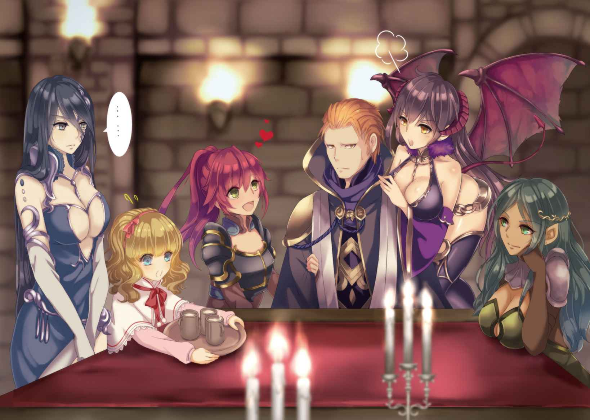

| 魔王の始め方1 魔王の始め方シリーズ | |
| I of魔王の始め方シリーズ | |
| 笑うヤカン & 新堂アラタ | |
| キルタイムコミュニケーション (2015) | |
| Rating: | ***** |
| Tags: | Kindle本, ラノベ・BL, ライトノベル |
内容紹介
小説投稿のサイト「小説家になろう」の男性向けサイト「ノクターンノベルズ」からついに書籍化！
ただ一人、黙々と地下道を掘り続ける老人。
その姿が突如ぎらぎらと双眸を輝かす若者へと変貌する。
──彼の名はオウル。
人生をかけた研究の末、ついに"魔王"となるべき資格を得たのだ！
手始めにサキュバスの美女、リルと契約すると、
彼は自らの国土となる広大なダンジョンの創造へと乗り出していく!
「俺は人間を信じておらん。人は必ず裏切る」
人間不信の魔王が世界に挑む、
ダークファンタジー＆ハーレムロマンここに開幕！
内容（「BOOK」データベースより）
ただ一人、黙々と地下道を掘り続ける老人。その姿が突如ぎらぎらと双眸を輝かす若者へと変貌する。―彼の名はオウル。人生をかけた研究の末、ついに"魔王"となるべき資格を得たのだ!手始めにサキュバスの美女、リルと契約すると、彼は自らの国土となる広大なダンジョンの創造へと乗り出していく!人間不信の魔王が世界に挑む、ダークファンタジー&ハーレムロマンここに開幕!
※本作品の全部あるいは一部を無断で複製・転載・配信・送信したり、ホームページ上に転載することを禁止します。本作品の内容を無断で改変、改ざん等行うことも禁止します。また、有償・無償にかかわらず本作品を第三者に譲渡することはできません。
※本作品は電子書籍配信用に再編集しております。

目次
重く鈍い鉄の鎖が、じゃらりと音を立てる。
両腕を拘束する手枷が、まるであざ笑っているかのようだ。
うんざりするほど真っ青な、雲一つない空が目に広がる。
その下で黒煙を上げる塔を、彼はただ虚ろな瞳で見つめた。
「さっさと歩け」
名も知らぬ兵士に鎖を引かれ、家畜のようにのろのろと少年は歩く。
この先、彼には一切の自由がないのだろう。
だが、それも、どうでも良い事だった。
全ては失われた。住む場所も、愛するものも、何もかも。
今更自由一つを失ったとて、何だというのか。
彼はもう一度振り返って、燃え落ちていく塔を見た。
在りし日の残骸が、音を立てて崩れ落ちていく。
その様に、空虚な心に一つだけ想いが沸きあがった。
──この日、自分を裏切ったものを、絶対に許さない。
琥珀色の髪の若き魔術師は、そう心に誓った。
プロローグ
暗く深い、日の光など射しようもない地の底で、男はつるはしを振るっていた。
狭く暗い地下道に相応しい、みすぼらしい男だ。
男は相当な高齢らしく、顔は皺に覆われていない箇所はなく、背は曲がりに曲がっている。身につけているのもボロボロになった灰色のローブで、それも狭い地下道の埃と土にまみれ、その惨めな様相をいっそうみすぼらしくしていた。腰につけたランタンもかなりの年代物で、辛うじて男とその周囲を照らしている。
全身は汗にまみれ、つるはしを振るう腕にもはや力はない。
息も絶え絶えで、いつ絶命してもおかしくないほど男は疲弊しきっていた。
見た目も中身も疲れきり、磨耗しきったその男の中で、目だけがぎらぎらと強い光を放っていた。
男は何かに取り憑かれたかのように、必死につるはしを振るう。振るう。振るう。
そして、ついに。
不意にごとりと音がして、土壁の一部が崩れた。
男は目を見開き、その向こうを見る。
「ふ......ハハッ、アハハハハハ！」
そして、今までにも勝る熱心さでつるはしを振るい始めた。
土壁はみるみるその亀裂を増していき、やがて人が通れるほどの大きさになる。
男はつるはしを放り投げると、哄笑と共にその中に躍りこんだ。
「ハハハハハ！ やった、ついにやったぞ！ この、味わいさえ感じるほどの芳醇な魔力の香り！ ついに見つけ出したのだ！」
男は自身の胸元を探ると、首にかけていた首飾りを強引に引きちぎった。乞食よりもみすぼらしい男が身につけていた唯一の装飾品であるそれには、小指の先ほどの大きさのガラスで出来た瓶が繋がれていた。
その瓶を男は地下道の先にあった空洞の中心に掲げる。すると辺りの空気が渦巻き、ゆっくりと瓶に凝集していく。それと同時に、瓶の中には琥珀色の液体が湧き出てきた。
「視認さえ出来る高濃度の魔力の結晶......！ 素晴らしい、これだけあれば！」
男は瓶を地面に置くと、低い声で呪文を唱え始める。半刻（一時間）ほどもそうしていただろうか。長い長い呪文は徐々に熱を帯び、弱弱しく呟くように紡がれていたそれはいつの間にか朗々と、力強い声によって唱えられる。
最後には半ば叫ぶようにして呪文は終わりを告げ、それと同時に男の身体は強い光に包まれた。
「力が、溢れてくる......これが若い肉体というものか！」
光が消えた後には、若く逞しい青年が立っていた。
腰が曲がり、皺に覆われた老人の面影は微塵もない。真っ直ぐ剣のように伸びた背に端整な顔立ち。四肢は力に溢れ、肌は絹のように滑らか。ただ一つ、ぎらぎらと光る双眸だけが元の老人と共通していた。
「おっと、もう一杯になるか」
瓶になみなみと湧き出てきた液体は、早くも瓶の九割ほどを満たしていた。
男が若返った時に僅かにその量を減じさせたものの、溜まる速度の方が圧倒的に早い。
短く呪文を紡げばその指先から琥珀色の魔力が溢れ、瓶を貫く。
すると瓶は見る間に大きく膨れ上がり、人ひとりが入れるほどの大きさになった。
「これで当分は持つだろう。さて......」
男は先ほどよりも少し長めの呪文を唱え、腕を振るう。まるで箒で掃くかのように光の幕が壁を撫でて、天然の洞窟はレンガで造られた殺風景な地下の一室へと姿を変えた。
次いで、男は指の先に歯を突き立て、石畳の床に血で魔法陣を書き始める。
書きあがった魔法陣を軽く撫でてその出来を確かめると、男は更に呪文を唱え始めた。
若返った時よりも更に長く、複雑な呪文だ。
男の額には珠のような汗が噴出し、苦痛に顔が歪む。
空気が震え、腰に吊るしたままのランタンの炎がふっとかき消えた。
それまで静寂を保っていた空間に、弓の弦を絞るような音がギリギリと鳴る。
光の消えた空間を支配していた闇が、まるで意思を持つかのように蠢き、ゆっくりと形をとり始める。
その影は明かり一つない暗闇の中でなお暗く、はっきりとした輪郭をとり......
そして、鈴の音のような声をあげた。
「......わたしを呼んだのは、あなた？」
男の前に現れたのは、申し訳程度の衣服に身を包んだ妖艶な美女だった。
黒々とした髪は長く艶やかで、白い肌を包むように伸びている。
ほっそりとした手足はすらりと伸び、しかし出るところはしっかりとその存在を主張していた。
「そうだ」
女の問いに、男は頷く。
「そう......じゃあ、呼んでくれた御礼にとびきりの夢を見せてあげる。この魔法陣を消してもらえる？ このままじゃ、その素敵な唇にキスする事も出来ないわ」
縋るような弱々しさで、女は甘い声を出した。それを男は冷笑する。
「それは出来ないな。その魔法陣を消してしまえば、お前は自由に行動する事が出来る。お前はすぐさま俺の魂を奪って魔界に戻るだろう。魔法陣を消すのは、契約を結んでからだ」
男がそう言った瞬間、女の表情が一変した。
哀れみを誘う弱々しい少女のものから、ふてぶてしく経験豊富な娼婦のそれへと。
「つまんないの、ちょっとした冗談じゃない。これだけの魔力を用意出来る魔術師がそんな初歩的な失敗をする訳がないんだから」
女悪魔は空中に椅子でもあるかのように虚空に腰掛け、足を組む。
意識するとしないとにかかわらず、その動作は扇情的で艶めかしかった。
「で？ わたしは何をすればいい訳？ 愚かな男達から精を吸い上げる？ それとも、あなたの敵に無限の悪夢を見せてやる？ あなた自身に最高の夜を見せてあげるのもいいけど」
「うむ。お前にはダンジョンを作ってもらいたい」
「はあ!?」
男の言葉に、思わず女悪魔は見えない椅子から転げ落ちた。
「淫魔のくせに色気のない転び方をするな。そんな下着みたいな格好で脚を広げられても、かえって興ざめするというかだな......」
「そんな事はどうでもいいっ！ 今、なんかダンジョンを作れって聞こえた気がしたんだけど？」
「ああ、そう言った」
男は頷き、両腕を一杯に広げ地下室をぐるりと見渡す。
「いまだかつて誰も見た事のないような、深く、広く、凶悪な迷宮を。無数の罠と、怪物どもと、財宝が待ち受ける大迷宮を。地下の世界を統べるかのような、途方もないダンジョンを作って欲しい」
女悪魔は思わず頭を押さえた。病気などとは無縁の身だ。
直接的な打撃以外で頭痛を覚えるなど初めての事だった。
「あのね......百歩譲って、そのダンジョンの守衛として召喚されるならまだわかる。そういう条件で呼ばれた事もなくはないしね。でも、ダンジョンを作れってどういう事よ!? そんな事はゴブリンかゴーレムにでも任せなさいよ！」
「無論、穴を掘る作業はそういった者どもに任せる。だがそれ以外の膨大な作業を手伝う者がいるのだ。ダンジョンの通路は、部屋はどのように配する？ 罠と怪物どもは？ 守衛となる魔物も生き物なら、餌がいる。その調達は如何にする？ 我が迷宮が大きくなれば、それを脅かそうとする不届き者も出るだろう。そのような輩への対処は？ 考えるべき事、すべき事は無数にある。それを、貴様に手伝ってもらいたい」
「......それはわかったけど、何でわたしな訳？」
ようやく体勢を直し問いかける女悪魔に、男は指を三本突き出してみせる。
「理由は三つだ。まず第一に、俺は人間を信じておらん。人は必ず裏切る。妖魔や亜人の類もそれは同じだ。お前達悪魔は隙あらば人を陥れようとするが、契約を破る事は絶対に出来ない。だから、人間ではなく、悪魔を選んだ。第二に、通常悪魔は高位になればなるほど高い力と知恵を持つが、その分だけ契約や存在の維持に大量の魔力が必要となる。お前達淫魔は人間の欲望に密接に関わり、精を吸い取る事を生業としている変わり種だ。さほど強くはない代わりに、必要な魔力に比して賢く、人間の感情の機微にも聡い。だから、淫魔を選んだ。第三に......」
男はそこで言葉を切り、女悪魔の身体を眺めてニヤリと笑みを見せた。
「どうせ傍に置くなら、見てくれだけでも美しく若い女が良い。だからお前を選んだ」
女悪魔は、一瞬ぽかんとして男を見た後、くすりと笑った。
「......なるほどね。いいわ、その仕事、手伝ってあげる」
「では、この契約に名をもって同意してくれ」
男は懐から紙を取り出し、女悪魔に見せる。相も変わらぬ暗闇の中だが、闇の眷属たる悪魔にそんな事は関係あるはずもない。
「契約内容を用意してあるの？ 準備がいいのね......って細かっ!? 一体何条あるのよコレ!?」
魔法陣越しに提示された羊皮紙には、細かい字でびっしりと条文が書かれていた。
「言っただろう、お前達悪魔は隙あらば人間を陥れようとする、と。それを防ぐ為の条文だ。極端にお前の不利になるような不平等な条文はないから安心しろ......と言っても信用は出来んだろうからな。好きなだけ確かめるがいい」
「そんな事しなくったって裏切ったりしないって、もう......あーもう字が細かすぎるのよ......」
ぶつぶつと文句を言いながら目を細めつつ、条文に目を走らせる。
「ん、とりあえずはいいわ......これ、目に見えないくらい細かい文字とか、特殊なインクで普通には見えない文字とかで書いた条文が隠されたりしてないでしょうね。あったら契約自体無効だからね」
疑いの眼差しを向ける女悪魔に、男は心外そうに眉をひそめた。
「そちらの不利になるような文はないと言っているだろうが。疑い深い奴だな」
「お前が言うなっ！ ......まあいいわ。じゃあ、契約するよ」
「ああ。汝、サキュバスよ。この契約に従い、名をもって我が力となるか？」
名前は、魔術師や悪魔といった魔に関わる者達にとって重大な意味を持つ。
ある程度以上の力を持つ者であれば、相手の名前を知るだけで呪いをかけ、その魂を支配する事さえ出来る。
悪魔との契約はそれを利用したものであり、名前をもって結んだ契約はお互いにいかなる事があっても破る事は出来ない。
「我が名、リルシャーナにかけて誓う。契約に従い、あなたに力を貸しましょう」
「ならば、我が名アイン・ソフ・オウルにおいて、この契約を守る事を誓おう」
宣誓の言葉に応じ、契約書が光り輝く。そして、炎に包まれると一瞬にして燃え尽きた。
契約内容は二人の魂に刻み込まれ、追記も改変もけして出来ない存在となったのだ。
「では、これからよろしく頼むぞ。......俺の事はオウルと呼べ」
「はいはい。わたしはリルでいいわ......よろしくね、オウル」
変なのと関わっちゃった気もするけど。
その言葉を、リルは辛うじて飲み込んだ。
魔法陣を越えて、互いの手が握られる。
こうして、二人の迷宮作りの日々が始まった。
「それでさっきから気になってたんだけど」
狭い魔法陣を抜け出し、手足と翼をぐっと伸ばしながらリルは背後を振り返る。
「コレ、何？」
その視線の先に佇んでいるのは、巨大なガラスの瓶。
リルを呼ぶ前にオウルが設置したものだ。
「それは......そうだな。ダンジョンコアとでも呼ぼうか。これからのダンジョン作りにおいて核となるものだ」
説明しながら、オウルは短く呪を唱えて掌に小さな炎を灯し、部屋の四隅に浮かべて明かりにした。
「『魔力』とは何かわかるか？」
問うオウルに、リルは頬を膨らませて答える。
「馬鹿にしないでよね、これでもわたしは悪魔よ？ 魔力は全ての『魔』に関わるものの根源。魔法も、魔物も......そして勿論、わたし達悪魔もそれを源にしてる。『創造主』が作り上げたこの世界を僅かでも捻じ曲げ、汚し、作り変えるもの。それが『魔』であり、魔力であり、悪魔って訳よ」
リルの言葉に納得した様子で、オウルは頷く。
「ではこれは知っているか？ 魔力というのは、土や大気、水、生き物......ありとあらゆるものに内在しているが、その大部分は地中に存在する。地中の魔力は一つところに留まっている訳ではなく、道や河のように流れている。この魔力の道を龍脈という」
「......で、それとこれと何の関係がある訳？」
説明を理解出来たのか出来てないのか良くわからない表情で、ペタペタとダンジョンコアを触りながらリルは問う。
「今いるここは、その龍脈の真っ只中だ。そして、このダンジョンコアはその龍脈の魔力を吸い上げる事が出来る」
炎の明かりに照らされ琥珀色に輝きながら揺れる液体を、リルは目を丸くして見つめた。
「え、もしかしてこの水......魔力、とか？」
「そうだ」
「嘘でしょお!?」
頷くオウルに、リルは素っ頓狂な声をあげる。
「液体状になるくらいの濃度の魔力なんて、並みの魔術師じゃ振り絞っても一滴、二滴がいいところじゃない！ こんな量、人間の魔術師が扱える量を遥かに超えてるわよ......それに、こんなに近くにあるのに全然魔力の匂いがしないってどういう事？ ちょっとしたマジックアイテムだって匂いですぐわかるのに、こんな量の魔力が傍にあって匂いがしないなんてある訳ないじゃない」
「匂いでわかるのか？ 悪魔というのも便利だな。......簡単な話だ。この瓶は完全に内部に魔力を閉じ込められるようになっている。全く外に魔力が出なければ、匂いもする訳はない。これだけの魔力を人の身に宿そうものなら瞬時に正気を失うだろうが、瓶に入れて必要な分だけ使うのならば何の問題もない」
リルは思わず、オウルの顔とダンジョンコアを交互に見比べる。
「完全に魔力を遮断って......凄い技術ね。そんな事が本当に可能なの？」
「ああ。我が七十年に及ぶ研究の集大成だ。ようやく、ここまで漕ぎ着けた」
感慨深そうに言うオウルに、リルは感心したものか呆れたものかしばし悩み、やがて後者を選んだ。
「七十年て、あなた本当は何歳よ......まあいいわ。大体納得した。こんな濃度の魔力を無尽蔵に得られるなら、それこそ世界を統べる事も可能かもしれない。この瓶を守らなきゃいけないから、ダンジョンを作るのも。......で、ダンジョン作りってまずは何から始めるの？」
「そうだな......まずは後ろを向け。そして、手をそこの壁についてくれ」
「？ ......こう？」
リルは言われるままにオウルに背を向け、壁に両手をつく。
「ねえ、この体勢ってまるで......あっ!?」
言いかけ、リルは己を貫いた感覚に高く声をあげた。
後ろから、オウルがリルの服をずらし、そのままリルの秘部を貫いてきたのだ。
「なんだ？ まさか生娘だったなどとは言わんだろうな」
「な訳ないでしょ！ ......もうっ、するんならするってちゃんと言ってよね」
言葉こそ批難がましいが、声は既に甘く蕩けている。
「何もせずに突っ込んだのに、随分濡れているな」
「そりゃ、......んっ......淫魔、だから......ねっ......あ、そこ、いぃ......っ」
リルのそこは、何時間も愛撫したかのようにぐっしょりと濡れそぼっていた。
快楽を感じているから......では、ない。それが淫魔だからだ。
いつでも性交を行い、どんな男でも満足させるように身体自体が出来ている。
「でも、意外ね......ん......っ、わたしを、呼びつけて......は、ぁ......いきなり、ダンジョン作れなんて言うから......こういう事、興味ないのかと思った......」
「それは誤解だ。確かに、今交わっているのはダンジョン作りの一環ではあるが、それはそれとして俺はセックスに興味がない訳ではない。いや、むしろ大いに興味があるぞ。折角迷宮を作り、力を手に入れて富も女も求めないでは何の意味もないだろう？」
「なにそれ......ふふ、は、ぁ......エッチしたいから......んっ......ダンジョン、作るって......訳？」
喘ぎ声をあげながらクスクスと笑うという技を見せながら、リルはくるりと身体を回転させた。脚を大きく広げ、正常位のような格好になる。身体を支えるものがないのに空中でこのような格好が出来るのは悪魔ならではだ。
「でもいいわ......そういう事なら......んふ......たっぷりとサービスしてあげる」
リルは申し訳程度に肌を覆っていた服を脱ぎ捨て、その豊満な双丘をオウルの顔に押しつける。
それと同時に、奥までオウルの一物を咥え込んだ膣内を蠢かせた。
「く、ぅ......淫魔と交わるのは初めてだが......流石に凄いな。魂まで......搾り取られそうだ」
「んふふ......ありがと。あなたのも大きくて硬くてとっても素敵......んっ、契約さえなければ、このままカラカラになるまで、搾り取っちゃうところなんだけど......ね」
空中で腰を上下させながら、文字通り搾り取るようにリルは膣を蠢かせる。
男の精を搾り取る事をその生業とするサキュバスにとって、そこは身体の中で最も自由に動かせる器官と言っていい。若返らせた肉体の影響もあいまって、オウルの限界はすぐそこまで近づいていた。
「随分と、余裕だな......」
「そりゃ、サキュバスですから......ぁん............もっと、泣き叫んで嫌がる方がお好みだった？」
淫魔にとって性交は食事に等しい。勿論それは彼女にとっても快楽ではあるのだが、人間のそれと違い、完全に制御出来るものだ。その快楽に流されて我を失ったり、気をやってしまうような事はありえない。
「そんな白々しい演技はいらん......くっ、イくぞ......！」
「うん、来て......！ 中に、あなたのを中に出して......っ!? え、ちょっと、嘘！ 何これ......あっ、あああぁぁぁぁああああっ!!」
リルの中でオウルは精を放つ。それに一瞬遅れ、リルは声をあげながら身体を震わせた。
今までの作り物めいた嬌声ではない。
「な、何、今の......？」
「悪魔の実体は、常にこちらの世界とは隔絶された魔界にあるらしいな」
未だ繋がったまま、おもむろにオウルはリルの胸を揉みしだく。
「え、あ、ちょ、何、なんなのこれえ......」
初めての感覚に戸惑いながらリルは身をよじらせるが、オウルの片腕は彼女の腰をしっかりと抱いて離さない。
「意識や自我はこちらの世界に来てはいるが、身体は魔力で作られた仮初のもの。だから、必要以上の苦痛は感じないし、仮に粉々に破壊されても元の魔界に戻るだけ、と。実に便利だが、魔力で作られているという事は、魔力で干渉し、作り変える事も出来るという訳だ」
「え、あ、あ、あ、駄目、待って、ん、あ、あ、あ、ああっ......！」
射精した後もオウルのものは硬度を失わず、ゆっくりと抽送を再開する。
「という訳で、お前も人並みに快楽を感じ、乱れ、気をやれるようにしてみた。ああ、害になるような事はしていないから安心してくれ。ただ、こうして......」
オウルはずん、と腰を突き出した。
「あああああああああぁぁぁっ！」
「一緒に楽しめるようにしただけだ」
「ま、待ってぇ、ちょっと、待っ......んうっ！」
息も絶え絶え、といった様子で停止を求めるリルの口を、オウルは自らの口で塞いだ。
その動作の間にも、片手で胸を揉みしだき、もう片方の腕で腰を抱き寄せ、剛直を激しく出し入れしている。
人間の女ならあまりの激しさに快楽よりも苦痛を味わうところだろうが、そこは淫魔の身体である。全ての動作が余す事なく快楽へと結びつき、更に貪欲に快楽を求めていた。
「さっきまでより断然いいぞ......ああ、最高だ......出すぞ......っ！」
「駄目、もう、ああっ、もっと、いや、あ、あ、あああああっ！」
自らの中に入り込んでくる精液の感覚に、リルは身体を仰け反らせびくびくと震える。
もはや彼女にとって、オウルの精液は強力な媚薬に等しい。身体に触れるだけで強烈な快感が身を貫き、膣内に出されればそれが絶え間なく襲いかかってくる。その上、オウルは出しても出しても全く萎える事なく、更に抽送を繰り返すのだ。
「ま、待って、おか、し......おかし、く、なっちゃ......」
「犯して欲しい？ ......是非もない、契約した記念だ。今晩は一晩中可愛がってやろう」
「ちが、あ、んっ！ ちがぁ、う、あぁんっ！」
地下迷宮とはとても呼べぬ何もない地下の一室に、女の艶めかしい嬌声が響き続ける。
......そうして、一日目の夜はふけていった。
Ｓｔｅｐ．１ 近隣の村を襲撃しましょう
１
「ううう、死ぬかと思った......」
体中精液にまみれ地面に突っ伏しながら、リルはオウルに恨みがましい視線を向けた。
「馬鹿を言うな、情交で死ぬ淫魔などというものがいる訳がないだろう」
それに対し、オウルは何十回と精を放ったにもかかわらず疲れた様子もない。
「あなた、化け物？ 一体何回出したのよ......」
「良かっただろう？」
ニヤリと笑みを浮かべるオウルに、ぷいとリルは目を背ける。初めて味わう快感に腰砕けになり、力も入らないリルをオウルは一晩中犯し続けた。膣は勿論、口や尻の穴にも幾度となく精を注ぎ込み、リルが動く体力もなくなってからは体中に精を放ち汚した。
行為自体に不満は全くない。そもそも契約自体に好きな時にリルを抱く事は入っていたし、そうでなくとも性愛を生業とする淫魔である。むしろ、今まで感じた事もない快楽を味わえた事は彼女にとって非常に大きな感動であり、喜びであった。
しかし、魔力で無理やり感じさせられた上に、人間にいいように身体を弄ばれたという事がリルの淫魔としての自尊心を傷つけたのは確かであり、素直に良かったと認める気にはなれなかった。
「まあそう拗ねるな。何も無為にお前を弄んで楽しんだという訳ではない。これも大局的な目で見ればダンジョン作りの一環だ」
「......なんでこんなのがダンジョン作りの一環になるのよ」
ようやく体力が少しは回復し、リルは上半身を起こす。
「ダンジョンコアは龍脈から魔力を汲み取る。溜まっている量も汲み取る速度もまだ大した量ではないが、体力を回復させる程度の術であれば無制限に使える程度ではある。魔力で体力を補いながらならば、半永久的にお前とまぐわっている事も可能だ」
オウルは自身の異常な体力の種明かしをした。肉体の状態を数刻前に戻し、体力を回復する。衰えれば、再び数刻前に戻す。そうする事で、無限の精力を得ていたのだ。大量の魔力を消費する術ではあるが、若返る事に比べれば造作もない。
「が、それもこの迷宮内、ダンジョンコアのすぐ傍でだけの事だ。およそ三十フィート（約九メートル）以内。その距離にいなければ俺はコアから魔力を取り出す事は出来ん。そこで、だ」
オウルはリルの頭にぽんと手を置き、短く呪文を唱える。すると、魔力がリルの体内からオウルへと吸い込まれ、次に瞬く間にリルの身体に活力が戻り、ついでに身体に付着した精液が吹き飛んだ。
「このようにお前の身体に俺の魔力を精と共に仕込んだ。お前は悪魔だから、並みの魔術師の数倍は魔力を溜めておけるな。移動出来る小型のダンジョンコアのようなものだ」
ピクリ、とリルのこめかみが引きつるように動くのに、しかしオウルは気付かない。
「今後、ずっとダンジョンに篭もっている訳にもいかん。が、俺の魔力だけではどうしようもないからな。しかし流石悪魔だな、許容量一杯まで魔力を溜めるのに一晩かかった。まあこれだけ溜めれば当分は大丈夫だろうが......」
「ふざけるなあっ!!」
オウルの言葉を遮り、リルは叫ぶと拳を振り上げた。
「あーもうこの馬鹿殴りたい！ 契約で危害加えられないから殴れないけど、すっごい殴りたい！」
「な、何故怒る!?」
オウルとしては必然性を説く事でフォローしたつもりだったのだが、その説明は火に油を注ぐものでしかなかった。ちょっと拗ねた、程度だったリルの感情は完全に怒りに燃えている。
男を誘惑し、情を交わす事が種としての存在意義と言ってもいい淫魔に対し、一方的に身体を蹂躙した挙句、ただ魔力タンクとして必要だったから、などと言い放ったのだ。リルにしてみれば存在自体を全否定されたに等しい。
「煩い、あんたなんかゴブリンでも犯してなさいよ！ このダンジョン馬鹿、若作り爺！」
リルはひたすらに罵詈雑言をわめき散らした。契約で悪態は制限されていなかったからだ。
人間に対してこんなに怒りを抱くのも、悪魔として生まれて初めての事だった。
２
「という訳で、これからあの村を襲撃する。......いい加減機嫌を直さないか？」
オウルにとっては数ヶ月ぶり、リルにとっては前回人間に召喚された時から数えて数十年ぶりの地上。遠くに見える小さな村を指差し、オウルは相変わらず臍を曲げたままのリルにそう言った。
「別に機嫌悪くなんてない」
明らかに機嫌の悪い声色で答えるリルに、オウルは内心ため息をつく。
流石にオウルも自分の行為ではなく発言が悪かったのだろうとは気付いていたが、だからといって機嫌を直すような気の利いた言葉は思い浮かばなかった。盛りのついた若い男じゃあるまいし、小娘の機嫌を取るのも馬鹿馬鹿しいのであまり気にしない事にする。見た目も言動も若い娘とはいえ悪魔は悪魔だ。機嫌で仕事の質を左右されるような事はあるまい。
「では、改めて確認をしよう。俺はある程度魔術を修めてはいるが、その研究の大半はダンジョンコアに費やされたものだ。魔力の取り扱いについては世界でも有数である自負はあるが、戦闘経験はほとんどないし荒事には向いていない。ただの村人に負けるような事はなかろうが、ある程度の腕を持った剣士でも出てくれば少々辛い。つまり、お前だけが戦力という事だ。頼んだぞ」
「......いいわ、皆殺しにしてやる！」
凶悪な目つきをしながら唸るようにリルは答えた。八つ当たりされる村人達に若干の同情をしつつ、オウルは彼女を伴い、村への入り口へと向かう。
村の入り口には魔除け代わりの怪物の石像と、村娘らしき女がいた。
「よし、じゃあまず一人目......ってけふっ！」
オウルは早速襲いかかろうとするリルの首根っこを掴み制止する。
「なにすんのよ！」と抗議するリルを無視し、村娘に伝える。
「そこな娘よ。ここに長を連れてこい。邪悪なる魔術師、オウルが貢物を要求しに来たとな。逆らえば死のみが待っていると知れ」
「......はあ？」
いきなりの尊大な物言いに、娘は怪訝な表情を浮かべる。まるきり気の触れた人間を見るような目だ。オウルは短く呪文を唱えると、炎の球を掌に浮かべ、村を囲む柵に向けて放った。
炸裂音が響き、粗末な木製の柵が粉々に飛び散る。そのまま別の柵に燃え移り、もうもうと黒い煙を吐き出した。
「二度は言わぬ。村全てを灰塵に帰したくなければ急げ」
オウルが低い声で言うと、女は飛び上がるようにして村の奥に駆けていく。
「めんどくさいなー。問答無用で皆殺しにしちゃえばいいんじゃないの？」
リルが不服そうに物騒な事を言う。
「殺さない方が使えるからな。とはいえ逆らうなら容赦はせん。そしてこの村は、逆らうだろうな」
「何でそんな事わかるの？」
「まあ見ていろ」
ニヤリと笑うオウルに、リルは何やら嫌な予感を覚える。
しばらくして、村長と思しき壮年の男が杖をついてやってきた。年齢は四十すぎ半ば。茶色い髪のガッシリとした体格の男だ。
「お待たせしました、オウル様。何でも、貢物をご所望との話ですが......」
「ああそうだ。こちらの要求を呑めばよし、呑まぬならばこの村には灰になってもらう事になる」
「それはそれは恐ろしい......勿論、おさめさせていただきます......」
村長は頭を深々と下げ、祈りを捧げるように杖を両手で掲げた。
「......鉄の剣で良ければなッ！」
その杖が半ばから二つに分かたれ、中から現れた白刃が煌めいた。仕込み杖だ。
刃を引き抜くと同時に流れるように間合いを詰め、村長はオウルの首を狙う。完全に虚をついた、必殺の一撃。しかし、それをオウルは難なくかわした。
「チッ、かわしたか......」
「リル、俺を守れ」
契約に基づいた命により、リルはオウルを庇うように前に出る。それとほぼ同時に、村長の背後にも民家の陰からわらわらと武器を持った男達が出てきた。
「ちょっと！ どういう事よ!?」
「端からこちらに従う気などなかった、という事だ。とはいえ、芝居が下手だな。お前のような五十にもならん男が杖をついて歩いては、折角の暗器がバレバレだろうが」
前半はリルに、後半は村長に向けオウルが言う。
「ご忠言痛み入る。次からは気をつけるさ......アンタを殺した後でな！」
村長が剣を振るい、リルに襲いかかる。
リルは爪を剣のように長く伸ばし、それを辛うじて受け止めた。
「オウル、こいつ強い......！ あたしじゃかなわない、逃げよう！」
「駄目だ」
何とか剣を爪でいなしながら、リルはオウルにだけ聞こえる声で囁くが、返ってきたのは拒否の言葉だった。今は何とか凌いでいるが、村長の背後から走ってくる男達が加勢すればリルでは防ぎきれない。そもそもサキュバスは戦闘向きの悪魔ではないのだ。
それでも中級程度の格はあるからちょっと剣をたしなんだ程度の敵なら相手出来るが、この村長は明らかに手だれと言っていい腕だ。
キィン、と澄んだ音が鳴り響き、リルの爪が半ばから両断される。
「じゃあな、悪魔の嬢ちゃん。恨むなら馬鹿な主人を恨みな。すぐに同じところに向かわせてやるからよ」
村長が剣を振りかぶる。
「今だ、殺せ」
そして、灰色の腕がその胸から生えた。
「......え？」
リルが呆けたように声を出す。その場にいた誰もが状況を把握出来ず、呆然と動きを止めた。
生えたのではない。村の入り口にあった守護像が動きだし、村長の胸をその腕で貫いたのだ。
村長は声をあげる暇もなく絶命し、地に倒れる。
「後は戦闘の訓練も積んでない有象無象だ。任せたぞ、リル、ガーゴイル」
呆然とする人々を置いてオウルはその場を立ち去る。
その後は、一方的な虐殺が始まった。
「ねえ、いつの間にガーゴイルなんか置いたの？」
数十分後。動く者のいなくなった村......いや、村の跡地で、リルはオウルに尋ねた。
「石像を魔力で動かしたのかと思ったら、あれ本物のガーゴイルなのね。びっくりしたわ」
ガーゴイルとは、ある意味で最も有名な悪魔の一種だ。翼を持った見るからに悪魔然とした醜悪な外見を持つ悪魔だが、最も特徴的なのは動いてないと石像と区別がつかない、というところにある。
その為、ガーゴイルを模した石像が多数作られ、盗賊への脅しや魔除けの像として扱われている。「もし本物だったらどうしよう」と思うだけで、ある程度の抑止効果があるのだ。だがまさか、村長も自らの村を守っているはずの像に殺されるとは思ってもみなかっただろう。
「あれを置いたのは大体三十年前だな」
「は？」
予想外の答えに、リルは思わずあんぐりと口を開く。
「この近辺に龍脈がある事は五十年も前には気付いていたから、足掛かりにする為に行商のフリをして売りつけた。『なんと精巧なガーゴイル像なんだ！』と喜んで買っていったよ。当然だ、本物なのだからな。そして、そのガーゴイルを通じて今の村長の実力や気風は知っていた。あいつは元冒険者で、昔はそこそこ名の知れた剣士だったそうだ。素直に従う訳がないから、殲滅しやすいように集まってもらった訳だ」
「なるほどね......本当、あんた嫌になるくらい周到で狡猾ね」
「誉め言葉と受け取っておこう」
面白くもなさそうに答え、オウルは魔術の準備を終える。それは巨大な魔法陣だった。
村の中央に描かれた円形の陣の上に、村人達の死体が累々と積みあげられている。
「さて、始めるか。この数は少々億劫だ。魔力をもらうぞ」
言うや否や、強引にリルを抱き寄せ唇を奪う。リルは少し嫌そうにするが、抵抗はしない。
「......一応いっておくが、魔力を取り返すなら手を握るだけでもいいからな」
「あーそーですかー」
どうでも良さそうに言葉を返すが、視線をこちらに寄越さないという事はまんざらでもなかったのだろう。
ようやく多少は機嫌が直ったか。面倒な事だ......と内心思うが、オウルにとって意外な事に、それは思ったほど不快でもなかった。
オウルは口付けが最も効率良く魔力を取り返せる、という説明はしない事にして、魔法陣に向き直り、居住まいを正すと、長い呪文の詠唱を始めたのだった。
３
「さて、これで一応の戦力が整ったな」
目の前に立つ老若男女を見、オウルは頷く。年齢も性別もバラバラなその集団は、やはりバラバラに剣だの棒切れだの農具だの、武器になりそうなものを手にしている。
共通しているのはただ一つ、「皆死体である事」だけだ。彼らはいわゆる動く死体であり、オウルの魔力で仮初の命を吹き込まれた生ける屍である。
「あなた、本当に他人を信用してないのね......」
周りを見渡し、リルは呟く。ガーゴイルは契約によってオウルに完全服従を強いられている。命令された事だけを忠実にこなし、命令されていない事はけして出来ない。中級以下の悪魔と契約する時には良くある種類の契約だ。
死体達にはそもそも自我さえ存在しない。オウルの魔力によって動いているだけの操り人形だ。唯一自由意志を持っており、ある程度自分の意思で動けるリルも、やたらに細かい契約によって出来る事は限られている。
その徹底した対応に、過去に何かあったのだろうとリルは当たりをつけたが、それに対して詮索はしない。オウルの事を慮ったのではない。契約に「過去を詮索しない」という条項があるからだ。
「では、次の村に行くか」
リルの呟きが聞こえなかったのか、それとも聞こえたが無視しているのか。
オウルは呟きに答える事なくそう言った。
「次？ まだ村を襲うの？」
この村にあった食料や金品はそれぞれ持てるだけ死者達に持たせてある。それほど豊かな村ではないとは言え、冬が近いせいか膨大な量だ。悪魔であるリルに人間の食事は必要ないし、オウル一人には十分すぎる量がある。
「いいや、むしろここからが本番だ」
ニヤリと笑みを見せるオウルに、リルは額に手を当てた。まだ丸一日程度の付きあいだが、この笑みを見せる時のオウルは大体ろくでもない事を考えているとわかってきたからだ。
空間自体が破裂するかのような独特の轟音と共に、稲妻が地面を焦がす。
天気は雲一つない晴天。雷どころか雨さえ降りようのない状態で落ちた稲妻は、オウルの魔術によるものである。
魔力を食う割には攻撃範囲も狭く、威力もそれほど高い訳ではない。生物を殺すには十分であるが、石や岩といった無生物にはほとんど効果がないのだ。そんな使い勝手の悪い魔術であるが、相手をただ脅すのにはかなり有効な術だった。
突然の雷鳴に驚き、村人達が何事かと家から出てくる。そこで目の当たりにしたのは、灰色のローブに身を包んだ怪しい男と、申し訳程度の衣装に身を包んだ女、そして、血だらけの軍勢だった。
「良く聞け。我が名は邪悪なる魔術師、オウル」
「さっきも思ったんだけど、邪悪なる魔術師って自称するのはどうなの？」
「煩い。こういうのはわかりやすい方がいいんだ」
小声で突っ込みを入れるリルに、やはり小声で言い返す。
「今日は貴様らに『取引』を持ちかけに来た」
とりあえずオウルは、すぐ目の前にいる一番年嵩の男に向けて話を進める。
「と、取引......ですか......？」
先ほどの村に比べ、こちらの村はかなり及び腰だ。前の村の村長のような手だれがいない事もあるが、オウルの背後に控えるアンデッド達の存在も大きい。
「そうだ。我に月に一度食料を、そして年に一度美しく清らかな乙女を捧げよ。さすれば、我が祝福を汝らに与えよう。作物は凶作に見舞われる事なく、狼も小鬼も盗賊も汝らを脅かす事はなくなるだろう」
リルが意外そうな顔をするが、それは無視する。
「その......もし、取引に応じなかったら......？」
恐る恐る尋ねる村人に、オウルは軽く手をあげる。その合図と共に、背後の死者達が数歩前に出た。
「この者達は、取引に応じなかった愚か者どもだ」
「──ゲオルグさん......！」
中でも『村長だったもの』の顔を見て、村人達の何人かが声をあげる。
「あのオッサン有名人だったんだね」
「あの程度の規模の村にしては破格の腕だ。さもあろう」
オウルはリルの呟きに答えてやる。
「我に敵対するならば、待つのは死などという生ぬるいものではない。──果てなき永遠の苦役だ。しかし、取引に応じるならば汝らは百年の豊穣を得よう。差し出す食料よりも豊かな実りを。差し出す娘よりも多くの身の安全を約束しよう。さて、汝らが長は賢き者か？ それとも愚かなる者か？」
村人達は顔を見合わせたが、答えは大体決まっているのだろう。
さほど揉めた様子もなく、彼らはオウルに恭順を誓った。
「良いだろう。ならば村の中央に祭壇を作り、毎月一の日に供物を捧げよ。供物は牛を一頭、豚を二頭、鶏を五頭。作物はその月に取れた種類全てを、五分ずつ捧げよ。娘も同様に、竜の月の一の日に祭壇に待たせよ。良いか、娘は美しく、男をまだ知らぬ清らかな乙女でなくてはならん」
「ほんっと細かいなあ......」
ぼそりとリルが呟くが、これはまた無視。
その後、監視と護衛の為にガーゴイルを村の中央に置き、田畑に豊潤の呪いをかけ、祭壇の作り方について簡単に指示を残すと、オウルは死者達とリルを連れて村を後にした。
「ふう......ここに戻ると落ち着くな」
その後数日をかけて近隣の村を幾つか回り、同様の契約を結んだ後オウル達はダンジョンへと戻ってきていた。
結局最初の村以外は抵抗する者もなく、全部で六つの村と契約した。多少遠い村もあるが、ダンジョンコアの魔力を用いて転移の術を使えば問題ない。村人達に作らせた祭壇は転移の術の目印でもあった。
滅ぼした村から持ち込んだ家具で殺風景だった一室も随分落ち着いた空間となり、オウルはソファにゆったりと身を沈めた。
「でも、ちょっと意外だったな。てっきり全部滅ぼして奪い尽くすのかと思ってたから。逆に魔力を分け与えて、生活を保障してあげるなんてね」
実際そうしたところで良心の呵責を覚える訳ではないが、ある程度村人達の事も気遣ってやるのはリルにとっても好ましい事だった。悪魔といえども、別に破壊と殺戮の化身という訳ではない。
「そんな事をすれば幾つ村があっても足らんからな。人間が家畜の世話をしてやるのと同じだ。奴らが飢えて死に、生活も出来なくなれば、こちらにも実入りがなくなる」
「ああ、なるほどね」
家畜と同じ、という説明はリルにとってはしっくり来た。悪魔から見た人間はちょうどそんな感じの存在だからだ。自分にとって益になる存在だから無闇に殺すのは気が進まないし、無抵抗の者を殺すのには若干の抵抗を覚えるが、自分に牙を剥く者であれば殺す事に何の躊躇いもない。
「オウル、あなた本当に悪魔以上に悪魔みたいね」
「......誉め言葉と受け取っておこう」
多少憮然とした表情でオウルはソファから腰をあげ、ベッドへと移動する。
「まだまだやらねばならん事は山積しているが、とりあえずは一仕事終わったな。今日はそろそろ休むとしよう。......来い」
「『当分は必要ない』んじゃなかったの？ それにどうせ、すぐ若い娘が来るんでしょ」
そう言いつつも、命令は聞かない訳にはいかないのでリルはベッドに近づく。
やれやれ、まだ臍を曲げているのか......と、オウルは内心嘆息するが、表情には出さない。
「最初の娘が来るのは二週間後だな。まあ、抱く為だけに処女を要求した訳でもないが」
ベッドに横たわったまま腕を強引に引っ張り、オウルはリルを腕の中に収めた。
契約した村は六つ、それぞれ娘を捧げる月をずらしたので、二ヶ月に一度は新しい娘が届く事になっている。
「お前に溜まっている魔力はまだ十分だがな、こちらにも『溜まった』ものはある。それに......情交の為にだけ存在するお前達夢魔より抱き心地のいい人間など、いる訳がないだろう」
慣れないリップサービスを口にすると、リルがニヤニヤしながらオウルの顔を見ていた。
リップサービスと言っても事実ではあるが、言わなくていい事をいちいち言わされているというのはオウルにとっては若干の屈辱でもある。
「それに、魔力で出来ているお前の身体は、魔力を注げば僅かずつだが容量も増える。そもそも容量自体が人間とは段違いなのだ。これからも頻繁に相手をしてもらうから、覚悟しておけ」
「はぁい、......ご・主・人・様」
耳元でくすぐるように囁くリルを押し倒しながら、オウルはもう一度心中で嘆息した。
全く、面倒な悪魔をパートナーに選んでしまったものだ。
リルも、似たような感想をオウルに対して抱いている事には気付かないまま。
４
「はぁ......気持ちよかった」
まるでひだまりの中でまどろむ猫のように弛緩しきった表情で、リルはごろんとベッドに横になった。股間の穴からはごぽりと白濁した液が零れ落ち、前回よりも更に全身精液にまみれているが、前回と違って身体が動かないほど疲労はしていないようだった。
「......随分と余裕そうだな。魔力が効かなかったか？」
「そういう訳じゃないよ。何回もイカされたし......」
言いつつも、リルは体勢を変えると「綺麗にするねー」と呟き、オウルのものを口に咥える。
「ただ、下手に抵抗せず受け入れたから大分楽だったかな......それに、前と違ってベッドの上だったから体勢とか気にしなくて良かったし」
舌を伸ばしてオウルの一物を舐めあげながらも、リルの言葉は明瞭にオウルの耳へと伝わる。サキュバスにとって舌や口は発声器官ではなく、口淫の為に存在するものなのだそうだ。
「あは、おっきくなってきた......えっと、それにオウルが精と一緒に魔力をわたしの中に入れてるでしょ？ 生気は許可がなきゃ吸っちゃ駄目って契約にあるから吸ってないけど、魔力はちょっとだけ吸っちゃったんだ。それで大分体力楽かも」
「......なんだと？」
横たわったままリルの奉仕に身を任せていたオウルだが、その言葉に思わず上半身を起こす。
「ちょ、ちょっとだけだよ!? 契約にないからってその辺はちゃんとわきまえて......」
慌ててリルは弁明する。そうしつつもオウルの股間から口を離さないのは流石淫魔といったところか。
「......普通、他人の魔力というのは悪魔でもそう簡単には吸えん。魔力、魔力と一括りに言ってはいるが、大気や地面に散らばる『マナ』と、生物の持つ『オド』では性質がまるで違う。ダンジョンコアで集めているのも、お前の中に放っているのも俺専用の『オド』だ。俺以外がそれを扱うには、一度マナまで戻してから、自分専用のオドにせねばならんはずだが......」
「あー、なるほどね。なんかわたしとオウルの魔力って性質近いみたいで、そのまま吸えたよ。こういうの、相性いいって言うのかな？」
事も無げに言い、リルは仕上げとばかりに喉の奥までオウルの一物を飲み込んで舌を絡ませる。
「俺の魔力は琥珀色だぞ？ 普通、悪魔の魔力は黒とか紫とかだろうが......く、出すぞ......！」
「ん、美味しい......オウルって性格は悪いけど、精はすごく美味しいよね」
こくこくと喉を鳴らして精液を飲み下し、更にストローのように吸い上げながらリルは満足そうな声をあげる。
「余計なお世話だ。......まあ魔力を共用出来るなら、それはそれで使えるな。お前に注ぎ込んだ魔力のうち、一割程度なら自分のものにしていい」
オウルは汗や精液、愛液にまみれたベッドから身を起こすと、軽く濡れた布で身体を拭い、服を着込む。
「そのうち湯殿なんかも用意せんとな。......が、今は先にやらねばならん事が幾つかある」
オウルはリルを呼んだ時と同様に血で魔法陣を幾つか描く。と言ってもリルを呼んだそれとは違い、かなりシンプルなものだ。
「一応ダンジョンが出来て、家具も揃って、定期的に食料とかも手に入って......他に何かやる事あるの？」
とりあえずベッドのシーツを剥ぎ取り、予備のものに交換しながらリルが尋ねる。
「馬鹿を言うな、やる事はまだまだ無数にある。これだけでいいなら、わざわざお前を呼んだりはしない。......いでよ、インプどもよ！」
オウルが一喝すると、魔法陣から小さな悪魔が数匹湧くように現れた。人間の赤ん坊くらいの大きさしかないその悪魔は、しかし赤ん坊の持つ可愛らしさとは無縁の生き物だった。全身はつるりとして毛は全くなく、背中には蝙蝠を思わせる翼が生えている。耳は禍々しく尖り、顔は醜悪で邪な笑みを浮かべていた。
最も位の低い悪魔の一種だが、それでも悪魔は悪魔。簡単な魔術くらいなら使用し、人並みの知能も備えているので魔術師に使い魔として良く使用される。
「まず、このダンジョンを大きく拡張せねばならん。インプどもよ、この地図の通りにダンジョンを掘るのだ」
オウルはあらかじめ用意しておいた地図をインプ達に渡して指示する。インプ達はすぐさま作業に取りかかった。
「ダンジョンの拡張には二つの意味がある。侵入者対策と、収集する魔力量の増大だ」
汚れたシーツのやり場に困っているリルからシーツを奪い、代わりに地図の写しを押しつけ、オウルは説明する。
「今、このダンジョンは地上の穴からこのコアのある部屋までほぼ直通の道が通じている。ここを探し当てる為に、俺が真っ直ぐ掘ったからな。これでは侵入者がいた場合、すぐにこの部屋を攻められる事になるが、これは非常にまずい。ダンジョンコアが壊されれば全ては終わりだ。そう簡単に辿りつけぬように、ダンジョンは複雑な迷宮にしてやる必要がある」
「......そもそもこの部屋には入れないように、壁で囲っちゃえばいいんじゃない？」
素朴な疑問を口にするリルに、オウルが首を横に振る。
「それが出来んのが二つ目の理由だ。このダンジョンは龍脈の真っ只中に存在しているが、そこにコアを置けば勝手に魔力が溜まるという訳ではない。ダンジョンの通路に魔術的な彫刻を施し、周辺の魔力を通路を通してコアへと流し込むようになっている。ちょうど、植物が根を伸ばし、地中の養分を取り込む事に似ている。ダンジョンを広げれば広げるほど、大量の魔力がコアへと流れるという訳だ。コアを隔離すればそれもかなわん」
「あー、なるほどね。ダンジョン自体が立体的な魔法陣みたいになってるんだ」
「飲み込みが早いな。『みたいな』ではない。実際、これは魔法陣なのだ」
図や模様には意味があり、意味には力がある。
魔法陣とは、模様の意味を利用する魔術の一種だ。たとえば、『円』には『内と外の区別』という意味があり、円だけで進入を拒む最小の魔法陣となる。
オウルが作ろうとしているのは、それを途方もなく発展させたものだった。壁に魔法陣を彫り込み、更にその壁自体も全体を見渡せば魔法陣となる。
更に、通常の魔法陣とは違い平面的なものではなく、地下のダンジョンで作る事で立体的な魔法陣を構築するのだ。
「へー......器用な事考えるのね」
「何を他人事のように言っている？」
地図を見て感心するリルに、オウルは呆れてため息をついた。
「お前を呼んだのは性欲の捌け口の為だけではないぞ。この設計も、お前にやってもらうのだ」
「はあ!? 無理無理無理無理、絶対無理！ これってあれでしょ？ 魔力を澱まないようにちゃんとコアに届けつつ、侵入者には予測出来ないような迷宮にしなきゃいけないんでしょ!?」
「ついでに、迷宮全体に防衛効果を持たせたり、魔物どもが暮らしやすいよう、部屋の数や大きさにも気を配る必要があるな」
「更に難易度あがってるじゃないの!? 絶対無理だってば！」
「心配せずとも、一朝一夕にやれとも一人で全てこなせとも言わん。俺の下で学び、小さい単位から徐々に仕事を学んでもらう」
地図を改めて見返し、リルは眉根を寄せる。悪魔は人間と違って理論に従って魔術を使っている訳ではない。しかし、基礎的な魔法陣の意味くらいは読み取れる。
オウルが設計したそれの緻密さは、彼女の目から見ても途方もないものだった。
「まさか魔術の勉強をさせられるとはね......そりゃまあ契約だからやるけどさ、あんまり期待はしないでよね？」
「これを見て困難さを理解出来ているなら、問題ないだろう。知とは『何を知っているか』より、『何を知らぬか』を理解している事の方が肝要なのだ。お前ならいずれ出来るだろう」
真っ直ぐ見つめて言うオウルに、思わずリルは視線を逸らす。
「まあ、やるだけはやってあげるわよ、使い魔だし......」
オウルは頷き、ニヤリと笑みを浮かべるとぽんとリルの両肩に手を置く。
「では、まず簡単な練習から始めようか」
この笑みは......と、リルが気付いた頃には、もう遅かった。
「うう、臭い......」
リルは壮大に顔をしかめながら、ごりごりと小刀を動かす。
ぐにゃりとした嫌な感触と、べとべととした血や脂が手を汚し、全身酷い有様になっていた。
彼女は動く屍となった元村人達から、肉を剥ぎ取る作業の真っ最中だ。
「あまり骨を傷つけるなよ。肉はしっかりと取り除け、残れば残るだけ邪魔になるからな」
「こんなの燃やしちゃえばいいんじゃないの!?」
「駄目だ。燃やせば骨も脆くなって使い物にならん。良質なスケルトンを作りたければ、やはり手で肉を取り除くしかない」
リルに課した『勉強』のその一は、スケルトンの作成だった。リビングデッドは死体さえあれば簡単に作れるが、動きは鈍くあまり強くない。幾らダンジョンを複雑な迷宮にしても、そこを守るのがこれでは何の意味もない。肉を全て取り除き、骨に呪文をかけた『動く骨』であるスケルトンもそれほど強い訳ではないのだが、それでもリビングデッドよりはかなり動きが速い。
死体の筋肉は機能しない為、ついていてもただの重りにしかならないのだ。勿論、防具の役割はするのでリビングデッドに比べれば耐久性に若干の難はあるのだが、そもそもリビングデッド自体大して耐久力がある訳ではない。
人間並みの速度で動けるスケルトンの方が防衛に向いているのは明白だった。
「肉を取り除いたら、骨に魔法陣を彫り、動くようにしろ。間接部分に魔力を流すように彫るのだ。擬似知覚をつけるのを忘れるなよ、めくらのスケルトンを作っても仕方ないからな」
死体の肉を綺麗に剥ぎ取って骨だけにし、魔法陣を彫り、次の死体に取りかかる......
死体は小さな村だったとはいえ数百体はいる。
「では、俺は別の仕事に取りかかるからな。サボらず作業を続けておけよ」
「ちょっ、待っ......ちょっとくらい手伝いなさいよこの馬鹿主人─────っ！」
暗い洞窟に、リルの叫び声が響いた。
Ｓｔｅｐ．２ 愚かな侵入者を調教しましょう
１
「オ～ウ～ル～......」
地獄の底から響くような声をあげ、よろよろとリルが姿を現す。
その身体は全身血まみれで、凄まじい異臭を放っていた。
「どうした。仕事は終わったのか？」
「終わったわよっ！ ああもう体中どろどろで気持ち悪いったら！」
振り向きもせず問うオウルに怒鳴り返すリル。すると、オウルは意外そうにリルに視線を向けた。
「もう終わったのか。思ったより早かったな」
オウルがリルにスケルトン作りを命じてから、既に三日が経っていた。数百体はある死体の肉を削ぎ、骨に魔法陣を彫ってスケルトン化する作業だ。途中で作ったスケルトンに手伝わせる事に気付いたとしても、一週間はかかるだろうとオウルは見ていた。
「なんかゴブリンが沢山迷い込んできたから、魅了して手伝わせたの。それよりこれ何とかしてよ」
リルは血と脂でどろどろになった身体を示して言った。
ゴブリンというのは、身長四、五十センチほどの小さな鬼の一種だ。見かけは醜悪で力も弱いが、大勢で群れるし手先は器用なのでそういった手伝いには確かに最適だろう。
「そちらも思ったより早いな。いいだろう、こっちについてこい」
「いつもみたいに魔力で吹き飛ばしてくれればいいんだけど......って、何これ!?」
ぶちぶち言いつつもオウルの後をついていくリルは、眼前に広がった光景に目を見開いた。
十メートル四方ほどの大きな部屋の中央には大きな穴が掘られ、そこにはなみなみと水が満たされていたのだ。
「地下水脈を見つけてな。ここに引いてみた。少し待ってろ......ゴーレム！ 岩を水の中に入れろ！」
オウルが命じると、部屋の片隅に鎮座していた石の像がゆっくりと立ちあがる。
ガーゴイルに似ているが、存在としてはむしろリビングデッドの方が近い。オウルの魔力によって仮初の命を与えられた岩の人形、ゴーレムである。
ゴーレムは部屋の隅で盛大に焚かれていた炎の中に手を差し込むと、赤く焼けた大きな岩を取り出した。人間であれば重篤な火傷は免れえないところだが、岩で出来たゴーレムには何の影響もない。
そして、そのまま赤く焼けた岩を人工の泉の中に放り込む。じゅわっ！ と音がして湯気を立てながら、岩は泉の底に沈んでいく。二、三放り込むと、泉の水はちょうど良い温度になった。
赤く焼けた岩はそうそう冷たくなる事はない。が、泉の水は水源から流れてくる水と徐々に入れ替えられるので熱くなりすぎる事もない。ここ数日でオウルが調整し作った自慢の湯殿だった。
「お風呂作ってくれたんだ......」
胸の前で手を組み、リルは感激に目を輝かせた。オウルは「別にお前の為じゃない」という言葉を飲み込む。実際、リルが仕事を終えるのはもっと後になるだろうと思っていたのだから、リルの為であろうハズがないが、いちいち言う事でもない。
「......まあな。ゴーレム、新しい岩を焼いておけ。さて、では入るとするか。先に桶で身体を洗い流せよ」
「あれ？ オウルも入るの？」
桶を受け取りながら、リルは尋ねる。
「ああ。悪魔とはいえ、三日も飲まず食わずで疲れただろう？」
オウルの意味するところを理解し、リルはにっこりと笑う。
「じゃあ......お湯とお食事、いただきまーす」
数分後、大きな部屋に嬌声が響き渡った。
「はー......気持ちいー」
ゆったりと湯につかりながら、満足そうにリルは呟く。
彼女は汚れを湯で洗い流した後、オウルからたっぷりと精を注がれ、今はのんびりと湯の温度を楽しんでいた。
「そういえばゴブリンが来たと言っていたな。仕事を手伝わせた後はどうした？」
湯に入ってリラックスしているのか、こちらもいつもよりほぐれた表情でオウルが尋ねる。
そういえば、会った頃からどこかギラギラとした、張り詰めた表情だったな、とリルは思う。焦っているという訳ではないだろうが、オウルは意識していかめしい表情を作っていた気がする。
湯につかり、リラックスしているオウルはどこにでもいる若者のように見えた。
と言っても、中身は七十を遥かに越える老人なのだが。
「......リル？」
「あ、うん、えっと、魅了が解けたらなんか入り口の方に巣みたいの作ってたからそのままにしといたよ」
訝しげに名を呼ぶオウルに、リルは慌てて答える。
「そうか、ならばそれでいい......今後も、このダンジョンが持つ瘴気や魔力に誘われて、妖魔や魔獣の類が迷い込んでくる事はあるだろうが、基本的に放置して構わん。コストのかからぬ外敵への備えになる」
「結構ある事なの？」
リルの問いにオウルは頷く。
「元々ゴブリンは、洞窟のような暗い場所を好んで巣を作る。ゴブリン以外にも、妖魔には闇を好む者が多い。それに血が流れれば瘴気も溜まる。屋外と違って風や雨で散らんからな。瘴気が溜まれば、魔に属する者にとっては居心地のいい場所になる。そうすれば魔獣の類も寄ってくるし、高位の悪魔も呼び出せるようになる」
「あー......言われてみれば、ちょっと身体が軽くなってるかも」
「死体を大量に切り刻んだからな。もっと瘴気が濃くなれば、怨霊の類も発生するし、死者が勝手に動きだす事すらある。これだけのダンジョンを用意してやれば、労せずともある程度の守衛は手に入るのだ」
「なるほどねえ......」
内心、リルは苦笑する。先ほどまで弛緩していたオウルの表情はすっかり元に戻り、口元には僅かながら笑みが浮かんでいる。ダンジョンの仕組みを語る時の彼の表情はいつもこうだ。
「更に......」
オウルが言葉を続けようとしたその時。
聞き覚えのない、『ジリリリリリ！』というけたたましい音が鳴り響いた。
「何これ!?」
「......侵入者だな」
オウルの表情が、更に引き締められた。
「侵入者ってどういう事!?」
急いで身支度を整え、ダンジョンコアへと向かいながらリルはオウルに問う。
「おそらく、冒険者だろう。『契約』をした村のどれかから依頼され、俺を殺しに来たのだろうな。それが警報の罠に引っかかったんだ」
迷宮の入り口には、オウルの魔力で罠が張られていた。
「スケルトンの配置は？」
「この前渡された地図に、骨のマークがあったからそこに平等に割り振っておいたけど......」
「よし、上出来だ」
ぽんぽん、とオウルはリルの頭を軽く叩く。初めて受けるストレートな誉め言葉に、リルは思わず頬を赤くした。
「今この迷宮にいる守衛は、ゴブリンとスケルトンの他には、ヘルハウンド四匹、ゴーレム二体、インプおよそ三百匹だ。インプは戦力の内に数えられんが、初級から中級の冒険者なら十分撃退出来るはずだ」
リルの様子は気にもせず、オウルはダンジョンコアに辿りつくと魔力を取り出す。そして、コアに流れ込む魔力を通じて、ダンジョン全体に感覚を広げていく。そうする事で、オウルはダンジョン全体の様子を手に取るように見る事が出来た。
「中級の冒険者ってどのくらい？」
「この前の村長が、中級の中でも上位くらいだ」
オウルの言葉に、リルは少し青ざめる。中級一人で防戦一方、奇襲で何とか倒したのだ。中級が数人いたり、上級の相手だったらどうにもならない。
「......いた！ スケルトンと戦闘中か......しかし、これは......なんだと!?」
オウルが珍しく焦りの色を滲ませる。彼の見ている光景が見えないリルは余計に不安に駆られた。
「ど、どうしたの？」
「......スケルトン十体が一撃だ。......しかも、相手はたった一人。コイツは上級だな」
ダンジョンコアから手を離し、オウルは壁に立てかけてあった杖を手に取り、浴室のゴーレムを呼び寄せる。
「おそらくヘルハウンドも相手にならんだろう。ここで相手をする事になる。相手は魔法剣士だ。ゴーレムとお前で抑えている間に、俺が魔術を叩き込む」
「......わかった」
神妙に、リルは頷く。リルは一刀の下に屠られるだろうが、どうせこっちの身体は仮初のものだ。死んでも魔界に戻るだけだから問題ない。
「......もし勝てたらさ、また呼んでよね。まだまだやる事は山積してるんでしょ？」
「勿論だ。......来るぞ！」
オウルの声に答えるように、通路から一人の女が姿を現す。赤い髪をポニーテールにした、まだ少女と呼んでいいような若い女だ。とてもそんな凄腕には見えなかったが、纏う迫力は間違いなく彼女が相当の実力者であると語っていた。
「......君が、『邪悪なる魔術師オウル』？」
ゴーレムとリルの奥に控えるオウルに剣を向け、少女が問う。オウルは答えず、呪文の詠唱を始めた。
「沈黙は肯定、って事かな。いくよ！」
小さく呟いた刹那、少女は凄まじい速度で駆けた。迎撃しようとリルが爪を長く伸ばし、ゴーレムが腕を振り上げる。が、少女の動きに対して、それらはあまりに遅すぎた。
少女は疾風のようにゴーレムとリルの間をすり抜け、一瞬にしてオウルの前に迫る。
「しま......っ！」
振り向いたリルが見たのは、少女の剣によって刎ねられ、宙を舞うオウルの首だった。
切れ目から鮮血が迸り、首が地面に落ちてごろごろと転がる。
一瞬遅れ、身体の方も地面へと倒れこんだ。
それと同時に、オウルの魔力を失ったゴーレムが腕を振り上げた体勢のまま地面に倒れる。
「......君は人間......じゃ、ないよね。羽生えてるし。ご主人様の敵討ちとか考えるタイプ？」
少女がリルに向き直り、油断なく剣を構える。リルは両手をあげて降伏の意を伝えた。
「......まさか。わたしは契約で縛られてるだけだからね。主人が死ねば、契約も無効。とっとと魔界に戻るわよ」
「そうなんだ？ じゃあ聞くけど、今あたしが殺した人が『オウル』であってるんだよね？」
少女は剣の血を払うと、鞘に収めた。とはいえ、不用意にリルの近くに寄ったりはしない。
リルが彼女に襲いかかれば、すぐさま剣を抜き放ち両断出来るのは明らかだった。
「うん、あってるあってる。すんごい性格悪くて、人使いっていうか悪魔使いも荒いし、実年齢七十以上のくせに滅茶苦茶エロいし、ダンジョンの事ばっか考えてるダンジョン馬鹿」
「あはは、悪魔さんも結構苦労してたんだ」
朗らかに少女が笑う。
「でもね、そんなに嫌な奴でもないんだよ、うちのご主人様は」
リルの言葉に、少女は僅かな違和感を感じる。その原因を探ろうとする間もなく、リルは爪を伸ばして少女を切り裂こうと腕を振るった。
「わっ！ 敵討ちなんてしないって言ったのに、嘘吐き！」
少女はそれを難なくかわすと、剣を鞘から抜き放つ。
「嘘なんてついてないよ。『敵討ち』なんてしないって」
その言葉に、はっと気付いた時にはもう遅かった。少女に杖を向けたオウルが、一言呟く。
「『眠れ』」
薄れゆく意識の中で、少女は違和感の正体に気付く。
主人の事を評する言葉が、どれ一つとして過去形ではなかったのだ。
「良く気付いたな」
崩れ落ちる少女を抱きとめつつ、オウルはリルの頭をぽんと叩いた。
「子供じゃないんだけど」と言いつつ、リルは答える。
「言ったでしょ。主人が死んだらとっとと魔界に帰るって。帰ってないんだから、死んでないに決まってるじゃないの」
魔界に帰るとしてもリルの意思は関係ない。契約の内容による強制だ。オウルはここまで計算して契約内容を考えたのかと、改めてリルは彼の慎重さを思い知った。
「ところでどうなってんの、それ」
既にぴったりとくっつき、血の跡すらないオウルの首を指差す。
若返ったり、体力を戻したり出来るくらいだから傷を治せるのはわかるのだが、流石に死んだのを生き返せるとは思えない。しかも、それが他人ではなく自分自身であれば尚更だ。
「大して珍しい術でもないんだがな。命を別の場所に置いているから、この身体はどれだけ壊されても死なん。代わりに、身体には傷一つなくても、命の方が壊されたら死ぬが」
「ああ......なるほどね」
何に命を保管しているかは言うまでもない。
オウルが最も大事にしているもの......つまり、ダンジョンコアだ。
「......それで、その子はどうするの？」
リルはオウルが抱きかかえる少女を示した。死んだ訳ではなく、ただ眠らせただけらしい。少女は規則正しくすーすーと寝息を立てていた。
「そうだな......どうやらコイツは、『英雄の星』の下に生まれているようだ」
「英雄の星？」
鸚鵡返しに問うリルに、オウルは頷いてみせる。
「ごく稀にいるんだ。何らかの宿命の下に生まれる人間が。そういった人間は大抵、幼い頃から他の人間とは段違いの能力を持ち、成人すればその道で一流以上の達人となる。が、その人生そのものも平坦なものではなく、必ず大きな不運や幸運を呼び寄せる事となる」
「へー......もしかして、オウルも『魔王の星』の下に生まれてたり？」
「そんな訳ないだろう。そうであれば、この齢になる前に迷宮を完成させるか、野垂れ死んでる」
オウルは自身を、『才も非才もない、ただ努力した年月の分だけの能力を持つ』と評した。唯一の僥倖は、寿命までにダンジョンコアを完成させ、龍脈を見つけ出した事だ。
「で、結局その子は？」
再びリルが問うと、オウルが表情を曇らせる。
「英雄の星のもとに生まれた者だ。殺そうとしてもそう簡単には死なん。かといって、洗脳魅了の術の類も効き目は薄い。ここぞという場面で解けるだろうな」
ぐっすりと寝ているのだから殺してしまえばいいとリルは思ったが、仮にも英雄となるべく生まれた者。殺そうとすれば何らかの奇跡が起こって命を拾うらしい。死ぬのは晩年、力が衰えた時。それも、惨たらしい死に方をする。それが英雄に生まれついた者の常なのだそうだ。
「じゃあどうすんの？ ずっと寝かせておく訳にもいかないでしょ？」
「......仕方ない、成功率があまり高くないからやりたくはないが、他に方法もない」
苦渋の表情で、オウルは決断した。
「調教するか」
２
ユニスが目を覚ますと、そこは暗い石造りの部屋の中だった。
ぼんやりとした頭で必死に状況の把握に努める。身体を動かそうとすると、右腕に繋がれた鎖がじゃらりと音を立てた。
右腕だけではない。両手両足は鎖によって壁に繋ぎとめられ、大の字の状態からほとんど動かせない。更に身体自体もベッドに鋼の輪のようなもので拘束されていた。
身につけていたはずの武器や防具は全て外されており、少なくとも視界の範囲には見当たらない。
僅かな明かりを灯すランプと、ユニス自身を拘束するベッド、そして鎖。それだけがこの部屋を構成する要素だった。
入り口には扉すらなく、どこかへと続く通路が闇の中に沈んでいた。
「目を覚ましたか」
その通路から、一組の男女が姿を現した。
琥珀色の髪に灰色のローブを着た、中肉中背の二十歳前後の男。そして、蝙蝠の翼を生やし、漆黒の髪を持つ、見ている方が恥ずかしくなるような服（というか、下着？）を纏った美女。
それを見て、ぼんやりとしていたユニスの意識ははっきりと覚醒した。
邪悪なる魔術師オウルと、その使い魔......この二人に、自分は負けたのだ。どうやら殺される事はなかったようだが、果たしてそれは幸運だったのか。かなり怪しいところだ、とユニスは思った。
「一応名乗っておこう。我が名はオウル。聞き及んでいるようだが『邪悪なる魔術師』だ。こちらは我が助手にして女悪魔のリル。......お前の名は？」
ユニスは必死に思考を巡らせる。絶体絶命のこの状況を、どうやったら乗り越えられる？ 武器はない、動く事も出来ない、生殺与奪権は完全に握られている。
「......ユニス。冒険者だよ」
フルネームは教えず、愛称だけを名乗る。力のある魔術師は相手の名前を知るだけで支配する事も出来ると、以前知り合いの魔術師に聞いた覚えがあったからだ。
「なるほど。......ではユニス、一つ教えてもらいたい事があるのだが、お前にここに来るよう頼んだのはどの村の誰だ？」
「......別に誰に頼まれた訳でもないよ。邪悪な魔術師の噂を聞いて、成敗しようとやってきただけだから」
自分でも厳しい言い訳だとわかっていながら、ユニスはそう言った。何の罪もない、純真な村人達に迷惑をかける訳にはいかない。それに、半分は嘘ではないのだ。魔術師の話を聞いて、自分が倒してくる、と戸惑う村人達を半ば振り切るようにして出てきたのだから。
「ほう......では、その噂をお前に教えてくれたのは？」
ぐ、とユニスは言葉に詰まる。言い方を間違えた事に気がついた。
「か......」
「か？」
「風の噂で......」
リルが心底呆れたような表情をする。ユニスは言った事を自分で後悔した。
「風の噂か......それならば仕方ないな」
ところが、オウルはそんな苦し紛れの言葉に納得するかのような態度を見せた。
「そ、そうそう！ あたし頭悪いから、どこで聞いたかなんてすっかり忘れちゃってさ！」
「ば、馬鹿！」
ユニスの言葉に、何故かリルが慌てて言う。
それも、オウルに対してではなく、ユニスに対してだ。
「覚えてないなら仕方ない。......全ての村を焼き払うしかないな」
何気ない様子で続けたオウルの言葉に、ユニスは表情を凍りつかせた。
「害意もない村を焼き払う事は残念だが、仕方ない。他に替えがないでもなし──」
「やめて！」
オウルの言葉を遮り、ユニスは叫ぶ。
「村の人は何も悪くない！ あたしが、あたしが勝手にやった事なの！ だから、お願い、村の人達だけは......」
ガチャガチャと鎖を鳴らし、ユニスは懇願する。
この状態では、頭を下げる事も、縋りつく事も出来ない。
「では、悪いのは全てお前である、と言うのか？」
「そうだよ！ 村の人は何も悪くない、止めるのを振り切ってあたしが勝手に！」
「では、咎を受け入れ、全ての罰をその身に受ける事を誓うか？」
「......誓う。誓うから、村の人達には、絶対に手を出さないで」
「人聞きの悪い事を言うな」
オウルは噛んで含めるように、言葉を綴る。
「『村人を殺されたくなくば、言う事を聞け』──等と、お前を脅しているのではない。罪の在り処を問うているのだ。邪悪と自称するこの身なれど、罪無き者を無為に殺すような真似はせん。以前滅ぼした村とて、我に楯突き刃を抜いた故の事。罪がお前にのみあると言うのなら、他の者を罰する道理などない」
「......わかった。罪は、あたしにだけある。だから、罰もあたしにだけ与えて」
ユニスはオウルを真っ直ぐ見つめ、そう言った。これから自分がどのような目にあうかは、おおよそ予想がついている。しかしそれでも、村人達に迷惑をかける事だけは避けたかった。正義感の強い、『英雄』となる運命を持った少女の最後の意地だ。
「わかった。ならば、お前に罰を与えよう」
オウルは懐から短剣を取り出し、その刃を動けないユニスの胸に当てた。
鋭い痛みを覚悟し、ぐっと目を瞑るユニスの予想とは裏腹に、短剣はユニスに傷一つつけず滑らかに胸元から腰にかけて走った。それに沿って、彼女の着ていた服がスッパリと両断される。
それは、ユニスが予想していた展開の中で最も可能性が高く、最も起こって欲しくないものだった。
しかし、肌を露にしたユニスに近づいてきたのは、案に相違しオウルではなくリルだった。
彼女は女のユニスでも惑わされるような妖艶な笑みを浮かべながら、透けるように白い指先をユニスの胸元に滑らせる。
「ふぁっ」
声をあげた後、ユニスは自分から甘い声があがった事に驚愕した。
「ふふ、可愛い。敏感なのね......」
「ん、ぅ......」
つぅ、とリルは指先をユニスの胸から臍の方に滑らせる。今度は声を出さないようにと構えていたにもかかわらず、何とも言えないぞくぞくとした感覚が背筋を駆け抜け、ユニスは声を漏らす。
リルが触れた場所がじんわりと熱を帯び、ユニスの身体の奥の方が疼く。今まで感じた事のない快楽に、ユニスは完全に翻弄されていた。同性相手とはいえ淫魔の手管は凄まじく、軽く触れていくだけでユニスはどんどん高まっていく。
「そろそろここも弄ってあげましょうか」
不意に、リルがユニスの股間に指を這わせる。
「ふふ、もうぐしょぐしょね」
クスクスと笑いながら、リルはわざと音を立ててユニスの陰部をまさぐった。くちゅくちゅと音を立てられ、ユニスの顔は羞恥に赤く染まる。

「ここはどうかしら？」
「ひあっ!!」
リルの指がユニスの最も敏感な部分......淫核をかすめ、ユニスは思わず高く声をあげた。
「いい反応ね。処女だけど、オナニーはちゃんとしてたんだ？」
「そ、そんな事......ふぁっ！」
言い返そうとした瞬間にリルが陰核をすりあげ、またもユニスは声をあげる。
「そんな事、何？ そんな事大好き？ そうよね、ここをこんなに尖らせてよがってるんだもの」
「ふ、ぁぁぁっ！ そ、んにゃぁあっ！ い、やめっ、駄目ぇっ！」
脇腹をくすぐり、乳首に舌を這わせ、かと思えば股間を指でさすりあげる。リルは完全にユニスの反応を掌握し、虚を突いてはその身体を翻弄していた。
「さて、そろそろいいわよ」
そんな言葉と共に、ぐいと両脚が押し開かれる感覚にユニスは我に返った。ここしばらくの記憶がない。どうやらいつの間にか意識を失っていたようだった。
覚えている限りで、リルはユニスを一刻（二時間）は嬲っていただろうか。その人ならざる愛撫にユニスは何度も声をあげ、許しを乞い、よがり狂った。
汗と愛液でベッドのシーツはぐちゃぐちゃに濡れ、尻の下は失禁でもしたのかというくらいぬるい水が溜まっていた。恐ろしいのは、そこまでしてなおユニスを絶頂には至らせないリルの指の技だ。
おそらくその気になればほんの一撫でで気をやらせる事も可能なほど昂らせておきながら、けしてオーガズムには至らせず、一刻もの間ユニスを嬲り続けたのだ。
そういえば、脚は鎖で繋がれて曲げる事も出来ないのに、何で広げられているんだろう......と、ぼんやりと考えていたユニスの意識を、股を裂くような鋭い痛みが覚醒させた。
「う、あぁぁっ!?」
痛みに視線を向けると、いつの間にかオウルが両脚の間に身体を割り込ませ、そのいきり立ったものをユニスの秘部に突き入れていた。
内臓を素手で掴まれているような、重く鋭い痛みがじんわりとユニスに襲いかかる。それと同時に、純潔を失ったどうしようもない喪失感が彼女を襲った。
冒険者として魔物や盗賊達を相手にし、普通の娘のような恋愛が出来ると思っていた訳ではない。しかし、それでも彼女は人並みに初体験というものに夢を抱いていたし、大切にもしていた。それが今、見も知らぬ男によって踏み躙られたのだ。知らず、ユニスの頬を涙が伝った。
そんな彼女の頭に、オウルは優しく手を置く。すると、じんわりとした暖かさがその手から伝わり、痛みがすうっと引いていく。
「大丈夫だ。......痛みは消えただろう？」
ユニスはこくりと頷いた。耳元で囁かれた優しげな声は、ユニスの胸に空いた喪失感の穴にスコンと収まった。頭では、今目の前にいる男こそが自身の純潔を奪い、汚したのだと理解している。
しかし、ユニスの心は失ったそれを目の前にいる男が癒し、埋めてくれると感じていた。感じてしまっていた。
「動くぞ」
ゆっくりと、オウルが抽送を始める。その動きはユニスを気遣うように優しいものだった。破瓜の痛みはオウルがユニスの頭を撫でる度に和らぎ、代わりにオウルのペニスがユニスの奥を突く度に、身体と心を甘い疼きが満たしていった。
「ぐ、う......！」
ユニスは歯を食いしばり、必死に耐えた。これは、罰だ。罪を犯したものへの当然の罰。だから、ユニスは耐えなければならない。
しかし、それは唐突に中止された。オウルは動きを止め、じっとユニスの顔を見つめている。ユニスも、困惑した表情で彼を見つめ返した。
「どうかしたか？」
オウルは尋ねるが。そう問いたいのはユニスの方だった。何故、動きを止めてしまうのか......そう言おうとして、ユニスは口をつぐんだ。そんな事を思うなんて、どうかしている。
「思う事があるならば、素直に述べてみろ」
しかし、オウルはそれを見透かしたように囁いた。
「思った事を言うのは罪ではない。自然に、あるがままに振る舞う事が何故罪となる？ 何も耐える必要などなく、そのまま受け入れれば良いのだ。それが『正しい事』だろう？」
嬲られ、焦らされ、熱に浮かされたように理性と忘我の狭間で揺れるユニスの中に、その言葉は染み込むように響いた。
「......として......」
「どうした？」
我知らずユニスの口から出た呟きに、オウルが彼女の耳元で囁くように問う。
「もっと......もっとして......！」
とうとう、ユニスは叫ぶように求めた。
「こうか？」
「うんっ！ それぇっ！ それが気持ちいいのぉっ！」
奥まで突き入れると、ユニスは嬌声をあげてそれを迎える。拘束されほとんど動かない身体を懸命に揺らし、少しでも快楽を貪ろうとする。
「いいぞ。ユニス、最高だ......」
「んんっ、はぁっ、いぃ、いいよぅ......」
既にユニスの表情は快楽に溶け、目に理性の光はない。ただ貪欲に快楽を求め、全身でオウルを受け入れていた。オウルはユニスの奥に突き入れながら、彼女の拘束を一部解く。
ユニスはすぐさま腕をオウルの首に回すと、ぎゅっと抱きつきながら激しく腰を動かした。
「ああっ、すごい、すごいよぉ！ いいっ、もっと、もっとしてぇ！」
オウルはユニスにキスをしながら、円を描くように腰を動かす。同時に、愛液でぐちゃぐちゃに濡れている淫核を指でなぞり、摘みあげた。
「ああああっ！ それ、それいいっ、いいのぉっ！ いっ......イ、ちゃっ......うぅっ！」
途端、ユニスの声色が一段高くなる。
「そうだ、イけっ！ 思いっきり......っ！」
「あああああああっ!!」
ユニスは身体を仰け反らせ、身体を震わせる。一瞬遅れ、オウルはその奥に白濁を吐き出した。
「『英雄よ、明星の如く輝け』」
オウルがキーワードを囁くと、快楽に溶けていたユニスの表情が途端に失われ、瞳は焦点を失った。
「......よし、後催眠も上手く効いているな」
瞳を覗いたり、身体を触ったりしてオウルは催眠の効き方を確かめる。
「さっきもそれやってたけど、何なの？ 洗脳系の魔術？」
オウルがユニスを抱き始めてからは暇そうに部屋の隅で推移を見守っていたリルが尋ねる。
「いや、これはただの催眠術だ。起きているが、意識はない状態。それを催眠状態と呼ぶ。さっきお前が愛撫した後にかけた時は魔術と単調な刺激でこの状態にしたが、後催眠を刷り込んだ今ならキーワード一つでこの状態に出来る」
「起きてるのに意識が......夢を見てる状態って事？」
「いや、むしろ逆だな。夢を見ている時は、寝ているが意識はある。催眠状態になると意識がないから、判断力や思考力はほとんどゼロになる。この状態で教え込んだ事はかなり素直に聞いてしまうし、暗示をかけて無意識に行動を制御したりも出来る。初めてのセックスで、しかも無理やり犯されているのにあんなに乱れたのも、さっきかけた暗示のおかげだな」
オウルの説明に、リルは興味深げにユニスの顔を覗き込む。目は開いているし、起きてはいるようなのだが、目の前にいてもリルを見ている様子は全くない。
「じゃあ、これでずっとオウルに仕えろーって言えば、奴隷になるの？」
リルの問いに、オウルは首を横に振って否定する。
「いや、催眠術はそんなに万能じゃない。......と言うより、出来る事はほとんどない。本人が嫌がる事はさせられないし、無理にそんな暗示をかければすぐに催眠術は解ける。まあ、だからこそ『英雄の星』の下に生まれたこいつにもかけられる訳だが。『強制』の呪いなんてかけようとすれば一発で弾き返される。英雄の道を阻む者は必ず排除される運命だからな」
「......これは道を阻んでる事にはならないの？」
ユニスを拘束していた鎖や拘束具を示し、リル。
「勿論なる。だから、この方法で拘束すればそのうち何らかの方法で抜け出すだろうな」
魔術で小さな炎を出し、ユニスの前で点滅させながらオウルは答える。単純な光の明滅を繰り返す事で、解けかけていた催眠状態を更に深くしていく。
「さぁユニス、お勉強の時間だ。優しくしてくれる人はどんな人だ？」
「優しくしてくれる人は......いい人です......」
抑揚のない声でユニスが答える。
「傷を癒してくれる人はどんな人だ？」
「傷を癒してくれる人は優しい人です......」
「しっかり覚えているようだな。偉いぞ」
ここまでは、抱く前にユニスにかけた暗示の再確認だ。
「さっきも思ったんだけど、それって当たり前の事じゃないの？」
リルの問いに、オウルは頷く。
「そうだ。当たり前だから、当たり前に受け取る。当たり前でない事を受け入れさせるのは難しい。だが、受け入れてしまった事は比較的無条件に刷り込まれる。たとえ相手が自分を強姦している憎い男であろうとも、少しでも優しくされればいい人だと無意識に思ってしまうんだ」
この暗示をかけていたから、ユニスはあそこまで善がったのだ。
「じゃあ毎回その暗示をかけておけば、後はちょっと優しくするだけでその子はオウルに懐くの？」
再び、オウルは首を横に振る。
「そう簡単じゃない。さっき上手くいったのは、お前の愛撫で冷静な判断力を失ってたからだ。落ち着いて、時間が経てば自分がおかしかった事に気付く。俺への好感は残るだろうが、論理的な思考で俺を敵と思う事は変わらない。まあ、多少手心を加えてくれる事はあるかもしれんが」
その前に、手を打たないとな。
そう呟き、オウルは更にユニスに暗示を加えていった。
３
ユニスが再び目を覚ますと、そこはやはり暗い石造りの部屋で、彼女はベッドの上に寝かされていた。汗やその他体液でべとべとに汚れたはずのシーツはさらさらした真新しいものに取り替えられており、一瞬あれは夢だったのだろうか、とユニスは考えた。
しかし、秘部を穿たれて大声で善がった記憶と、僅かに残る身体の火照りが夢などではなかったと訴えており、彼女は悔恨と羞恥に頭を抱え......
自分の頭を抱えられる事に、気付いた。
相変わらず武器や防具の類は見当たらないし、魔術も封じられているようではあったが、身体を拘束するものは何もない。部屋には扉もついておらず、そのまま通路に通じているところも元のままだ。
今なら、逃げられる......？
そんなユニスの考えを読んだかのように、通路の奥からオウルが姿を現した。
思わずユニスは身構え、ベッドから離れる。
「そう警戒するな。もう危害は加えん」
オウルが指をパチンと鳴らすと、部屋の中央の床がぐにゃりと歪み、意思を持っているかのように動くと簡素なテーブルと椅子の形をとってまた石に戻った。
「丸一日寝ていたんだ。腹も減っただろう」
そう言ってオウルは手に持っていた皿をテーブルの上に乗せた。
「......毒でも入ってるの？」
「起きている時にわざわざそんな事をするんなら、寝てる間に殺してるだろう」
訝しげに見るユニスを尻目に、オウルはさっさと席について皿を手に取る。オウル自身も食事を取るつもりらしく、料理の盛られた皿は二つあった。
「......それもそっか」
納得して、ユニスはオウルの向かいに座る。皿に盛られていたのは小麦粉を練って細長くしたものを茹で、ひき肉のソースをかけたものだった。
「これってパスタ？ 珍しいね」
「知ってるのか」
こくりとユニスは頷く。この辺りの地方では、小麦粉はパンにして食べる事が多く、あまり麺類には加工しない。文化が根付いていないという事もあるが、この辺りで作られている小麦があまり麺類には向いていないというのもある。普通に作ると、どうしても口当たりがボソボソとしてしまうのだ。
「ん、でも美味しい。これってディングラードの方の料理でしょ？ このソースは初めて見るけど良く合うね。小麦を取り寄せたの？」
「いや、小麦はこの辺りのものだ。繋ぎに一工夫を凝らして食感を良くしてある。ソースも一応俺のオリジナルだな」
「ふーん......って、ええっ!?」
「急に叫ぶな。驚くだろう」
全く驚いた様子のない表情で抗議するオウルに、ユニスは身を乗り出す。
「え、これ、君が作ったの!?」
「そうだが、悪いか」
憮然とした表情でオウルがぼやく。
「え、だって、邪悪な魔術師が料理とか......」
「邪悪だろうが魔術師だろうが腹は空く。リルは悪魔だから人間の食べ物など食わんし、食わないものを作れる訳もない。人手不足で他に作る者もいないから、俺が作るしかないだろう。......それに、料理は魔術実験に似ている。中々上手いものだろう？」
心外そうに眉をひそめ、自作の料理を口に運びながら言うオウル。
「......うん、美味しい」
パスタをフォークに絡めて口へと運び、ユニスは素直に認める。少なくとも旅の間食べていた携帯食や、野生の動物を狩って火で炙っただけのものよりも数倍美味しかった。
「......さて」
食事を終え、立ちあがるオウルにユニスは再び身構える。そんな彼女に、オウルは呆れたようにため息をついた。
「そう身構えるな。もう危害は加えないと言っただろう。昨日のアレは俺の命を狙った『罰』だ。もうこれ以上罰を与える気はない」
「あ......そ、そうなんだ」
ユニスは自分の心に戸惑う。オウルの言葉に感じたのは、大きな安堵。
しかし、その奥にほんの少しだけ、残念に思う気持ちがあった。
困惑するユニスに、オウルが言葉を付け足す。
「ただし、俺になお刃向かおうというなら話は別だが」
鋭い目で見据えるオウルに、ユニスは答えを返せず押し黙った。
「俺の邪魔をしないと言うなら、このままこの迷宮を出ていっていい。武具も返すし、封呪も解いてやる。だが飽くまで敵対するというなら、容赦はせんぞ」
「......どうして？」
ユニスは瞳に困惑の光を浮かべ、オウルを見つめた。
「君は......邪悪なる魔術師とか言ってるけど、そんなに悪い人じゃない気がする......そりゃ、あたしも酷い事されたけど、先に首刎ねちゃったのはこっちだし、罰を受けるのは仕方ない......でも、どうして何の罪もない村の人達を一方的に脅して搾取したりするの？」
ユニスの訴えにオウルは考え込むように口元に手をやり、ふむと唸った。
「どうやら、少し誤解があるようだな」
「誤解......？」
ユニスの心はオウルを信じる方に傾きかけてきていた。
口元にやった手の向こうで、口が笑みの形に曲がるのに気付かぬまま。
「オウル様！ 申し訳ありません、供物の準備はまだ整っておりませんで......明日の夜までには必ず用意いたしますので！」
「良い、気にするな。元々供物は一の日という約束だ。約束の通りに用意してくれれば良い」
村に着くなり、走り寄って平伏する村人にオウルは鷹揚に答えた。その隣には、ユニスを伴っている。武具はまだ返していないが、拘束具の類もつけていない。
「では、本日はどのような......」
「うむ。田畑の様子を見に来た。それと少し気になる事があってな」
「田畑？」
意外な言葉にユニスは目をパチパチと瞬かせる。
「そうですか！ ではどうぞこちらへ、粗末な村の畑ではごぜぇますが、オウル様のお力でみるみる育ち、もう冬も近いってのに今年一番の豊作でさぁ！」
村人に案内された先には、様々な作物が豊かな実りを見せていた。どれも一般に流通しているものより遥かに巨大で瑞々しい。
「一週間でここまでになるとは驚きでさぁ。これで余裕を持って冬を越せます。入り口に置いていただいたガーゴイルのおかげか、ゴブリンどもや野犬も全然手を出してこねぇし、オウル様にはほんに感謝しとります」
「うむ。それは何よりだ。冬の間はカブを植えよ。カブは冬でも良く育つし、滋養もあり、家畜の餌にもなる。冬でも安定して餌を作れるから、冬に入る前に絞めてハムや腸詰にする必要もない」
「わかりました！ 早速村の者達にも広めます」
「うむ。それと、さっきから気になっていたが、顔色が優れぬな。体調が悪いのか？」
「ええ......最近ちょっと風邪を引いたみたいでして。何、二、三日もすれば治りまさぁ」
ぐっと腕に力を込めて見せる村人に、オウルは掌から琥珀色の魔力を光らせながら触れる。
「......いや。これは性質の悪い流行り病だな。最近、大規模な死相がこの辺りを覆っていたが、やはりそういう事か」
オウルはローブの中からごそごそと瓶を取り出すと、村人に手渡す。
「とりあえずはこれを渡しておこう。体力を底上げする薬だ。体調を崩した者が出たら、この中の液体を一匙、水に混ぜて飲め。病気が治る訳ではないが、命を落とすのは免れるだろう。近いうちに病気の治療薬も調合して持ってきてやる」
村人は目を見開くと、震える手で瓶を受け取り、その場で土下座せんばかりに平伏した。
「あ......ありがとうごぜぇます！ オウル様はこの村の恩人です！」
「そう畏まらんで良い。お前達が俺に報いる限り、俺もお前達を守ってやる」
オウルの言葉に更に頭を低くする村人に別れを告げ、オウルはユニスと共にダンジョンへと帰還した。
「ごめん、あたしオウルの事誤解してた！」
ダンジョンに戻るなり、ユニスはオウルに頭を下げた。
「力で無理やり村人達を脅して、不正に搾取してるんだと思ってた......でも、村人のオウルを見る目はまるで善政を敷く領主でも見るみたいだった。......ううん。どんな領主も税を取るけど、あんな小さな村を魔物から守ったり、作物を増やす助けなんてしない。やっぱり、オウルは邪悪なんかじゃなかった」
「......そこまで買いかぶられるとこちらも少々辛いのだがな。無意味に殺したりはしないが、楯突く者は容赦なく殺すのだから邪悪である事にはかわりない」
これは半分以上は本音だ。しかし、ユニスは首を横に振った。
「それは......悪い事をしたら罰を与えるのが当たり前だし。それに、オウルはあたしの事は殺さなかったでしょう？」
『悪い事をしたら罰を与えるのが当たり前』というのは、催眠で刷り込んだものだ。元々正義感が強いユニスはそれをほとんど抵抗なく飲み込んだ。
「それなんだがな......本当に罪があったのはお前なのか？」
「それは......そう、だよ。昨日そう言ったでしょう？」
「だが、お前は俺が村と取引している事を知らなかった。お前に俺を殺させて生贄を渡す事なく、田畑への祝福や魔物からの守護だけを受け取ろうとしたのではないのか？」
「それは......その、多分、あたしが慌てて飛び出したから説明する暇がなかったんじゃ......」
ユニスは村人を庇おうとするが、昨日感じたほどの強い決意はないようだった。
「......では、確かめに行くか」
ここからが本番だ。オウルは、内心そう呟いた。
それから、三日ほどたった後。オウルは剣を携えたユニスを連れ、彼女がオウル討伐を頼まれたという村を訪れていた。
初めはオウルに村の場所を教える事を拒んだユニスだったが、彼女の同意なく村を害しはしないと約束し、もし約束を破ればそれは悪であり、好きにしていい、と言って剣を渡すと、渋々納得した。
「さて。俺はここで待とう。その目と耳で確認してくるがいい」
村の外で、オウルはユニスの背中を押す。
ユニスは不安を抑えながら、村長の家へと向かう。村人達が自分を騙したなどとは思いたくない。しかし、オウルの事も信じたい。何か、不幸な行き違いがあったのではないか......
そう信じ、村に足を踏み入れた彼女に向けられたのは無数の殺気だった。
「こいつ......どの面下げて戻ってきやがったんだ！」
「え......？」
「自分が何をしたのかわかってるのか!?」
村人の罵声に、他の村人達も集まってくる。
「お前がオウル様を殺したせいで田畑は枯れ、妖魔どもが家畜を殺していった！」
「流行り病が溢れ、子供達が死んでいった！」
「お前のせいで！ お前が正義の味方気取りで余計な事をしたせいで！」
村中の人々がユニスの前に集まり、口々に罵声を浴びせる。
「どういう事......？」
ユニスが想像していたのは、村人がオウルの事を誤解しているか......最悪でも、オウルが言った通り、ユニスを利用した、という事だった。予想外の状況に彼女は戸惑い、思わず数歩後ずさる。
「逃げる気か!? ふざけるな！」
村人の一人が、足元にあった石を拾い、ユニスに向かって投げる。それは当たらなかったが、触発されたのか村人達は次々にユニスに向かって石を投げ始めた。
「畑を返せ！ 俺の牛を返せ！」
「あたしの子供を返して！」
「オウル様を返せ！ この殺戮者め！」
「オウルは死んでない、さっきまで一緒に......」
ユニスは必死に弁明しようとするが、怒りに燃える村人達には通じない。
「これでも......喰らえっ！」
最初に石を投げ始めた男が、拳大の岩をユニスに向かって投げつける。避ける事は容易かったが、そうすれば更に村人達の怒りに油を注ぐ事になる。そう思い、ユニスが痛みを覚悟して目を瞑る。
「何をしている」
しかし、痛みの代わりに降り注いだのは、オウルの声だった。
「オウル様！ 生きてらしたのですか!?」
ユニスを庇うように立つオウルの姿に村人達は投石をやめる。
「オウル......どうして？」
ユニスは一体どういう状況なのか理解出来ず、オウルに尋ねた。
「......お前に聞くまでもなく、この村がお前をけしかけた事はわかっていた。入り口のガーゴイルは村を守る為に置いたものだが、同時に村を監視する為のものでもある。......しかし、この村人達はそんな事さえお前には伝えなかった」
ユニスが呆然と見上げると、オウルの腕から一筋、血が流れた。ユニスを庇って腕に投石を受けたのだ。
「罪は全てお前が被った故、村人達に危害は一切加えていない。だが、贄の代償として畑に与えていた魔力は止め、ガーゴイルの制御もなくし、他の村には配った流行り病の薬もこの村には与えなかった。......それを、村人達はお前が俺を殺した故の事だと思ったらしいがな」
「オ......オウル様！ 我々には、あなた様に危害を加える気は一切ございません！」
「全ては、そこの女の独断です！」
「オウル様、どうかお慈悲を！ 我々は止めたにもかかわらず、その女が勝手に！」
口々に叫ぶ村人達。ユニスを良いように利用し、都合が悪くなれば掌を返し、あまつさえ罪を擦りつけて売り渡す。
「......ユニス。これが、お前が必死に、純潔を賭してまで庇った者達だ」
「あはは......あはははははははは！」
おかしくて仕方がなかった。こみ上げてくる笑いを躊躇なく解放し、ユニスは剣を抜き放つ。
「ごめんね、ありがとう、オウル......あたしが、間違ってた。あの『罪』には、『罰』を与えなきゃいけない！」
ユニスは村人に向かい、つむじ風のように走る。彼女がその気になれば、投石も敵の数も何の問題にもならない。訓練もろくに積んでいない村人達など、瞬く間に切り殺せる。
......が。
彼女の振るう白刃が村人の身体を捕らえる前に、村人達は一人残らず噴きあがった炎に包まれ、声をあげる事さえ出来ず一瞬にして絶命した。
「え......？」
いきなり鼻先で燃えあがった炎に気勢を削がれ、ユニスはオウルに振り向く。
「相手に罪があるからといって、それで殺してしまうのは邪悪な者のする事だ。ユニス、お前はそのまま真っ直ぐでいろ。......お前を害する者は俺が全て排除してやる。だから、お前は正義のままでいろ」
「オウルぅ......」
ユニスがぽろぽろと涙を零し、オウルに駆け寄って抱きつく。
「俺は、俺だけはけしてお前を害さない。だから、お前も俺を害さないと誓えるか？」
オウルの言葉に、ユニスは泣きじゃくりながらこくこくと頷く。
「......では、我が名、アイン・ソフ・オウルにおいて、けしてお前を害さぬと誓おう」
「ユニスフィニア・メレディス・ル・エラ・グランディエラの名において、けしてオウルを害さず、愛し続ける事を誓うよ！」
「......なんだって？」
オウルの間抜けな声が響いたのは、二人を琥珀色の光が取り巻き始めた後の事だった。
４
「お疲れ様。これでとりあえず一段落？」
ダンジョンの奥。
今度は罰ではなく、誓いの証として抱いて欲しい。
そんな事を言い出し、三度ほどオウルの精を受け止めたユニスがすっかり妻のような態度で眠りこけたところで、リルはオウルに声をかけた。
「......ああ、まあ、一応はな......これでユニスの『英雄の星』は『堕ちたる英雄』に変化した。悪徳をなし、魔を好む闇の英雄だ。俺に刃向かう事はそうそうないだろう」
強大な力を持つ『英雄の星』に危害を加えないという制約を結ばせ、更にその力を手にしたものの、オウルの表情は冴えない。
「厄介事は一気に増えたがな......」
ユニスが愛まで誓う事は完全に計算外だった。信用を得る為にある程度オウルに依存させたのは狙い通りだったが、まさかそこまで深く依存するとは思わなかったのだ。だが、それだけならまだいい。
「まさかこのなりで王族だったとはな......」
ユニスが名乗った名前は、グランディエラ国の直系を示す名だった。こんなところを冒険者として一人でフラフラしているからには王位継承権はほとんどない末席なのだろうが、それでも火種になるのは明らかだ。ユニス一人に突破されるような迷宮だ。王国軍に攻め入られても防げるほどのダンジョンにはまだまだ程遠い。
外に放り出して縁を切ってしまいたいところだが、そういう訳にもいかない。ユニス本人が嫌がるだろうし、嫌がる事を無理やり強制するのは『危害』のうちに入るからだ。
「まあ、それは後で考えるとして......今回、わたし結構頑張ったと思うんですけど？」
ニコニコ笑いながらリルが言う。しかし、目は笑っていない。
今回リルがオウルに同行しなかったのは、裏で走り回っていたからだ。サキュバスには魔術とは違う、生まれ持った能力が幾つかある。
たとえば、最初にユニスを連れていった村。そこの村人がオウルに対して異常に友好的だったのは、リルが男の理想の女性像に変身する能力を応用してオウルの姿で何度も村に赴き、村人達と友好的な関係を築いていた為。
ユニスにオウル退治を依頼した村の村人達がユニスに石を投げたのは、リルが魅了能力で村人達を操り、けしかけたからだ。『英雄の星』を魅了し操るような事は出来ないが、ただの村人であれば村一つ丸ごと操る程度造作もない。
そして、本人の同意さえあれば相手が英雄でも『強制』の呪いをかける事が出来る。望まれる呪いとは、すなわち祝福の事だからだ。ちょうど、結婚を誓う男女がお互いを誓いあうのに似ている。
「だからご褒美欲しいなー、ご主人様」
「わかったわかった。......こい」
ユニスに召喚した魔獣やゴーレムを倒され、更にユニスの洗脳の為に大量の魔力を消費した。強制の呪いも、出来る限り強力なものをかけたからその消費量たるや凄まじいものだ。
大分目減りしたダンジョンコアの魔力を横目で見ながら、オウルはリルを抱き寄せる。体力回復の魔力も残っていないから、後は自前の体力で何とかするしかない。
「最低四回はしてくれないと駄目だからね」
「何を張り合ってるんだ......」
予期しない厄介事が更に増えた予感をひしひしと感じながら、オウルはため息をついた。
Ｓｔｅｐ．３ 穢れなき乙女を生贄に受け取りましょう
１
日の光が一切差さぬ迷宮の奥で、時間を知る事は容易ではない。入り口付近ならまだしも、奥ともなると地上の暖まった空気が流れ込む事もなく、時間どころか季節すら感じる事は出来ない。
日時計など使える訳もないし、時間を伝える教会の鐘の音もない。機械式時計というのも考案されたらしいが、それも塔の上に取りつける巨大なもので、狭いダンジョンの中に設置出来るようなものではない。
そこでダンジョン内での時間を知らせるのは、リルの重要な仕事の一つとなっていた。闇に包まれた魔界で暮らしていた彼女にとっては、今の時間を知る事は呼吸をするのと同じくらい容易い。
「ごっしゅじんっさまー！ 朝ですよー！」
リルは機嫌良くオウルの布団を剥ぐ。その途端、にこやかだった表情は怒りに引きつった。
「何でアンタがここにいるのっ!?」
布団の下にはオウルに肢体を絡ませるユニスの姿があったからだ。しかも、一糸纏わぬ姿である。
「んん......おはよーリル......」
「おはよーじゃない！ アンタの部屋はちゃんと用意したでしょ？ 何でオウルのベッドに潜り込んでんの!?」
寝ぼけ眼を擦りながら身体を伸ばすユニスにリルは怒鳴る。
ユニスはぼんやりした表情で小首を傾げ、ぽんと手を打った。
「あー、ダンジョンって底冷えするから......ついフラフラと暖かそうなベッドに」
「ならなんで全裸になってるのよッ!!」
怒髪天を衝く、といった形相で叫ぶリルに、眉をひそめながらオウルが身体を起こす。
「......やかましい。朝から騒ぐんじゃない」
「納得いかないーっ」
オウルに用意した着替えを渡しながら、リルは歯噛みした。
「わたしは朝から着替えの準備に部屋の掃除、洗濯、ダンジョンの見回り、魔物の管理とか、色々忙しくやってるのよ!? なのに一日中働きもせずぐーたらしてるユニスの方がオウルと沢山セックスしてるのはどういう事!?」
「お前とはそういう契約だから仕方ないだろう。ユニスに任せようにも、あまり役に立たんしな」
オウルの歯に衣着せぬ物言いが、ユニスの心に突き刺さる。元は王族であり、冒険者として根無し草の生活を続けていた彼女は基本的な家事はほとんど出来なかった。
（それに、ユニスにあまりダンジョンの構造を知られても困る。寝返る可能性もあるのだからな）
（『英雄の星』の宿命はオウルと契約する事で『堕ちたる英雄』に変わったから、強制の呪いはまず解けないんじゃなかったの？）
（まず、であって百パーセントではない。また何かのきっかけで英雄に戻る可能性も僅かだが残っている。それがある限り、俺はユニスを完全に信頼する気はない）
契約を通した念話で、オウルとリルはやり取りを交わす。遠回しに自分は信頼されているのか、と解釈しリルは笑顔になった。
「うう、オウル、やっぱりあたしもリルの仕事手伝うよ」
そんな思惑を露知らず、提案するユニスにオウルは首を横に振る。
「いや、お前はいざという時の剣として役に立ってくれれば良い。それに、リルの仕事も今日からは少しは軽くなるはずだ」
「ん？ 手伝いのゴーレムでも作ってくれるの？」
首を傾げるリルに、オウルはため息をつく。
「忘れたのか？ ......今日は初めて、生贄の娘が届く日だ」
２
「......では始めるぞ」
現在オウルが作っているダンジョンの奥の奥、最深部と言える場所に、その部屋はあった。
便宜上『召喚の間』と呼んでいるその部屋は十メートル四方ほどの大きさで、扉は一つだけ。地面には複雑な魔法陣が直接彫り込まれていた。
オウルのダンジョンの大部分には、転移魔術防止の結界が張られている。直接転移魔術でオウルの寝室やダンジョンコアを襲撃される事への対策で、この結界の範囲内に転移を試みても元いた場所に跳ね返されてしまう。これは原理的なものなので、術を試すのがどのような存在であれ、覆す事は出来ない。
つまり、この結界はオウル自身にも適用される為、外出や帰還が非常に面倒なものになる。それを回避する為に作られた、ダンジョン内唯一の『穴』がこの召喚の間だった。
この部屋にだけは外部から転移する事が出来るのだ。当然、この部屋の座標は秘中の秘であり、読心の魔術や記憶を盗まれたりしても外部に情報が漏れないよう、リルやユニスには勿論、オウル自身にも念入りに呪いがかけられている。
剣を鞘から抜いてはいないものの緊張した面持ちのユニスと、同じく真剣な表情で魔法陣を見つめるリルを左右にはべらせ、オウルはゆっくりと呪文を唱える。
部屋の中の空気がゆっくりと渦巻き、魔法陣が淡い光を放ちだす。オウルの唱える呪文がうねり、機織りのように振るわれる指先で描かれる魔術文字が輝く軌跡となって魔法陣を取り巻く。
渦巻く空気はやがて突風のように吹きすさび、どんどんと力強さを増して竜巻のようにごうごうと音を立てる。
「......出でよ！」
オウルの叫び声と共に竜巻はいっそう激しさを増し、強烈な光がオウル達の目を焼いた。
「......は？」
オウルは思わず間抜けな声をあげる。
竜巻が過ぎ去り光が収まった後、魔法陣の上に現れていたのは、五羽の鶏と二頭の豚、一頭の牛。
......そしてその上で眠りこける、幼い少女だった。
「子供......？」
ユニスが怪訝そうに呟く。
年齢は四、五歳だろうか。細い金色の髪をこめかみの上で二つ結びにして、貧しい村で調達出来る中では最大限上等な服を着てきたようだ。綿で出来た質素なものではあるが、フリルのついた可愛らしいドレスに身を包んでいた。
そんな少女が、牛の背に抱きつくようにして眠っている。牛の方も時折尻尾をパタパタと振るだけで、少女の存在に頓着する様子はなかった。
「......娘よ、起きよ」
オウルが声をかけてみるが、少女は全く起きる気配もない。
叩き起こしたいところだが、こちらから足を踏み入れれば途端に魔法陣はその効力をなくす。逆に、こちらから踏み入りさえしなければ、魔法陣の中から外に出る事は不可能だ。
村人達が生贄に戦力を仕込んで送る可能性も当然オウルは予測し、対策している。その対策を自ら台無しにする訳にはいかない。オウルは油断なく、もう一度娘に声をかける事にした。
「起きよ。お前は何者だ？」
二度目の声も、少女には届いた気配はない。器用にも牛の背の上で寝返りを打ち、オウルから顔を背けさえした。
「爆睡だね......」
リルが呆れたような、感心したような良くわからない表情で呟く。夢を操る夢魔でもある彼女には、少女が完全に熟睡している事が見て取れた。
『起きよ！』
苛立ち半分のオウルの声が、まるで雷鳴のように部屋の中に轟いた。魔術まで併用した怒声に、流石に少女も身体をびくりと震わせて牛の背から転げ落ちる。
「ふ、ぅぇ......？」
落下ダメージはさほどなかったのか、少女はすぐにひょこりと顔をあげると、戸惑ったように辺りを見回した。
「......娘よ。お前は何者だ？」
地獄の底から響くような低い声でオウルが尋ねると、少女はびくりと身体を震わせ、同じように震える声で自己紹介を始めた。
「え、あ、ぅ......ご、ごきげんうわるしゅう、おうるさま、わ、わたし、は、マリーベルともうし、ます。え、と、い、いご、どうぞおそばに......ええと、おそばに......」
丸暗記させられたのが見え見えの文句を、マリーベルと名乗った少女はたどたどしく紡ぐ。
「......魔力はほとんど持ってないよ。少なくとも、大人が魔術で化けたりしてる訳じゃない。見たままの子供」
「武器とか使える訳でもなさそう。フツーの子供じゃないかな」
リルとユニスが、それぞれマリーベルの能力を分析する。オウルの所見も彼女達と同様のものだった。
「若くて清らかな娘を寄越せ、とは言ったがな......」
幾ら何でも若すぎる。オウルはため息をつくと、軽く手で払って魔法陣を打ち破った。
「村に行く。ユニス、供をしろ。リルはその娘の相手をしていてくれ」
「また留守番、しかも子守～？」
「オウルはあたしが守るからねー」
不満を漏らすリルと、嬉しそうにオウルの腕に抱きつくユニス。どうしてこう、忠実な部下が手に入らないのだろう、と悩みながら、オウルは転移の術の準備を始めた。
３
オウルはユニスを伴い、マリーベルの村へと転移した。転移先は村の中央の祭壇ではなく、村から少し離れた場所だ。今回の件について、オウルは三通りの予測を立てていた。そのうち二つは、こうしてオウルが村を訪れる事を見越したものだ。
一つ目。抗議に来たオウルに奇襲を仕掛け、倒す為の罠。
二つ目。抗議に来たオウルが留守の間にダンジョンを攻める為の罠。
前者は転移先を村から離れた場所にする事で奇襲を避け、ユニスを伴う事で戦力的にも問題ない。後者はダンジョンにリルを残しているから、侵入者があればすぐにわかるはずだ。
問題は、三つ目だった場合だ。そして困った事に、その三つ目である可能性が最も高い。
村を訪れるとすぐさま平伏した村人達を見て、オウルは自分の嫌な予感が当たった事を悟った。
「......つまり、マリーベル以外に若く清らかな女はいない、と。そういう事だな？」
「はい、その通りでございます。今、この村には若い娘がほとんどおりませんで......僅かにいた若い娘も、オウル様がいらっしゃる前に嫁いだもので、男を知らぬ中ではマリーが一番の年嵩なんでございます」
流石に生贄がオウルの望んでいるものでなかった事は理解しているのだろう。村長は身を最大限小さくして、地面に額をつけんばかりに頭を下げた。
三つ目の予測。それは、村人が最大限誠実に取引を行った結果がこれである、というものだった。それは非常に困る。オウルは今、切実に人手を必要としているのだ。
本来なら二ヶ月前に一人生贄が手に入る予定だったのだが、その村はユニスを手に入れる際に丸ごと灰にしてしまった。
骨も残さず燃やした為、リビングデッドやスケルトンさえ手に入らなかったのだ。
「......その言葉に嘘はないな？」
猛禽のように鋭い目で、オウルは村長を射抜く。重圧に耐えかね、村長は震えながら答えた。
「そ、その、一人、おるにはおるのですが......とてもオウル様に捧げられるような器量の娘ではなく......」
「良い。その娘を連れて来い」
もとより、オウルは村娘の外見にはほとんど期待していなかった。所詮田舎の村にそれほど美しい娘がいるとも思えない。処女を要求したのも性的な意味ではなく、魔術的価値を重視しての話だ。
「しかし......」
「二度は言わんぞ」
躊躇する村長に睨みを利かせると、村長は逃げるように屋敷を飛び出していく。何故そんなに躊躇うのか、という疑問は、連れられてきた娘を見て氷解した。
長く美しい黒髪に白い肌、均整の取れた体付きに、整った容貌。
そして、それら全てを台無しにする醜い傷痕が、顔の左半分を覆った娘だった。
オウルの隣で、ユニスが僅かに息を呑む気配を感じる。
「なるほど、醜いな」
オウルは率直にそう言った。
幼い頃に重度の火傷を負ったのだろう。半分だけ焼け爛れた肌は、もう半分の美しさと対比されそのおぞましさをいや増していた。長い袖の服から顔を出している指先を見るに、顔だけでなく左半身のほとんどが傷を負っているのだろう。この娘を抱こうなどと考える男は皆無であったに違いない。
「ええ、ですから、オウル様のお目に入れるも見苦しく、候補から外した次第でして......」
オウルの言葉に少し安心したらしく、村長は僅かに緊張のほぐれた表情で言った。
「娘。名は何と言う」
「ソフィアと申します」
それに対し、娘は全く臆した様子もなくそう答えた。オウルに醜いと蔑まれた時も、眉一つ動かさなかった。その瞳は氷のように冷たく、表情と同様に何の感情も読み取れない。
「......面白い」
オウルはニヤリと笑みを浮かべた。姿形は若返っているとはいえ、オウルは熟練の魔術師である。その視線を真っ向から受けて、表情一つ変えない者など滅多にいない。
「村長よ。俺はこの娘が気に入った。もらっていくぞ」
「は、はぁ、それは構いませんが......その、マリーは......」
驚きつつも頷き、村長は探るような視線をオウルに送る。
「......悪いが、マリーベルというあの娘を帰す訳にはいかん」
オウルの迷宮のほんの一端とはいえ、知った者を外に出す気はなかった。
「が、契約は一年につき一人娘を差し出せ、という内容だ。無闇にその約定を破る訳にはいかん。......十年。今から十年の間、娘を差し出すのを取りやめてよい」
「あ......ありがとうございます！」
マリーベルの、というより来年以降の事を心配していたのだろう。オウルがそう言うと、村長は露骨に安堵の表情を見せた。オウルとしても、来年から赤子のような娘を差し出されても困る。
「良いだろう。では十年後の娘と、月々の作物を忘れぬようにせよ」
そう言い残し、オウルはユニスとソフィアを抱きかかえるようにして転移の呪文を唱える。
邪悪な魔術師が姿を消した後、村長は息をついて長椅子に深々と腰掛けた。
凄まじい圧力を放つ魔術師と、村中で忌み嫌われていた娘が村を去った事に、心の底から安堵しながら。
４
『召喚の間』に戻ると、マリーベルとリルの姿はなかった。マリーベルと一緒にやってきたはずの家畜も姿を消している。リルがちゃんと家畜小屋に連れていったのだろう。
「こっちだ」
召喚の間唯一の扉を見ていたソフィアに声をかけ、オウルは部屋の隅の壁へと手招きする。オウルが壁に触れると、その腕は何の抵抗もなく壁の中にもぐりこんだ。壁に見えるのはただの幻影で、外への通路はここにある。当然、扉の方は罠で、開いて出ようとすると底に槍衾を仕込んだ落とし穴が口を開くようになっていた。
万が一、転移先を発見された時の予防策だ。
ソフィアはそんな仕掛けを不思議そうな目で見る事もなく、黙ってオウルの後をついてくる。その仕草はまるで何の感情もない人形のようだった。
「......ね、オウル、あの子なんだかちょっと......変じゃない？」
オウルの隣を歩きながら、ユニスが小声で尋ねる。
「何がだ？」
対して、オウルは声を抑える気もない。
「......わかんないけど......あの傷がどうこうとかじゃなくて......」
ユニスは違和感の正体に気付いていないのか、言葉を濁す。
オウルは、リルであればどう評するだろうかと少し気になったが、構わず自室にソフィアを連れていくと、後ろを振り返りおもむろに命じた。
「脱げ」
端的に命じると、言葉もなくソフィアは着ていた衣服を脱ぐ。その動きは澱みなく、恐怖も羞恥心も見て取れなかった。
オウルの鋭い視線の先でソフィアは衣服を全て脱ぎ捨て、下着も取り去って一糸纏わぬ姿になった。
ユニスが憐憫に眉を寄せ、目を伏せる。ソフィアの傷はそれほど惨たらしいものだった。
火傷は額から顔の左半分を覆い、首から左腕、左乳房から腰までを満遍なく覆っている。
こんな傷を受けて良く死ななかったものだ、とオウルは感心しさえした。
そのような裸身を晒しているにもかかわらず、ソフィアは全く表情を変えず、身体を隠す素振りも見せなかった。微動だにしない姿を見ると、趣味の悪い人形を見ているかのような錯覚を覚える。
しかし、それが彼女の本質でない事をオウルは見抜いていた。
「......美しいな」
オウルが呟くと、僅かにソフィアの頬が震える。
確かに、ソフィアは右半身に限ればこの上ないほど美しかった。長く艶やかな黒い髪に、黒曜石のような切れ長の瞳。肌の白さは陶磁器のように艶やかで、手足はほっそりと長く、しかし出るべきところはその存在感をしっかりと主張している。精巧な人形を思わせる美しさだ。
そして、まるでその美しさは全て醜い左半身の為にあるかのようだった。髪は生える事なく頭皮は月の表面のようにボコボコとした肌を露出させ、瞼は焼け落ち窪んだ眼窩がぎょろりと目を覗かせる。頬は薄い皮膚の裏に筋肉の線を覗かせ、唇は裏返り血を吸ったヒルのようにぶよぶよとしていた。
肌は赤黒く焼け、滑らかな場所はどこにもなく、老いさらばえた牛の膝のように筋張っていた。左胸の先端にはあるべきものはなく、僅かに名残らしき色素の沈着が見て取れるだけで、まるで煮えたぎるマグマを固めたようなボコボコとした傷痕を晒していた。
面積としては、傷痕の方がそうでない箇所よりよほど狭い。しかし、この傷こそが彼女の本質であると、美しさは醜さを際立たせる為だけにあるのだと主張しているかのようであった。

「その傷はどのようについたものだ？」
ユニスが不安げにオウルを見る。何故そのような事を聞くのか、と抗議する意思がその瞳に映っていた。
「幼い頃、焼けた油を被りました」
それに対して、ソフィアの瞳は揺らぎもしない。
「それは何故だ？」
「盗賊に襲われぬ為に、自分で被りました」
ユニスが驚きに目を見開いた。
「お前と同年代の娘がほとんどいないのは、その盗賊のせいか」
「はい。少しでも見目の良い娘は盗賊に捕まり、犯され、殺されました。村に残ったのは醜い娘と、それよりも醜い私だけです」
オウルは薄く笑みを浮かべる。ソフィアは相変わらず表情を変えなかったが、その奥にある感情は言葉の端々に溢れ出てきていた。
「あの村はお前の犠牲で、もう盗賊に襲われる事はない。村を狙う不届き者は、ガーゴイルが皆殺しにするであろう」
「はい」
無感情に、ソフィアはこくりと頷いた。心底どうでも良い、といった風情だ。実際どうでも良い事なのだろう。
「マリーベルという娘は知っているな？ お前の前に生贄としてきた、四、五歳の金髪の娘だ」
「......それはおそらく真名でしょう。村では単にマリーと呼ばれています」
ソフィアが初めて、僅かに言い澱む。ユニスは単に、ソフィアがマリーの真名を知らなかったからだと考えたが、オウルは別の感想を抱いた。
「あれはまだ幼いが、生贄に選ばれるだけあって美しいな。肌は絹のようで、髪は太陽の光を刈り取ってきたかのようだ。もう十年もすれば、誰もが手に入れたいと思うような美女に育つだろう」
「......はい」
「誰もがあの娘を愛しく思うだろう。雨は避け、日の光は柔らかに降り注ぎ、大地は暖かく抱きとめる。病も獣もあの娘を傷つける事はかなわず、最も飢えた盗賊さえあの娘を慈しみ育てるだろう」
オウルほどの魔術師が唱えるそれは、もはや予言だ。そしてそれは同時に、呪いでもある。
マリーベルはこれから、オウルの庇護の下すくすくと育つ事だろう。
「羨ましいか？」
唐突にオウルはソフィアの目を覗き込んだ。その問いに、初めてソフィアは言葉に詰まる。
「お前は呪われた子、忌み嫌われた子だ。誰もがお前を避け、遠ざける。飢えた盗賊でさえ、だ。お前の踏んだ大地からは種は芽吹かず、土は冷え霜に覆われて固まり、風は止み太陽は雲に覆われる。世界がお前を憎んでいるからだ。醜いお前を、闇に棲む恐ろしい獣を、恐れているからだ」
ソフィアはオウルの瞳をじっと見つめ返す。しかし、その目には先ほどまでとは違い、しっかり感情の色を宿していた。
「村の人間はお前を恐れただろう。それはお前の姿が醜いからではない。身を守る為に焼けた油を被る娘が恐ろしかったからだ。身体の半分を焼かれながらも生き延びるお前が恐ろしかったからだ。人の姿をしながら、人ではないお前が恐ろしかったからだ」
ソフィアは初めて、表情を歪めた。人形のように端整で、悪夢のように醜い顔が、ぐにゃりと歪む。
「......憎いんだろう？」
それは怒りでも、悲しみでも、憤りでもなく、
「ええ、憎い。何もかもが」
深い、深い笑みだった。
５
ユニスには今目の前にいる女性が、ただの村娘である事が信じられなかった。
腕にも脚にも、ろくに筋肉はついていない。立ち居振る舞いも、実戦はおろか訓練すら受けていないただの一般人のそれだ。魔力も感じない。ユニスはリルほど魔力に敏感な訳ではないが、それでも相手が魔術師であるかどうかぐらいの判断は出来る。
つまり、ユニスの知識も経験も、目の前の女性が全く戦闘手段を持っていないと結論付けていた。その気になれば一刀の下に斬り捨てられるだろう。戦いが起こりすらしない、ユニスにとっては動かぬ杭を斬り捨てるも同じだ。
にもかかわらず、ユニスはソフィアに恐怖を抱いていた。外見ではない。何か果てしのない、説明出来ない感覚が、彼女が危険であると全力で警鐘を鳴らしていた。
オウルに会う前の自分であれば、剣を抜き放ち斬りかかっていたかもしれない。しかし、その場合地面に横たわる死体は一つではないだろう。倒せない事はないだろうが、自分もただでは済まない。英雄をもってしてそんな予感を抱かせる力が、ソフィアの笑顔にはあった。
「ユニス、部屋に戻っていろ」
ユニスは心配そうにオウルを見る。しかし、彼の目は「問題ない」と語っていた。ユニスは素直に頷き、部屋を出ていく。彼女は、ソフィアに感じる圧力と同じ種類のものを感じた事がある。
その持ち主が、他ならぬオウルだったからだ。
「美しいな」
ユニスが部屋を出ていった後、もう一度オウルはその言葉を口にした。
「オウル様にあらせられては、ご慧眼、感服いたします」
その言葉を皮肉だと取ったのだろう。ソフィアも慇懃に皮肉で返す。
「俺が美しいと言ったのはソフィア、お前のその心根だ。全てを憎む真っ黒な憎悪だ。人を憎み、世界を憎み、自分自身をも呪っている。それは魔術師として稀有な才能だ。お前には、俺より優れた魔術師になる素質がある。ただの村娘にしておくのは惜しい」
オウルはソフィアの顎を掴み、上を向かせた。そして、唇が触れ合いそうなほどの距離で目を見つめながら、低い声で呪文を唱えるかのように囁く。
「選ぶがいい。そのまま醜い者として老いさらばえ、朽ち果てるか。邪悪の限りを尽くし、屍の上に立ち、呪われ、血塗られた道を歩くか」
オウルの魂まで見透かすような視線に、ソフィアは身体を震わせる。
それは、歓喜だった。
誰もが目を背け、表面すら見ようとしなかったソフィアの事を、オウルはずっと奥まで見通していた。
火傷の傷より何倍も醜い呪いと憎しみを覗き込み、それを美しいと評したのだ。
「──ああ」
ソフィアは悦びの声をあげた。自らの幸福を噛み締める声ではない。女が自らを男に捧げる時の声だった。
「オウル様......私が進みたい道は、あなた様の道です。屍の上を歩くなら、私がそれを殺しましょう。呪われ血まみれているならば、私がそれをすすりましょう。我が名、ソフィリシアに誓って」
「良かろう。ならば、お前は今から俺の弟子だ。これからお前はソフィリシアの名を捨て、スピナと名乗れ。ネリス・ビア・スピナ。それが今日からお前の名だ。そして、師からの最初の教えを聞け」
ソフィア改めスピナはオウルの足元に跪き、邪悪な洗礼を受けた。
人としてのソフィアは死に、これから『邪悪なる魔術師』スピナの生が始まるのだ。
「自分以外、この世の誰も信用するな。間違っても真名など教えるな。全てのものは利用する為にだけある」
オウルにとってもそうなのだろうか、とスピナは考えた。
「肝に銘じておきます」
考えるまでもない。オウルにとってスピナは利用出来る駒だ。そして、誰よりも優秀な駒になる事を、スピナは自ら望んだ。スピナは跪きながら、深く頭を下げ、オウルの足に口付け忠誠を誓った。
「リル、いるか......って何をやっているんだ」
粗末な木製の扉を開け、目に入ってきた光景にオウルは呆れた声を出した。
「何って、オウルが世話してろって言ったんじゃない」
リルの傍らでは、マリーが蕩けた表情で棒状の物に小さな舌を這わせていた。黒檀を彫って作られたと思しきそれは、何やら妙に見覚えのある形をしていた。
「ほら、まだ小さいから下の方使うと裂けちゃうでしょ？ だから口だけでも使えるように教育しておこうと思って。これ良く出来てるでしょ？ オウルの形の張り形」
淫魔らしいと言えば淫魔らしい発想だが、年端もいかない童女に何を教えているんだ、とオウルは痛む頭を軽く押さえる。
「そんな事より、家事が出来るように仕込んでくれ。......こいつにもだ」
オウルは背後の女に、リルに挨拶するよう示した。軽く頷き、スピナはリルの前に進み出て頭を下げる。
「本日よりオウル様の弟子となりました、スピナと申します。よろしくお願いします」
リルは目を丸くしてスピナを見る。その容姿が醜かったから......では、ない。
あまりに、美しかったからだ。
「え、何、どっから連れてきたのこんな子」
スピナの傷痕はオウルの魔術により消され、彼女が本来持っていた美しさが完璧に取り戻されていた。相変わらず表情はないが、それがかえってその人形めいた神秘的な美しさを際立たせている。
「どこでもいいだろう。とにかく、当分はリルについて雑事を覚えろ。ダンジョンの見回り、清掃、魔物や罠の管理、死体処理、食料の管理、シーツの取り替えに料理もだ」
「やっとそういった仕事から解放されるのね！ やった！ スピナって言ったっけ、しっかり仕事覚えなさいよー」
喜ぶリルに、スピナは表情を微塵も変えず答えた。
「私が従うのはお師匠様だけです。使い魔ごときに命令される謂れはありませんので勘違いなさらないでください」
ぴしり、とリルの笑顔が凍りつく。そして、スピナを指差しオウルに抗議の声をあげた。
「オウル！ この子凄い性格悪い！」
「そうだ、だから弟子にした」
「ああっこっちも性格悪いんだった！」
まるでオウルが二人に増えたかのような錯覚に陥り、リルは頭を抱えるのだった。
Ｓｔｅｐ．４ 邪悪なる下僕どもを揃えましょう
１
「そう......マリーがそっちで......」
「では私は......」
「あ、わたし空飛べるから......」
「じゃあ、あたしは......」
何やらひそひそと交わされる声に、目を開いたオウルの視界に映ったのは白く伸びる足だった。
それを辿って根元の方を見れば、彼の股間に群がるように寄り添う四つの顔があった。
「......何をしている」
「あ、ご主人様おはよー」
「おはようございます、お師匠様」
「おっはよーオウルー！」
「おはよ、ございます、おうるさま」
低く唸るように問うと、四種類の挨拶が返ってきた。
四人とも一糸纏わぬ裸身で、それぞれいきり立つオウルの一物に舌を這わせていた。
オウルの両足の間にマリーが小さな頭を突っ込み、裏筋の辺りを懸命に舐めあげる。
左手にはユニスが陣取り、舌を長く伸ばして玉を撫でるように愛撫する。
右手にはスピナが首を傾げ、横笛でも吹くかのように竿を軽く食んでいる。
そしてオウルの身体と互い違いになるようにリルが翼を広げ、空中からオウルの鈴口に舌を這わせていた。
目の前で浮いているので、むっちりとした太ももからそれに挟まれた秘裂、たっぷりとしたボリュームのある乳房まで全部丸見えだ。
「あはっ、おっきくなった。やっぱり意識があると反応が違うね。どう、ご主人様？ 愛妾四人によるお目覚めフェラは」
男なら誰もが羨むであろう体勢ではあるが、複数人による口淫というものはその見た目ほど良いものではない。口淫、というその字句とは裏腹に、実際に快楽を与えるのは手の動きが主なものであり、数人がかりの口淫では手による愛撫はほぼ不可能になるからだ。
が、それは尋常な女によるものの話だ。淫靡を知り尽くし、性技を極めた淫魔の取り仕切るこの宴では少々訳が違った。
ふりふりと形のいい尻と共に振られる尻尾によって四人の身体の動きはまるで一つの生き物のように統制され、オウルの肉棒をその四つの唇でしごき、舐めあげ、吸い、貪っていた。
「く......ああ、そのまま続けろ」
オウルは腕を伸ばし、ユニスとスピナの胸を鷲掴みにする。二人はオウルが胸を揉みやすいように身動ぎして体勢を変えると、リルの指揮の下、一気に攻勢にかかった。
四つの舌がまるで手の指のように協力して動き、オウルの肉棒を挟んでしごきあげる。
悪魔のような、というよりはまさに悪魔の技巧によってオウルはあっという間に絶頂に導かれた。
抵抗する事なく欲望を解き放ち、四人の娘の顔を白い欲望が汚していく。
「......で、どうしてこんな事になったんだ」
「えーとぉ、それぞれがオウルを起こそうとしてて......」
「誰がご主人様を起こすかとか、ちゃんと決まってなかったでしょ？」
「全員が自分が、と主張した結果、リルが全員で起こそう、と提案しまして」
「みんなで、おこし、ました！」
いつの間にそんなに仲が良くなったのか、オウルの言葉に少女達は口々に答えた。
はあ、とオウルはため息をつき、言った。
「では、今日はそれぞれの仕事を割り振るとするか」
「とりあえず、現在の急務は戦力の確保だ」
全員に顔を洗わせ、スピナの作った朝食を胃の中に収めた後、オウルは全員を集めてそう言った。
過去、魔術協会で講師をしていた時期を思い返しながら、オウルは黒板に白墨で文字を書いていく。
「最低限の人手と、生活基盤が成り立ったからな。次は、領土を広げる為の戦力を確保せねばならん」
以前ユニスがスケルトンやゴブリンの大半を殲滅してしまった上に、魔力も大量に使ってしまったので、現在のオウルの迷宮には戦力と呼べるような存在がほとんどいなかった。
防衛はユニスがいればほとんど問題はないだろうが、攻め入るとなると話は別だった。
「戦力確保の手段は大きく分けて次の四種類だ。自然発生。契約雇用。魔術創造。悪魔召喚。......細かく説明していくぞ」
既にこっくりこっくり船を漕ぎ始めているマリーを無視して、オウルは続ける。
というか何でマリーまで集まってるんだ、という疑問は口にするだけ無駄な気がした。
「まず、自然発生だ。以前リルには軽く説明したが、悪鬼妖魔の類はダンジョンを用意しておくだけで勝手に集まってくる。入り口すぐのところに巣を作ってるゴブリンなんかが良い例だな。こいつらは基本的に、敵ではないが味方でもない。不用意に近づけば襲いかかってくる。我々の居住区には魔除けの結界が張ってあるからそうそう入ってくる事はないが、誤って巣に踏み入れないように気をつけろ。......特に、マリーがふらふらしないように見張っていろよ、スピナ」
「はい」
名前を呼ばれ、びくりとマリーが目を覚まし、辺りをきょときょとと見回す。
「この自然発生する魔物を管理するのはリルの役目だ。魔物は基本的に悪魔を攻撃しない。その身が肉じゃなく魔力の塊で、餌にはならん事を本能的に知ってるからな。新しい魔物が巣を作りに来たら報告しろ」
「はーい」
やる気があるのかないのか、リルは間延びした口調で手を挙げて返事をする。
「自然発生の要因となるのは、瘴気と深度、そして部屋の形だ。瘴気が濃ければ濃いほど、深度が深ければ深いほど強力な妖魔が惹きつけられる。部屋の形は好み次第だから、色んな形の部屋を作っておけ。狭い部屋を好む妖魔もいれば、広い部屋を好む者、天井の高い部屋を好む者、水辺を好む者、さまざまだ」
「瘴気と深度とは何ですか？」
オウルの説明が一段落したところでスピナが手を挙げ、質問する。
弟子の出来の良さに感心しながら、オウルは説明した。
「瘴気とは、有り体に言えば空気に含まれる『魔』の濃度の事だ。生き物が死んだり、悪魔が滞在したりしているとこれが濃くなる。瘴気があまりにも濃いと勝手に悪霊が生まれたりするがこれも自然発生の範疇に入るな。深度はそのまま、ダンジョンの深さの事だ。浅い層は瘴気の濃さに限界がある。深ければ深いほど、瘴気は濃くなっていく。今このダンジョンは全三階層......まだまだ深くする予定だ」
なるほど、と頷くスピナの横で、ユニスが難しい顔をする。どうにか、オウルの説明を咀嚼しているところらしい。彼女が何とか折り合いをつけた様子なのを見て、オウルは次の説明に入った。
「二つ目、契約雇用は比較的わかりやすいだろう」
というか、わかってもらわないと困る。
「自然発生で迷宮に巣を作る妖魔や、迷宮を訪れる者の中には条件次第ではこちらに協力しても良いと考える者もいる。まあ、ある程度以上の知能を持つ者に限るが。そういった者達を、金銭や食料などを対価に味方につける事が出来る。大抵のものは金があれば用意出来るから、実質金銭だな。これが契約雇用だ」
「おー、わかりやすい」
今度は理解出来たようで、ユニスが声をあげた。
まあ、ある意味でユニス自身がこれに近い訳だが。対価は『裏切らない事』だ。
「これは基本的には俺が担当するが、ユニスにも協力をしてもらう。契約を結ぶにも、こちらにある程度の戦力がなければ足元を見られるからな。交渉自体は俺が行うが、傍にいて睨みを利かせてくれればいい」
「了解！」
ユニスは元気良く答えた。今まで何もする事がなかったので嬉しいのだろう。
「妖魔の種類によっては、互いに諍いを起こす事もあるだろう。そういった場合の鎮圧もユニスの仕事だ。いわば治安維持だな。リル、そういった騒ぎを見かけたら、俺とユニスに知らせるようにしてくれ」
「ん、わかった」
「そういうのは得意だから、任せといて！」
頷く二人に満足し、オウルは更に説明を続ける。
「魔術創造はスピナ、お前の仕事だ。これは、魔術でゴーレムやスケルトンといった擬似生命を作るものだ。はっきり言って、魔法生物は戦闘においては大した役には立たん。さほど強くないし、判断力もないに等しい。......が、創造主には絶対忠実だし疲れも知らんから、単純な作業や雑事の手助けにはピッタリだ。餌もいらんから契約雇用のようにコストもかからん」
こくり、とスピナは頷く。説明を聞く態度を見るに、彼女はかなり聡明そうだ。
魔法生物の作成に限れば、一ヶ月もあればそれなりのものを作り出し、一年か二年程度で一端の魔術師には育つだろう、とオウルは睨んだ。
「最後の悪魔召喚は、まあ現物がそこにいるから大体わかるだろう。全面的に俺が請け負うから理解する必要もさほどないが、一応説明しておく」
オウルはリルに視線を向けつつ、言葉を紡ぐ。
「悪魔召喚は聞いて字の如く、悪魔を異界から召喚し、使役する方法だ。酷く手間がかかるし、呼び出すのにも維持するのにも大量の魔力を食う。他の三種に比べ圧倒的にコストがかかる。......が、その能力は折り紙つきだ。リルは淫魔だから戦闘力は大した事はないが、普通の悪魔はそこらの妖魔とは比べ物にならんほどの強さを持っている。切り札というか、奥の手に当たる訳だ」
「なるほどー」
まあ、本当の切り札は今頷いているお前なんだがな、と、オウルはユニスを見て胸中で呟く。彼女が、仮にも悪魔の端くれであるヘルハウンドを一刀の下に切り捨てたのは記憶に新しい。
「まとめるぞ。自然発生はコストはかからないが、戦力は安定しない。担当はリル。契約雇用は戦力は期待出来るが、金が必要。担当はユニス。魔術創造は僅かな魔力で作れるが、戦闘の役にはあまり立たない。担当はスピナ。悪魔召喚は膨大な魔力を必要とするが、戦力は随一。担当は俺だ」
「はーい。そんじゃ、また迷宮の見回りいってくるかなー」
「......ん、何とかわかった！」
「畏まりました、お師匠様。具体的な魔術の手ほどきをお願いいたします」
三者三様に答える部下達に頷くと、オウルの服の袖がくいくいと引っ張られた。
そちらを見ると、マリーが何やら期待に目を輝かせ、オウルを見上げていた。
「わたしの、たんとう、は？」
五歳児に何を期待しろというんだ。そんな言葉を飲み込み、オウルは声を絞り出すように答えた。
「......飯の時間になったら俺を呼びに来い」
「あい！」
とてもいい笑顔で、マリーは返事をした。
２
「ご主人様、第一階層にコボルトが巣を張ったよ」
「おお、ついにか！」
リルの報告に、オウルは思わず表情を綻ばせた。珍しい彼の喜びの表情に、リルは首を傾げる。
「コボルトってそんなに強い妖魔でもないんじゃなかったっけ？ ゴブリンよりちょい強いくらいでしょ」
「ああ、その通りだ。だが、奴らは元々鉱山に住む土の妖精でな。鉄を腐らせるから嫌われて闇に落ちはしたが、石の細工や坑道掘りは抜群に上手い。今までは俺の素人に毛が生えた程度の技術と、インプどもの魔力で何とかダンジョンを拡げてきたが、これで一気に拡張出来るぞ」
そういえば、このところダンジョンの規模はほとんど変わっておらず、インプも崩れた場所を補修するくらいでほとんど見かけなくなっていた、とリルは思い出した。
「いいか、絶対に逃すな。貯蓄している食料から、一割なら分け与えて良い。懐かせ、味方に引き入れろ。魅了の術を使っても構わん。オークとは天敵だから巣を離しておき、絶対に鉢合わせしないように配慮しろ。戦いになったら勝つのはオークだからな。いざとなったらオークどもを皆殺しにしてでもコボルトを守れ。いいな」
熱心に説明するオウルに気圧され、たじろぎながらもリルはこくこくと頷いた。
「後、オウルに面会したいっていうアールヴの一団が来てるんだけど、どうする？ 一応ユニスも呼ぶ？」
「アールヴだと？」
ふむ、とオウルは少し考え、首を横に振った。
「いや、ユニスはいい。俺とお前で対応しよう」
アールヴというのは、森に住む妖精の一種だ。地方によってはエルフなどと呼ばれる事もある。
男女共に総じて美形で、弓や魔術の扱いに長け、長命で老いを知らない。
迷宮の第二階層にある応接室でオウルの前に現れたのは、褐色の肌を持つ美女達五人だった。
皆一様に黒い髪を持ち、アーモンド形の深緑の瞳をしていた。
褐色の肌を持つ彼女達は、アールヴの中でも黒アールヴ、もしくはデックアールヴと言われる氏族だ。白い肌のリョースアールヴに比べ、闇に近く好戦的な事で知られる。
「面会の機会を与えていただき、ありがとうございます。私は黒の氏族の長、エレンと申します」
先頭に立った女がそう切り出した。
「オウルだ。用件を聞こう」
オウルは椅子に深々と腰掛けたまま、努めて横柄な態度で答えた。
「単刀直入に申しませば、我らを保護していただきたいのです。あの憎き白アールヴどもに、我ら黒の氏族はほとんどが殺され、残ったものも散り散りになりました。ここに逃れてこれたのは、私を含めましてこの僅か五名のみ。他の仲間はどうなったのかすらわかりません」
「......白アールヴは人間と手を組んだか」
オウルがそう言うと、エレンはぎくりと身を震わせた。
「流石は、偉大なる迷宮の王、オウル殿。そこまで見抜いておられましたか......」
好戦的な黒アールヴに比べ、白アールヴは本質的に平穏と停滞を好む種族だ。
戦いになれば、白アールヴがかなう訳はない。
となれば、黒アールヴ側が戦争を仕掛け、人間と手を組んだ白アールヴがそれを返り討ちにしたという辺りが実際のところなのだろう。
白アールヴも人間に対し友好的というほどではないが、はっきりと敵対している黒アールヴに比べればその関係は良好だ。人間側も、黒アールヴの事は悪魔の使いと信じている。
「人間に殺され、人間の俺に頼るか」
オウルが危惧しているのは、エレン達が人間に恨みを持ち、その範囲にオウル自身も含んでいる事だ。
「オウル殿は人を超えたお方。庇護をくださるならば、間違っても刃向かおうなどとは思いませぬ」
じっと二人は見つめあい、腹の内を探りあう。
「......良かろう。対価は何だ？ まさか、刃向かわぬ事、などと言う訳ではなかろうな」
とりあえず嘘はなさそうだ、と判断し、オウルはそう問うた。
「勿論です。僅か五つの手勢なれど、ここにいる者は全て一騎当千の精鋭。憎き白アールヴを平らげるその日まで、その身全てをオウル殿に捧げましょう」
黒アールヴの精鋭となれば、五人といえどこれは中々の戦力だ。運が良ければ仲間を見つけて手勢を増やす事も出来るだろう。期限付きではあるが、気も寿命も長いアールヴの事だ。たとえ白アールヴに復讐を果たすのが百年後でも文句は言わないだろう、とオウルは踏んだ。
「いいだろう、念のために服従の呪いはかけさせてもらうが、構わぬな？」
「勿論です」
「それと、少し契約内容を変えさせてもらおう。白アールヴは殺さず、なるべく生け捕りにせよ。男は殺しても構わんが、女は必ずだ」
「生け捕り......ですか」
この提案には、エレンは難色を示した。生け捕りとなれば殺すよりも難しい。
その分、自分達の損害が増えるだろう。何より、オウルに白アールヴを保護する意図があるのではないか、とエレンは疑う。
「ただ殺すより、陵辱され汚される白アールヴを見たくはないか？ 気が狂うまで犯され、辱められ、死ぬ事も出来ずに責め苦を味わう白アールヴを見たいとは思わないか？」
しかし飛びきり邪悪な笑みを見せるオウルに、エレンは少し安堵して笑い返した。
「無論、その分の対価は払う。汝らに呪の篭もった弓と矢を与え、戦力となる妖魔や悪魔も貸し与えよう。汝らが一騎当千の兵とはいえ、僅かに五千。白アールヴとそれに組する人間どもを相手取るには少々心もとなかろう」
「......御意にございます。その条件で、我らはオウル殿に従いましょう」
エレン以下、五人全員が跪く。満足げに頷き、オウルは傍らのリルに視線を向けた。
「リル、部屋を用意してやれ。どこかいい空き部屋はあったか？」
「えーっと、第二階層の南東がいいかな？ ドヴェ......」
「そこは駄目だ」
リルの言葉を遮り、オウルは言った。
「......第三階層の北東にしろ」
「え......でも、第三階層だと外に出にくいし、居住区にも近いし、あんまりいい部屋残ってないよ」
困惑の表情を浮かべ、リルはオウルの耳に口を近づけ、小声で囁く。
その声が聞こえたのか、ピクリとエレンは眉をひそめた。その目は如実に語っている。『オウル殿は我らを冷遇する気か』と。
「居住区で構わん。......汝らにあてがう予定の部屋の傍には地下水脈が流れていてな。最近では地熱を利用して、常時沸く湯殿を用意してある」
「ほう、湯殿！」
エレンは驚き、表情を綻ばせた。
「アールヴの美姫となれば、他の妖魔と同じ扱いは出来ぬ。ただでさえ冷たく暗い石造りの箱の中、その美しさが損なわれるような事があってはならん。食事も我々が食べているものと同等のものを用意させていただこう」
「確かに、我らは土に転がり泥にまみれ喜ぶドヴェルグどもとは違います。格別の配慮、痛み入ります」
エレンは、深々と頭を下げた。
「......オウルって、美人に甘いよね」
頬を膨らませ、リルがぼやく。最近は『ご主人様』で定着しつつあった呼び方が、オウルに戻っていた。
「愚か者。あれはお前のせいだぞ。アールヴの前でドヴェルグの名前など出すんじゃない」
リルはドヴェルグの隣の部屋が空いている、と言おうとしていた。エレンは鋭くそれを察知し、眉を吊り上げたのだ。
「白も黒も、アールヴはドヴェルグとは伝統的に仲が悪い。その隣の部屋を用意する等と言い出せば、最悪両方ともこのダンジョンから出ていくと言いかねんぞ。そのくらい奴らは仲が悪いんだ。覚えておけ」
「う......ご、ごめん」
オウルはため息をつき、リルの腰を抱き寄せた。
「えーと......ここでするの？」
困惑しながらも、リルはオウルがしやすいように姿勢を整える。
「お前達淫魔が一番集中出来るのは、セックスの時だろう」
オウルはズボンを下ろすと、リルのほとんど下着に近い服をずらして一気に突き入れた。
「魔物達の敵対関係は、お前が最も頭に叩き込んでおくべき事柄だ。全部覚えるまで責め続けるからな」
「えっ、ちょ、待っ......て、そういう、事、する......ならっ、この......快楽、止めて、よぉ！」
「駄目だ。......まずは最重要事項。コボルトの天敵は何か覚えているか？」
いきなり激しく抽送を繰り返しながら、オウルは耳元でリルに問う。
「オー......ク、ぅぅ！ あっ、駄目、それ、やぁあ！」
ごりごりと中を擦りあげてやると、リルは背筋を反らして高い声で鳴いた。人間の娘相手にいきなりこんな事をすれば痛みしか与えないが、淫魔のリルにとっては快楽でしかない。
「では、ジャイアントスパイダーと一緒にしてはいけないのは？」
「んっ、え、っと、ぉ......あっ、や、あぁん！ あ、そう、フ、フライ！ ジャイ、アント、フライッ！」
「正解だ」
人間さえも頭から食べてしまうほど巨大な蜘蛛、ジャイアントスパイダーは特にジャイアントフライがお気に入りだ。見かければ巣にかかってなくても襲い、食べてしまう。
「では、ヴァンパイアと一緒にしてはいけないのは？」
「ええっ!? な、あぁん、わか、んっ、ない、よっ、ぉ！ あい、つ、天敵とか......んんっ、いた、っけ？」
「正解は聖職者だ。弱点だろ」
中を抉るように、奥まで突き上げる。
「ああぁぁぁあっ！ な、何っ、それ、ずる......ああああっ！ 駄目、駄目ぇ！ おか、しくな......ちゃうぅ」
「それは困る。まだまだ覚えるべき事は幾つもあるぞ。ファイアドレイクと一緒にしちゃ駄目なのは何だ？」
「ドレ......りゅ、ああっ、竜に、ああんっ、だ、めぇぇ......天敵、なんか、あぁっ！ いる、訳......」
「正解は大量のフロストジャイアントだ。寒くてドレイクが冬眠してしまうからな」
「もおぉっ、絶対それ、タダのイジメでしょっ、このドS変態ジジイ────っ！」
その日、オウルの迷宮の第二階層の一角に、悲鳴と嬌声、そして罵倒の声が長い事響き渡っていた。
３
「わははははっ！」
第二階層。別の用事でそこを歩いていたオウルは、奥の部屋から聞こえてきた陽気な笑い声に、そちらに足を向けた。
「いやー、嬢ちゃん人間にしておくのは惜しいな！ 強くて勇敢で酒も飲める！ この際人間でもいいや、俺んとこに嫁にこねえか!?」
「あはは、駄目だよー、あたしオウルんだもん」
「あー、魔術師さんの嫁だったか。そりゃあ仕方ねえなあー！」
オウルが部屋の中を覗くと、数人のドヴェルグ達とユニスが酒盛りをしていた。既にかなり出来上がっているらしく、皆顔を真っ赤にしている。
ドヴェルグは鉱山出身の、鉄と火の妖精だ。ドワーフ等と呼ばれる事もある。背は低く屈強で、生まれた時から老人のように醜く皺に覆われた顔と、立ったままでも地面につくほど長い腕を持つ。
醜く偏屈ではあるが、陽気で酒好きな妖精であり、気に入られれば中々に付きあいやすい相手ではある。また、手先が非常に器用で、魔力の篭もった武具や道具を巧みに作り上げる。
「あ、オウルー。どしたの？」
ユニスがオウルに気付き、手を振る。すると、ドヴェルグ達も鷹揚に手を振った。
「いや、ちょっと立ち寄っただけだ。随分仲良くなったようだな」
オウルが集まりの輪に加わって腰を下ろすと、ドヴェルグが長い腕を伸ばしてその肩を抱き、酒を呷った。ろくに水も浴びないドヴェルグの体臭と酒臭さが入り混じった、何ともいえない悪臭にオウルは顔をしかめた。
「そりゃあ、人間の娘っ子でこんなに酒が飲るのも珍しいからなぁ！ どうよ、魔術師さんも一杯！」
「では、頂こう」
注がれた酒を飲むふりをして、オウルは魔術でそれをただの水に変える。ドヴェルグ謹製の酒など、普通の人間が飲めばその強さにたちまち酔い潰れる。がぶがぶ飲めるユニスがどうかしているのだ。
「しっかし勿体ねえなあ！ ユニスちゃんも、もうちょい美人だったら、魔術師さんに喧嘩売ってでも嫁にもらったかもしんねえのによ！」
「あっはっは、多分負けるからやめた方がいいよー」
酔っ払いの戯言に、ユニスは生真面目に付きあう。それがまた、ドヴェルグ達には面白いのだろう。
「ほんとなあ、背はまあちょっと高いがいいとして、もうちょい鼻が潰れてて、腹が出てて、足が短けりゃあ美人なのになあ！」
ドヴェルグの美的感覚は人のそれとは随分違う。それを聞いてユニスは少々落ち込んだ。
「オウルぅ、オウルも、鼻が潰れてお腹が出て、足が短いあたしがいいの？」
「いや、ユニスはそのままで......そのままがいい」
「はっはっは！ 流石魔術師さんは懐が深ぇな！」
バンバンと背を叩かれ、オウルは水を気管に入れてしまい、むせた。
「......ところで、頼んでいたものは出来たか？」
げほごほと咳き込みながら、話題を強引に変える。
「ああ、扉と箱なら出来てるぞ」
ドヴェルグが指差す方に、扉と大きな箱が幾つか積まれていた。乱雑に積みあげられてはいるが、その出来は非常に精巧で頑丈そうだ。
「わかった。後でインプを寄越して、取りつけさせる」
「あー、駄目だ、駄目だ。アイツはちっこくて役に立たねえ。取りつけもやってやるよ、案内だけさせとくれ」
今まで扉は、滅ぼした村の家屋から引っぺがしてきたり、インプに作らせたりして使っていたのだが、いずれもただの木の板に取っ手をつけただけのもので、通路の大きさにも合っておらず、隙間が空いていた。
耐久性にも問題があり、斧の一撃でも入れようものならバラバラになり、そうでなくても使っているうちに壊れる事さえあった。ドヴェルグの手による扉なら、熟練の冒険者の攻撃でも十数分は時間を稼いでくれる事だろう。
箱の方は、いわゆる宝箱という奴だ。これに金貨や魔法のかかった道具なんかを入れ、罠を仕掛け、迷宮のあちこちに置いておく。欲に目が眩んだ冒険者達への餌であり、命を奪ったり捕縛したりする罠でもある。
「それは助かる。後、弓を五つほど作って欲しいんだが......」
「弓ぃ？」
オウルがそう切り出すと、ドヴェルグは難色を示した。弓はアールヴの象徴のような武器だ。男は近接武器で戦ってこそという気風もあいまって、ドヴェルグは弓にあまり良い印象を持っていない。
「報酬は今年出来たばかりの麦酒、十樽」
「よおし、乗った！」
が、無骨でさっぱりしたドヴェルグは、アールヴほど彼らを嫌っている訳ではない。報酬をたっぷり用意してやると、二つ返事で了承した。
「あー気持ちいー......」
オウルの背で揺られながら、ユニスはそう呟いた。
流石に酔い潰れ、眠ってしまったところを放っておく訳にもいかず、ドヴェルグ達に囃し立てられながらオウルは彼女を背負ってきた。
「起きたか」
目を覚ましたなら自分で歩いてもらおう、とユニスを下ろそうとするオウルの気配を察知し、ユニスは彼にしがみついた。微細な筋肉の動きから相手の行動を察知し、先手を打つ。英雄として生まれたユニスの天性の戦闘センスが今、彼女が生まれてから最も無駄な使われ方をした。
「おい、どういうつもりだ」
「えへへ、オウル、久々に二人っきりだね」
オウルの言葉を無視し、ユニスは彼の背中に頬を擦りつけた。彼らがその主人であるとはいえ、今やそこは多くの妖魔蔓延るダンジョンである。足元を小さなインプが走り、遠くからは魔獣の吼える声が響く。しかし、ユニスはまるで恋人同士が静かな森の中でいるような面持ちだった。
「ねぇ、あたしが今のままでいいって本当？ もっと足短くなくていいの？」
首筋から耳元に舌を這わせ、熱に浮かされたようにユニスは問うた。
「それはドヴェルグの価値観だろうが。人間から見れば、お前は十分美しい」
反吐を吐きそうな表情でオウルは言った。
「えへへへー、嬉しいなー」
ユニスはぎゅっとオウルを抱きしめる。
「ねーオウル、......して？」
「容赦はしないぞ」
オウルは嘆息し、手頃な空き部屋を見繕って結界を張り、ユニスを地面に転がした。
手早く服を脱がしてそれを布団代わりに下に敷き、ユニスの股間に手をあてがう。
「愛撫は必要なさそうだな」
「ん、でもキスはして」
はい、と両手を伸ばすユニスを抱きしめ、唇を交わし舌を絡める。そのまま、オウルはユニスを貫いた。既にたっぷりと潤いを含んでいたそこは、何の抵抗もなくオウルのものを飲み込む。
「随分いやらしい身体になったもんだな」
「そうしたのは、オウルでしょ～」
無駄口を叩くな、とでも言わんばかりにユニスはオウルの首を引き寄せ、唇を奪う。
そのままガッチリと腕は固定され、とてもオウルの力では外せそうにない。仕方なく、オウルは魔術師らしく搦め手で攻める事にした。
「んっ、んんっ......」
恥骨を擦りつけるようにしてぐりぐりと円を描くように腰を動かす。こうするとクリが刺激され、快感が煽られるものの、中はほとんど動かない為に欲求ばかりが高まる。
しばらくそれを続けながら、更にユニスの胸に手を這わせた。形の良いそれは、大きくもなく、さりとて小さすぎる訳でもなく、オウルの掌にすっぽりと包み込める程度の豊かさを持っていた。
「もう、駄目ぇっ！」
とうとうユニスも音をあげ、腕からオウルを解放して叫んだ。艱難辛苦に耐えうる英雄の鉄の精神も、愛しい男から受ける快楽の前にはガラス細工のようなものだった。
「あっ、ん、ねぇ、オウル。んん......それ、もっと、おっきい方が......いい？」
やわやわと胸を揉みしだくオウルに、ユニスは問いかけた。
「大きかろうと小さかろうと関係ない。......お前は美しいと言ったろう」
口にするのが屈辱の極みである、と言わんばかりの表情で、オウルはそう答えた。最初は単に嫌々誉めているのだろう、と思っていたが、今ではユニスはそれが彼なりの照れ隠しであると考えるようになっていた。本人にそんな事を言えば、確実に否定されるだろうが。
「ん、嬉しい......ね、もっと奥まで突いて、滅茶苦茶にして......」
今度は何も答えず、オウルはその要望にたっぷりと答えてやった。
４
「調子はどうだ」
オウルが声をかけた時、スピナは小刀で熱心に木に紋様を彫っているところだった。
ウッド・ゴーレム。様々な生き人形の中でも、最も基本的、かつ簡単なゴーレム。それを彼女は作っていた。
「もう少しで完成です」
入り口のオウルをちらりと一瞥し、彼女は再び作業に戻る。既に両手足と胴体のパーツには紋様を彫り終え、今彼女が紋様を刻んでいるのは小さく丸い、頭のパーツだった。
「ふむ、中々良い出来だ」
オウルは腕のパーツを取り上げ、出来をチェックする。まだ多少線がガタついてはいるが、動かない事はなさそうだった。初めてにしては上出来だ。
「お師匠様が仰っていた、スライムに関しても造ってはみたのですが」
不意に、スピナは部屋の奥へと視線を向けた。奥の一角には女の部屋には似つかわしくない、フラスコやビーカーといった器具が並んでいる。
魔法生物の作成には、二つのアプローチの仕方がある。一つ目が、ゴーレムやスケルトン作りといった、素材を人型にして魔力を吹き込む事で仮初の命を与える、魔力付与。
もう一つは、素材そのものを薬品や秘術によって作り出し、仮初ではあるものの魔力に由来しない、いわば『偽の命』を作り出す錬金術。
スライムというのは、錬金術の過程で人工生命創造に失敗した際に出来上がる、出来損ないの命だ。ゲル状のぶよぶよとした身体を持ち、何でも取り込んで消化しては大きくなる。ある程度の大きさになると二つに分かれ増えていく、という、何とも不気味な生き物だ。
動きは遅く、知性と呼べるようなものもない為戦力として数える事など出来ないが、放置された死骸なんかを食べて迷宮をある程度清潔に保ってくれる上、剣や槍では突いても斬っても倒せない為それなりの障害にはなる。
という訳で、スピナに作成を命じていたのだった。失敗作とはいえ、意図的に作れば『金属だけを食べる騎士殺しのスライム』だとか『魔力を食う対魔術師用のスライム』なんかも作れる上に、失敗作ではない人工生命を作る練習にもなる。
「どうやら失敗してしまったようで、生き物を食べないんです」
スピナの視線の先では、フラスコの中で何やら桃色の液体が蠢いていた。
「まあ、失敗は成功の元とも言う。お前に魔術を手ほどきし始め、まだ一月も経たん。あまり気にするな」
「はい」
素直にスピナは頷いた。彼女は表情がほとんど変わらない為、何を思っているのかはその顔からは窺い知れない。
「時に......」
カリカリとゴーレムの頭を彫り込みながら、何気なくスピナは切り出した。
「昨日はユニス、その前はリルと随分お楽しみだったようですね」
む、とオウルは呻く。スピナの口調に咎めるような色はなく、実際ただの弟子なのだから咎められる謂れもないのだが、それでも他の女との関係に触れられれば何とも居心地悪く感じてしまうのは男の性だ。
「私にはご寵愛を頂けないのですか？」
直截にスピナは問うた。口や手、胸での奉仕はしていたが、オウルはスピナを抱こうとはせず、彼女は未だ清らかな身のままだった。
「魔術に携わるなら、純潔を保ったままの方がいい。処女である事は、様々に役立つ」
美しいもの、清らかなものというのはそれだけで魔術的な意味合いを持つ。簡単に穢れるにもかかわらず、美しさを保っているものとなればその力は更に強まる。
けして錆びず、輝きを失わない金よりも、手入れを怠ればすぐに錆びてしまう銀の方が魔術的な性質が優れているのはその為だ。
乙女も、特にそれが美しい乙女であれば処女であるというだけで力を持つ。オウルが村に処女を要求したのもその為だ。悪魔への生贄に捧げてよし、魔術の媒体に使ってよし、最終的には自分で抱いて味わってもよしと、無駄がない。
「......そうですか」
「不満か？」
「いいえ」
スピナは首を横に振った。相変わらず、表情は変わらない。
「私は敬愛するお師匠様の仰る通りに従います。不満などあろうはずもございません」
本気で言っているのか皮肉なのか、オウルは判断に苦しんだ。弟子にしてから、加速度的にこの女は『読めなく』なった。後継者候補としては頼もしい限りではあるが、厄介な事に変わりはない。
「......出来ました」
ふっと息を吹きかけて削りカスを飛ばし、スピナはゴーレムの頭を持ち上げた。
「うむ、では動かしてみろ」
「はい」
スピナはパーツをそれぞれ人の形になるように並べておくと、すっと息を吸い込み、呪文を紡ぎだす。闇より黒い漆黒の魔力がじわりと空間を犯し、ゴーレムの表面に彫られた紋様にインクのように染み渡っていく。
眼窩のように穿たれたゴーレムの顔の穴に、瞳のように光が灯る。黒い光、という矛盾したそれは額を中心にして紋様の溝を走ると、各パーツがお互いに引きあい、繋がりあった。
ぎこちない動きで、下手な道化師に操られる操り人形のようにゴーレムは立ちあがる。しかし、直立したところでよろけ、スピナを巻き込んで倒れこんだ。
衝撃で繋がりが解け、小さなゴーレムの頭がからからと勢い良く転がっていく。
「大丈夫か？」
カラカラに乾いた木で作った人形だ。大した重さもないし、スピナに怪我はなさそうだった。しかし、遠くでパリンと音がした。そちらに視線をやると、フラスコに入っていた桃色のスライムがスピナに向かって這いずり寄ってきていた。
「ちっ、スピナ、こいつの弱点は何だ！」
下手に触ればオウルごと食べられかねない。普通のスライムの一番簡単な対処方法は炎で焼き払う事だが、それを見越して耐炎・食炎能力を持ったスライムも存在する。そんな相手に火を放てば事態は悪化する一方だ。
「大丈夫です、この子は生き物を食べません」
スピナの腕に張り付いたスライムは、蠕動しながらじわじわと彼女の肘の方へと移動した。確かに彼女の肌には傷一つついてないが、その割にスライムは徐々に大きくなってきている。何かを食べている証拠だ。
「この子が食べるのは金属や一部の植物、死んだ動物の皮など......要するに、衣服だけです」
スライムが移動した場所からは、スピナの着ていたワンピースが跡形もなく消えていた。不透明なスライムの身体越しに彼女の白い肌が透けて見える。服を食べ、拳大だったスライムはいつの間にやらスピナの全身を覆わんばかりに大きく広がっていた。
「ちなみに、媚薬も混ぜたのでこうして包まれると発情効果もあります」
「お前は何を作ってるんだ!?」
思わずオウルは叫んだ。これがただの事故だとか偶然でない事は、薄々わかってきていた。
「んっ、んん......私の中に......入ろうと、していますね」
スライムがにゅるりと這いずり、スピナの下腹部へと向かう。彼女の衣服はもうほとんど原型を留めておらず、官能的な痴態を晒していた。

「よくもまあそんなものを作ったもんだ......おい、これは俺にも襲いかかるのか？」
媚薬の効果で頬を紅潮させながら、スピナは首を横に振った。
「男性は嫌いなので、触れようとすれば逃げます。精液をかけてくだされば特に」
「お前は天才か!?」
オウルは頭を抱えた。厄介極まりない。その凄まじい才能で、最初に作ったものがこれというのか。ゴーレムがよろけたのも計算なのか？
「あの、早くしてくださらないと、私の初めての相手がスライムという事に」
「わかった、急かすな！ ......全く」
出来の良すぎる弟子に空恐ろしいものを感じつつ、オウルは彼女の脚を掴むとその間にぐっと突き入れた。
媚薬の効果かそれ以外の要因によるものか、そこは既にびっしょりと濡れそぼっていた。
オウルの肌に触れるのを嫌がるように、桃色のスライムは蠢いて離れる。
「抱きしめていただけませんと、スライムが取れません」
「注文の多い奴だ」
オウルはスピナに肌を密着させ、口を塞ぎ、手を背中に回した。全身を撫でさすってやると、スライムは完全にスピナの身体から撤退する。その時にはもう、彼女の衣服は全て溶け落ちていた。
「離れたぞ」
身体を離そうとすると、スピナが腕と脚をオウルに絡ませ、甘い吐息を吐く。
「いけません......媚薬の影響で、抱いてもらわねば気が狂ってしまいそうです」
「何から何まで計算ずくか！」
そもそも現状を冷静に説明出来る時点で気が狂うも何もないとは思ったが、オウルとしても今更引く気はない。身体を離そうとしたのは単にこのままやられっ放しなのが不満だったが故のポーズだ。
「......抱かれたいなら、初めから素直にそう言え。こんな回りくどい手を取らんでも、何度でも抱いてやる」
「......そ、そのような事、言えません」
視線を逸らし、スピナは頬を赤らめた。その赤みは媚薬によるものではないだろう。
厄介な女だ、と思いつつも、オウルは抽送を開始した。どんなに策謀を巡らしていたとしても、ただオウルに抱いて欲しいだけだったと思えば多少は可愛く思えなくもない。
「ん......ふ」
オウルに貫かれ、スピナは鼻から声を漏らした。
普段はピクリとも動かない鉄面皮が快楽に溶け、切なげに眉が引き締められる様は征服欲をしっかりと満たす。
人形のように端整な顔立ちをした彼女が、声が出ないように目を閉じて必死で耐える様は、オウルの心からすっかり『してやられた』敗北感を取り上げ、代わりに嗜虐心を煽った。
「どうだ。お前の中がひくひくと蠢いてるぞ？ これで犯されたかったのだろう。どうだ、お前の処女を奪った肉の味は」
「......っ、く......っ」
必死に唇を噛み締め、声を押し殺すスピナ。彼女の膣内をゆっくり擦るように突き入れると、びくんと身体を震わせた。
「ここがクリトリス......淫核だ。知っているか？ ここが、何の役に立っているか。何の為に女の身体についているのか？」
抽送を繰り返しながら、秘核に指を当てて問うオウルに、スピナは健気に首を横に振った。
「答えは、『性的な快感を得る為』だ」
「ひぁっ！」
そこを擦りあげると、流石にたまらずスピナは声をあげた。
「わかるか？ 他の何の役にも立たず、ただ快楽を得る為だけに存在するんだ。卑しく、浅ましい事だとは思わぬか」
「あっ、あぁっ、ひ、ぁぁんっ！」
一度堤防が決壊してしまえば、もう我慢は出来なかった。後から後から湧きあがる快楽に、スピナは翻弄されるままに声をあげる。
「んんーっ、ん、ふ、あ、ひぃっ！」
口内を舌で蹂躙し、淫核を指で擦りあげ、膣内を肉棒で陵辱する。その一つ一つにスピナは高く鳴き、身体を震わせ、首を振り善がった。
媚薬と思慕によって高められた興奮は彼女の感覚を最大限まで敏感にし、肌に触れる掌にすら快楽を感じる。もう何度も絶頂に達し、朦朧とした意識の中でスピナはただただオウルを求めた。
「いくぞ......受け止めろ、スピナ！」
「ひぁぁぁっ！ ああぁぁっ、あっ、あっ、ふああああああぁぁぁぁっ!!」
どくどくと膣内に出されたオウルの精液が膣壁に当たり、その感覚にスピナは盛大に気をやった。口からはだらしなく涎が流れ、股間からは潮を吹き、双眸からは涙が溢れていた。
白目を剥いてイったスピナを見て、オウルは「抱かなければ気が狂う」と言っていたのも本当なのかもしれない、と考えた。処女だったスピナがここまで善がり狂うとは、一体どんな媚薬を混ぜたのやら。
実際は媚薬の効果だけではなく、スピナのオウルに対する狂おしいまでの愛情も大いに関係するところではあったのだが、彼は気付かない。
侵入者が女であれば、撃退や拷問に使えるかもしれないな......と思考を巡らせたところで、オウルは部屋の中にスライムが見当たらない事に気付いた。
数分後、遠くからユニスの悲鳴が聞こえた気がしたが、意識を失いながらも幸せそうにオウルを抱きしめるスピナのせいで、助けに行くのはかなり遅れそうだった。
５
召喚術というのは難しい。
まず、異世界と次元を繋ぎ、望んだ相手を呼び出すというだけでかなりの実力を必要とする。腕の悪い魔術師は狙った場所に通路を開けず、とんでもないものを呼び出す事だってある。
次に、呼べたとしても呼んだ相手から身を守る方法が必要となる。呼ばれた悪魔は問答無用でこちらに従うという訳ではないのだ。それどころか、いつでも人間の魂を狙っている。
魔の眷属が外に出られない魔法陣を描き、その中に悪魔を召喚するのが定石となるが、位の高い悪魔だと生半可な結界など簡単に破ってしまう。また、魔法陣にちょっとでも不備があれば、それは結界として成立しない。しかも、ちゃんと効果を発揮出来るかどうかは悪魔を呼ぶまでわからない。
更に、無事召喚に成功し、魔法陣に閉じ込めたとしてもそれで終わりではない。
呼んだ悪魔と交渉し、契約しなければならない。召喚された悪魔は、自分の力が必要とされている事を良く知っている。だから、大抵は足元を見て過分な要求を突きつけてくる。
また、言葉巧みに魔法陣を消させようとしたり、有利な条件で契約しようとするから、嘘や脅しに屈しない知恵と精神も必要だ。
それらを経て、ようやく一匹の悪魔を従えるに至る。インプのような弱い悪魔であれば数分で済む簡単な仕事だが、中級以上の悪魔となればその手間は大幅に増大し、上級悪魔ともなれば準備に年単位の時間をかけなければならない事もざらとなる。
そんな訳で、オウルはここ一ヶ月の間にコツコツと作り上げた魔法陣の最終確認を行っていた。複雑な紋様を描く魔法陣の表面を、舐めるように琥珀色の魔力が滑っていく。それを三度試し、途切れる事なく滑らかに魔力が流れる事を確認してようやくオウルは納得した。
「娘、来い」
手招かれ、オウルから少し離れたところに立っていた少女が、少し慌てた様子で駆け寄る。栗色の髪を三つ編みにした素朴な顔立ちのその少女は、今日新しく迷宮にやってきたばかりの生贄の乙女だ。
美人、というほど整ってはいないが愛嬌のある顔立ちで、田舎の娘らしく化粧気のない素朴な少女だ。名をミオという。
「左腕を出せ」
緊張した面持ちで、逆らう事なく腕を差し出すミオの手首に、オウルは短剣を走らせた。痛みはなく、冷たい刃の感覚だけがすっと残る。薄く裂かれた手首からぽたぽたと血を垂らすと、オウルは左手で印を組んで手首に触れた。途端に血は止まり、傷は跡形もなく消える。
「よし。下がっていろ」
命じられるままに下がるミオを尻目に、オウルは呪文の詠唱を始めた。ミオの垂らした血が赤く輝き、ふっとかき消える。
次いで、魔法陣の中央から炎が噴出した。炎は魔法陣の縁まで膨れ上がると、まるでそこに壁があるかのように止まり、とぐろを巻く蛇のように渦巻きながら天井へと燃え上がっていく。
魔法陣の中一杯に炎が燃え広がったかと思った瞬間。
雷鳴のような炸裂音が轟き、同時に一瞬にして炎がかき消えた。
「我ヲ呼ビ出シタノハ汝カ」
代わりに、そこには醜悪な悪魔が立っていた。オウルの後ろで、ミオがはっと息を呑み込む。悲鳴をあげなかったのは上等と言っていい。恐れを見せれば見せるほど、悪魔はそこにつけこむ。
「そうだ。対価として魔力と処女の血を払う。我に仕え、その力を貸せ」
「話ニナラン」
まるで金属の板を爪で引っかくかのような不愉快な声で、悪魔は答えた。悪魔は全身赤黒く、人に似た上半身に、毛皮に覆われた獣のような下半身を持っていた。隆々とした肉体からはオウルの腰ほどもある腕が四本も生えており、指の先には鋼も引き裂けそうな鉤爪がついている。
頭には、狼のように突き出た口に、山羊のようにねじくれた角。松明の火のような橙の瞳が爛々とオウルを見据えていた。
「血デハナク魂ヲ寄越セ。穢レノナイ娘十人分ノ魂デナラ考エテヤロウ」
傲然と言い放つ悪魔。ミオは恐怖に身を震わせた。
しかし、オウルは些かもたじろいだ様子がなく答える。
「それこそ話にならん。貴様ごとき下級悪魔にそこまで支払う気にはなれんな。条件は変わらぬ。呑めぬと言うなら直々に魔界へ送り返してやる」
ムウ、と呻いて悪魔は四つの腕を組んだ。『レッサーデーモン』という呼称は彼程度の力を持つ悪魔を人間が呼ぶ時の総称だが、その名の響きに反して悪魔としての位はそれなりに高い。
勿論、最上位である『アークデーモン』や『グレーターデーモン』に比べれば劣る事は否めないが、そんなものを使役出来るのは神代に存在した伝説の魔道王くらいのもの。現代の魔術師が召喚出来る悪魔の中では、レッサーデーモンはむしろ最高位に近いほどの実力を持っていた。
しかし、そんな彼の前で不敵な態度をとるオウルに、レッサーデーモンはただならぬものを感じたのだ。
「所詮小悪魔か。わからぬのか、六百六十六の悪魔を従える、この我の魔力が」
オウルの身体から、炎のように琥珀色の魔力が迸る。身体全体を覆うように吹き出す魔力は人間の持ちえる量ではない。
「六百六十六......ダト......」
現実的な数字ではなかった。普通の魔術師なら、悪魔を十も従えれば干からびる。しかし、先ほどの魔力を見ればそれも不可能ではないように思えた。何より、六百六十六の悪魔を従えているというのは嘘ではない。
ある程度以上の実力を持つ悪魔にとって、人間の嘘など見破るのは容易い。勿論、嘘を隠す為の魔術もあるが、今度はその魔術自体の匂いを悪魔の鼻は嗅ぎつける。
レッサーデーモンは、目の前の魔術師が嘘をついていない事を確信した。
であれば、強気な態度も納得出来る。つまり、彼程度の格の悪魔を呼び出す事など大した苦労とは思っておらず、条件を呑めないなら魔界に送り返す、と言うのもハッタリではない。
これほどの魔術師と巡りあうのは、そうそうある事ではない。
「......分カッタ、一ツデイイ。乙女ノ魂一ツダ、ソレデ力ヲ貸シテヤル」
大幅な譲歩だ。要求を減らし、文言も「考えてやる」から「力を貸す」に変えた。幾ら何でも元々突きつけられた要求は呑めない。しかし、これなら相手も喜んで受け入れるはずだ。悪魔はそう考えた。
「駄目だ。魔力と処女の血、それで我に仕え、力を貸せ。......命によって殺した相手の魂くらいなら、くれてやろう」
が、オウルはほとんど譲る気はなかった。こんな魔術師の敵対者の魂など、どいつも穢れきったものに決まっている。乙女である事さえまずないだろう。追加条件は何の足しにもならない。
「......ナラバ、交渉ハ、決裂ダ！」
炎が噴出し、魔法陣を満たす。幾ら相手が稀代の魔術師だろうと、そんな薄給で仕えるなどありえない話だ。『力を貸す』くらいならまだいい。『仕える』となると、命令に拒否権はないし、その条件でいつまででも働かないといけない。そんな馬鹿げた話はない。
魔法陣は良く出来ているが、レッサーデーモンがその気になれば数分で破壊出来そうだった。どうせ契約も出来ずに殺されるなら、一か八かにかけて襲いかかったほうがマシだ。
そう覚悟を決め、悪魔が魔法陣を破ろうと力を込めたその時。
「おうる、さま。ごはんの、じかん、だよ」
新調したばかりの扉をぎぃ、と開けて、幼い少女が部屋に入ってきた。
「ナ......」
燃え上がった炎は一瞬にして立ち消え、ぷすんと音を立て黒い煙になった。悪魔は驚愕に目を見開き、少女を見つめる。
「処女の血って、その子の事か」
「......貴様が望むなら、それでもいいが」
悪魔が問うと、オウルは少し戸惑ったように答えた。
「分かった、する、契約する！ お嬢ちゃん、名前を教えてくれないか」
「？ わたし、は、マリー......むぐ」
危うく真名を名乗ろうとした少女の口を、オウルが塞ぐ。
マリー、ああ、マリー。悪魔は四本の腕をかき抱くようにして口の中で呟いた。
真名ではないようだったが、そんな事は関係ない。
極上。ああ、極上の乙女だ。こんな人間、今まで見た事もない。
黄金のように波打つ髪。宝石のように輝く無垢な瞳。ふっくらとした頬は薔薇の花の蕾のように赤く、柔らかく温かそうな身体。おまけに、何やら強力な魔術の祝福までかかっている。
「お、おい、お前口調が変わってるけどいいのか」
急変した悪魔の態度に若干引きながらオウルは尋ねた。
乙女としてはそれほど価値の高くないミオを見せておいて、譲歩を引き出したところでマリーを見せ、一気に契約させる。元々予定していた通りの手だが、ここまで劇的に態度が変わるとは思わなかった。
「ああ、あんなもん人間ビビらせる為にやってるだけだ、別にいいだろ。それよりとっとと契約しろよ！」
......まさかロリコンだったとは。
口に出さず呟き、オウルは懐からリルと契約した時と似たような条文を取り出す。悪魔はマリーに釘付けになりながら、良く見もせずに契約に同意した。
「おいてめえ、騙しやがったな!?」
ローガンと名乗った悪魔はオウルの襟首に掴みかからんばかりに詰め寄った。
契約でオウルに対する暴力が禁止されていなければそうしていただろう。
「嘘はついてないだろう」
「六百六十六の悪魔とか言いやがって、六百匹以上インプじゃねえか！」
「正確には六百五十匹だな。他は十匹ガーゴイル、五匹ヘルハウンド、一匹サキュバスだ」
普通の魔術師は、インプなんて悪魔の内に数えたりしない。あんなものは下級も下級、最下級の存在だからだ。そもそも二、三匹も呼べば事足りるような仕事しか出来ない悪魔を何百も呼び出す意味など普通はない。
「それに処女の血！ そりゃあ、マリーの血は滅茶苦茶美味かったけど......週に一滴二滴ってどういう事だ!?」
「契約書にはちゃんと書いたはずだがな。見なかったのはお前だ」
普通、悪魔に血を捧げるといえば生贄の血全部だ。つまり、魂は渡さないが、肉体一個丸々と言っていい。
「あああああ！ 騙されたあああ！」
時既に遅し。ガチガチに縛られた契約によって、ローガンはオウルや女達を襲う事さえ出来ない。
「オウルって本当、男には容赦ないよね......わたし女で良かった」
自分が辿る可能性もあった道を横目で見ながら、リルはほっと胸を撫で下ろしたのだった。
閑話 部下と交流しましょう
１
「いやぁ～、マリーは本当に可愛いな。影の中まで心地良いぜ」
「声をあげるな変態」
オウルは頭を押さえつつ、傍らを歩くマリーに言った。彼女の影の中にはローガンが潜んでいる。
とりあえず戦闘以外に使う気のないこの悪魔を、オウルはマリーの影の中に潜ませておく事にした。それなりに分別のあるスピナやユニスと違い、幼い彼女はフラフラとどこにいくかわからない。
その護衛兼お目付け役という意味もあるし、マリーの影に入っていれば不満を口にしないので、煩いローガンの口を封じる為という意味もある。
「いいか、週に一度の血以外に絶対に手を出すなよ」
「分かってるって、旦那。俺だってこんな極上の人間を失いたくはないしな。イエスロリータ、ノータッチ！」
「のー、たっち！」
「その馬鹿の真似をするな、マリー」
意外とマリーとの仲は良好なようだったが、用済みになったら消し炭にして魔界に返してやる、とオウルは心に誓った。
「ミオ、調子はどうだ」
「あ、オウルさん。はい、今ブラッシングが終わったところです」
家畜部屋を覗くと、毛足の長いブラシを片手にミオが牛の背をぽんぽんと叩いた。
食料にする為の家畜だが、食料が余ってきた為に最近はすぐに絞めるのではなく、しばらく生かすようになっていた。その世話を自ら買って出たのがミオだ。
元々村では牧場主の娘であった彼女は、オウル達の杜撰な管理に眉を吊り上げ怒った。自身を生贄として差し出されても、オウルに悪魔の餌にされそうになっても怒らなかった彼女がいきなり怒鳴りだしたのにはオウルも驚いたが、それ以来彼女は甲斐甲斐しく家畜達の世話をしている。
普段は自分の食べ物も慎ましい態度で受け取るのに、家畜の世話に必要なものは遠慮なくぽんぽんと要求してくる。おかげで家畜部屋はどんどん広くなり、施設や備品も充実の一途を辿っていた。
「今から風呂に行くところだ。お前も来るか」
「あ、いいんですか？ じゃあ、お言葉に甘えて」
あまり見た目に頓着しないミオだったが、やはり女なので衛生には気を使った。家畜の世話をしていればどうしても身体は獣臭くなるし、汗もかく。自分からは言い出せなかったので、オウルの申し出は嬉しかった。
「風呂は常に沸いているから、入るのに許可はいらん。好きな時に浴びるがいい」
「は、はい」
家畜小屋を離れると、ミオは緊張した面持ちで頷いた。家畜が関係しない事だと彼女は酷く気弱で控えめな少女になる。
「ぶべ!?」
並んで廊下を歩いていると、突然ローガンがくぐもった声をあげた。そのまま歩くマリーの影から、べりべりと引き剥がされるように実体化する。
「お前は風呂など必要なかろう。結界を壊すなよ」
オウルがあらかじめ張っておいた悪魔除けの結界だ。と言っても、リルは影響を受けないので実質ローガン除けと言っていい。
「なっ!? ふざけんな、テメェマリーの柔肌を独り占めする気かぁ!?」
「お前と一緒にするな」
とは言うが、リルが仕込んだ口唇奉仕は何度も受けているのでオウルもあまり人の事は言えない。
「あ、あの、オウルさん、ちょっと可哀想じゃ......？」
結界に阻まれ叫ぶローガンが、屠殺場に連れていかれる家畜達の姿に重なってミオは思わずオウルに声をかけた。
「おおっ、いい事言うなそこのババア！」
「気のせいでした、行きましょう」
が、返ってきた言葉にすぐさま踵を返す。このダンジョンに何故か沢山いる美女達に比べれば数段劣るとはいえ、ミオにも乙女心と呼べるようなものはあるのだ。
「おぉ、先に失礼しているぞ、主殿」
扉の先に広がっていた光景に、驚くと共にミオは落ち込んだ。気持ちよさそうに湯につかっていたのはエレン達黒アールヴだ。リルやユニス、スピナといった美女達と並んだ時も惨めな気持ちになるのに、褐色の美女が五人も揃うと迫力が違う。
「って、混浴なんですカッ!?」
躊躇わず服を脱いで備えつけの籠に放り込むオウルに、思わずミオの声は裏返った。
「それはそうだ。今のところこのダンジョンに男は俺しかおらんしな。常時湯を沸かせるのにそれなりに魔力も使っておる。わざわざ別にする事もなかろう」
オウルはごく自然にローガンの存在を無視した。
綿密な計算の下でダンジョンの通路を引き、龍脈の形を整え、地熱を運ぶ事で作り上げたこの湯殿はオウル自慢の一室だ。
床にはモザイクタイルが敷き詰められ、微妙な傾斜により自然と水がはけるようになっている。浴槽は床の上に設置するタイプではなく、床を掘り下げて湯を溜めてある。以前のように焼けた石を放り込むまでもなく水は常に適温に温められ、好きな時に入る事が出来る。いわば人工の温泉だ。
「主殿、この前頂いた弓を試してみたのだが、あれは素晴らしいな！ 灰色熊を一撃だ。後で毛皮と肉は進呈する」
エレンは湯殿の中から、若干砕けた口調でオウルに笑いかけた。
堅苦しいのは相変わらずだが、以前のような余所余所しさはない。どうやらこちらが地のようだ。
ドヴェルグが作り、オウルが呪を封じ込めた弓は一級品の魔弓に仕上がった。
驚くほど軽く引く事が出来るのに、その強さは石弓以上。狙った場所でピタリと止まり、空に放てば地平線の彼方まで矢を飛ばす事が出来た。これにアールヴ達の腕が加われば百発百中、五人で放てば矢は雨のように降り注ぐ。
「うむ、それは何よりだ。早く仲間が見つかると良いな」
オウルはマリーを抱えて、アールヴ達の輪の中に腰を下ろした。湯船はまだ幼いマリーの背には少し深い為、こうして抱えてやらないとおぼれてしまう。
「ミオ、お前もさっさと入れ」
入り口で顔を赤くしたり青くしたりと忙しなかったミオも、オウルに促されて渋々服を脱ぎ、湯船の端の方におずおずと身を沈める。じんわりとした温かさが身体を包み、その心地良さにミオは思わず息を吐いた。
「それでな、主殿」
ごほん、と咳払いをし、エレンは改まった様子で切り出した。
「あのような素晴らしいものを賜り、我ら一同、ますます主殿への忠誠を確かにした。ついては、その......名目だけでなく、実際にも主殿のものにして欲しいのだが」
エレンはちらりとミオに目をやった。
「ああ、あれの事なら気にしなくていい。ここで構わんか？」
「主様が望まれるのであれば、いつどこででも」
するりとエレンはオウルに擦り寄り、胸を押しつけた。スレンダーでほっそりとした白アールヴに比べれば、黒アールヴの身体は幾らか肉感的だ。
「ミオ、抱えてろ」
オウルはミオに猫の子でも渡すかのようにマリーを任せると、エレンに湯船の縁に手をつけ、尻を突き出すように指示した。そのまま後ろから突き入れると、アールヴ達がオウルの周りに集まり、しなだれかかる。
「はぁぁ......流石はオウル殿、こちらの硬さも素晴らしいな......」
「そちらも、黒の氏族の抱き心地の良さを教えてくれるのだろう？」
両腕にそれぞれアールヴを抱き、腰だけでエレンを突きながらオウルはそう囁く。
「ああっ......勿論、だとも......っ」
エレンはきゅうっと膣を締めつけると、激しく腰を振ってオウルのものを飲み込んだ。
肉と肉がぶつかりあう音が浴室にパンパンと響き、淫らな雌の匂いが充満する。
「なるほど、これは......悪魔の使いといわれる訳だ。まさに魔性の快楽だな」
「リル殿にも負けぬ良さだろう？ 存分に味わってくれ」
弓を引く為に鍛えられた筋力はオウルの一物を柔らかな肉で締め上げ、耳元で感じられるお付のアールヴ達の甘い吐息や、すべすべした肌の感触が嫌でも興奮を高めていく。単純な技術の腕はともかく、この連携の取れた包囲網は淫魔にもなせない愉悦の坩堝だ。
「だが、やられっぱなしというのも性に合わんな」
オウルはエレンの腰を掴むと、いきなり奥深くまで突き入れた。
「ふ、あぁぁっ」
強引な抽送にペースを乱され、エレンは背筋を反らせる。
その隙を突くように、オウルは腹側の膣壁を擦りあげた。
「ふあっ、ああぁぁっ！」
ガクガクと震えるエレンの膝を支えるように腹に手を回すと、腰を密着させてぐりぐりと刺し貫く。後ろからこうすると、他の体位よりずっと奥まで届く。
「あ、あ、あ、あ、あ......！」
一声ごとにエレンの声が余裕をなくし、高くあがる。
「そ、れ、だ、め、ぇ......っ！ い......くっ......！」
エレンは固く浴槽の縁を掴み、ピンと背筋を反らしてぶるぶると震えた。膣内がぎゅっと窄まり、オウルのものを締めつける。
「いくぞ......っ！」
オウルは一旦腰を引くと、一気に二度、三度奥まで突き入れた。
「あっ、あっ、ああああっ！」
そして、ぐっと腰を押しつけながら、最奥で大量の欲望を吐き出す。
「～～～～～～～～～っ！」
胎内を蹂躙される感覚に、声もなく、息すら出来ず、エレンは絶頂に達する。
一物を差し込んでいるのに溢れ出るほどの量を注がれ、更に搾り出すように何度か中を往復し、オウルが一息ついて離れるのを待って彼女も固く張り詰めた身体を弛緩させた。
よろよろと浴槽の縁に身を預け、脱力する。あまりの快感に、全身から力が抜け立つ事さえままならない。
「一度でそうなっていては、まだまだリルにはかなわんな」
意地の悪い笑みを見せるオウルの一物を、二人のアールヴが競うように舌を這わせ、清めていく。残りの二人が彼にしなだれかかり、耳元で囁いた。
「まだ四人残っています。勿論、私達もご寵愛いただけるのですよね？」
「ああ、勿論だ」
オウルはアールヴの美姫達を抱きしめ、ニヤリと笑みを見せた。一人一回で限界に達するとしても五回。さて、リルが気絶するまで耐えた最高記録は何回だったかな、と思い返しながら、オウルは次の獲物を見定めた。
２
「あーっ！ あーっ！ あぁ─────っ！」
まるで断末魔の悲鳴のように叫び、果てるアールヴの膣内にたっぷりと注ぎ込む。オウルがペニスを引き抜くと、彼女は他の四人と同じように股間から白濁の液を滴らせて浴槽の縁にもたれかかった。五人とも、一度の絶頂でぐったりと力を失っていた。アールヴは絶頂が深いのかもしれない。
そんな事を考えながら、オウルはくるりと後ろを振り向いた。
「ひっ」
その股間にそそり立つ、全く硬度を失わぬ肉剣を見てミオは息を呑んだ。
「......自分で慰めていたのか？」
オウル達の痴態を見て興奮したのだろう。ミオは左腕でマリーを抱きながら、右手の指を股間にあてがっていた。慌ててミオは手を背の後ろに回して隠す。
「隠さずとも良い。お前を抱く気はなかったが......家畜の世話の腕は買っている。褒美をくれてやるとしよう」
ざぶざぶと湯をかきわけながら近づいてくるオウルから逃げようと、ミオはじりじりと後ずさりしようとするが、元々浴槽の端に座っていたのでそれもかなわない。
「マリー、お前は先にあがっていろ。ちゃんと身体を拭いて、服を着るんだ。出来るな？」
「あい」
元気良く頷き、部屋の隅へ乾いた布を取りにいくマリーを見送り、オウルはミオの両腕を掴んだ。
「あ、あの、オウルさん、私、ほら、アールヴの皆さんみたいに美人じゃないし、その、あの」
自分で言って、ミオは自分で落ち込んだ。そう、彼はただ、たまにはちょっと変わった娘を味わいたいと思っただけだ。毎日高級で美味しいものばかり食べてるから、たまには大衆食堂で定食でも食べてみるかな、みたいな。
「卑下するな。確かにお前は美しいとは言えんが、醜い訳でもない」
そんな事を思っていたものだから、その言葉はミオの心の奥底に楔のように突き刺さった。
オウルはミオの顎を掴むと、至近距離でその瞳を見つめる。
「素材はそれほど悪くない。磨けば光るだろう。......どうだ、俺に磨かれてみるか？」
オウルの深い茶の瞳が、ミオを覗き込む。その瞳は、魂の奥底までも見通すようだった。
駄目だ。頷いちゃ駄目だ。ミオの心は、全力で警鐘を鳴らした。頷いたらもう戻れない。二度と家族に会う事も出来ないし、二度と何も知らなかった呑気な牧場の娘にも戻れない。本能的に、ミオはそれを悟った。
目の前の、昨日までは『気難しいけど意外と気さくな魔術師さん』と思っていた男は、炎を纏って現れた悪魔よりも邪悪な存在であると、心の奥底から理解した。
だが。
「は......い」
こくん、とミオは頷いた。その提案は何よりも甘美で、抗いがたい魅力を放っていた。美しくなりたい訳ではない。賛美を得たい訳でもない。
ただ、目の前の男の目に留まり、関心を持ってもらえるというただそれだけの事が、ミオの心を裏切り、身体を突き動かした。
「んん......っ」
オウルが頷いたミオを抱き寄せ、口付ける。そこに優しさや労りは存在しない。自分が所有する『物』を扱うだけの、無慈悲で無遠慮な態度でオウルの舌は彼女の口内を蹂躙した。
「んっ、む、ぅぅっ!!」
それだけでミオは軽く達し、身体を震わせる。
オウルはミオの脇に手を差し入れると、身体を持ち上げて浴槽の縁に腰掛けさせた。そして両脚に手をかけると、ぐいと押し開く。
「このまま入れるぞ」
ミオが答える間もなく、オウルは彼女の処女を貫いた。そこはアールヴ達の痴態と自慰によって明らかに湯とは別の、粘性を帯びた液体でしとどに濡れていた。
「ふあぁぁぁぁぁっ!!」
男を知らぬ膣を蹂躙される感覚に、ミオは激しい痛みと、それ以上の快感を味わって再び達し、びゅっ、びゅっと音を立てて潮を吹いた。
もはや彼女の魂はオウルの手の中に堕ち、与えられるものは痛みですら快楽となっていた。首を寄越せと言われれば、迷わず剣の刃を自分の喉に突き立てるだろう。ただ平凡に生きてきた哀れな少女は、齢経た邪悪な魔術師によって完全に魅入られていた。
「ふぁっ、ふっ、ふぁぁっ、あああっ、ふぁぁぁっ！」
奥を突かれる度に稲妻のように全身を走る絶頂の波に、ミオは高く鳴く以外何も出来ない。思考はとうの昔に飛び、膣内を肉塊が往復する度に、彼女の心から大切だった何かが零れ落ちていく。
「......随分楽しそうだな。私も混ぜてもらえるか？」
ようやく体力が回復したのか、エレン達がいつの間にか忍び寄り、オウル達に絡みついた。
「人間は好かぬが、オウル殿と、その寵愛を受ける者は別だ......」
エレンがオウルに抱きついてその唇を吸い、もう一人が彼の首筋に舌を這わせる。
残りの三人はミオの両胸と唇にそれぞれ吸い付いた。
「んんっ、んんんんんっ!!」
口を塞がれ、声すら出せなくなったミオは絶頂のあまり真っ白に染まる視界の中、自分自身が空っぽになるのを感じた。両親も、家畜達の記憶も、今はもう遠くどこかに飛んでいってしまった。ミオという人間は失われ、快楽さえもはや届かない。ただふわふわとした曖昧な意識と、蹂躙される肉の塊だけが存在する。
「いくぞ......！」
そんな空っぽの器に、オウルの精が注ぎ込まれた。バチン、と音さえ立てそうな濃厚なイメージで火花が飛び散り、意識が覚醒する。それと同時に、彼女を今までにない、凄まじい快楽が襲った。それは彼女の身体の隅々まで迸り、満たしていく。
何もかもなくした彼女の存在全てを、オウルという存在が埋めた。
最後に残った涙が一滴、ミオの頬を、流れた。
「ヘルハウンド......ですか？」
連れてこられた五頭の黒犬を見て、ミオは目を丸くした。
「ああ。これでも一応悪魔の一種だが、世話は普通の犬と大して変わらん。身体は少しばかり大きいがお前を襲う事はないから安心しろ」
「わかりました。一生懸命、お世話させていただきます！」
雄牛ほどもある巨大な犬を、ミオは以前と変わらない屈託のない笑みで撫でた。
しかし、その容貌には以前にはなかった色気が溢れ、自信に満ちている。
彼女の魂は完全に闇に堕ち、悪魔が放つ瘴気も苦にしない。それどころか、その方が体調がいいほどだ。
「では、頼んだぞ」
「はい。オウル様のご命令とあれば、何なりと聞いちゃいますよ！」
今のミオなら、オウルに命じられれば親兄弟にでも嬉々としてヘルハウンドをけしかけるだろう。本来なら、適当に抱くなり血を使うなりした後は村に返してやるつもりだったのだが、オウルのほんの気まぐれと、家畜を扱う腕の良さによって、彼女は一生を闇に囚われる事となった。
どちらがミオにとって幸せだったかは、永遠に知られる事はない。
Ｓｔｅｐ．５ 街を蹂躙しましょう
１
オウルのダンジョンは現在、全三階層である。
三階層と言っても、地下三階の迷宮という訳ではない。一つの階層は階段や坂などで簡単に行き来出来る幾つかの階で構成されており、一階当たりおおよそ十メートルほどの高さを持つ。
一階層につき三、四階分の高さがあるので、オウルの迷宮はおよそ百メートルから百二十メートルほどの深さを持つ大迷宮だ。
階層間には道が一本しかなく、堅牢な扉が備えつけられており、オウルを含むごく一部のみがそこを素通り出来る鍵を持っている。この扉は魔力で強化されており、ユニスやローガンの力をもってしても破壊には少々手間取るほどの頑強さを誇っていた。
階層ごとに住む者は分かれており、第一階層には勝手に住み込んだ野生の魔物や魔獣が、第二階層には契約を結んだ妖魔達が。そして三階層はオウルとその愛人達が住む居住区となっている。
その第三階層の更に奥、巨大な卓の置かれた部屋に、オウル達は集まっていた。
「いよいよ、街へと侵攻する」
重々しく告げるオウルに、全員が注目する。
卓を囲うのはリル、ユニス、スピナ、エレンといった顔ぶれだ。
「こちらの戦力も大分整ってはいるが、村と契約した時のように簡単にはいかん。村と街の違いは何かわかるか？」
「えーと......人が沢山いる？」
反射的に、リルがそう答える。当たり前すぎる答えを、オウルは黙殺した。
「人間の事を問われてもな......いや、待て。数の多い集落と少ない集落の違いか。多い方は武装している人間が多く、物見櫓や備えつけの弓なんかがあったな」
エレンの答えに、今度はオウルは頷いた。
「ただ多いだけでなく、訓練を積んだ戦力と備えがある。その通りだ。他にはあるか？」
「戦力っていえば、兵士だけじゃなくって冒険者もいるよね。街になればギルドだってあるし」
自身が冒険者稼業をやっていた時の事を思い返し、ユニスが言う。
しかし、欲しい答えではなかったらしく、「他には？」とオウルは再度問うた。
「......多様性」
ぽつり、とスピナが声をあげた。
「街には、多様な人間がいます。街の人間だけでなく、冒険者や行商人、旅人、役人」
「そうだ」
オウルはゆっくり頷いた。
「村には村人しかいないと言っていい。村長の意思が村人の総意だ。長が取引に同意すれば、個々の感情はどうあれ村全体がそれに同意する。だが、街は違う」
人間ではないリルとエレンにはピンとこなかったが、ユニスは「ああそっか」と声をあげた。
「気に食わなければその街を出ていける旅人や商人が多すぎる。何かを要求すれば、町長はそれを税で補填しようとするだろう。そんな街に留まりたいと思う者は少ない。無理に要求すれば、その街はすぐに衰退し、やがては滅びる。略奪するのとそう大差はない」
「村に対してやったみたいに、街も得をするような条件をつけられないの？」
「街でも農作業は多少しているだろうが、村ほど自給率は高くない。お互いに得にはならんな。護衛も同様だ。十分自立出来ているからこそ発展し、街の規模になっているのだ。こちらが出来る事は、そう多くない」
ユニスは悲しげに目を伏せ、言った。
「じゃあ......無理やり攻め込んで、略奪するの？」
「そんな事を続ければ世界が滅ぶだろう。そうなってはこちらにも益などない」
オウルは彼女を安心させるように、やや優しい口調で答えた。
「決めさせるだけだ。『どちらにつくのが得策か』をな」
２
その日は雲一つない快晴だった。
さんさんと照りつける太陽の光と、頬を撫でる風が心地良い。
絵に描いたような小春日和に、ジェイクはふああ、と間の抜けた声をあげて欠伸をした。
最近不穏な噂が聞こえてくる事もあるが、国の外れのこの街は嫌になるほど平和だ。しかし、そんな街が彼はこの上なく気に入っていた。
「よう、ジェイク。調子はどうだ？」
同僚のマックが物見櫓を上りながら声をかける。
「いつも通りさ。天気は快晴、気分は上々、本日も異常なし」
「だろうな」
マックはジェイクの向かいにどっかりと腰を下ろすと、懐からカードを取り出した。
「ポーカーでもやるかい」
「いいね」
見張りの仕事はとかく暇だ。マックは簡単にカードを切ると、五枚ずつ配った。
「たまにはゴブリンくらい襲ってくればいいのにな」
「そうだな」
マックは懐から銅貨を一枚置きながらそう言った。
マックに相槌を返し、同じように銅貨を一枚置きながら、ジェイクは内心平和を願った。騒動なんて真っ平だ。本音を言えば、植物のように平和な日々を送りたい。
「三枚変えるぞ」
マックは場に三枚カードを捨て、山から三枚カードを引いた。
という事は、元々の手は良くてワンペア。交換で良くなっていても、精々がスリーカードだろう。手元の札を見て、ジェイクはにやりと笑みを浮かべた。手元には既にフラッシュが揃っている。
「交換はいらない」
「ほう、強気だな。......レイズだ」
マックがテーブルに更に銅貨を一枚置く。
「レイズ」
ジェイクが銅貨を二枚足すと、マックの表情が変わった。
「......レイズだ」
マックは一気に銅貨を三枚増やした。そんなにいい手が入ったのか？ ジェイクはマックの表情を窺った。ジェイクの手はフラッシュで、一番強いカードはキングだ。これに勝つとなると、フルハウスかフォーカード、ストレートフラッシュしかない。三枚交換してそれらの手が出るなんて、まずありえない。
「いいぜ、コールだ」
ジェイクは銅貨を二枚足すと、カードを一枚一枚開いていく。
「キングのフラッシュだ。どうだ？」
マックが驚愕に目を見開いた。
「おい、嘘だろ......」
マックの喉から、絶望の声が絞り出される。その手から、ぽろりとカードが零れ落ちた。
「おいおい、カードで負けたくらいでそんな顔するなよ。そんなに懐が厳しかったのか？」
ジェイクの声が聞こえていないのか、マックは目を見開いている。ジェイクはマックのカードに目をやった。
「何だって、フルハウスだと!?」
マックが落としたカードはエースが二枚、八が三枚のフルハウスだった。ジェイクのフラッシュより上の役だ。担がれてぬか喜びさせられたのかと顔をあげると、マックは立ちあがり、外を凝視していた。
「なんだ、ありゃ......」
その視線を追って、ジェイクは思わず呟く。マックの視線の先、遥か彼方では、地平線の少し手前に数百匹の魔物達が列をなして陣取っていた。
我に返ったジェイクは急いで、物見櫓に備えつけられていた鐘を打ち鳴らす。
「魔物だ！ 何百匹っていう魔物が攻めてきやがる！」
鐘の音に集まってきた兵士達に、マックが叫び声をあげた。
「魔物だと？ 何だ、ゴブリンか？」
あまり緊迫感のない声で問い返す兵士に、ジェイクが声を荒げた。
「ゴブリンにオーク、オーガまで編隊を組んでいやがる！ 宿で寝こけてる冒険者どもも叩き起こしてこい、街が滅ぶぞ！」
「見間違いじゃないのか？ ゴブリンとオーガが仲良くお散歩なんて聞いた事ねーぞ」
オーガは獰猛で残忍な人食い鬼だ。人に限らず、動くものなら何でも襲って食べてしまう。ゴブリンなど、彼らにとっては気の利いたデザートくらいにしか映らないだろう。オークにしたって、他の種族と協力して人間を襲ったりしない。
「ゴブリンとオーガを見間違えるか！ 想定外の事が起こってるんだから、兵士じゃ太刀打ち出来ないって言ってんだ！ いいからさっさとあの穀潰しどもを叩き起こしてきやがれ！」
毎日のように死線を潜る日々に嫌気がさして堅気の職についたが、ジェイクは昔冒険者をしていた。その時にオークもオーガも見た事があるし、最近多少衰えてきたとはいえ目の良さにも自信がある。元冒険者の勘が、全力で警報を鳴らしていた。
現役時代、この勘に従って失敗した事は一度もない。今回もジェイクはそれを信じた。
「なんだありゃあ」
マックの呟きにジェイクが振り返ると、小さな悪魔がパタパタと羽ばたき、こっちへと飛んできていた。それにも見覚えがある。インプだ。そいつが何やら旗のようなものをはためかせているのを見て、ジェイクは最悪の勘が当たった事を悟った。
「待て、撃ち落とすな！」
即座に弓を構える兵士達を制止し、インプから旗のようなものを受け取る。それは思った通り手紙だった。インプ自身に敵対する意思はないようで、ジェイクにそれを渡すと魔物達が陣取っている方へと帰っていく。
「町長を呼べ。それと兵士長も......ついでに商人ギルドの長もだ」
物見櫓を飛び降り、ジェイクは叫んだ。かなりの高さを持つ櫓だが、身の軽さと手先の器用さだけで世界を渡ってきたジェイクにとってはその程度の高さはなんでもない。
「魔術師オウルが、宣戦布告してきた」
３
「我々は断固として戦うべきだ！」
机を叩き、兵士長が怒鳴る。
「その場合、我々の損害は計り知れません。ここは歩み寄るべきなのでは？」
商人ギルドの長は冷静にそう返す。
「むぅ......」
長い髭をしごきながら、町長は唸った。
『我に従い、税を払うならよし。さもなくば力ずくで従わせる。一刻（二時間）以内に決断し、従うならば門を開けて迎えよ』
オウルから送られてきた文書には、概ねそのような内容が書かれていた。ジェイクは宣戦布告だと怒鳴ったが、どちらかと言うと最後通牒に近い。とにかく二時間以内に、戦うのか、受け入れるのかを決断せねばならない、と、町長宅の応接間で町長、兵士長、商人ギルド長、そして何故か冒険者の代表としてジェイクが顔を突き合わせていた。
そして、兵士長は徹底抗戦、商人ギルド長は服従と意見は真っ二つに分かれていた。町長はどちらにも決めかね、ジェイクはあまり興味がない、という訳で中立を保っている。
「邪悪な魔術師に屈すると言うのか!? この恥知らずめ！ それに、これは我がフィグリア王国に弓引く所業だぞ！」
「ではお聞きしますが、あなた方はあの魔物の軍勢に勝てるのですかな？」
兵士達は、王国から派遣されている者達だ。国の頂点に王がおり、その下に王国の各地域を治める領主がいる。そして更にその下に各町や村の町長、村長がおり、下から上へと税は吸い上げられていく。
オウルの要望は、その税を自分に寄越せ......つまりは、所属している国を変えろ、と言うにも等しいものだった。しかも厄介な事に、オウルが要求している額は、王国から要求されているそれより随分安い。
国に属す兵士が断固として拒否し、利のみを求める商人が受け入れる姿勢なのも、それが原因だ。町長はといえば、その狭間で迷っていた。その理由は、オウルの文書に書かれている一文。
『従う場合、フィグリア王国に税を納める事を禁止する』
というもののせいだ。武力を楯に禁止されていると言えば、この街が王国を敵に回す事はなく、税の支出を抑える事が出来る。それはつまり、この街が潤うという事だ。
街としては『嫌々』オウルに従っており、従来通り税を支払って欲しいなら先にオウルを討伐してくれ、というポーズを取る事が出来る。町長の頭の中にあるのは、商人とは正反対の思考。『オウルは国に敵対してどこまで戦えるのか？』という事だ。
「冒険者どもがいるだろう！ 魔物を相手にするなら、あの無法者達が打ってつけだ！」
「まあ、そうかもしんねぇけどよ。あいつらは報酬がないと動かんぜ。誰がその金を出すんだ？」
兵士長の言葉に、沈黙を守っていたジェイクが口を挟んだ。
「貴様らという奴は......！ この期に及んでそんな事を抜かすか!? 敵は悪の魔術師！ これは侵略戦争だ！ 正義は我らにあり、戦うのに理由など......」
「ですが、先方は略奪をしに来た訳ではない。譲歩すればむしろこちらに利すらある。それにもかかわらず、無償で命を張れと？」
「というか、俺はもう冒険者じゃないんだからそんな事言われてもな......あいつらは絶対そう言うぜ、って言いたかっただけだ」
兵士長が怒鳴り、商人が冷静に言い返し、ジェイクが混ぜ返す。
「少し、黙りなさい！」
紛糾を極めたその場を、町長は怒鳴り、収めた。
「ジェイクといったか。君は、敵を直接見てきたと言ったな」
そして、一つの決意を胸に静かに尋ねる。
「率直に言ってくれ。この街の兵士と冒険者、全ての戦力をもって戦ったとして......敵は、倒せるのかね？」
「良いか、者ども、良く聞け！」
居並んだ兵士、そして冒険者達の前で、兵士長は声を張り上げた。
「敵は邪悪なる魔術師オウル、そしてその配下の悪鬼妖魔ども！ その魔力は計り知れず、数は三百を優に超える！ 対して我らは、僅か二百にすぎない！ だが、しかし！ 我らフィグリア王国兵士団と、勇猛なる冒険者諸君が力を合わせれば、ゴブリンやオークごとき、ものの数ではない！」
町長が選んだ道は、抗戦だった。
勝てる。が、甚大な被害が出る。そう答えた、ジェイクの言葉を信じた。
利よりも勇を取り、悪に屈してはならない、そう決断したのだ。
しかしその決断の裏には、冒険者達が甚大な被害を受けるならその分払う額も減る、そんな打算もあった。
「剣を取れ、槍を掲げよ！ 正義は我らにあり、邪悪なる者は光の前に必ず滅びる！ 往くぞ！ 我らが愛するこの街の為に！」
応、と男達は声を張り上げた。敵対的とは言わないまでも、お互い反目しあっていた兵士と冒険者が、共通の敵を前に手を携え戦う。その敵は、醜悪な怪物を従えた邪悪なる魔術師。オウルの要求を知らされていない兵士と冒険者達はそのシチュエーションに血を沸かせ、正義の心を燃え上がらせた。剣を持つ者ならば、誰でも英雄願望を持っている。それを沸きあがらせるのには格好の状況だった。
「配置につけ！ ゴブリンは前衛に任せ、オーガを優先的に狙え！ 敵は狙いやすいデカブツだ、ぐっと引きつけて射殺してしまえ！」
弓を得意とする者達が櫓に登り、狙撃の準備をする。
門の前には槍を構えた戦士達が集い、その後方に魔術を得意とする冒険者達が構える。
「相手は三種類もの魔物を操ってる。何人魔術師がいるのか知らないが、魔力はほとんど残ってないはずだ。たとえ火球を放ってきても、俺の魔術でしっかり守ってやるから安心してゴブリンどもを駆逐してくれよ、兵士さん」
「......まさかお前達に背を任せる日が来ようとはな......だが、こんなに頼もしい味方は他にいない！」
冒険者の魔術師が兵士に声をかけ、兵士がニヤリと笑みを返す。
......勝てる。兵士長はそう確信した。たとえこの身が朽ちようとも、後続の勇者達が必ず邪悪なる魔術師を討ち滅ぼしてくれる。全身に力が漲り、鎧が軽く感じる。
こんな気持ちで戦うのは初めてだった。
もう、恐れるものは、何もない。
「往くぞ、勇者達よ！」
パンッ。
そんな、軽い音を立てて。
兵士長の上半身は消滅した。
４
「あ、しまった」
ふと漏らしたエレンの声に視線を向けると、彼女は申し訳なさそうにオウルを上目遣いで見た。
「その、すまん、主殿。敵の最前列に、なんかやたらと調子に乗った感じのポーズを取っている男がいたのでつい射殺してしまった」
うっかりカップを割ってしまった、くらいの口調で彼女は謝る。
オウルの目には、門の前に集まっている者達の見分けなどつかない。
空を見上げると、布陣した頃には中天に差しかかっていた太陽は、やや西に傾いていた。
「まあ良いだろう。そろそろ一刻経つし、あの布陣が何よりの答えだ。そろそろ始めるか」
オウル側の戦力は、ゴブリン二百、オーク七十、オーガ三十。
そしてオウル、黒アールヴ達、スピナ、リルだ。ユニスとローガンには迷宮を守らせている。
ミオとマリーは元々戦力外だ。戦力にならないという意味ではスピナも大して変わらないが、今後の為に見学に来ている形になる。
「エレン達は櫓の上の弓兵を射殺せ。俺が合図したら、一気に突撃するぞ。リル、スピナ、来い」
アールヴ達は弓を構え、次々に矢を放った。櫓という高さのハンデがあってなお、街側の弓とは射程がまるで違う。あちらの矢が届きすらしない範囲から、アールヴ達は次々に射手を殺していった。
灰色熊を一撃で屠る剛弓だ。この距離からでも、人に当たれば半身が丸ごと吹き飛ぶ。すぐさま、敵方は大混乱に陥ったようだった。
オウルは左右にリルとスピナをはべらせながら、朗々と呪文を唱え始める。オウルが持っている分ではとても魔力が足りないが、かといってリルから魔力を一気に吸い上げるとオウルの身体が破裂してしまう。多すぎる魔力というのは、人の身には毒なのだ。
ゆえに、二人を傍に置いて魔力を魔術に変換すると同時に、二人から魔力を吸い上げる。理論上、魔力を仕込んだ女を大量に用意する事で、オウルはどのような大魔術でも使う事が出来る。
「さて、いくぞ......」
術の構成を整え、オウルはリルに口付け魔力を補給する。一息ついて、印を組んだ腕を振り下ろす。
「爆ぜよ」
街の門が、大爆発を起こして粉々に砕け散った。
「なんだ!? 一体何が起こってるんだ!?」
「腕が......俺の腕がねぇぇぇ！ どこにいったんだぁぁぁ!?」
「弓兵の連中は何してるんだ!?」
「リーシャ......君に最後に会いたかった......」
「そんな奴らとっくに全滅してるよ！」
「来る、来るぞ、やつらが来る！」
「嫌だ、死にたくない、こんなところにこれ以上いられるか！」
戦場は、混乱の局地にあった。兵士長を始めとして、櫓の上の弓兵達が次々に弾け飛んで死んでいく。街の中に立てこもるべきだという意見と、討って出て敵の魔術師を殺すべきだ、という意見が錯綜する。長を欠いた集団の意見は定まらず、結果として彼らは何もせずにその場に留まるという最大の愚を犯した。
そこに、門の大爆発である。木製とはいえ、街を守る為の大事な門だ。その強度はかなり高く、魔術で補強もしてある為に破城槌でもおいそれと壊す事など出来ない。それが、木っ端微塵に吹き飛んだのだ。
爆発に巻き込まれ、何人かの兵士と冒険者も犠牲になったところに敵が進軍を始めたのを見せられ、混乱は最高潮を極めた。
「わ、我々は街を死守する！ 敵は貴様ら冒険者が迎え撃て！」
「なんだと!? ふざけんじゃねえ、あんな化け物相手に出来るか！」
「金を払うんだから、その分働け！ 大体、敵の魔術は防ぐと言っていたのは貴様らだろうが！ 大口を叩いただけの仕事はしろ！」
「あんなモン、防げる奴はこの世にいねえよ！ 超長距離からの攻城級魔術だと!? 人間技じゃねえ！ 金なんかいらねえ、降りさせてもらうぜ」
先ほどまで笑みを交わしあっていた兵士と冒険者が諍いを始める。
『いざとなったら冒険者を楯にせよ』
兵士達は、町長からそう通達を受けていた。そうすれば、支払いも減ると。
「ならん！ 逃げるというなら......貴様らも、逆賊としてこの場で処分する！」
目を血走らせ、兵士は冒険者達に槍を突きつけた。前方には魔物の集団、後方には槍を構えた兵士。冒険者達は、互いに視線を交わすと覚悟を決めた。
「......わかったよ。やってやろうじゃねえか！」
そして、魔物達に向かって突進していく。
後ろで街に入っていく兵士達を見て、冒険者の一人が唾を吐いて呟く。
「馬鹿め。門も射手もいないってのに、街に立てこもってどうする気だってんだ。民間人もろとも嬲り殺しにされるだけじゃねえか」
彼らは勿論、勇敢に敵に立ち向かったりなどしない。オウル軍に接敵する前に進路を変え、さっさと逃げ出す。敵の狙いは街なのだ。ちょいと横にどいてやれば、それで戦う必要なんかなくなる。冒険者達が選んだのは、この負け戦からさっさと逃げ出す事だった。
「愚か者め。そんな事をしても鴨撃ちにされるだけだ」
そんな冒険者達を見て、兵士の一人が吐き捨てる。
射手を皆殺しにした攻撃方法があるのだ。戦線を離脱すれば、その隙を狙って殺されるに決まってる。
しかし、案に相違して冒険者達は狙い撃たれる事なく、無事に戦場を脱した。
「......撃たなくて良いのか、主殿」
「ああ」
逃げ出していく冒険者を見ながら弓を構えるエレンに、オウルは頷いた。
彼らにはこの戦争の事を伝えてもらわなければならない。
「大勢は決まったようだな」
間もなく魔物達が街に雪崩れ込む。そうしたら、街をゴブリンが破壊し尽くす前に、奴らを止めなければならない。オークはオウルが、オーガはリルが完全に操っているが、ゴブリンは別に操られている訳ではない。ただ単に、オークやオーガを恐れて逃げているだけだ。
「しかし、やはり人間は愚かだな。この大事に、お互いに争い、足を引っ張りあう。醜いものだ」
エレンの言葉に、同意するようにスピナが頷く。しかし、オウルは首を横に振った。
「それは違う。人間というのはな、多様な生き物なのだ。おそらくあの人間どもは、最初は奮起し正義の為に心を燃やした事だろう。それそのものは、別に嘘でも偽りでもない。しかし、同時に裏で打算や醜い欲望も渦巻いている。それもまた嘘ではない。どちらかのみを持てる人間などおらぬ。人は常に善と悪の狭間で揺れ動く。その多様性は時には恐ろしい矛となり、時には自分を殺す毒となる。今回は毒として機能するよう働きかけたのが上手くいった。しかし、だからといって人間を侮れば足をすくわれるぞ」
むう、と呻いてエレンは表情を引き締める。
確かに、たかが人間風情と侮った先にあったのは、黒の氏族の壊滅だった。
「今回は辺境の田舎町、勝てて当然の相手だ。練習だと思え」
とはいえ、初陣としては上々か。兵士達を蹂躙している魔物達を見て、オウルは心の中でそう呟いた。
「では、そろそろいくか」
戦えなくなった街で、もう一度突きつけてやるのだ。
『隷属か、死か』
多様な意見を持つ街であるが故に、個の意見によって意向が決まる事はない。圧倒的な力を見せつけた今、徹底抗戦を唱える人間がいても、同じ人間によって潰されるだろう。
その日、オウルは街を一つ手に入れた。
Ｓｔｅｐ．６ 欲にまみれた冒険者どもに絶望を与えましょう
１
「グオオオアアアアアアァァァッ！」
唸りをあげて振るわれるオーガの豪腕を、アランは軽く身体を傾けてかわす。それと同時に懐に入って剣を閃かせる。鉄のように硬いオーガの皮膚に、瞬く間に無数の裂傷が走った。
「グウ......ガァァァッ！」
全身を切り裂かれながらもさほど怯んだ様子もなく、オーガはアランを叩き潰そうと、丸太のような太い腕を振り上げる。そこに、ウィキアの放った火炎弾が炸裂した。
全身を炎に包まれ、流石のオーガもよろけ、片膝をつく。そこにすかさずナジャが斬り込み、横薙ぎに剣を振るうとオーガの身体は腰で上半身と下半身に分かれた。
「ふぅっ......」
剣についた血糊を払い、鞘に収めるとシャルがとたた、とアランに駆け寄ってその腕に触れる。彼女が短く呪文を唱えると、温かい光がアランの傷を包み、一瞬にして綺麗に回復させる。
「うむ、素晴らしい威力だな。真っ二つの剣、とでも呼ぼうか」
今オーガを両断した剣を見つめ、嬉しそうに言うのは戦士のナジャ。緩くウェーブする赤銅のような赤毛を長く伸ばした、長身の美女だ。南国グランディエラ出身で、豪胆でサッパリとした気性の女性だ。
「......ロングソード＋１とかで良いんじゃないの」
ぼそりと突っ込みを入れるのは、魔術師のウィキア。サラサラの青銀の髪を真っ直ぐ伸ばした美少女で、表情に乏しく寡黙だがその実誰よりも情に厚く心優しい。
「あ、あたしは素敵な名前だと思いますよ」
慌てたように二人の間に割って入るのは、僧侶のシャル。エメラルドのような緑の髪をボブカットにした小柄な少女だ。かなり幼く見えるが、見た目に反して白アールヴの彼女は最年長だ。パーティで諍いが起こった時も、にこにこと微笑んで心を和ませてくれる。
「じゃあ俺の剣は切り裂きの剣ってところか」
そして、腰の剣をぽんと叩きそう答えたのがパーティ唯一の男性にしてリーダー、剣士のアランだ。金髪碧眼の美男子で、剣の腕のみならず魔術に罠の解除もこなす、オールラウンダー。恐れを知らぬ勇猛さと、冷静な判断力を併せ持つ凄腕の冒険者である。
彼らはたった四人で、凶悪と噂される『邪悪なる魔術師オウルの迷宮』に挑み、既に地下八階まで足を踏み入れていた。ゴブリンやオーク、オーガにスケルトン、ドラゴン・フライにジャイアントスラッグ......さまざまな怪物が彼らの行く手を阻んだが、どれも敵ではなかった。
むしろ、時折怪物が落としていく宝箱からは強力な魔法の品や金貨などが手に入り、彼らの戦力はますますあがるばかり。アランとナジャが手に入れた剣もその一つだ。
「それより、アラン......あそこ」
くいとアランの袖を引っ張り、ウィキアが曲がり角の奥を指差した。アランがそちらを覗き込むと、通路の奥に、何やら大きな扉が見えた。今まで見たのとは違う、両開きのしっかりした作りだ。
いかにも何かある、と言わんばかりのその扉に、アランはごくりと唾を飲み込んだ。
「どうする？」
「魔力は十分に余っているわ」
「あたしも大丈夫です」
「疲れもない。私も問題ないぞ」
その一言でメンバーは彼の意図を正確に把握し、体調を報告した。
「よし、じゃあいくぞ」
こくりと頷き、アランは扉を軽く調べる。鍵穴はなく、もちろん鍵もかかっていないようだ。もう一度メンバーを見渡し、声を出さず手でタイミングを合図する。
３、２、１......。
０と同時に、アランは扉を蹴り開けた。その横をナジャがすり抜け、次にアランが扉の中に飛び込み、シャルとウィキアが中に入って扉を閉める。その動作はほとんど一瞬にして行われた。
シャルとウィキアが扉を閉めている間に、アランとナジャは剣を抜き放って前方に駆ける。扉の向こうは大きなホールになっていて、中央に巨大な怪物が座り込んでいた。三メートルほどの隆々とした体躯に、牛の頭を持つ怪物。......ミノタウロスだ。
アランとナジャはミノタウロスが立ちあがる前に怪物へと接近すると、左右から同時にきりつけた。ミノタウロスは座った体勢のまま巨大な斧を持ち上げると、その剣撃をいとも容易く防ぐ。
舌打ちし、反撃を恐れて距離を取る二人の前でミノタウロスはのっそりと立ちあがった。
人間ならば二人がかりでようやく持ち運べそうな大斧を、片手で軽々と持ち上げ、ぶんと振るう。
巨大な体躯と斧の柄の長さもあいまって、その射程は生半可なものではない。アランは辛うじてそれをバックステップでかわしたが、ナジャは避けきれず吹き飛ばされた。
「大丈夫ですか？」
しかし、胴体を両断されても良いほどの衝撃にもかかわらず、彼女には大した傷はない。シャルの唱えた魔術がメンバー全員の身体を淡い光で包み込み、ダメージを軽減させていた。
「ああ、助かった。しかし、アレはちょっと迂闊に近寄れないな」
広い場所で大斧を振るうミノタウロス。アランは辛うじてそれをかわすものの、激しく地面を打ちつける斧は床の一部を破壊して飛ばし、アランに細かい傷を無数につける。更に、足場が破壊される事でアランの素早いステップが殺され、よけるのが徐々に困難になっていく。
「......動きを止めてみる。あんまり長くは持たないから」
そう言い、ウィキアが長い呪文を唱え始める。ナジャは頷くと、ミノタウロスに向かって突進した。
新たに向かってくる彼女に向け、ミノタウロスは斧を横薙ぎに振るう。
「うおおおおおお！」

吼え、ナジャは床に剣を思いっきり突き刺した。直後、凄まじい衝撃が彼女を襲うが、大斧の一撃は床に刺さった剣を折る事はかなわず、ナジャの手前で止まる。凄まじい衝撃がナジャを襲い、剣を押さえた左腕に刃が食い込むが、戦闘不能に至るほどの傷ではない。
そこで、ミノタウロスの両脇に石の壁が組みあがった。ウィキアの魔術だ。本来防御に使う為のものだが、生半可な呪いでは動きを止められないミノタウロスの動きを強引に制限した。
「ナジャ、続けッ！」
好機と見て、アランがミノタウロスに向かって突っ込む。ミノタウロスは素早く大斧を手元に引き戻すと、アランに向かって思いっきり振り下ろした。
しかし、アランはそれを軽くかわす。両脇の石壁のおかげで大斧は振り回せず、振り下ろす事しか出来ない。それだけで、攻撃の避けやすさは段違いになる。そして、アランが誘発した攻撃によって前傾姿勢となったミノタウロスの手首を蹴り、ナジャが跳んだ。
階段を駆け上がるようにしてその太い腕を走り、両手で構えた剣を横薙ぎに振るう。狙い済ましたその一撃は、ミノタウロスの首に突き刺さった。
だが、オーガの胴体をも両断する鋭さを持ってなお、ミノタウロスの太い首を刎ねるには至らない。剣は三十センチほど食い込んだところで止まった。
「くっ、しまった！」
慌てて剣を引き抜こうとするが、それもかなわない。
「危ないっ！」
ナジャを衝撃が襲った。しかし、それはミノタウロスの攻撃ではない。彼女を突き飛ばした、アランの腕の柔らかな衝撃。そして、その後ミノタウロスの豪腕によって殴り飛ばされ、宙を舞うアランを目の当たりにした心の衝撃だった。
「アランッ!?」
普段冷静なウィキアが悲鳴をあげる。
「だい......じょうぶ、だ！」
口から血を噴きながらも、アランはくぐもった声で答えた。
「や、れ！ とどめだ......シャル、ウィキア、ナジャ！」
アランが、指示する。三人の娘達は、彼の意図を一瞬で掴み取った。
ミノタウロスが腕を振るい、石の壁を殴りつける。魔力で作った仮初の壁はミノタウロスの腕力の前に耐えきれず、轟音を立てて崩れた。
「ブオオオオオオオオッ！」
傷をつけられ、怒りを露わにミノタウロスは突進する。狙いはナジャだ。
「神よ、光を！」
その瞬間、シャルが魔術で光を放つ。悪霊や夜の生き物達を討ち滅ぼす神の光だ。ミノタウロスには毛の先ほどの傷をつける事も出来ないが、その目をくらませるのには十分だった。
強烈な光に一瞬視力を失い、よろけるミノタウロス。突進姿勢で低く下げたその首に向かって、ナジャは再び跳躍した。何も持たないその手に、アランが投げた剣が収まる。それとほとんど同時に、ウィキアの魔術がその剣に纏わりつき、光り輝いた。
「うおおおおおおおおおおおおおおおおおおおおおおおおおおおお！！！！」
渾身の力を込めて、ナジャは真っ直ぐ剣を振り下ろす。左側に刺さったナジャの剣と挟み込むようにして放たれたその一撃は、今度こそミノタウロスの首を両断した。巨体がぐらりと揺れ、ずんと音を立て床に沈む。
「大丈夫か、アラン！」
「今、傷を治しますね」
「無茶を、しないで」
勝利の感慨にふける間もなく、娘達はアランの下へと駆け寄った。早口でシャルが回復魔術を唱え、アランの腹に手を当てる。
「助かったよ、シャル」
やがて傷が癒え、アランはシャルの頭を撫でた。嬉しそうに目を細める彼女の両脇で、ナジャとウィキアが不平を口にする。
「とどめを刺したのは私なのに、私にはなしか？」
「私も色々活躍したと思うんだけど」
「わかってる、ナジャもウィキアもありがとな」
二人を撫でてやると、ナジャはにこっと笑い、ウィキアは「二人同時って」と形のいい唇を尖らせながらも頬を染めた。三人から好意を持たれているのには、アランは気付いている。が、その中から誰か一人を選ぶ事はずっと出来ないでいた。
「初めてここまで来る者がいると思えば、これはとんだ色男だな」
唐突に、地獄の底から響くかのような低い声が聞こえた。慌てて声の方に目を向けると、そこには琥珀色の髪の男がミノタウロスの死体に腰掛けて、値踏みするかのようにアラン達に目を向けていた。
奇妙な仮面を身につけている為顔はわからないが、武器も防具もない普通の人間の男に見える。しかし、声をかけられるまで誰も気付かなかったその異常性に、アラン達は武器を構えた。
「あなたは......まさか。邪悪なる魔術師、オウル？」
「いかにも」
ウィキアの問いに、オウルは頷く。予期せぬ迷宮の主の登場に、アラン達に緊張が走った。
「ふん、国中を騒がせている魔術師がこんな若い男だったとはな。それも護衛もつけずにノコノコと現れるとは、運がいい」
ナジャが剣に手をかける。剣は剣士の命。アランに駆け寄る際にもしっかり回収していたのだ。そうでなければ危うく手詰まりになるところだった。
合図もなく、同時にナジャとアランは駆け出した。魔術師相手の戦いは速攻がセオリーだ。いかに強大な魔術を操ろうと、その肉体は脆弱で鈍い。魔術の一撃を受ける前に殺してしまえばいい。
アランは首、ナジャは胴。挟み込むように放たれた一撃は、しかし、オウルの身体を傷つける事は出来なかった。
「身の軽そうな男の剣士が陽動、女の剣士の一撃が本命。僧侶が不測の事態に備えて回復の準備をし、魔術師は後方から援護射撃か。一瞬でよくもまあこれだけ連携の取れた動きをしたものだ」
目の前でぴたりと止まった二人の姿を観察し、しみじみとオウルは言った。二人だけではない。後衛の二人も、口をパクパクと動かすが声が出ず、魔術も発動出来ない。
「しかしそんなパーティでさえ、このような単純なトラップに引っかかるのだな。少しはおかしいと思わなかったのか？」
その言葉にウィキアがはっとして指輪を外そうとするが、勿論外れるような事はない。
呪われて、いたのだ。ウィキアの指輪もシャルの杖も、アランとナジャの剣も、この迷宮で手に入れたものは全部。
素晴らしい力を持ちながら、迷宮の主にだけは逆らえない。そんな呪いが。
「さて、剣士は動けず魔術師は魔術を使えない。そんな状態でコイツを相手にしてもらおうか」
首を失ったミノタウロスの死体が、ゆっくりと起き上がった。
２
目を覚ますと、ナジャは見覚えのない部屋にいた。
部屋の中には簡素なベッドと便所代わりの壺が置いてあるのみで、三方を壁に囲まれ、残りの一方は鉄格子。どう見ても牢獄だ。ナジャは頭を振り、ぼんやりする頭を叩き起こそうとした。しかし、思考には霞がかかったように感じられて考えが纏まらない。とにかく、彼女は何が自分の身に起こったのかを考えた。
だんだん、記憶が戻り、意識がハッキリしてくる。思い出したのは、動かない身体と、迫る首のない大男の腕。ああ、ミノタウロスだ、とナジャは嘆息した。動きだしたミノタウロスの死体に動けぬ剣士がかなう訳もなく、アラン達は為す術なく捕らえられた。
殺されなかったのは幸いだが、あまり状況はいいとは言えない。武器も防具も奪われ、彼女が身につけているのは粗末な服だけだ。ワンピースのような作りの服だが、少し丈が短く彼女の太ももは中ほどから露出していた。
武器......そう考え、ナジャはほぞをかんだ。あんな呪いの剣を手に入れた事に舞い上がり、長年使い込んだ愛剣は手放してしまった。愛剣を使ってさえいれば、オウルを倒せたかもしれないのに。
しばらく自分の不覚を悔いると、彼女はすぐに思考を切り替えた。現実的な戦士の思考は、いつまでも過去を思い悩んだりしない。大事なのは現在、そして未来だ。
彼女の気がかりは、やはりアランだった。勿論シャルとウィキアの安否も気にかかるが、迷宮の主オウルは支配下の村で若く美しい娘を集めているという。貞操の心配はあるが、こうしてナジャが生きている以上他の二人も無事だろう。少なくとも、しばらくの間は。
しかし、アランはそうはいかない。確かに女に見間違われるほど見目麗しい美青年だが、彼は男だ。実は女でした、などという落ちもない。オウルが彼を生かしておく意味はあるのだろうか。
考えても仕方ない問いかけに彼女が頭を悩ませた時、その答えは唐突にもたらされた。
「さっさと歩け！」
黒アールヴに槍を突きつけられながらナジャの牢の方に歩いてきたのは、見間違うはずもない。ナジャが想いを寄せるアランの姿だった。
「アラン！」
思わず鉄格子を掴んで近寄ると、黒アールヴの女がナジャに槍を向けた。
「奥の壁に手をつけ。早くしろ！」
ぎり、と奥歯を噛み締めつつも、ナジャは言われる通りに奥の壁に手をつき、目を閉じ耳に意識を集中した。がちゃりと音がし、牢獄の扉が開けられる。その瞬間を狙って反転し、扉から飛び出そうとすると、ナジャの身体に覆いかぶさるようにアランの身体が牢の中に蹴り入れられた。
「無駄な事はするな。貴様らにはまだ二人仲間がいる事を忘れるなよ」
冷たく吐き捨て、黒アールヴは牢獄に鍵をかけて去っていく。残り二人の無事もとりあえずは確認出来、安心してナジャはアランを抱きしめた。
「アラン、良かった。無事だったか」
「ああ......ナジャも元気そうで良かった」
「一体何があったんだ？」
全員捕らえられたのはわかっているが、それにしてはアランとナジャが同じ牢に入れられるのは良くわからない。二人ずつ入れられているにしても、アランが後から牢に運ばれてきたのも理由がわからなかった。
「呪いだよ」
よろよろとした動作で、アランはベッドに腰掛けた。
「魔封じの呪いをかけられた。魔術を使おうとすれば、全身に激痛が走ってとても行使出来ない。シャルとウィキアも同じだ。ナジャだけは、魔力を感じないからって先に牢に入れられたんだ」
「......そうなのか」
「とりあえず、ナジャも座ったら？」
アランはベッドの端に寄って、隣をぽんぽんと叩いた。
「あ、ああ」
ナジャはぎこちなく隣に座った。今の服装を思い出したのだ。薄く粗末な衣服は身体の線をはっきりと示し、しかも太ももは露出している。その上、下着をつけていないのが感覚でわかった。
「しかし、呪いというのは厄介だな。魔封じの呪具とかなら、破壊出来れば効果を消せるだろうが呪いとなるとな......」
シャルなら呪いを解く事も可能かもしれないが、彼女自身も魔封じの呪いを受けているならそれも期待出来ない。神の力を借りる僧侶の奇跡も、魔術の一種である事には変わりないからだ。
「......ナジャ」
思い悩むナジャの名を呼ぶアラン。
「こんな時に言うのも......いや、こんな時だからこそ、言っておきたい」
視線を向けると、彼はじっとナジャを見つめていた。
「好きだ、ナジャ。君を、愛している」
三秒。彼の言っている言葉の意味を解釈するのに、歴戦の戦士をしてそれだけの時間がかかった。きっかり三秒後、一瞬にしてナジャの顔は真っ赤に染まる。
「え、な、え......ほ、本当に？」
アランはこくりと頷いた。
「でも、シャルとウィキアは......」
「二人の事は勿論大切に思ってる。けど、愛してるのはナジャ。君だけだ」
「そんな......アラン。ありがとう、嬉しい」
他の二人に対する罪悪感がナジャの心をよぎる。しかし、アランが選んだ事なのだ。仮に他の二人のどちらかが選ばれたとしても、ナジャはそれを受け入れ祝福しただろう。そう結論付けて、彼女は素直に彼の好意を受け入れた。
「その、はしたない女と思わないで欲しいんだが」
今しかない。そう思い、ナジャは率直に言った。
「私を......その、抱いて、くれないか？」
「......いいのか？」
目を見開くアランに、ナジャは頷く。
「この後、オウルに無理やり......される可能性もある。そうでなくとも、無事帰れるかどうかもわからない。こんな稼業だ、覚悟はある。それでも、初めてくらいは、好きな男に抱いて欲しい」
「わかった」
アランはゆっくりと、優しくナジャを抱きしめ、そっと唇を交わす。そのまま首筋に唇を這わせながら、ベッドに押し倒していく。
「ナジャ......」
「レオナと呼んで」
普段の男勝りな態度とは打って変わった、弱々しい口調でナジャはそう囁いた。
「私の真名は、レオナというんだ。レオナ・ジャーヴィス。それが、私の本当の名だ」
ざ。
「......綺麗な名前だ。レオナ」
「あっ......」
アランはナジャの服を捲り上げる。その豊かな胸元から、赤い茂みを備えた秘所までが丸見えになった。
「あ、あまり見ないでくれ......恥ずかしい」
「どこも恥ずかしいところなんてないさ。......綺麗だよ、レオナ」
「んんっ」
胸に舌を這わせるアランに、ナジャはぴくんと身体を震わせた。戦いに明け暮れた剣士の身体だが、その肌に傷はほとんどない。ナジャ自身の剣士としての腕の高さや癒し手のシャルの技量も勿論あるが、何よりもそれはアランが守った肌だ。
出会ったその時からアランは常に誰よりも前面に出、攻撃を引きつけた。そして体勢を崩した敵を屠るのがナジャの役割だった。
最初は線の細い頼りない男だと思ったものだったが、その評価はすぐに覆った。そして、それが信頼に変わり、やがて愛情に変ずるのにそれほど時間はかからなかった。
唇は胸からゆっくりと下り、腹を通って脚の間の茂みの奥へと辿りつく。
「レオナ、脚を開いて」
そっと脚を押すと、ナジャは顔を真っ赤にしつつもそれに従って両脚を開き、誰にも見せた事のないそこを晒した。
「駄目だ、アラン、こんなの......恥ずかしすぎる」
両手で顔を覆い、ナジャは情けない声をあげる。
「可愛いよ。レオナ」
言って、アランはそこに舌を差し入れた。
「あぁっ」
初めて気恥ずかしさからではなく、確かな快楽にナジャは高く声をあげる。アランの舌は縦横無尽にそこを蹂躙し、その度にナジャは波に翻弄される小船のように身体をよじり、声をあげた。
「ア、アラン、私、もう......大丈夫だと、思う、からっ」
このままでは、訳もわからぬまま我を失いかねない。ナジャが声をかけると、彼女を怯えさせないようアランはゆっくりと彼女に覆いかぶさり、目を見つめた。
「じゃあ......いくよ」
ざ。
「どうした？」
アランは不思議そうにナジャを見つめた。それで、ナジャは一瞬自分の目がかすれたようになった事に気付く。目をぱちぱちと瞬かせるが、特に異常は見られない。
「い、いや、なんでもない......その、一思いにやってくれ」
言って自分で情緒のなさに情けなくなるが、アランは優しく笑みを浮かべ、ナジャを抱きしめた。途端、ずぶりと貫かれる感覚がナジャの背筋を駆ける。じんわりとした痛みと共に、彼女は女としての幸せに包まれた。
「大丈夫だ、これしきの痛み......なんともない」
心配そうに見るアランに、ナジャは微笑みかけてみせた。内臓を抉られるような痛みは辛かったが、アランに与えられていると思えばそれも不思議な満足感を彼女に与えてくれた。
「ただ、その......ぎゅっとしてくれ」
アランは頷き、ナジャを抱きしめるとゆっくりと抽送を始めた。
「んっ、ん......」
しばらくそうしていると、最初は苦痛に声を押し殺していたナジャの声に、だんだんと甘いものが混じってくる。
「ふ、あぁぁっ」
突き入れながらアランが彼女の胸の先端に口をつけると、喉を反らせるようにしてナジャは鳴き声をあげた。
「ああっ、あ、あ、あぁっ、アラン、アラン......っ」
こんなにも甘くいやらしい声が自分から出るのか、とナジャは驚いた。アランの頭をかき抱くようにして、ナジャは快楽に身を任せる。
「レオナ......愛してる......っ！」
「あぁ、アランっ、もっと、もっとして、もっと激しく......ああっ、アラン......！」
いつの間にか抽送は激しさを増し、水気を帯びた肉のぶつかりあう音が牢獄に響く。
「レオナ、イく......イくぞっ！」
「アランっ、中に......中に、出してえぇぇっ!!」
ざ。
ざざ。
叫んだ瞬間、再びナジャの視界がブレた。
しかしそれが何なのか考える間もなく、ナジャの一番奥までアランのものが突き入れられる。まるで鈍器で頭を殴られた時のように火花が散り、ナジャは身体を大きく反らせた。
「～～～～～～～～～ああああああああ!!」
自分が叫んでいた事にすら気付かず、絶頂するナジャの奥深くにアランはたっぷりと精を吐き出す。満足いくまで射精の快感を堪能し、アランがナジャの秘部からペニスを引き抜く時には、彼女はぐったりと気を失っていた。
アランはベッドを降りると、彼女の頭を軽く撫でて囁く。
「中々良かったぞ、ナジャとやら」
その顔からは先ほどまでの優しい表情は消え、代わりにニヤリとした邪悪な笑みが浮かんでいた。
３
「あっ、ああっ、アラン、アラン......ッ！」
ベッドに横たわったアランの上で、ナジャは一心不乱に腰を振っていた。あれから幾度も肌を重ね、痛みを感じる事は全くなくなっていた。二人とも遠慮なくお互いの身体を貪り、愛欲にふける。
初めて肌を重ねた日、意識を失ったナジャが目を覚ますとアランの姿はなくなっていた。ナジャが起きてしばらくすると朝餉が黒アールヴによって差し入れられ、それから半日後、夕餉が届けられると共にアランが戻ってきた。
別々の間何をしていたのか問うと、アランは言葉を濁した。言いたくない事であれば無理には聞くまい、とナジャは彼を心配しつつも、問いただすのをやめた。
共に夕餉を取ると、どちらからともなく手を絡ませ、再び睦みあう。情交の疲れで眠りにつき、目を覚ますとまたアランがいない。そんな生活の繰り返しが、ここ数日ずっと続いていた。
囚人生活はとにかく暇の一言だった。狭い監獄の中で、出来る事は何もない。とりあえず身体が鈍ってしまわないように腕立てや腹筋などの筋力トレーニングを行うが、器具も訓練用の武器もない狭い室内では限界がある。食器を使って何とか脱走出来ないかと考えた、壁を掘ろうとしてみたり、錠前を壊そうとしてみたりといった努力は全て徒労に終わった。
おそらく魔術で補強されているのであろう。壁や錠前は傷一つつかず、逆にスプーンやフォークなどの食器はすぐにぐにゃりと曲がって使い物にならなくなった。
食事を運ぶ黒アールヴに「次に壊してみろ、焼けたスープを素手で飲ませてやる」と脅されてから、そういった努力は諦めた。
暇である事を除けば、囚人生活はそれなりに快適だった。運ばれてくる料理は質素なものだったが、それなりの量と味があり、メニューも毎日変わる。
朝食が終わると、食器が回収されると共に湯の入った桶と布が渡され、身を清める事も出来た。普段は滅多に湯になどつからずたまに水を浴びる程度の生活だったが、アランと肌を重ねる時にはやはり汚れも気になる。たっぷりと時間をかけ、彼女は身体の隅々まで磨いた。
排泄物も毎日二度回収され、綺麗な壺と取り替えられる。いずれもアランのいない時間帯に、女のアールヴによって取り替えられるのが地味に嬉しかった。やはり、そういったものを男に見られるのは勘弁願いたい。想いを寄せる相手であれば尚更だ。
食事以外に時間を知るすべもない生活に、いつしかナジャは何年も牢に入れられている気分になった。楽しかったはずのアラン達との冒険の日々は遠く霞み、色彩を失って現実感がない。
そんな中、アランだけが彼女の心に安らぎを与えてくれた。彼女は縋るように彼に抱かれ、精を求めた。彼の腕に抱かれていると心から安心し、このままの生活がずっと続けばいい、そんな気持ちになった。
ざ。ざざざ。
そんな生活に影を落とすのが、ナジャの視界を揺らすこのチラつきだった。ふとした瞬間に視界がぶれ、異音が耳を突く。アランにはこの症状は出ていないようだった。病気か、それとも何かの呪いか。最初は気のせいかと思う程度だったそれは、次第に頻度を増やし、今では拭いがたい違和感としてナジャの頭にこびりついていた。
「ア、アラン......」
助けを求めるようにアランの頬に手を添え、顔を近づける。
「どうした？」
ざざざざっ。
口付けようとしたその瞬間、再び視界がブレた。ナジャは慌てて顔をあげ、首を振る。
「いきそうなのか？ ......俺もっ......いくぞ！」
胎内に流し込まれる温かい感触を感じながら、ナジャは今見たものの事を思い返す。
ブレた視界の先で見えた、アランの顔。
それは、全く別の男の顔だった。
深夜。日の光など届かない、時間の流れもろくにわからない地下の中ではあるが、食事の時間から換算しておそらく深夜だろう。ベッドに横たわるナジャの横で、むくりとアランは身を起こした。
ナジャを起こさぬようにそっと牢獄の扉を開け、外に出ていく。
薄く開けた目でそれを確認して、ナジャはぱちりと両目を開いた。いつものように愛しあった後、気を失ったフリをしたナジャは、今までアランだと思っていた男が、全くの別人であると確信した。
おそらく、幻術の類でもかけていたのだろう。時折起こるチラつきは、思えばアランと一緒にいる時だけ起こっていた。異常ではなく、正常。魔術が綻ぶ瞬間だったのだ。
ナジャは猫のようにしなやかな動きで監獄の扉に張りつくと、そっと押した。鍵はかかってない。後で黒アールヴが閉めに来るのだろう。ナジャは隠し持っておいたナイフを服の袖から取り出すと、長い髪をぐっと握り締め、根元の方から切り取った。武器にはなりそうもない食器のナイフだが、髪を切る事ぐらいは容易い。
ショートカットになったナジャは、掛け布団を丸めて中に人が入っているかのように偽装すると、その端から髪を覗かせるようにしておいた。これで、遠目には彼女が寝ているように見えるはずだ。
ナジャはそっと牢を出、足音を忍ばせながら迷宮の廊下を歩いていく。ナジャ達が冒険していた階層は、そこかしこに死骸が転がり腐臭にまみれていたが、この辺りはまるで王宮の廊下のように清潔感が溢れ、塵一つない。
牢獄にいた頃はあまり気にしていなかったが、壁面も淡く光を放っていて、薄暗くはあったが明かりがなくても先を見通す事が出来た。
勘に任せて迷宮の中を進んでいると、光の漏れている扉を見つけ、ナジャは忍び寄って中を覗く。そこには、大きな椅子にくすんだ金色の髪の男が座っていた。眠っているのか、目を閉じ、椅子に座ったまま微動だにしない。
こいつだ、とナジャは内心を怒りに燃やした。幻術の向こうで見えた男の顔は、間違いなく椅子に座っている男のものだった。アイツがアランのフリをして、何度もナジャを抱き、精を胎内に注ぎ込んだのだ。
ナジャの心は嫌悪感で満たされ、今すぐにでも部屋に入っていって殺してやりたい衝動に駆られるが、彼女は鋼の意志でそれを抑えた。今すべき事は、本物のアランを探し出し、助け出す事だ。
ナジャは扉をそっと離れ、探索を再開する。今夜は何故か勘が冴え渡っている。誰にも見つかる事なく廊下を進み、ナジャは槍を持ってぼうっと立っているゴブリンを見つけた。
ゴブリンの背後には木で出来た粗末な扉があり、その腰には鍵束がぶら下がっている。
あそこだ、とナジャは直感的に思った。風のように相手に駆け寄ると、その小さな首を掴んで思いっきり横に曲げる。首の骨を折られ、声をあげる間もなくゴブリンはあっという間に絶命した。
その腰から鍵束を剥ぎ取ると、扉につけられている錠前に鍵を突っ込む。一度、二度は失敗したが、三本目で鍵はカチリと音を立てて開いた。
「アラン！」
小さな部屋の中で、彼は粗末な椅子に腰掛けぐったりとしていた。その腕を縛っている縄を解き、もう一度呼びかけると彼は辛そうにゆっくりと顔をあげた。
「ナジャ......？」
「ああ、アラン......！」
ナジャは彼をぎゅっと胸に抱きしめた。ナジャのようにいい扱いをされていなかったのか、髪の色は艶やかさを失い、身体もやや痩せてしまっているが、間違いなく彼こそが本物だ。
「さあ、逃げよう。一旦逃げて、態勢を立て直すんだ。丸腰で逃げるのは難しいかもしれないが、私とアランなら何とかなる。運が良ければ装備やシャル達も見つかるかもしれない」
「......その必要は、ない」
意外な言葉に顔をあげると、彼の瞳がナジャを見つめていた。深い茶の瞳に見つめられ、一瞬、全てを忘れナジャはその瞳を見つめ返す。
「俺はこの迷宮の主。そして、お前の主だ。......身分を隠して冒険者の一行に紛れ込む任。良く頑張ったな、レオナ」
優しく髪を撫でる彼の手つきに、ナジャは全てを『思い出した』。
「ああ......オウル様」
目の前にいるのは、アランじゃない。オウルだ。ずっと恋心を抱き、牢獄の中でナジャを抱き続けてくれた顔、そのままの姿が今ナジャの目の前にあった。
「美しい髪を、俺の為に犠牲にしてしまったな。......しかし、短い髪のお前もまた美しい。後できちんと整えさせよう」
ゆっくりとナジャをかき抱くオウルの腕の中で、安心したようにナジャは目を閉じた。そのまま、すやすやと寝息を立て始める。
「......終わりましたか」
それを見計らい、エレンと黒アールヴの娘が一人入ってきた。
「ああ。今度は寝室に連れていけ。後で一応呪いはかけるが、もう抵抗する事はないだろう」
黒アールヴの娘にナジャの身体を渡し、オウルは答えた。ふむ、とエレンは眉根を寄せ、少し考えてからオウルに率直に尋ねた。
「主殿、私には良くわからんのだが、結局あの娘は元々主殿の配下だったのか？」
「そんな訳ないだろう」
エレンの問いに、オウルは薄く笑う。
「剣士というのは全く魔術を使わないが、あれで中々厄介でな。精神力の強さだけなら魔術師を凌ぐ事が多い」
椅子に腰掛け、オウルは種明かしを始めた。粗末な椅子に見えていたそれは、あっという間に巨大化し、肘掛つきの大きな椅子に変じてオウルの身体を支える。
「だから反抗出来ないよう呪いで制限をかけても、とかく扱いづらい。呪いで全身に激痛が走ろうと、構わず数秒程度なら戦い続けたりも平気でする連中だ。反面、目晦ましの類は効きやすいから、今回は搦め手で攻めてみた。それがこの顔だ」
オウルは呪文を一節口ずさむと、その顔がぐにゃりと歪んだ。輝くような金の髪、女と見紛うばかりの細面。それは、アランの顔だった。
「あの男に化けて、娘を犯したのはわかっているのですが」
唐突に槍で突きながら俺を牢に連れていけ、などと言われた時には、エレンは長い地下生活で主の気が触れたのかと思った。
「良く見てろよ」
「ん......んんん？」
エレンはオウルの顔に違和感を覚える。しかし、それが何であるかがわからない。
「どうだ？」
「あ、あれ!?」
気付いた時には、オウルは元の顔に戻っていた。琥珀色の髪に茶色の瞳。整ってはいるが、男性的な顔付き。どう見てもいつものオウルだ。
が、いつ元に戻ったのか、エレンにはさっぱりわからなかった。
「ゆっくり、ゆっくりと顔を変化させたのだ。人間......アールヴもそうだが、生き物の認識という奴は中々面白くてな。ゆっくりとした変化には中々気付かんようになっている」
いつの間にかオウルの顔は、再びアランのそれへと変化している。
「まあ、金と琥珀色で、髪の色が比較的似ていたのが幸いしたな。流石に髪のような目立つ場所の色が大幅に変わると気付かれる」
そういえば、とエレンがオウルの目に注目すると、確かに碧眼がゆっくりと茶の瞳に変化していた。
「これを数日がかりでやりながら、夜毎に暗示をかけ、記憶を潜在的に植え込んだ。『実は自分はオウルの手先で、冒険者の仲間のフリをしているだけ』とな。偽の記憶と変化する顔、後は時折わざと見せてやるアラン本人の顔のせいで、奴はすっかりアランの顔が敵で、俺の顔が味方だと信じ込んだ」
ナジャが扉の隙間から覗き見た、大きな椅子に座っていた男はアラン本人だった。そこでそれに気付けば、ナジャは或いは彼を助け出せたかもしれない。しかし、記憶を曖昧にされ、オウルの顔をアランだと信じていた彼女にとっては、憎き敵の顔にしか見えなかった。
「人間という奴はな、どんなに疑い深い者でも相手の裏をかいたと思った瞬間は酷く心が無防備になる。その瞬間を利用し、敵と味方の顔が入れ替わったのを支点にして植え込んだ記憶を一気に表面化させ、奴の今までの人生の本当と嘘を『すげかえ』、俺の味方であると信じ込ませた。信じ込む、というのは怖いぞ。疑いすらしない事は防ぎようがない」
怖いのはあなただ、と思ったが、エレンは口には出さない。主人として頼れるという思いもあり、やはり恐ろしくもある。
「だがまあ、実験は上手くいったがこの方法は手間がかかりすぎるな。成功したのも半分以上は運みたいなものだし、次はもう少しスマートに済ませるか」
娘はあと二人、別々のアプローチで堕とすつもりだ。
邪悪な思考を巡らせながら、オウルは次の犠牲者の下へと足を向けるのだった。
４
話は数日さかのぼる。
ナジャが牢獄で目を覚ましたその日、つまりアラン一行がオウルに敗れ捕らえられた翌日。僧侶のシャルもまた、牢獄で目を覚ましていた。
「起きたか」
ベッドの上で半身を起こしたシャルは、同じ部屋の中で椅子に脚を組んで座る男を見て反射的に身構えた。仮面をつけていたから顔には見覚えがないが、背格好と琥珀色の髪ですぐにわかる。この男こそ、『邪悪なる魔術師オウル』だ。
「慌てるな。別にお前を害する気はない。その気ならとっくに殺している」
オウルは慌てた様子もなくそう言った。その言葉を信じた訳ではないが、シャルは身体の緊張を少しだけ解く。そもそも、反抗する事自体が無駄だというのはわかっていた。
彼女の右手人差し指にはまっているのは封魔の呪具だ（余談だが、オウルがナジャにした説明は大嘘で、いちいち魔封じの呪いなどかけていない）。
これがある限り魔術は使えないし、自分で外す事も出来ない。白アールヴである彼女は人間より力が弱く体格も小さいので、魔術師といえど人間の男であるオウルに腕力でかなう気もしない。
「何が望みですか」
「話が早いな」
酷薄な笑みを浮かべ、オウルは足を組み替えた。彼は少し考えるように手を顎にやり
「では、身体でも捧げてもらおうか」
まるで酒場で酒の注文でもするかのようにそう言った。まだ経験のないシャルだったが、その意味がわからぬほど子供でもない。真っ白な肌を真っ赤に染めてオウルを睨んだ。
「ふざけないでください。あなたのような邪悪で下卑た男に汚されるくらいなら、あたしはこの舌を噛んで死にます」
「命を懸けるほど嫌か」
「当然です」
即答するシャルに、なるほど、とオウルは頷いた。
「ではその命が仲間のものでも、同じ事が言えるかな？」
シャルの顔色が、赤から一気に蒼白へと変わる。
「お前の仲間は三人とも無事だ。......今は、な」
「......この、恥知らず」
可愛らしい表情を憎悪に歪め、ぎりりと奥歯を噛み締めシャルはオウルを睨んだ。しかし、視線に刃がついていればオウルをバラバラに出来そうな瞳も、邪悪な魔術師の面の皮の前では全くの無力だった。
たっぷりと逡巡した後、のろのろとした動作でシャルはベッドに身体を横たえ、ぎゅっと目を閉じた。
「......好きにしなさい」
白アールヴは、人間の何倍もの時間を生きる。そして、その時間の大半を、たった一人の相手を緩やかに愛する事に使う。白アールヴにとって愛とは至高のものであり、その証明になりうる純潔は何よりも大切にするべきものだ。
それを、仲間の為に捨てる事を決意した彼女の覚悟は、いかばかりのものか。愛するアランは勿論、ナジャやウィキアも種族は違えどシャルにとってはかけがえのない友人であり、仲間だ。これから自分に降り注ぐ残酷な運命に身を震わせ、シャルは歯を食いしばった。この男の前でけして涙を見せたりしない。そう、誓った。
「どうやらお前は何か思い違いをしているようだな」
そんな、小さな少女の悲壮な覚悟を......
「俺はお前の身体などどうでもいい。乞い願うのはお前の方だ。お願いですオウル様、どうかこの身を犯してください、とな」
オウルは、土足で踏み躙った。
あまりの屈辱に、あまりの怒りに、シャルは言葉どころか呼吸さえままならない。元々平穏を好む白アールヴである事に加え、彼女は神に仕える僧侶を目指した身の上だ。慈愛に満ち、怒りなどとは無縁であると仲間達は思っていたし、シャル自身もそう思っていた。
それがこの、身を貫くような憎しみ。生まれて初めて味わう感情に、シャルは我を失った。
「ああああああっ!!」
ベッドから跳ね起きると、拳を振り上げてオウルに突進する。激情のままに振り抜かれた細腕は、しかし軽々とオウルによって受け止められた。
「なるほど、貴様の要求は良くわかった」
憎らしいほど落ち着き払った態度でオウルは言うと、シャルの腕を離してくるりと背を向けた。
「まずは右腕だ」
オウルの言葉の意味をはかりかねながらも、不吉な気配を感じ取ってシャルの鼓動がどきりと高鳴る。
「次に左腕、右足、左足。その後は耳を削ぎ、目を抉り、舌を切り取る。安心しろ、回復魔術をかけながら少しずつ進めてやるから死にはせん。何も出来ぬ肉の塊になったところで、会わせてやろう。お前の愛しい男にな」
「待って！」
シャルはオウルに縋りついた。怒りも憎しみも即座に消し飛び、代わりに恐怖が完全に彼女の心を支配している。
「お願い、やめて......お願い、します。なんでも、しますから......」
両目からは涙が溢れていた。少女の脆弱な誓いなど、老獪な魔術師の前ではないも同然だった。
「ほう。ならば言う事があるのではないか？」
ぐ、とシャルは言葉に詰まった。だが、躊躇しているとオウルは彼女から興味を失ってしまう。つまらない羽虫でも観察する子供のような表情で、オウルはシャルを見ていた。角を持つ甲虫や蝶のように見ていて面白いものではないが、懸命に飛んでいる間だけなら目を向ける気にはなる......そんな感じの表情だ。
「お......お願いです、オウル......様。どうか......どう、か、この身を......っうう......犯して、ください......！」
ついに、貞淑な白アールヴの僧侶は屈した。
「ふむ......まあいいだろう。ベッドに横たわり、服をたくし上げて脚を開け」
特に感慨を見せるでもなく、オウルは命じた。おずおずとした動作でシャルはベッドに身体を横たえ、震える手で服をたくし上げた。
「全部見せろ」
下半身だけを露出するように服をあげたシャルに、オウルは文句をつける。シャルは目の端に涙を浮かべながら、言われた通りにした。脇で引っかかる場所まで服をたくし上げ、彼女の素肌がほとんど露わとなる。
肉感的な黒アールヴの身体に比べ、白アールヴの身体は凹凸に乏しい。ささやかな膨らみと、子供のように毛もひだもないシンプルなスリットがオウルの無遠慮な視線に晒され、シャルはきゅっと身体を縮めた。
オウルは言葉も発さずに彼女にのしかかると、濡れてもいない秘裂に己のものを強引に突き入れた。
「あああああっ!!」
文字通り身を裂く痛みに、シャルは悲鳴をあげた。あまりの痛みに、目からぽろぽろと涙が零れ落ちる。喪失感など感じる暇さえなかった。
痛みに身をよじり、苦しむシャルに構う事なくオウルは抽送を繰り返す。
「うっ......！ く、ああ......！ ぃ......っ、う、ぐぅぅぅ......っ！」
ベッドのシーツを手の色がなくなるほど強く掴みぼろぼろと涙を流しながら、シャルはそれでも「やめて」だとか「嫌」といった言葉を口にしなかった。彼女の口から漏れるのは、ただ苦痛の声のみ。少しでも拒否の姿勢を見せれば、仲間に累が及ぶ事を懸念しているに違いなかった。
口にも表情にも出さないが、その意志の強さにオウルは少しだけ感心した。まあ、頃合か。そう胸中で呟き、シャルの悲鳴に紛れさせて小さく呪文を唱える。最初に畏怖を与えるのが目的であって、壊してしまうのは本意ではない。
「う、あぁぁ......あ？」
少しずつ痛みが和らぎ、シャルは戸惑ったように目を瞬かせた。
「大分濡れてきたな。どんなに嫌がろうと、所詮女はこんなものだ」
「......そんな、訳......」
「ではこれはなんだ？」
オウルはわざと音が鳴るように、ぐちゅぐちゅとシャルの中をかき混ぜてみせた。
シャルの表情が、絶望に染まる。無理やり穢されるのは死よりも辛く耐えがたい事だが、仲間の為を思えば耐えられる。しかし、心を穢される辛さは、彼女の許容量を超えていた。
この表情は流石にまずい、とオウルは方向転換する。
「恥じる事はない。これは自然な事、神が定めた当然の摂理だ」
「神......が......？」
ああ、とオウルは頷く。
「俺はお前達四人を一人で倒した。計略を用いはしたが、それでも俺がお前達より強い事は確かな事実だ。そして、女は強い男に惹かれるように身体が出来ている。心はどうあれ、肉体は嘘をつけぬ。天より与えられたものならば、神がそう定めたと言う他あるまい」
勿論、そんなものは大嘘だ。
シャルの秘部が濡れているのは、単に強引な抽送から身を守る為の防御反応にすぎない。前戯もなしに無理やり貫かれて感じる女などいる訳もなく、ただ強い男に女が惹かれるならば、世の中の男達は苦労しない。
しかし初めて男を知り、事実股間を濡らし痛みも消えているシャルにはそれを疑う事は出来なかった。疑えば、自身の心が穢された事を認める事になる。それには耐えられない。だから、シャルはオウルのその嘘に縋りついた。
「すぐに......もっと良くなる」
オウルはシャルに突き入れながら、隠し持った媚薬を彼女の秘核に塗りつけた。いつぞやの、スピナ製作のスライムで原材料として使われたものに、更にオウルが改良を加えたものだ。皮膚に塗っても経口でも効果を発揮し、じわじわとその性感と興奮を盛り上げる。
「ん......ふ、ぁ......」
程なくして、シャルは甘い声をあげ始めた。
「いや、こんな......嘘......嘘です......」
自分の身体を走る感覚に戸惑い、必死に否定する。
「嘘ではない。言っただろう、お前の身体は俺に惹かれ、既に受け入れているのだ。......だが、心まで許せとは言わん」
意外な言葉に、シャルは思わずオウルの顔を見上げた。
「心はお前のものだ。差し出すのは身体だけで良い。神の御業をたっぷりと味わうがいい」
そう言うと、オウルはシャルの淫核を責めながら奥を突いた。傷はすっかり癒え、媚薬で火照った彼女の身体はその快楽を従順に受け入れた。
「ふぁぁ......あぁぁぁっ！ ふぁ、はぁぁんっ......」
心は許さなくていい。その言葉に、シャルの苦痛は大分減じた。
認識というものは、変化に過敏だ。それは何も五感に限った話ではない。
ナジャはゆっくりとした変化で視覚と記憶を騙されたが、シャルは逆に感情を一気に底まで落とし、そこから快楽と許しでじわじわと懐柔する落差事により、まるでオウルが彼女に幸福を与えているかのような錯覚を得ていた。
「さぁ、いくぞ。強い男の精を子宮で受け止める事は、女としての何よりの喜びだ。全身を喜びと快感が突きぬけ、お前を幸福へと導くだろう。......出すぞ......っ！」
奥までずぶりとシャルを貫き、オウルは奥で精を解き放つ。同時に、先ほど使ったのとは別の媚薬を彼女の秘部に塗りこんだ。今度のは即効性はあるが持続力の短いものだ。
「あああ、ああっ、あああああああああ────っ!!」
シャルはあらん限りの力でシーツを握り締め、橋のように身体を反らせて絶叫した。目の前でバチバチと火花が散り、視界が明滅する。今までの穏やかな人生の中で、一度も感じた事のない激しい快楽だった。
気をやり、意識を失うシャルの表情は、すっかり快楽へと溶けていた。
５
それから、数日が過ぎた。朝食と共にオウルはシャルの牢を訪れると、彼女を抱いて出ていく。そんな生活が続いていた。シャルを抱いた後は、オウルは顔をアランのものに変化させてナジャの牢へと向かうのだが、それはシャルの関知するところではない。
しかし、牢の中で退屈を持て余していたナジャとは違い、幸か不幸かシャルには時間をたっぷり使って悩まなければならない事があった。
それは、どうやってオウルを誘うか、という事だ。
とはいっても別に快楽に屈し、オウルの手に堕ちた訳ではない。それは強制された事だった。毎回別の言葉で、オウルの寵愛をねだり、精を求めなければならない。
どのような言葉を選び、どのように言うかは自分で考えろ。ただしその内容が気に入らなかった場合、お前を抱く事はない。
二回目に牢を訪れた際、オウルはシャルにそう告げた。
それから、シャルの試行錯誤の日々が始まった。二回目は「どうかあたしを犯してください」と言って駄目だと拒否され、考えあぐねた挙句出たのは「あたしを愛して、どうかお情けをくださいませ」だった。
もし、もし自分が選ばれるような事があれば、アランに告げようと思っていた言葉だ。少女の淡い恋心は、その言葉と共に白濁の液で穢された。
三回目からは、淫語を織り交ぜる事を強制された。「淫語とは何ですか？」と尋ねると、オウルは呆れたような表情を見せ、その日の午後から食事の運搬係が人形のような黒髪の娘から、女悪魔に変わった。
シャルとは対極の豊かな乳房を持つその女悪魔は様々な淫語をシャルに教え込み、アドバイスを送った。悪魔というのはもっと恐ろしいものだと思っていたシャルは、まるで歳の近い友人のように気さくに話しかけてくる女悪魔とすぐに打ち解け、熱心にその教えを学んだ。
四回目、ベッドに寝そべり自ら指で秘裂を押し広げ、「シャルのおま○こにオウル様の逞しいペニスを突き入れてください」とねだると、オウルは驚きの表情を見せ、良く出来たとシャルを誉めそやした。
こんな屈辱的で恥ずかしい事を強制され、誉められても全く嬉しくない。シャルはそう思ったが、心の奥に何か不思議な疼きのようなものが残った。
その日以来、シャルは一日の大半をオウルを誘う言葉を考える時間に当てるようになった。彼女がオウルを悦ばせるほど、仲間達の安全が確保される。ならば、それに全力を尽くすだけだ。
食事の度に牢獄を訪れる女悪魔の助けを借りながら、シャルは思考を巡らせる。女悪魔はシャルの足りない語彙を補強し、アドバイスをくれはするが、どう言えばいいか直接は教えてくれない。飽くまで文面自体はシャル自身が考えなければならなかった。
最近では誘う時だけではなく、オウルが射精する直前やした直後、更には行為の最中にも彼を興奮させるような言葉を言うようになった。女悪魔からもらったアドバイスだ。そうするようになって以来、オウルの対応も最初より柔らかいものになった気がする。邪悪な魔術師といえど、こちらが誠意を持って接すればその真心は伝わるのだ、とシャルは感じた。
そして今日も、彼女はオウルに抱かれる。
「オウル様ぁ......オウル様の立派なおちんちんで、シャルのおま○この奥まで犯して、中にたっぷりザーメン出して孕ませてくださいぃ......」
シャルはベッドの上で四つん這いになり、ふりふりと尻を振りながらそうねだった。その秘裂からは何もしていないのに愛液がとろりと溢れ出している。口先でねだるだけでなく、本当に相手を悦ばせるならちゃんと身体の準備もしておかなければならない。女悪魔が与えてくれた助言に、シャルはあっさり納得し、軽く感動さえした。
相手の事を第一に考え、細かな気配りを巡らせるのが持て成しの心というものだ。
「随分ねだるのが上手くなったな。いいぞ、シャル」
誉めながらオウルは彼女の腰をがっしりと掴むと、一気に奥まで突き入れた。
「はぁぁん......オウル様の、大きいのが......入ってきてるぅ......」
しとどに濡れたそこへの挿入に、初日のような抵抗や痛みは一切ない。全身が疼くような緩やかな快楽がシャルの身体を包み込んだ。
「もっと突いて......シャルのおま○こ、たっぷり味わってくださいぃ」
オウルの抽送に合わせて、途中で抜けてしまわないように注意を配りながらもシャルは腰を振る。相手の動きに合わせる事で抽送距離が倍になり、快感も倍になる。
相手を気遣う事は大事だが、性交は一人でするものではない。相手の心を知る事など出来ないのだから、自分の感覚を基準にして考えるしかない。つまり、自分が気持ちよくなれる動きなら、大概は相手も気持ちよくなってると思っていい。
そんな女悪魔のアドバイスの通り、シャルは自分から腰を振って快楽を貪った。
「くぅっ、いいぞ、シャル......」
オウルが呻くようにそう言った。声色は苦しげだが、そんな時は男が気持ちよくなっている証拠だ。男は女のように高く喘いだりしないのだ。
「いいですっ、オウル様、あたしも、気持ちいいっ、もっと、もっと突いてくださいっ！ おま○このなか、ごりごりしてくださいぃっ！」
代わりにシャルは高く鳴いた。善がる言葉は自分の言葉で。演技などしなくて良い、感じた事を感じたまま率直に述べれば良い。大丈夫、オウルならちゃんと気持ち良くしてくれるから。
女悪魔の言葉を一つ一つ思い返しながら、シャルはそれを丁寧に実践する。その度にオウルのペニスが胎内でビクビクと脈打つのがわかり、シャルは嬉しくなった。
「ああっ、いい、イく、イく！ イっちゃうぅっ！ オウル様のおちんぽに突かれてあたしイっちゃいますぅぅっ！ 出して、白いのっ！ オウル様の精液、沢山あたしの中に出してくださいぃぃっ!!」
シャルは背筋を反らし、全身を包む快楽に備えてぐっと腰に力を入れた。しかし、いつまで経っても、いつもの押し寄せるような快楽の波はやってこない。オウルが、腰の動きを止めていたからだ。
「オウル様......？」
不思議そうな表情で、シャルは自分の肩越しにオウルに視線を向けた。
「イかせて欲しいか？」
「はい、イかせて欲しいです......お願いです、イかせてくださいぃ」
シャルは懸命に腰を振る。しかし、四つん這いという体勢では思うように身体は動かず、それはかえって快楽への渇望を促すだけだった。
「では、お前の真名を教えろ」
「そ......それは」
人間よりずっと精霊に近く、より根源的であるアールヴにとって、真名は魔術師のそれ以上に重大なものだ。魂を掌握されるどころの話ではない。真名は彼女そのものであり、それを教えるという事はシャルという存在全てを掌握するに等しい。
その証拠に、オウルに絶対の忠誠を誓った黒アールヴのエレンでさえ、真名を明かしてはいない。
「イかせて欲しいんだろう？」
「あぁっ、はい、イかせて欲しいですぅ」
ゆるゆると抽送を再開し、シャルは甘い声をあげた。しかし、速度が全然足りない。オウルの動きはゆっくりとしたもので、シャルの情欲の炎を更に煽るばかりだ。
「オウル様ぁ、お願いします、許してください......っ！ 真名は、真名だけは......ああぁ、もっと、もっと激しくっ......ああ、駄目、やめないでくださいぃっ」
ともすれば止まってしまいそうなオウルの動きに、シャルは翻弄された。絶頂に達するには到底足らない緩やかな刺激を与えつつも、シャルの熱が冷めず、それどころかいや増すような絶妙な動きだ。
「オウル様、駄目、駄目ですぅう......もっと、犯して、シャルを滅茶苦茶にしてくださいぃ！ ああっ、駄目なのぉ、もっと奥、奥にぃ、やめちゃやです、くださいぃっ、オウル様の硬くて逞しいおちんぽでシャルのどろどろのおま○こ奥まで突いてぐちゅぐちゅに犯してくださいぃっ！」
首を振りながら、シャルは激しく腰をオウルに押しつける。その腰をガッシリと手で掴み、オウルは低い声で囁いた。
「では、真名は言わずとも良い。その代わり、全てを我に捧げよ。求められればいつでも身体を開き、どんな命にも従う性奴となる事を誓えば望み通りにしてやろう」
逃げ道を与えられ、すぐさまシャルは叫んだ。
「なるっ、なりますぅっ！ シャルはオウル様の性奴ですっ、オウル様専用の肉奴隷にしてくださいぃっ!!」
そんな風に言えばオウルはきっと喜ぶよ、でも取って置きだからね？
にこやかに笑いながらそう言ったのが誰だったのかすら、今のシャルの頭からは抜け落ちていた。しかし、単体ではただの淫猥な台詞も、オウルの要求の前にはあまりにも浅はかな答えだった。
「よしっ、では今からお前は俺の性奴隷だ。身体も心も全て俺に捧げ、いつでも股を開け。俺の命には絶対に逆らえず、喜んでその身に精を受けるのだっ！」
「あああああああっ、来る、来るぅっ！ イく、イっちゃいますっ！ オウル様の精液っ、来たよぉっ、あああああああああああああああああっ!!」
一気に突き入れ、噴出する精液にシャルは獣のように叫び声をあげた。
「清めろ」
精を放出したばかりのペニスを突き出すと、シャルは嬉しそうにそれに舌を這わせた。慎み深く、敬虔な僧侶の白アールヴはもはやいない。自ら呪いを受け入れ誓約を行った今、彼女は快楽を貪るオウルの性奴でしかなかった。
「お前の真名は？」
「シャーリー・サザーランドです、オウル様......」
うっとりと美味しそうにオウルのものにむしゃぶりつきながら、シャルは素直に答えた。真名を聞くまでもない。状況がどうだろうと、「全てを捧げよ」とオウルは言い、シャルはそれに同意した。彼女はもはや、魂まで全て売り渡したのだ。
「うむ。ではシャーリー。しばし休むが良い」
オウルがシャルの頭に指を触れると、彼女はこてんとベッドに横になって寝息を立て始めた。
「お疲れ様～」
迷宮の暗がりの中から染み出すようにリルが姿を現し、オウルを労う。
「ああ、流石に少し疲れた。お前にも手間を取らせたな」
昨日、ナジャを堕としたばかりだ。午前中はシャルを相手にし、午後はナジャを相手にする。その合間合間にダンジョンの管理業務もある。ここのところのオウルは多忙を極めていた。
「いーよいーよ。初心な子にエロいの教え込むのもまあまあ楽しかったしね」
淫魔らしく下品な笑みを浮かべながら、リルはオウルの肩を揉みほぐす。
「にしてもご主人様ってああいうのが趣味なの？ わたしもあんな風におねだりした方が良い？ ご主人様ぁ、リルのオマ○コご主人様の逞しいおちんちんでズボズボしてぇ、って」
そうしながら同時にオウルの背に胸を押しつけ耳元で囁くリルに、オウルは大体彼女の意図を察したが好きにさせた。
「別にあれは俺の趣味じゃない。言霊といってな、言葉というのは力を持つ。それが自分のものであれば尚更だ。嘘だとわかっていても言葉は繰り返すうちに真実味を帯びていき、終いには本当なのか嘘なのかもわからなくなる。あの娘のように一本気な性格なら尚更だ。心は差し出さなくていいと言ったが、ああいう一途な娘にはそんな事は不可能だ。相手は選ぶが、まあスタンダードな堕落のさせ方だな」
とはいえ、残る一人、魔術師の娘にはこの方法は効かないだろうな、とオウルは考えた。
「ふーん。わたしの事もその方法で堕落させちゃう？ わたしをオウルにメロメロにしてみる？」
後ろからぎゅうと抱きしめ、リルはオウルをくすぐるように囁いた。
「お前のように二枚舌を使い分けられるような相手には効かん。善がっている演技をされたらそれまでだからな。それに、悪魔なんてものは存在自体が端から堕落しきっているものだろうが」
「あーそうね、そんな事されなくてもわたしオウルの事結構好きだしね」
「......そうか」
気のない素振りで答えるオウルの背に、リルはそっと頬をくっつけた。
「......ほんと、だよ？」
オウルはそれに答えず、すっと立ちあがる。そして振り向くと、リルと視線は合わさずに言った。
「それより、腹が減ったんだろう。褒美だ、相手してやるから寝室まで行くぞ」
「......ん。やったーっ、ひっさしぶりのごっはんー！」
努めて明るい声を出し、リルは諸手を挙げて喜んだ。いつかは心を開いてくれる事を願いつつ、こんなの悪魔らしくないな、と思いながら。
６
「やっと来たの」
牢獄に姿を見せたオウルに、青銀の髪の魔術師ウィキアは冷たくそう言い放った。
彼女は既に数日をここで過ごしている。朝晩の食事を届けに来る娘以外に牢を訪れる者もなく、その冷静な口ぶりとは裏腹に彼女はかなり焦っていた。
もう、ナジャとシャルは何らかの形で『処分』されてしまった可能性は高い。対処されるなら自分が最後であろう事は大体予測していた。ナジャとシャルを篭絡した後でなら、彼女達がウィキアに対しての『切り札』になりえるからだ。
「安心しろ。お前の仲間達は皆生きている」
「そんな言葉で安心出来るとでも思っているなら、あなたは大間抜け」
ウィキアはにべもなく言い放つ。大体、『生きている』なんて何の保証にもならない。たとえ何も出来ない肉達磨にされてようと、意識があるならそれは生きているんだから。
「そうだな。では言いなおそう。大きな怪我もないし、精神を壊すような事もしていない。今すぐ地上に戻せば、冒険者として復帰出来る。三人ともだ」
「何が言いたいの」
そんな情報には何の意味もない、と言わんばかりの態度でウィキアは核心を促した。事実、そんな情報に何の意味もない。嘘など幾らでもつける。
「情緒のない奴だな......まあいい。お前とは手っ取り早く賭けをしにきた」
「賭け？」
鉄格子越しに怪訝な表情で問い返す彼女に、オウルは頷いた。
「ちょっとした、簡単なゲームで俺と勝負をしてもらう。お前が勝てば、お前と仲間全員を無事に地上に帰してやる。俺が勝てば、お前自身をもらい受ける。条件は四対一だ。お前に有利だろう」
「馬鹿な事を言わないで。そんなものに乗る訳がないでしょう」
提案に飛びつきたくなる衝動を微塵も見せず、ウィキアはそう答えた。現状は完全に手詰まりだ。ウィキアの能力では、魔術を封じられた状態で逃げ出す事など出来ない。
「まあそう言うと思ってな。公正な審判役も用意した」
オウルが言うや否や、暗闇に炎が立ちのぼり、全身赤銅色の巨大な悪魔が姿を現した。
「もし俺がゲームでイカサマをすれば、この悪魔に魂を捧げてお前の勝ちとする。対等な勝負だ。受けるか？」
ウィキアはじっと考えた。勿論、この悪魔はオウルの配下だろうが、悪魔というのは本質的に人間の絶対的な味方にはならない存在だ。これほどの大悪魔となれば尚更。魂を賭けているとなれば、悪魔は容赦なくそれを取り立てるだろう。性格にもよるが、場合によってはウィキアの味方に回ってくれさえするかもしれない。
「いいでしょう。話を聞くくらいの気分にはなったわ。説明してみなさい」
牢の中でベッドに座って足を組み、魔術師の少女はそう言い放った。
ゲームの内容は実に単純だ。まず、ウィキアとオウルは攻撃側と防御側に分かれ、それぞれ身体の部位を相手に見えないように隠しながら書く。
書けるのは両手足と頭、胸、腹、腰の八箇所。攻撃側と防御側の書いた部位が同じであれば防御成功で、攻守交替。違った場合は攻撃側に防御側のその部位の『所有権』が渡り、やはり攻守交替する。
『所有権』を取られた部位は呪いによって相手の手に渡り、自由に動かす事は出来なくなる。ただし、生命維持に必要な内臓の活動や、視覚、聴覚などの五感、思考能力や意思、発言する為の口や喉などは所有権を取られても自由に動かす事が出来る。実質、四肢の動きを制限するものと考えていい。
イカサマについては、多岐に渡る。読心術、遠隔視、未来視、使い魔等の利用による相手の手を読む全ての行為や、暴力や呪い等によるゲーム終了以外の方法によるゲームの停止や手の強制、妨害、幻術等による手の偽装、約束の反故などは全てイカサマとみなされ、発覚次第悪魔によって魂を奪われ、ウィキアの勝ちとなる。
例外は両腕の『所有権』を奪われてゲームが続行出来なくなった場合で、これは反則には含まれない。といってもゲームの続行は出来なくなるから、実質敗北となる。ウィキアがそこを指摘すると、オウルは「お前には口も脚もあるだろう？」と答えた。
意外な事にウィキア側に反則はない。といっても、魔力を封じられ道具もない状態では反則しようにも出来ないのだが。
相手に自分の持つ肉体の『所有権』が一箇所を残して全て奪われた時点で敗北となる。残り一箇所になれば外しようがないのだから当然だ。
勝敗がつけばお互いの取得した『所有権』が元に戻った上で、ウィキアが敗北した場合は彼女の全身の所有権がオウルのものとなり、オウルが敗北した場合はウィキアを含め、仲間四人を無事に地上に送り届けてもらえる。
既に仲間が無事でない場合は、『約束の反故』に当たるのですぐさまウィキアの勝ちとなる。オウルの魂を奪い去った後、責任を持って悪魔が彼女達を地上に送る事になる。
無事の定義は、悩んだ結果『地上に戻った後、元と完全に同じように戦える心身状態である事』とした。本当は『オウルと戦える』くらいにしたかったが、おそらく最低でも逆らえなくなる呪いくらいはかけられているだろう。まずは勝負の場にオウルを引きずり出さない事にはどうしようもない、とウィキアは仕方なく妥協した。
「では始めるとするか。先攻はお前でいい」
オウルは椅子にゆったり腰を下ろし、鉄格子を挟んでウィキアに向かい合った。間には無言で炎を纏った悪魔が立ち、四本の腕を組んで両者を睨みつけている。片手でも札を隠して書けるように、譜面台のような台と筆が用意された。
このゲームは言うまでもなく先攻が有利だ。相手の所有する肉体を残り一個にした時点で勝ちとなるのだから。ウィキアはゆっくりと思考を重ねた。ゲームに時間制限は特に指定されていない。
お互いがランダムに場所を指定するなら、攻撃が失敗する可能性は八分の一だ。終盤はともかく、序盤の攻撃はあまり深く考えずともいい。だが、だからこそウィキアは深く考え込んだ。
八種の部位の価値は対等ではない。それが、このゲームを単なる運の勝負から、読みあいが必要な複雑なものに変化させていた。攻撃が成功すればその部位は一時的にとはいえ相手のものになる。
腕を取られれば手で文字を書けなくなる。つまり、その時点でウィキアは敗北する。いざとなれば口や足で書く事も可能だろうが、出来ればそんな屈辱的な事はしたくないし、やりたくても腹や腰では無理だ。腕は最優先で守らなければならない。
逆に、オウルはそういった事情は多少有利だ。たとえ両手足を縛られても、口さえ動くのなら魔術で文字を書く事など造作もない。対等と言いながら、勝負以前の部分でウィキアは不利になっているのだ。
しかし、そこにこそ付け入る隙がある、と彼女は内心で呟いた。
「......書けたわ」
「随分長い事考えたな。まあ良い」
ウィキアが部位を書いた札を差し出し、オウルもまた札を差し出す。長考したウィキアに対し、オウルはほとんど悩む事なく札に答えを書いていた。
悪魔が互いの札を改め、金属の擦りあうような不愉快な声で言った。
「攻撃側、ウィキア。指定部位『左腕』。防御側、オウル。指定部位『頭』。攻撃ハ成功、オウルノ左腕ハウィキアノモノトナル」
オウルの左腕が銀に輝き、ダン！ という音と共に光り輝く楔が打たれた。
「ふむ。では次は俺の攻撃だな」
オウルは気にした様子もなく、再び迷わずに札に文字を書いて伏せた。ウィキアは、まずオウルの防御札に考えを巡らせた。オウルがまず守ったのは頭だ。守るなら四肢、特に利き腕である右腕が最も可能性が高いと思ったが、その予測は外れた。
頭を取られて何か弊害があるのだろうか？ 確かに頭は重要な部位だが、五感や口の動き、意志などは取られないからそれほど害があるとは思えない。
魔術も行動も通常通りだし、目を閉じさせたりしてゲームの妨害をするのは禁止事項だ。そもそも所有権が移っても神経が繋がる訳ではないのだから、ウィキアにオウルの身体を動かせる訳でもない。
ウィキアは悩んだ末、札に部位を書くと悪魔に差し出した。先ほどと同じように悪魔が双方の札を見て、キイキイと声をあげる。
「攻撃側、オウル。指定部位『胸』。防御側、ウィキア。指定部位『右腕』。攻撃ハ成功、ウィキアノ胸ハオウルノモノトナル」
ウィキアの胸部が光り輝き、琥珀色の鎖がじゃらじゃらと伸びて締めつける。
しかし、特に苦しい感じはしなかった。最初に定めた通り、心臓も肺も生命維持に必要な部分は問題なく動いているようだ。
しかし胸とは、とウィキアは内心驚きを隠せなかった。最初は間違いなく四肢を取りに来ると思ったのだ。オウルからしてみれば四肢に頭を封じれば勝てる勝負なのだから、胸を取りにいく必要はない。しかし、だからこそ取りにいったのかもしれない。優先順位を鑑みて論理的に予想を張るウィキアに対し、その裏をかいている、という事か。
「次は私の攻撃ね」
ウィキアはそう言って、札を差し出した。今度はそれほど悩まずに差し出す。オウルは相変わらず、ほとんど間をおかずに札を出した。
「攻撃側、ウィキア。指定部位『右脚』。防御側、オウル。指定部位『右腕』。攻撃ハ成功、オウルノ右脚ハウィキアノモノトナル」
「ほう」
オウルの右脚に銀の楔が突き刺さり、オウルは少し感心したように声をあげた。四肢を取りにいくというウィキアの戦略は読まれている。しかし、オウルにそれほどの危機感はないはずだ。彼にとっては、腕も他の部位もさして価値に差はないのだから。
......だが、そここそが付け入る隙だ。
宙をたゆたう銀と琥珀色の魔力を視界に収めながら、ウィキアはうっすらと笑みを浮かべた。
７
ギフト、と呼ばれる先天的な才能がある。
それは魔術よりも一段高い『運命』の領域にある能力で、ごく一部の人間だけが持って産まれてくる。
『英雄の星』もそれに当たり、ギフトの中でも特に高い効果を持つものの一つだ。
ウィキアの持つ『魔力の瞳』はそれに比べれば随分とおとなしい。このギフトを持つ者は、本来目に見えない魔力の流れを肉眼で見る事が出来た。彼女にとって他の魔術師は、盲目の剣士のようなものだ。魔力の流れも見えぬのに良くもまあ器用に魔術を扱うものだ、とは思うが、彼女の目にはその様子は酷く危なっかしく映る。
オウルは熟練の魔術師であり、全身に凄まじい量の魔力を漲らせている怪物ではあったが、やはり盲目である事には変わりがなかった。悪魔に頼るまでもなく、オウルが魔術を使えばそれは容易に知れる。単純なものであれば、それがどのような魔術であるかも解析出来た。
つまり、両腕を封じてオウルが魔術で筆を扱うようになれば、ウィキアは魔力の流れからオウルの文字を当てられる自信があった。
ギフトは魔術とは違う。使うのに呪文も印もいらないし、魔力すら使う事はない。封魔の呪具をつけられていても何の問題もなく使う事が出来るし、使っている事は悪魔にすら気取られる事はない。そもそもウィキアには反則は適用されない。万が一バレても何の問題もない。
「次は......私の攻撃ね」
ゲームは既に、四巡目へと突入していた。今の所、お互いに防御は成功しておらず、ウィキアはオウルの腹を、オウルはウィキアの左腕と腰を手に入れていた。
しかし腰とは、相変わらず妙な場所ばかり持っていく。ウィキアが腹を狙ったのは四肢からオウルの意識を逸らす為だが、オウルはまるで左腕を狙う事で別の部分から彼女の意識を逸らそうとしているように見える。
「ひあっ!?」
そう思った瞬間、背筋を走る感覚に思わずウィキアは悲鳴をあげた。感覚の発生源に目を向けると、彼女の左腕は勝手に動き、自身の股間を淫猥に擦りあげていた。いつの間にか服はたくし上げられ、オウルの目の前に秘部をさらけ出している。
目を凝らすと、オウルから伸びた魔力が纏わりつく鎖を通じ、自分の身体を操っていた。
「これは、妨害行為じゃないの!?」
「......妨害デハナイ。文字ハ書ケルダロウ」
叫ぶウィキアに、悪魔は冷静にそう答えた。思考や行動の妨げになるような行為ならともかく、ウィキアの左手はゆっくりとスリットをなぞっているだけだ。気は散るものの、ゲームを妨害していると言うほどではない。
「所有物を使って、所有物を嬲っているだけだ。何の問題がある？」
「......続けるわ」
ウィキアはまだ動く脚をきゅっと締めて股間をオウルの目から隠すと、札に部位を書いて伏せた。次の狙いは、今度こそ右腕......と見せかけて、左脚だ。オウルの頭にあるのは今、右腕か、その他の部位か、といったところだろう。その思考の隙間を突く。
「攻撃側、ウィキア。指定部位『左脚』。防御側、オウル。指定部位『左脚』。攻撃ハ失敗」
しかし、その思考が読まれていたのか、オウルに防がれた。
有利だった先攻が一転、ウィキアが不利となる。
「焦ったな。股間を弄られて呆けたか？」
いやらしい笑みを浮かべながら、オウルがあざ笑った。
「言ってなさい」
恥辱に顔をしかめながらも、ウィキアは札を出す。
「攻撃側、オウル。指定部位『右腕』。防御側、ウィキア。指定部位『右腕』。攻撃ハ失敗」
「あなたこそ、色ボケのせいで血迷ったようね」
言いながら、ウィキアは内心安堵した。これで先ほどの失敗は帳消しになった。それだけでなく、狙われた右腕を守れたのは大きい。文字を書く生命線であるだけでなく、両腕を操られて身体を辱められるなどぞっとしない。
「攻撃側、ウィキア。指定部位『右腕』。防御側、オウル。指定部位『腰』。攻撃ハ成功、オウルノ右腕ハウィキアノモノトナル」
次に出した札で、ウィキアは喜びの表情を抑えるのに苦労した。オウルの右腕に楔が突き刺さり、オウルの両腕がついに封殺される。しかし、その思考の片隅で、オウルの防御部位が気にかかった。何故、腰なんかを守ったのか？
......いや、そんな事はもはやどうでもいい事だ。それよりも、オウルの魔力の流れを解析せねばならない。ウィキアはぐっと目を凝らし、彼を見つめた。そんな彼女の視線の先で、驚きの光景が繰り広げられた。
オウルは何の魔術も使わず、何事もなかったかのように腕を動かすと筆を取って札に部位を書いたのだ。
「何で、所有権のない部位を動かせるの!?」
「逆に聞こうか」
ウィキアが咎めると、オウルはニヤリと笑みを浮かべて言った。
「所有権があるとはいえお前の身体を自在に動かせるのに、たかが所有権を持たぬ程度で何故自分の身体を動かせぬ、などと思ったのだ？」
その言葉に、ウィキアは完全に自分の目論見がオウルに露見していた事を悟った。
「これは、反則じゃないの？」
「何故ダ？」
悪魔にも問い返される。考えるまでもない。相手に奪われたものを、魔術で動かしてはならないなどという規約はない。ゲームの妨害をしている訳ではないからだ。当てが外れてウィキアは落胆した。
筆を魔術で操るなら、魔力の流れを見る事は出来る。が、直接オウルの身体を動かしてはそれはかなわない。魔力は空中ではなく彼の身体の中を流れ、外からは窺い知る事は出来ないからだ。
「どうした。次は俺の攻撃の番だ。防御部位を提出しないか」
悩んだ末、ウィキアは札を伏せる。
「攻撃側、オウル。指定部位『左脚』。防御側、ウィキア。指定部位『右脚』。攻撃ハ成功、ウィキアノ左脚ハオウルノモノトナル」
左脚に絡まる鎖を忌々しく見つめ、ウィキアは舌打ちした。ゲームが始まってから、ウィキアは右腕しか守っていない。右腕を最優先で守らなければならないという理由もあるが、右腕しか守らないという印象をオウルにつける為でもある。
今回、脚を狙われるという読みは当たったものの、左右を間違えたという形だ。
気持ちを、切り替えなければ。ウィキアは息を大きく吸い、目を閉じた。変わらず股間をまさぐる指も意識から外し、ゆっくりと精神を統一する。
「んはぁっ！」
すると、鼻から甘い声が抜けた。気付けば、いつの間にかウィキアの左腕は股間から離れ、彼女の胸をまさぐっていた。胸。最初に取られた部位だ。ふっくらと盛り上がった双丘の先端は痛いほどに硬く張り詰め、濡れた指によってくりくりと刺激されてウィキアの脳髄を刺激していた。
その上、裾の短いワンピース状の服は腕によってたくし上げられ、全身がオウルから丸見えになっている。その様子を、オウルはニヤニヤしながら見つめていた。
悪魔を見るが、全く関知する様子が見られない。それを見て、ウィキアはようやく自分の失策に気付いた。人間の感情の機微や、性的な事情などこの悪魔には推し量れないのだ。飽くまで、物理的、魔術的な妨害がある事しか判断出来ない。つまり、審判として全くあてにならないという訳だ。
そこで唐突に、彼女はオウルの意図に気付いた。同時に、下種め、と心の中で吐き捨てる。所有権を取られても身体を動かせるオウルに、特定の部位を守る意味はない。意識的な動きは魔力で制御し、無意識的な動きは規約によって保証される。
だが、生命維持に関係ない、しかしあまり意識的とはいえないような活動は、所有権がなければ動かせないのではないだろうか。だからオウルはさっき、腰を守った。生理的な欲求による、半分意識的で、半分無意識的な、腰の動き......つまりは、そういう事だ。
「攻撃側、ウィキア。指定部位『腰』。防御側、オウル。指定部位『腰』。攻撃ハ失敗」
嫌悪感に突き動かされて伏せた札は、あっさりとオウルに看破された。
「くっ......ぅう......」
ウィキアの左腕が蠢き、再び股間へと戻る。彼女は必死で漏れ出そうになる声を押し殺した。胸を弄られてそこは火照りを帯び、ぬめりを増していた。更に、先ほど奪われた左脚が彼女の意思に反して大きく広げられ、脚を閉じて手を止める事さえ出来ない。
奥歯を噛み締めながら彼女は札に部位を書き、伏せる。
「攻撃側、オウル。指定部位『頭』。防御側、ウィキア。指定部位『右脚』。攻撃ハ成功、ウィキアノ頭ハオウルノモノトナル」
半ば無意識に右脚を守ろうとしたウィキアの隙を突き、オウルは彼女の頭を奪い去った。右脚が奪われれば、下半身は全てオウルのものとなる。つまり、股間を彼に晒すのを防ぐ事は出来なくなるばかりか......最悪、この場で犯される可能性すらある。
その恐怖心を、オウルは巧みに突いたのだ。
「これで、こちらの方が部位が多くなったな」
その恐怖心を煽るかのように、オウルは笑みを浮かべて言った。
「そうね」
しかし、ウィキアは逆に覚悟を決めていた。混乱に陥っていた自分の頭を叱咤し、悔いや迷いを投げ捨てる。追い詰められる事によって、彼女の思考は平静を取り戻していた。
今、一番優先すべき事は何か？ それは、仲間の安全だ。自分の貞操や、命などどうなってもいい。しかし、アラン達だけは何としてでも救わなければいけない。
「次は、私の攻撃よ」
ウィキアは迷いなく、札を伏せる。
「攻撃側、ウィキア。指定部位『左脚』。防御側、オウル。指定部位『腰』。攻撃ハ成功、オウルノ左脚ハウィキアノモノトナル」
「む？」
オウルは感心したように声を漏らし、眉をあげた。今のウィキアが、何としてでも所有権を奪いたいのがオウルの腰だ。
だからこそ、そこを外す。
「......ふむ」
オウルは初めて少し考え、札に部位を書き入れた。対して、ウィキアは全く考える事なく筆を走らせる。
「攻撃側、オウル。指定部位『右腕』。防御側、ウィキア。指定部位『右腕』。攻撃ハ失敗」
今のウィキアが全力で守らなければならないのは、右腕だ。ここを奪われれば、ゲームの続行自体が不可能になる。たとえ右脚を奪われ、犯されたとしても守らなければならない。
オウルの攻撃の失敗で、ウィキアは再び優勢を取り戻した。
残るオウルの部位は、頭、胸、腰の三箇所。
一方ウィキアは右腕、右脚、腹の三箇所だ。
攻撃を防がれる可能性はお互いに三分の一。ウィキアは、運を天に任せる事にした。オウルから見えぬように指先で筆をくるくると回し、止まった場所で決める。
......筆は、横向きで止まった。
「攻撃側、ウィキア。指定部位『胸』。防御側、オウル。指定部位『頭』。攻撃ハ成功、オウルノ胸ハウィキアノモノトナル」
「む......」
胸に楔を打ち込まれ、流石にオウルは呻く。これで彼の残り部位は二箇所。
次は何を守るか、ウィキアは考える。右腕を守らなければ、筆が持てなくなる。右脚を守らなければ、処女を奪われる。守るならこのどちらかしかない。
「攻撃側、オウル。指定部位『腹』。防御側、ウィキア。指定部位『腹』。攻撃ハ失敗」
だからこそ、ウィキアは腹を守った。
「あなたは蛇みたいな男ね」
薄く笑みを浮かべ、ウィキアは言ってやった。
「狡猾で卑怯で姑息。......薄汚れ、痩せた考えしか出来ない。だから、考えを読むのは容易い。次の私の手を教えてあげる。頭よ。頭と書くから、精々疑いなさい」
言い放ち、ウィキアは素早く筆を走らせると札を伏せた。
それに対し、オウルは初めて余裕を失い、長く悩む。やがてゆっくりと筆を取り、文字を書き込むと札を伏せた。
「攻撃側、ウィキア。指定部位『頭』。防御側、オウル。指定部位『腰』。攻撃ハ成功、オウルノ頭ハウィキアノモノトナル」
オウルの頭に、楔が突き刺さる。ピシピシと音を立て、ひびのようなものがオウルの身体に広がっていく。
「所詮、あなたはそんなものよ。他人を疑う事しか知らず、真実が何かもわからない。さあ、悪魔、私を解放して仲間の下に案内しなさい」
ウィキアの言葉に、しかし悪魔は何の反応も見せない。立ちあがろうとするが、鎖は依然として彼女の身体に絡みつき、動く事はなかった。
「......どういう事？ ゲームは私の勝ちでしょう！ まさか約束を違えると言うの!?」
「ク、ク、ク......」
ウィキアの叫び声を、オウルの笑い声が遮る。
「若き魔術師よ。確かにお前の言う通り、俺は疑う事しか知らぬ。しかし、年長者より老婆心ながら、お前に一つ忠告を与えてやろう。お前ももう少し他人というものを疑ったほうがいい」
オウルに突き刺さっていた楔は、ぴしりと音を立ててひびが入ったかと思うと、粉々に砕け散った。
「どういう事!? ......まさか、悪魔が」
「そやつは忠実に働いている。イカサマは何もしていない。ただ、お前が少し勘違いしているだけだ」
愉快そうに笑みを浮かべると、オウルは楔のなくなった身体をコキコキと鳴らした。
「このゲームの勝敗は、お互いの所有する肉体が残り一部位になった時点で決まる。......順番については言及していない。別にどれからでもいい」
順番？ 一体何の事を言っている？ 一体何が起こっている？
混乱するウィキアの思考は、唐突に正解を掴み取った。
「まさか、所有する肉体って......」
オウルは頷いた。
「お前の仲間は三人だろう？ 俺自身を含め、四人。......良かったな、後三回勝てば仲間を救えるぞ」
愉快そうに言うオウルの言葉を聞きながら、ウィキアは表情を絶望の色に染めた。
８
暗く冷たい地下の牢獄で、アランは芋虫のように転がっていた。腕は後ろで鉄の輪によって縛られ、足も同様のもので束ねられている。当然、魔術を使う事も出来なかった。
一昨日、一日だけ広い部屋に移動させられたが、それ以外はずっと彼は狭い牢獄の床の上に転がされていた。ベッドなどあるはずもなく、身体はずっと冷たい地面の上だ。食事は最低限のものが一日一度だけ運ばれ、具も何もない粗末なスープを、アランは犬のように皿に直接口をつけて飲んだ。
両手足を縛られている上に、部屋には何もない為に満足に用を足す事さえ出来ない。自らの出した汚物にまみれ、この上なく惨めな気持ちでアランは辛うじて生を繋いでいた。
そのあまりの屈辱に、それでも命を断つ事なく生き長らえる事が出来た理由は、ひとえに仲間の存在以外に他ならない。
最初の三日ほどは、仲間達による救出を期待していた。真っ先に気絶させられたアランは、仲間達が全員捕まった事を知らない。動きを封じられたナジャはともかく、アールヴのシャルや、あの頼りになるウィキアなら逃げ延びて救出作戦を練ってくれているのではないか、と思った。
それから三日間で、どうやらそれが期待出来そうにない事と、オウルにアランをそれほど長く生かしておくつもりがない事を悟ってきた。食事が差し入れられるとはいえ、ろくに栄養もない塩だけのスープだ。身動きすら出来ない状況と冷たい床は容赦なくアランの体力を奪い、計り知れない無力感と汚物の饐えた匂いがその強靭な精神力をことごとく削っていく。そう長くは持たないのだろう、とアランは直感した。
更に次の三日間で、アランはとうとう僅かな希望を抱いた。それまで彼に食事を運んでいたのは人形のように美しい黒髪の女で、アランが何を言おうが眉一つ動かさず自分の任務を忠実にこなした。
しかし、七日目に食事を持ってきたのはその女ではなく、蝙蝠の翼を持つ女悪魔だった。その醜悪な翼にアランは顔をしかめたが、話しかけてみると彼女は意外にも気さくに受け答えした。
仲間は三人とも捕まっているという情報はアランを落胆させたが、それほどショックではなかった。三人の待遇が、アランよりはかなりマシなものであるという情報も同時に得られたからだ。
八日目、アランは別の心配を抱き始めた。それは、何故仲間達がアランより良い待遇を受けているか、という事だ。単純に考えれば、オウルは三人を殺す気はないという事だ。少なくとも、すぐには。
しかしそれは、アランにとっては最悪の展開を予想させる。
そして、その悪夢が現実となる日がやってきた。
アランはその日、湯で身を清める事が許され、足枷を外されて狭い牢獄を久々に出る事が出来た。そのまま、大き目の部屋へと案内される。アランがいた牢獄とは比べるべくもない。床は綺麗に清掃され、壁は光を放って地上の如く明るい。大きなベッドや家具が設えられており、アランは部屋の隅にある椅子に座らされた。
カチャリと音を立て、手錠が椅子に繋がれる。嫌な予感を覚え、ここまでアランを連れてきた女悪魔に視線で訴えるも、彼女はアランなど見えていないかのようにさっさと部屋を出ていってしまう。
誰もいなくなった部屋の中、何ともいえない嫌な予感がアランの背筋を伝う。飛びきり悪意の込められた罠がかかった宝箱を触っている時のような、不吉な予感だ。
しかし、アランには何も出来ない。手枷はがっしりと椅子に繋がれていて、どんなに引いてもはずれそうにはなかった。
まんじりともせず待つアラン。程なくして、部屋の扉が開いた。
「ナジャ！ シャル、ウィキア！」
入ってきた三人の姿に、アランは歓喜の声をあげた。囚人用の粗末な服を着てはいるものの、三人ともあまり弱っている様子はない。ナジャは長かった髪が短くなっているが、大きな傷はないようだった。
「......どうしたんだ？ 皆。まさか、口をきけないようにされてるのか？ それとも、耳が？」
アランの問いに、ウィキアだけが首を横に振る。そして、ぽつりと呟いた。
「アラン......ごめん。......ごめん」
俯き、謝罪の言葉を繰り返すばかりで、ウィキアは目も合わさない。
ナジャは何を考えているのか、虚ろな瞳で虚空を見つめるばかり。いつも通りニコニコしているシャルもアランの言葉に答える事なく、ただ笑みをたたえるだけだ。
「感動の再会は堪能出来たか？」
「......オウル！ 貴様、三人に何をした!?」
ガチャガチャと手枷を鳴らし、アランは出来うる限り身体を前に乗り出した。
「ふむ......何をした、か」
オウルは考え込むように歩を進めると、並んで立つシャルとナジャの間に立って二人を抱き寄せ、その胸を鷲掴みにした。
「説明してみせるか？ この数日間で何があったか」
アランの目の前で敵であったオウルに胸を掴まれているというのに、二人は嬉しそうに頬を染める。その表情に、アランは激しい衝撃を受けた。
「シャル、ナジャ、一体どうしたんだ......!? 一体、何が......ウィキア、お前は何かわかってるのか!?」
会話すら出来ないシャルとナジャに、ウィキアへと視線を向ける。しかし、彼女は謝罪の言葉を繰り返すばかりで、こちらもこちらで会話にならない。
「ふむ、そうだな。......レオナ、説明してやれ」
親密そうに本名を呼ぶと、オウルはナジャの腰を抱いた。その言葉にようやく会話する術を取り戻したかのように、ナジャはアランに目を向けた。
「すまんな、アラン。私はお前を騙していたんだ」
そう言ってナジャはオウルに視線を移すと、両腕をオウルの首に回し、彼に接吻する。
「私はオウル様の忠実な部下。ずっとお前を騙していた」
「嘘だッ!! そんな......そんなはずがない、だって、お前は......ッ！」
がしゃがしゃと手枷を鳴らしながら叫ぶアランの言葉を遮り、オウルはナジャに命じる。
「この男はお前の言葉が信じられんようだ。......信じられるよう、お前の忠誠の証を俺に見せてみろ」
「はい、オウル様」
ナジャは嬉しそうに頷くと、ベッドの上に乗って四つん這いになり、オウルに尻を向けた。
「どうぞ、私の忠誠の証をお受け取りください、オウル様」
「ナジャっ！ やめろ、やめてくれ！ 嘘だ、こんなの嘘だ、冗談......いや、はかりごとなんだろう？ そうやってそいつを、誘って、首を刎ねる、そういう事なんだろう？ ああ、駄目だ、シャル、ウィキア、ナジャを止めてくれ！」
悲痛なアランの叫びに、シャルはニコニコと笑みを浮かべ、ウィキアは辛そうに顔を背けた。そんな彼らの目の前で、オウルはナジャの秘裂に硬く反り返ったものを突き入れた。
好意を寄せ、相手も自分を憎からず思っている。そんな、恋人にごく近い距離にいたはずの相手が、今見知らぬ男に犯されている。しかしそれよりも、ナジャが快楽に表情を溶かし、嬉しそうに腰を振っているという事が、アランの心を散々に打ちのめした。
「やめろ......やめてくれ」
叫びに叫び、暴れに暴れたアランは、オウルがナジャの奥に白濁の液をたっぷりと吐き出す頃には、ぐったりと疲れて椅子に座り込んでいた。
「お情けをありがとうございます、オウル様」
両手で秘裂を広げ、ナジャはわざわざそこから垂れ出るオウルの子種をアランに見せつけた。
「これで理解出来たか？ 私の身体は、毛の一本から爪の一欠片に至るまでオウル様のものなんだ。私は、オウル様を深く愛している。お前を騙して悪かったとは思っているが、主人の為だ。すまんな」
サッパリとしたその口調は、アランの知る女戦士そのものだった。しかし、先ほどまで彼女が見せていた、媚びるような女の顔は見た事がない。本当に彼女はナジャなのか？ アランは、助けを求めるように他の二人に視線を向けた。
「ああ、勿論他の二人に関しても説明しよう。次はシャーリー、お前だ」
オウルがシャルを呼ぶと、彼女は嬉しそうに小さな身体を弾ませ、ベッドの上に乗り込んだ。
「はい。あたしは、アランさんの事を愛してました。強くて、勇敢で、誰よりも優しい。そんなアランさんが大好きでした」
恥ずかしそうにそう言うシャルは、アランの記憶と全く変わらない笑顔を彼に向けた。暖かな日の光のような、優しい笑顔。
「でも、あたしはそんなものよりもっと素敵なものをオウル様に教えてもらったんです」
それが、淫猥に溶けた。シャルはナジャの愛液とオウルの精液にまみれたペニスに舌を這わせ、口に含んだ。
「それが、このおちんぽです......ああ、硬くて、大きくて、逞しい......アランさんのなんかとは比べ物になりません。すっごく、素敵......」
目の前で繰り広げられる痴態に、アランの股間はいつの間にか硬く隆起していた。彼が着ているのも三人の娘達と同様の薄い囚人服なので、膨れ上がった股間の形ははっきりとわかる。それとオウルのものを見比べながら、シャルはくすくすと笑った。
そして、ベッドにころりと転がると、秘裂を指で大きく割り開いてオウルを誘う。
「オウル様、あなた様のいやらしい奴隷めを、その太くて素敵なおちんぽで奥まで犯して、オウル様専用の子種袋にたっぷり白い精液を注ぎ込んでくださいませ」
アランにはもはや、目の前の光景が信じられなかった。あの清廉で純情なシャルが、三人の中でも最も控えめで清楚だった彼女が、大きく股を開いて淫語を口にし、浅ましく精液をねだるなど。
「あぁっ！ オウル様の太いの、入ってきてるぅ......っ！ もっと、もっと奥まで......っ！ 奥まで犯してくださいぃっ!!」
アランが愕然としている間に、シャルの小さな身体に、オウルのペニスがずぶずぶと埋め込まれていく。凶暴なまでの大きさを持つそれは、しかしシャルの秘所にあっさりと飲み込まれた。
アランは打ちひしがれながら、それを聞いていた。打ちのめされたアランの心を、シャルの嬌声が更にバラバラに引き裂いていく。もはや叫ぶ事も、暴れる力さえもない。
「嘘だ......こんなのは、嘘だ......夢だ、夢に決まっている......」
必死にぶつぶつと呟き、目の前の情景を否定する。粉々に砕かれた心を、それでもどうにか保つにはそれしかなかった。
「さて、最後はウィキアだ」
シャルの中にもたっぷりと精を吐き出し、オウルは最後の一人を呼び寄せた。
「一つ朗報がある。顔をあげてみろ」
オウルは後ろからウィキアを抱きすくめ、その華奢な顎を手で掴んで自分の顔の方に向けさせた。ウィキアはされるがままに身を任せつつも、嫌そうに顔をしかめる。
「この娘は、他の二人と違って未だ俺に身体を許してはおらん。また、真名も捧げていない」
その言葉に、反射的にアランはウィキアを見上げた。その表情には確かに、他の二人と違って拒否を示すものが浮かんでいる。いつも沈着冷静で表情に乏しい彼女があそこまで嫌悪の表情を浮かべるのなら、心からかなりの嫌悪を感じている証拠だ。
唯一の光明を見出した気がして、アランの身体に活力が戻り、心に火が灯った。おそらく彼女は魔術を封じられ、力で押し込められているのだろう。他の二人がどうしてああなったのかはわからないが、邪悪な魔術の結果には間違いない。
しかし、ウィキアには通じなかったのだ。自身も稀代の魔術師である、ウィキアにだけは。
アランは大急ぎで思考を巡らせた。策さえ思いつけば、頭のいいウィキアはすぐに合図で気付き、実行してくれるだろう。後は、この窮地を抜け出す策を思いつくだけだ。手枷を何とかして外し、ウィキアの魔術を封じている呪具を破壊し、オウルを殺す。
たったそれだけの事をなせば、アラン達は元に戻れる。少なくとも、アランとウィキアは。汚されてしまった他の二人は、もう仕方ない。最悪、見捨ててもいい。だが、ウィキアだけは。まだ純潔を守っているウィキアだけは、何としてでも守らなければならない。アランはそう心に誓った。
俺が何とかする、任せてくれ。そう意志を込めて、アランはウィキアに視線を送った。数々の冒険を共にしてきた彼女は、それをすぐに察する。
「......ごめんなさい、アラン」
そして、返した言葉は、やはり謝罪だった。
「さあ、ウィキア。奴に教えてやれ。......お前は、誰の物なのかを」
オウルはベッドに腰を下ろし、あぐらをかく。ウィキアはその前に立つと、服を胸まで捲り上げた。
「ごめんなさい、アラン......私は、もう、心以外、全部オウルのものなの」
その白い滑らかな腹には、オウルの名が彫られていた。普段は見えないが、オウルの魔力を当てると浮き上がる魔術の刻印。所有される『物』の証だった。
「そんな......ウィキア......嘘だろう？ 大丈夫だ、すぐに、すぐに俺が、何とかする作戦を考えるから......いつだって、危機を切り抜けてきたじゃないか。ほら......俺達の、絆があれば」
アランの言葉に、オウルはピクリと眉をあげて反応した。
「......所詮、絆などこの程度のものだ。確かに、お前達は本当の意味で、絆を結んでいたのだろう。しかしそれもこうして簡単に崩れ去るものでしかない」
嘲るように、オウルは言った。
しかし、その瞳はどこまでも暗く......そしてどこか、悲しげな光をたたえている。その場で正気を保っているウィキアだけが、それに気付いた。
「さあ。こい、ウィキア」
それについて深く考える間もなく命令され、ウィキアはゆっくりと腰を下ろしてその秘裂にオウルのペニスをあてがう。
「やめろ......やめろ、ウィキアァァッ！ やめろ、やめろ！ やめてくれ！ 殺す！ 絶対に殺す、殺してやる！ その汚らわしいものをちょっとでも彼女の中に入れてみろ、粗末なそれを一寸刻みに切り刻んでやる！ やめろ、やめるんだ、ウィキア────ッ!!!」
魂の奥底から叫ぶかのように、腕が千切れんばかりに身を乗り出して慟哭するアラン。しかし、オウルはウィキアの両肩に手を置くと、一気に引き寄せ、奥まで貫いた。
「あああああああっ!! 殺す、殺す、殺してやる！ 呪われろ、腐り果ててしまえ！ あああああ！ 絶対に許さない！ お前らもだ！ シャル、ナジャ！ この売女ども、そんな男に色目使いやがって、この、クソったれの、あばずれが！」
アランに見せつけるように、彼の前で貫かれたウィキアの秘裂からは鮮血が流れ出た。今まで守ってきた彼女の純潔が、まさに今、奪われた証だ。
アランは口汚く罵倒し、呪いの言葉を吐いた。優しく、正しく、勇敢だった彼の変わり果てたその姿を見て、ウィキアの心の最後の砦が、粉々に砕け散った。
肉体全ての所有権を取り上げられ、排泄行為さえもオウルの許可がなければままならない。人間としての尊厳全てを失った彼女の最後の拠り所が、アランだったのだ。しかし、それも今、失望と幻滅と共に失ってしまった。
その様子を冷静に見極め、オウルは彼女の耳元で囁く。
「さあ、ウィキア。あの下品で野蛮な男に教えてやれ。真名と共に、お前の主が誰であるかを」
「私の、主は......この、ウィクトル・クィア・ウィクティマの主は、オウル様、あなたです......！」
それは、若く才能ある魔術師が、老いた邪悪な魔術師に魂を売り渡した瞬間だった。
強烈な快感がウィキアの身体を貫き、一瞬にして彼女は絶頂に至る。魂を直接掴まれる感触は心の底から凍えるほどに恐ろしく、身体の底から痺れるほどに甘美だった。
真っ白だった自分の魂が、黒く染まっていくのをウィキアは感じた。それは途方もない快感だ。その快感を知ってしまっては、もう元に戻る事など出来ない。
シャルがあれほどまでに乱れ、求める様をウィキアは内心蔑んでいたが、今なら誰よりも彼女の気持ちがわかる。この快感をオウルに抱かれれば何度でも味わえるというなら、何度でも魂を売り渡そう。
「殺す！ 殺す！ 殺す！ 殺す！ 殺す！ 殺す！ 殺す！ 殺す！ 殺す！ 殺す！ 殺す！ 殺す！ 殺す！ 殺す！ 殺す！ 殺す！ 殺す！ 殺す！ 殺す！ 殺す！ 殺す！ 殺す！」
まるでそれしか言えなくなったかのように、アランは狂ったように......いや、実際もう狂っているのかもしれない。とにかく、そう叫び続けた。
「殺す！ 殺す！ 殺す！ 殺す！ 殺す！ 殺す！ 絶対に────」
しかし、その言葉はいつまでも続く事はなかった。
ナジャが振るった剣によって、首と胴とが分かたれたからだ。その場の誰もが気付かない事だったが、それはアランが手に入れ、切り裂きの剣と名をつけたものだった。
四人が力を合わせ、アランの手からナジャの手へと宙を舞ってミノタウロスの首を刎ねた剣が今、アランの首を刎ねた。
憎悪と呪いをたっぷりとその身に抱え、首を刎ねられた死体はオウルの魔術によってすぐさま魔物へと変化させられる。あらゆるものを呪い、あらゆるものを憎む、不死の狂戦士......デュラハンの誕生だ。
「折角高い金を払って食事をまかない、武具を用意したミノタウロスがあっさり殺されたが、こいつならその代わりを補って余りあるだろう。第二階層の守護室に配置しておけ。後、ドヴェルグどもに言って防具も一式用意させろ。ああ、楯はいらんぞ。左手には自分の首を持たせるからな」
今しがた本人の首を刎ねた剣を持たせ、部屋の外のリルに声をかけ、デュラハンの処置を任せる。憎悪というのは『魔』の根源となるものだ。ただのリビングデッドとは訳が違う。
「はーい。ご主人様はどうするの？」
「ウィキアは今が初めてで、三人揃うのも初めてだからな。もう少し楽しませてもらうとしよう」
オウルは背面座位の姿勢でウィキアを貫きながら、ナジャとシャルを呼び寄せ左右にはべらせる。しばらくかかりっきりになっていた大仕事がようやく終わったのだ。今晩は仕事の成果を楽しみつつ、ゆっくり休むつもりだった。
「......これの処理して戻ってきたら、ついでにわたしも相手してくれる？」
少し考え、リルはそう尋ねた。以前なら文句を言っていただろうが、最近のリルは何か思うところがあるのか、こうして甘え、ねだってくるようになっていた。
「......まあいいだろう。ついでにスピナと......見かけたらでいいから、エレンも連れてこい」
人手が少ないからと、下女のような仕事をさせてしまった二人の名を告げる。本人達は特に気にした風もなく快く承諾してはいたが、何もフォローなしでは後が怖い相手でもある。
「了解！ じゃ、急いでいってくるね！」
リルはデュラハンを従え、文字通り飛んでいった。
果てしない憎悪を抱いた首なし騎士は、生前同様の剣の冴えと魔術を操って、これからより多くの冒険者達を血祭りにあげてくれる事だろう。
これからの事を考えながら、オウルは一度目の精をウィキアの中に放った。
閑話 たまには部下を労いましょう
１
「......どうしてこうなったんだ」
部屋に溢れた娘達を見渡し、オウルは呟いた。
「あはは、なんか皆に見つかっちゃって。......まあ、たまにはいいんじゃない？」
特に悪びれた様子もなく、リルはそう言った。
元々部屋で睦みあっていたナジャ、シャル、ウィキアの三人に、呼んでくるように命じたスピナ、エレン、リルまでは良い。エレンの部下がついてくるのも、常に集団行動を旨とする黒アールヴだから仕方ないのかもしれない。
しかし、ユニスにマリー、ミオまでもがやってきているのは一体どういう事なのか。というか、オウルが肌を交わした娘が部屋の中に勢揃いしている。
「そうだよ。仲間外れはなしだよ！ 最近あんまり相手にしてもらってないしさあ」
ユニスが頬を膨らませた。お前はほとんど毎晩寝床に忍び込んでくるだろうが、とオウルは思うが口にはしない程度の分別は持ち合わせていた。
「あ、あの、私もいてもいいんでしょうか......」
唯一気後れしたように所在無さげにしているのはミオだ。オウルの寵愛を受け、彼女の姿は大分垢抜けてきていた。化粧気がないのは相変わらずだが、その髪はしっとりと艶を帯び、肌は肌理細かく、所作や見た目にもどことなく色気が漂ってきている。そんな事を言いながらも、自分からは部屋を出ていこうとしない辺り、彼女も彼女なりに乗り気なのだろう。
「まあ、良かろう。全員纏めて可愛がってやる」
複数人纏めた情事はオウルの好むところでもある。リルに何か思惑もあるようだし、オウルはそれに乗ってやる事にした。
「やった！ じゃあ、とりあえずはオウルに会った順ね。わたし一番っ！」
勝手にそう言い、リルはオウルの胸に抱きついた。
「それならあたしがにーばんっ」
ユニスが嬉しそうにオウルの右腕に抱きつく。
「では私は三番......」
スピナがオウルの左腕につこうとするが、そこには既にマリーがしがみつくようにしていた。
スピナの表情が凍りつき、僅かに唇の端が引きつる。
「わたしが、さんばん。そふぃは、よんばん」
のみならず、マリーは高らかに宣言した。オウルは睨みあうスピナとマリーの背後に、鎌首をもたげる毒蛇と両手を振り上げ威嚇するハムスターを幻視する。......どう考えてもハムスターが負ける、というか餌だ。
「出会った順という事であればそうなる。諦めろ」
オウルがとりなすと、渋々といった感じでスピナはオウルの背中に抱きついた。
「どう？ 色んな美女に囲まれてたって、淫魔の端くれとしてこれだけは負けるつもりはないんだけど」
己の秘裂にオウルのものを咥え込み、リルは妖しく笑った。彼女の中は別の生き物のように縦横無尽に動き、オウルのものをぎゅっと絞り上げた。ありとあらゆる名器を兼ね備えたかのような、最高の肉壺だ。
「ああ、単純な快楽という意味ではお前のものが随一だろうな」
オウルもそれは認めざるをえない。そもそも身体の構造自体がまるで違うのだ。人の身で淫魔にかなう訳もない。
「だが、俺は自身が善がるより、相手を善がらせるほうが好きでな。そういう意味でも、お前の体は気に入っているぞ」
魔力を操り、ずんと突く。幾度もの情交を通じ、もはや射精すら必要とせず、オウルはリルの身体を自由に造り変える事が出来た。
「ああああああああああああぁぁっ!!」
それだけでリルは舌を出しながら身体を反らし、気をやった。彼女が今感じている快感は、通常人間が感じるそれの数十倍だ。いかに淫魔といえども、魂に直接響くような快楽に耐えうるべくもない。
「ふああぁぁっ！ オウルぅっ！ だ、めぇっ！ おか、しくっ！ なっ、ちゃぁぁああ！ あぁぁぁんっ！ あんっ！ あぁんっ！ やぁぁっ！ やんっ！ はぁぁっ！！」
一度突く度にリルは絶頂に至り、高い声をあげて鳴いた。間断なく攻め寄せる激しい快楽の波に、失神もせず善がり声をあげるだけなのは流石といったところだ。並みの人間ならば、これほどの快楽を浴び続ければまず失神し、そうでなければ正気を永遠に失うだろう。
しかし、淫魔であるリルはその快楽を全て飲み干し、乾いたスポンジのように吸い上げていた。人知を超えた快楽に翻弄はされながらも、その膣内は器用にうねり、オウルの一物を撫でさすり、締め上げていた。
「く......出すぞ、リル！」
その動きにオウルも堪えきれず、奥に欲望を吐き出す。
「あああああああああああっ!!」
魔力を大量に含むオウルの精は、リルにとっては強烈な媚薬であり、同時に最上級の食事でもある。快楽そのものを流し込まれているようなもので、彼女は最大級のオーガズムに至った。
「次あたしーっ」
ぐったりとして息をつくリルをひょいと持ち上げ、ユニスはぺいっと後ろに投げ捨てた。「ひゃぁぁ」と情けない悲鳴をあげる淫魔をよそに、ユニスはオウルに抱きついてキスをせがむ。
「えへへ......オウル、あたしで沢山気持ちよくなってね？」
ユニスはオウルの首に抱きついたまま、彼の剛直を飲み込んだ。
「ん、ふ......はぁぁ......気持ちいい......オウルとこうしてる時が一番幸せだな......」
「ふ・ざ・け・る・な」
引きつりまくった笑顔で、リルが幸せに緩んだユニスの頭を鷲掴みにした。
「人が折角余韻に浸ってたっていうのに......そっちがそう来るなら、わたしにも考えがあるんだからね」
ふわりとリルは身体を宙に浮かべると、ユニスとオウルの間に割って入ってオウルの顔をその豊かな乳房で包み込んだ。
「あーっ！ ちょっと、リル、邪魔だよ！」
「知らない。ね、ご主人様、こんなユニスのちっちゃい胸より、わたしの大きなおっぱいの方が気持ちいいでしょ？」
言い争う二人だが、その表情に険悪なものはない。仲が良い二人でじゃれあっているようなものらしいと見て、オウルは適当に答えた。
「大きさで優劣などない。それぞれに良いものだ。そのまま二人で俺を楽しませろ」
言って、ずんと腰を跳ね上げユニスを突いてやる。それだけで、彼女の表情は快楽に溶けた。リルがくるりと身体の上下を反転させ、オウルの顔を胸で挟み込みながら、彼の胸に舌を這わせる。オウルもリルの乳房の先端を吸いながら、ユニスの腰を両手で掴むと本格的に抽送を始めた。
「ああっ......いい......いいよぉ、オウル、そこイイっ......！ もっと、もっと突いて、んっ......ああ、いいよぅ......気持ちいいよぉ......！」
熱に浮かされるようにユニスは言葉を繰り返す。
「あぁーっ！ イイっ、イく、イくよぉっ！ イっちゃう......オウル、オウルぅ......！」
切なげな声でオウルの名を呼ぶユニスの声に、リルはひょいと場所を譲った。蝙蝠の翼に隠されていた愛する男の顔を見て、ユニスはその唇にむしゃぶりつく。
「んんんんーっ！ んっ、ふぁん、むぅっ！ んっ、んんっ！」
遠慮なく舌を絡め、唾液を交わし、唇を貪りながらユニスは身体をビクビクと震わせてイった。両腕をオウルの首に回し、両脚は彼の腰をがっしりと固定し、全身で抱きつきながらその膣内は彼の精を求めてきゅぅっと窄まる。普段の愛情表現と同じように、全力で求めてくる彼女の望む通り、オウルはその中に白濁の液をたっぷりと放ってやった。
「ふあぁ......オウル、愛してる......」
「わたしにもしてー」
とろんとした表情でついばむようにユニスがオウルの唇を奪い、交互にリルも彼に唇を寄せた。たっぷりと余韻を楽しみ、ユニスがオウルの上から身体をどける。すると、すぐさまオウルの股間にマリーが顔を埋めた。
まだ小さなその口にはオウルの凶悪な大きさを持つそれは収まりきらず、短い舌で懸命に舐めあげるだけ。技術も他の娘に比べればお粗末なものでほとんど快感にはならなかったが、小さな身体で一生懸命オウルに奉仕する姿は性欲ではない、何か別のものを満たす快楽があった。
「そのような舌使いではお師匠様は満足しません。見てなさい」
その横にスピナが割って入り、横からオウルのものをぱくりと咥える。初めて彼女が口淫を行ったのはつい最近だったのに、既にその技量は並みの娼婦のそれを遥かに超えていた。口内深く、喉までペニスを飲み込みながら舌を絡めるその技は、リルを除けば女達で一番のものだ。
「うー。そふぃ、わたしも！ わたしも！」
横から肉棒を奪ったスピナに抗議の声をあげ、マリーは強引にスピナの顔を手で押しのけた。実力はともかく、この迷宮に住む者で限りなくオウルに近い性根を持つと目される彼女にそんな事が出来るのはマリーだけだ。ある意味最強と言える。
「......仕方ないですね。では、あなたは下の方を舐めなさい。私は上の方をお慰めします」
「あい！」
闇夜のように黒い髪を持つ少女と、太陽のような金の髪を持つ少女が、まるで実の姉妹のように仲良く顔を並べてオウルの肉棒に奉仕する。
「じゃあ、あたしはこっち」
横から、ユニスが胸をオウルの肩に押しつけるようにして彼の両頬に手を添え、唇を奪う。
「あ、取られたっ。仕方ないなあ......じゃあわたしはこっち」
リルは横になってふわりと浮くと、オウルの胸元に唇を落とす。オウルはユニスの唇を吸いながら左手を彼女の尻に、右手をリルの股間に添わせた。
「「あぁんっ」」
思わぬ奇襲に、リルとユニスは仲良く声をあげる。その声にスピナはむ、と眉をひそめて、対抗するようにオウルの一物を握り、深く咥え込む。口には出さないが、自分を忘れるな、という抗議だろう。
「んむっ!? んんん、ん、むぐっ」
わかっている、と言わんばかりにオウルは腰を突き出した。喉の奥を突かれて苦痛を感じながらも、スピナは嬉しそうに目を細める。たとえそれが苦しみであれ、オウルから与えられるものであれば嬉しいのだ。
「出すぞ、飲め」
「んーっ！ んんんっ!!」
喉の奥に迸る白濁の感触に、スピナは軽く気をやった。まるで小便のようにたっぷりと吐き出される濃厚な液をごくごくと嚥下するが、その余りの量に飲みきれず、口を外してごほごほと咳き込む。
「すっ......すみま、せ......」
「良い。マリー、舐めてやれ」
己の不覚に涙を滲ませながら謝るスピナ。その口元から滴る汁を、マリーがペロペロと舐めとった。
「申し訳ございません、お師匠様......愚かな私めに罰をお与えくださって構いません」
スピナは平伏し、哀れみを乞うかのような口調でそう言った。
「良いと言っただろう。それより......」
「愚かな私めに罰をお与えくださって構いません」
同じ文句を繰り返すスピナに、オウルは嘆息した。哀れな口調で述べてはいるが、要するにこれは命令だ。懇願と言った方が正確かもしれないが、オウルは命令だと感じた。
弟子の身でこの俺に命令するとは、いい度胸だ......内心そう呟くと、オウルは早口で呪文を唱えながら、指先で印を描いた。
瞬く間に魔力の縄がスピナの身体を搦め捕り、空中に吊るし上げた。魔力の縄はスピナの乳房を強調するかのように押し上げ、脚を大きく開かせて陰部をオウルの目の前に露出させた。腕はしっかりと後ろ手に縛られ、スピナは身動き一つ取れない。
「ああっ......」
自らの重みで縄が身体に食い込み、鈍い痛みと無理やりに淫猥な格好を取らされる羞恥にスピナは思わず声をあげた。
「罰を与えられて悦ぶとは、お前はとんだ変態だな」
オウルはスピナの胸を掴むと、ぐっと力を込めてひねりあげた。快楽を与える為の触り方ではなく、痛みしか与えない無造作な掴み方だ。
しかし、それもオウルから与えられるものであれば、スピナにとっては快楽以外の何物でもない。侮蔑するような視線も、蔑んだ言葉も彼女の背筋をゾクゾクと震わせた。
「申し訳ありません、お師匠様......私は、お師匠様のお情けを切望する浅ましい豚でございます......」
ふん、とオウルは鼻を鳴らす。そう思い通りにしてやる義理はない。
「罰を与えよ、と、貴様はそう言ったな」
「はい......！ どうか、どうかこの浅ましい私めに罰を......」
期待に、スピナの瞳が潤み、頬が紅く染まる。オウルはニヤリと笑うと、彼女に言い放った。
「では、お前はそこで、俺が他の女とまぐわう様を見ていろ」
「そんな......！」
悲鳴のように声をあげるスピナを尻目に、オウルはエレン達を手招いた。
２
「あの......いいんですか？」
エレンと共に呼び寄せられたミオは、ちらちらと後ろを窺いながらオウルに問うた。
「気にするな。アレが自分で言い出した事だ」
気にするなと言われても......と、ミオは内心呟き、もう一度後ろに目をやった。その視線の先には、全身を魔力で出来た縄で縛られ、あられもない姿を晒しながらも射殺すような視線でこちらを睨んでいるスピナの姿があった。
「といいますか、あの、この中に私が入っていいのかも疑問なんですが......」
ミオは横目でエレン達を見ながら呟く。
「何を言うか、ミオ殿とは同じ時同じ湯殿で共に純潔を失った身。それに普段より親しくしているではないか。何を臆する事がある？」
エレンがそう言うと、配下のアールヴ達も頷いて同意を示した。このミオという娘、何故か人外には異様に好かれる。牛や豚といった家畜達はもとより、地獄の猟犬ですら彼女には腹を見せ、オウルの迷宮に棲みついた魔獣達も本来は餌でしかないはずの彼女には良く懐いた。
人外という点では同じなのか、それとも単に部屋が近いが故の交流の多さか、黒アールヴ達との関係も良好で、何かと気が合い行動を共にする事も多いようだった。
「エレンの言う通りだ。さあ、順番に相手をしてやるからそこに並べ」
エレン以下黒アールヴ達とミオはベッドに肘をつき、背筋を反らせて尻をあげ、オウルに突き出すような姿勢を取った。オウルの目の前に、六つの瑞々しい尻肉が並ぶ。
オウルの更に背後では蜘蛛に捕らえられた蝶のような姿勢で、地上のいかなる毒蜘蛛よりも禍々しい視線を送る娘がいたが、これならとりあえずはミオ達がそれを目の当たりにする事はない。
これから訪れる狂乱に媚肉をひくつかせ、愛液を滴らせるエレンのそこに、オウルは一気に剛直を突き入れた。
「あはぁっ！」
己の身体を貫かれる快感にエレンが声をあげ、隣で尻を並べるミオがびくりと身体を震わせる。オウルはすぐにエレンの中からペニスを抜き去ると、隣のミオに突き入れた。
「ふあぁぁぁっ！」
まるで楽器のようだな、と思いながら、オウルは娘達に次々に突き入れた。奥を突かれる度に娘達は快楽の声をあげ、他の娘は懸命に尻を振ってオウルのものをねだる。それぞれ異なる味わいを持つ六つの膣内を、オウルは存分に堪能した。
「いくぞ、まずはお前からだ......！」
オウルは左端の娘の腰を掴むと、全身に魔力を漲らせた。そしてそのまま娘の中に突き入れ三、四度抽送を繰り返すと、大量の魔力と共に一気に奥に精を解き放つ。
「ああああああっ！」
悲鳴のような喘ぎ声をあげ、娘は白目を剥きながら涎を垂らし、気をやった。オウルは勢いそのままに、アールヴの娘の中から一物を引き抜くと、右隣で尻を掲げる娘の中に突き入れ、再び精を放った。
「ひゃぁぁぁぁ！ ひ、ひっひゃふぅぅぅぅぅ！」
魔力漲るオウルの精は一度目と遜色ない勢いで娘の中を穢し、蹂躙した。呂律の回らない舌を突き出して叫びながら、二人目の娘も絶頂に至る。
「次だ！」
オウルは中間のミオとエレンを抜かし、右から二番目の娘に突き入れる。
「いいいいいいっ！ いっ、ちゃぁぁあ、うぅぅぅぅっ!!」
猫のように背中を丸め、ベッドのシーツを握り締めながら気をやった娘の中から抜き、右端の娘。
「駄目ぇ、駄目、駄目、駄目ぇぇぇぇぇっ！！ 気持ちよすぎるのぉぉォォっ!!」
声を裏返らせて叫ぶ娘の中にたっぷりと精を吐き出し、オウルは二人分戻ってエレンの腰を掴んだ。
「ああ......主殿、私の中にたっぷり......あぁっ、だ、出して、く、れぇぇっ!! あぁぁぁぁぁぁっ、あ──っ！ ～～～～～～～～～～っ！」
快楽に声にならない声をあげながら、エレンは吼える獣のように身体を反らした。どくどくとその膣奥に絶え間なく精が注ぎ込まれ、その熱さにエレンは更なる絶頂へと導かれる。
「最後だ。いくぞ、ミオ」
名を呼ばれ、それだけで軽く絶頂に達したところにオウルの太いものに貫かれ、ミオはビクビクと身体を震わせた。全身が性器になったかのような感覚に包まれ、彼女は一心不乱に腰を振りたくった。
「ふぁぁっ、あぁっ、あぁぁっ、でてる、でてうよぉ......！ オウル様の、たくさん、出してもらってるぅぅぅっ！」
意識を失いかねない絶頂に身を震わせ、胎内にどくどくと精液を注ぎ込まれながらも、ミオはひたすらに腰を振り、膣内を締めつけオウルのものを楽しませた。自身の快楽の為ではなく、オウルの快楽の為の行動だ。
「ん......良かったぞ、ミオ」
その献身的な姿勢に、オウルは彼女の頭をぽんと撫でる。それで更に彼女は達し、ついに意識を失ってベッドのシーツの海の中に没した。
股間から白濁の液を滴らせ、ベッドに突っ伏す六つの尻を満足げに眺めると、オウルはゆっくりと後ろを振り返った。
「お師匠様、酷いです」
そこには身動きの取れない姿勢のままとうとうと涙を流し、同じくらいの量の液体を股間から滴らせているスピナの姿があった。
「このような仕打ち、あんまりです......こんな姿勢のまま放置して、一瞥もくれさえせず、他の女達とまぐわうのをひたすらに見せつけるなんて......」
「だが、お前はそれを見て、自身のままならぬ様を味わって、興奮したのだろう？」
オウルはスピナの股間から滴る液を指で掬い上げた。そこから流れ出る液はぬめりを帯びながらもそれこそ涙のように溢れ、地面に小さな水溜まりを作っていた。
「浅ましい、はしたない女だ。そんなに俺に犯して欲しいか」
「......師の命とあらば、従うのが弟子の務めでありますれば......」
「おかしな事を言う。俺はお前に命じてなどおらん。それに、女などほれ、多種多様な美姫が揃いに揃っておる。わざわざお前の手を煩わせるまでもない」
未だに素直に求めようとしないスピナに、オウルは意地悪くそう言った。
「そういう時は、ちゃんとこうやっておねだりしないと駄目ですよ。オウル様、あたしを後ろから獣のように犯して、胎の中にたっぷり子種を注ぎ込んで孕ませてくださいませ」
縛られているスピナの隣で尻を掲げ、シャルが溶けた瞳でそう言った。
「その次でいいから、私の事も抱いてくれ、オウル様」
ナジャが率直な言葉で誘いをかける。
「......抱きたければ抱けば。どうせ私はあなたに逆らえないんだし」
不服そうに言うものの、今までの痴態にあてられたのかウィキアの目は潤み、股間は濡れていた。
「お前達は素直だな。どれ......」
「お師匠様、お願いします！ お情けを......私に、お情けをくださいませ......」
シャルの下へと行こうとするオウルに、スピナは泣き声でそう述べた。まあ、『罰』はこの程度でいいだろう。
「最初からそう言え」
オウルは縄を外さないまま、スピナの秘裂に突き入れた。
「ああぁぁぁぁぁぁぁぁっ!!」
待望の感触に、空中で全身を震わせてスピナは気をやった。焦らされなくても、彼女の感度は随一だ。燻り続けた情欲はオウルの肉棒を受け入れて一気に燃え上がり、彼女の肉体の限界を超えた。
ちろちろと音を立て、愛液とは別の液体が股間から垂れて床に落ちる。
「ああああああ......」
屈辱と恥辱に、若き魔術師は身を震わせた。しかしそれさえも彼女の劣情を煽り、快感となって身を貫く。
「失禁するほど良かったか。相変わらず浅ましくはしたない身体だな」
じゅぷじゅぷと水音を立てながらオウルは抽送を繰り返し、スピナの乳房を握り込んだ。
「ひあぁ、あぁっ、ひあぁぁっ、ひあっ」
その動作一つ一つにスピナは気をやって震え、綱に吊るされ揺られながら、白痴のようにただ喘ぎ声を出す事しか出来ない。
「中に出すぞ。しっかり受け止めろよ......」
「あああ、あああああっ！ ああああ、ひぃあぁぁあぁぁぁぁああああっ!!」
どくどくと胎内を満たしていく感触に、スピナは盛大に気をやった。舌を突き出し、白目を剥き、ぷしゅぷしゅと潮を吹きながらぷるぷると痙攣する。オウルは魔術を解くと、完全に意識を失った彼女を横抱きにかかえてベッドに横たえた。
「さて、次は......」
シャルの方に目を向けると、リルが横から抱きついてくる。
「さっきまで、っていうか昨日までずっとその子達は抱いてたんだからいいじゃない。それより、一回じゃ全然足らないよ......？」
「あたしももっとして欲しいな......ねぇ、駄目？」
逆側の腕に抱きつき、ユニスがオウルを上目遣いで見上げる。
「お前達はいいだろう、それでなくとも毎夜の如く主殿に寵愛をいただいているのだ。我々など常に六人一組扱い。もう少し丁寧に抱いていただく権利があると思うのだが」
エレンがその豊かな乳房を見せつけるかのように胸を張って主張し、その背の後ろで「そ、そーだそーだー」とミオが腕を振り上げた。
「何を言ってるんですかっ！ オウル様のおちんぽ様は、次はあたしのおなかの中に入れてもらうんですからね！」
シャルが声を張り上げ、
「うむ。順番から言えばその次が私だな」
ナジャが抜け目なくその横に位置取り、
「べ、別に私はどうでも......したければすればいいじゃない、命令には逆らえないんだから」
顔を赤く染めながら、ウィキアがちらちらとオウルに視線を飛ばす。
「だ、駄目です......お師匠様の、寵愛は......私の......」
緊縛と激しい絶頂で体力を奪われながらも、スピナがよろよろとオウルの足に手を伸ばす。
その手の先で、マリーがご機嫌でオウルのペニスを両手で抱え、先端をちゅうちゅうと吸っていた。
『ああーっ!?』
娘達が一斉にマリーの存在に気付き、叫び声をあげる。
「こ、この子なんて抜け目ないっ！」
「ちょっと離れなよ！ こらっ、って力強!? 何でこの子こんなに強いの!?」
「はっはっは！ 人間の娘よ、この私の目を盗むとは天晴れ！」
「いや笑ってる場合じゃないんじゃないかなーエレンさん......」
「オウル様の貴重な子種がぁぁぁ......ね、ちょっとでいいから、ちょっとでいいから分けて？ お願い」
「......シャル、流石にそれはどうかと思うぞ」
「っていうか何かその子凄い強力な呪いかかってない？ 一応種別としては祝福だけど呪いとしか思えない強さなんだけど......」
「マリー......あなたは何度、私の前に立ち塞がれば気が済むというのです......！」
口々に声をあげる娘達に、オウルはため息をついて覚悟を決めた。
「ええい、全員まとめて抱いてやるから、そう騒ぐな」
部屋の中に、一斉に嬌声が響き渡った。
その、部屋の外。部屋であると同時に一切の魔の立ち入りを禁じる結界である、その外で、彼は四本の腕で膝を抱えていた。部屋の中からはやがて、多数の娘達の喘ぎ声があがり始める。
「俺、憎しみで人が殺せるとしたら、一個師団くらい全滅させられる自信あるわ......」
ローガンのその呟きは、娘達の嬌声によってかき消され、迷宮の地下に融け、消えた。
Ｓｔｅｐ．７ 魔王を始めましょう
１
「アラン遊撃隊、地下八階を探索中に消息を絶つ、か......」
報告書に目を通し、キャスは執務机の上で頬杖をついてため息をついた。そして、その報告書を『処理済』の山にぽいと捨てる。『処理済』の山も、『処理前』の山も、まさしく山のように彼女の目の前に積みあがっていた。
それらは全て、『オウルの魔窟』に挑み、散っていった冒険者の報告書だ。勿論、全員が全滅した訳ではなく、恐れをなして途中で逃げ帰った者、仲間を失って這々の体で戻ってきた者、罠に引っかかって強制的に迷宮の外に排出された者など、様々だ。
『消息不明』はその中で、二割程度を占めていた。これは、迷宮に恐れをなしてひっそりと逃げ出したか......迷宮の中で全滅したか。そのどちらかだろう。逃げ出した者については調査をしていないので割合はわからないが、後者もけして少なくないはずだ。
動く死体となった変わり果てた知り合いに遭遇したという話も聞いている。そして、『アラン遊撃隊』はおそらく全滅した方だろう、とキャスはほとんど確信に近いものを抱いていた。
「魔王オウル......本当に厄介ね」
次の報告書を取り、手の中で弄びながらキャスは考えた。
『邪悪なる魔術師オウル』が、辺境の町アカニに宣戦布告したのが、三ヶ月ほど前の事。
身の程も知らぬ愚か者が増長した結果だ、あんな田舎町など捨て置けば良い。訓練を積んだ騎士団の常駐するような街に戦いを挑み自滅するだろう。
当時の王国首脳部の見解は概ねそのようなものだった。
キャスは王軍を派遣しすぐにでも討伐すべきだと進言したが、受け入れられなかった。それどころか、稀代の軍師と持て囃されようと所詮は女、惰弱で臆病な事よと面と向かって嘲られさえした。
それから三ヶ月。オウルの侵攻は目覚しいものだった。大臣自慢の騎士団は常軌を逸した威力の超長距離魔術によって槍を振るう間もなく木っ端微塵に吹き飛ばされた。
そもそも、辺境の田舎町といえども町を丸々一つ占拠してほとんど無傷と言っていい程度の損害しか出さなかったのだ。それは相手が変わろうと、ほとんど変わらなかった。
オウルは瞬く間に、七つの町を占拠した。その活動が特異なのは、街を完全に攻め滅ぼすのではなく、自分の領地として奪っていく事だった。
魔物にしろ、山賊にしろ、それらを従えた魔術師にしろ、そんな事はしない。一方的に略奪し、去っていくのみだ。勿論街に居座って街の人間を奴隷のように扱う事もあるが、その場合は他の街へと侵攻する事など稀だ。
オウルのやり方はそれとは全く違う。最低限の監視として魔物を配し、自分に税を納めさせ、領地に問題があればそれを解決さえする。商人は関税を免除され、破壊された街の復興景気もあいまって占拠される前より活気を持つ街さえあるという。
これはまるで、他国の侵略を受けたのと同じだ。事実、街の人間の中にはそう感じる者も多く、『治める王が変わっただけさ』と嘯く者さえ少なくない。
魔物を従え、
魔術を操り、
魔窟に住む。
魔の国の王。......すなわち、魔王。
誰がそう呼び始めたかは知らないが、いつしかオウルはそう呼ばれるようになっていた。
街が七つも占領されるに至って、ようやく元老院が騒ぎだした。元老院とは最上位の貴族達で構成される機関で、実質このフィグリア王国を動かしている集団と言っていい。
飽くまで最終的な決定権や実権は王にあるが、実際に政策を考えたりするのは元老院で、王はそれに許可を与えるのみ。勿論、王が許可を下さずとも元老院だけで判断出来る事も無数にあり、要するに天才と持て囃されようが一介の軍師であるキャスにとっては最も逆らってはならない相手だ。
軽んじ、鼻で笑っていたオウルの侵攻に慌てふためく様はそれなりに痛快な光景ではあったが、その皺寄せが全てキャスに押しつけられるので他人事ではない。おかげで、キャスはこうして報告書の山に囲まれる事となった。
よせと止める間もなく元老院の独断で最初に送られた王軍の一個大隊は、ほとんど成果を出せずに帰ってきた。しかも、三割超の犠牲を伴って、だ。
オウルの住む魔窟の場所はすぐに判明したが、そこは難攻不落の大迷宮だった。狭く暗い地下の迷宮で、騎士達はものの役にも立たない。
彼らが行っている訓練は広い戦場で陣を敷いたり、馬に乗って駆けて人間と戦う為のものであり、四人並んで槍を構えれば一杯になってしまう通路で、膝ほどの大きさの小人や炎を吹く羽虫、見上げるような巨人達と戦う為のものではない。
騎士を戦わせるなら、オウルが街を攻めている時にしなければならない。しかし、転移の術をもって陣を敷く魔王軍は神出鬼没で、とても常備軍では対応出来ない。相手は付近に大軍がいないのを確認してから移動出来るのだから当たり前だ。察知されない程度の寡兵ではとても対応出来ない。
ならば、と相手の転移を逆手に取り、魔王配下の村から貢物と共に兵士を送り込んだ事もある。返ってきたのは、送った兵士と同じ数だけの首だった。
生贄の娘として、暗殺者を送った事もある。その性技で男を自分の虜にし、ベッドの上で文字通りの意味で『天国』に送るように訓練された娘だ。特に美しい者を選んで今まで三人ほど送り込んだが、こちらは死体は帰ってこなかった。
が、オウルが死んだという話はついぞ聞かない。篭絡されたか、悪魔に捧げられたか。どの道、ろくな目にはあっていないだろう。
他にも食料に毒を混ぜて送ってみたり、何とか転移先を割り出そうと魔術を解析してみたり、大量の水を流し込んでみたりしたが、全て徒労に終わった。それどころか最近では、王軍が村に近づくだけで村人達から猛反発を受ける始末だ。
そしてそういった失敗への批判は全てキャスに降り注いだ。先の大戦では英雄だの名軍師だの耳触りのいい言葉ばかり送ったくせに、今では穀潰しだの無駄に人材を死地に向かわせる人非人だのと好き勝手言ってくれる。
結局一番上手くいっているのは、冒険者達を使った迷宮の調査だった。未開拓地を旅し、神代の遺跡を荒らし、時には魔物退治や用心棒の真似事も務める彼らは魔物相手の戦い方というものを良く心得ていた。
『魔王オウルを倒した者には望みのままの報酬を与える』
そんな触れを出すと、冒険者達はこぞって魔窟へと潜っていった。やがて魔窟の中で魔術のかかった武具や金貨が手に入る事が判明すると、冒険者達の流入は一気に加速した。
勿論被害も相当に出てはいるが、元々定住し税を払っている訳でもない流れ者達だ。幾ら死のうと元老院は気にしないようだった。彼らの犠牲によって、少なくともオウルの魔窟は八階、二階層以上の深さがある事がわかっていた。しかし、まだ最下層ではないらしい。
『アラン遊撃隊』は、並み居る冒険者の中でもキャスが特に期待を寄せているパーティだった。僅か四人の手勢ではあるが各々が一流の冒険者であり、それ以上に優れた連携で実力以上の敵をも倒すつわもの達だった。しかし、どうやら彼らでさえオウルを討つには足らないらしい。
キャスはため息をつき、思考を転換させる。
狡猾で冷酷だが、無駄に殺戮を好むような隙もない。
徹底した合理主義者で、臆病だが大胆不敵。
恐ろしいほど慎重で計算高く、絶対に他人を信頼しない。
空間魔術、とりわけ召喚術や魔力付与、魔物支配の術に長けているが、攻撃魔術はそれほど得意ではない。が、人間としてはありえないほどの魔力量を持ち、力技で長距離から魔術強化された門を粉々に吹き飛ばすほどの魔術を使う......。
今までの結果や、オウル配下の村で聞いた情報からわかる魔王オウルの像は、大体そんなようなものだ。
「......ありえないほどの魔力、か」
アカニの門を破壊した魔術は、調査の結果『爆裂』系統の魔術であると判明している。これは魔力を空間に注ぎ込み、許容量をわざと超えさせる事で周囲に衝撃を破裂させるものだ。
威力が使用する魔力に比例し、魔力さえ用意すれば天井知らずに破壊力を増大させられるという特徴があるものの、対魔力効率はあまり良くない。並みの魔術師ではゴブリンの一団を半壊させるのが関の山。矢も届かぬほどの長距離で使うとなれば、そもそも発動さえしないだろう。
普通攻城にはもっと適した魔術......たとえば、『隕石落下』だとか『火砲』だとかが使われる。これらはずっと少ない魔力でオウルがやったのとほぼ同等の威力を得られるが、その分制御が遥かに難しい。これを使えるなら間違いなく導師級、国にそう何人もいるレベルではない。
......が、オウルの魔力量はその導師級魔術師に更に数倍して余りある。勿論、魔力量が多ければ魔術が上手い、などという事にはならないが、それにしてもそれだけの魔力を持ち、問題なく制御しながら、攻撃魔術は並みの魔術師程度の腕というのは不自然だ。
あれだけの力を持つなら、それこそ伝承に残る魔道王のように、あらゆる魔術を縦横無尽に使ってくれた方がまだ理解しやすい。
「......或いは、そこに付け入る隙があるのかもしれんな」
キャスは机の上の報告書を纏めて床に払いのけると、手元のベルを鳴らして部下を呼んだ。
２
「おかしい」
ダンジョンコアの中、たぷたぷと波打つ魔力の結晶を見てオウルは呟いた。
「どしたの？」
たまたまオウルに新しく現れた魔物の報告に来ていたリルが、後ろから一緒にひょいと覗き込んだ。
「コアの魔力が減ってきている」
「えっ、今月ちょっと魔力使いすぎちゃったかな？」
ダンジョンコアの魔力が維持しているものは多岐にわたる。リルやローガンを始めとする悪魔達の身体を維持するのはもとより、湯殿の湯を沸かしたり、居住区の明かり、炊事や洗濯といった家事全般の施設にも魔力を使用している。
「いや......これは消費が多いというより、吸い込む魔力量そのものが落ちているな」
「じゃあどこかが崩落しちゃったのかな？ 昨日見回った時は大丈夫だったけど......」
比例とまではいかないが、魔力の流入量は迷宮の規模によって増減する。コボルトやドヴェルグを雇い入れてからはほとんどなくなったが、大規模な崩落が起きれば魔力の流入量が大きく下がる事もある。
しかし、オウルは首を横に振った。
「いや、現在の量を見るに、数日前から徐々に減っているようだ。魔力の流れ方からして、どこかで崩落が起きているという様子もない。......龍脈自体の流れが変わったのかもしれんな」
オウルは顔をしかめた。もしそうだとしたら少し厄介な事になる。
「龍脈ってあれでしょ？ 大地の中を流れてる、川みたいな魔力の大きな流れ。そんなのが簡単に変わったりするの？」
「いや、普通は変わらん。だが、全く変わらない訳でもない」
長い時の中で河が徐々に流れを変えるように、龍脈も徐々にその流れを変えていく。しかし、それは数百年単位の話で、数日や数ヶ月でどうこうなる話ではない。
「......どこかで地盤沈下でもあったのかもしれんな」
思い当たる理由はそれくらいだった。龍脈は大地を流れているのだから、大地の構造自体が変われば流れも変わる。
「まあ、流れが変わろうと変わった方向に迷宮を広げれば良いだけの話だ。だが、どういう方向に変わったのか調べなければならん。調査に行くぞ」
「......ユニスとかスピナ呼ぶ？」
リルに問われ、オウルは少し考える。
「......いや、いい。空中から調査する事になるし、あまり多い人数で動いてフィグリアの連中に勘付かれても困る」
「っし」
リルは小声で呟き、腰の辺りでぐっと拳を握った。
「じゃあ、準備してくるね！」
「準備？ 特に必要なものは......おい！」
オウルの言葉を無視し、リルはいそいそと自室に戻る。
「......参ったな」
リルの消えた廊下をぼんやりと見つめ、オウルはため息と共に呟いた。
久方振りに二人で出かけた空の上で、リルは不満に頬を膨らませていた。
その腕の中にはオウルが収まり、空の上からじっと地面に視線を注いでいる。
「リル、進路を変えろ。ここから二時の方角だ」
オウルの指示に、リルは無言で方向を変えた。外に出るまで上々だったリルの機嫌が急降下しているのは、『準備』と称して着替えてきた白いワンピースと、手に持った弁当を置いていくように言ったからだった。
そんな目立つ格好で飛べば見つけてくださいと言うようなものだし、ピクニックに行く訳でもない。そう怒鳴りつけると、リルは柳眉を逆立てながらも普段の服装に戻り、弁当を投げ捨てた。
一体何なんだ、とオウルは内心嘆息する。ここのところ、リルが露骨に好意を表しているのはわかる。が、その理由となるとサッパリわからない。悪魔にとって人間など、家畜か精々ペット程度の存在にすぎない。
多少情が湧く事はあろうが、本気で惚れる事などあろうはずもない。ましてやリルは性愛を操り男を手玉に取る淫魔。尚更ありそうもない話だ。かといって、オウルを篭絡して操ろうという腹でもないらしい。そもそもオウルにそんな手が通用しないのはわかりきってるはずだ。
最初は、大っぴらに好意を示すユニスに対抗しているだけかと思ったが、最近ではむしろ彼女やスピナと共謀してオウルを誘惑してくる。全く訳がわからない。
「さっきから指示通り飛んでるけど、龍脈が流れてるかどうかなんて見てわかるの？」
「いや、わからん」
多少機嫌が直ってきたのか、間を繋ぐように尋ねるリルにオウルはきっぱりと答えた。
「今は以前調べた龍脈を逆に辿っているところだ。龍脈が数日でずれるほどの変化があれば、必ず目で見てわかる何かがあるはずだ」
オウルの言葉にリルも地上にじっと目を凝らしたが、特に不自然な光景は広がっていない。草原、森、山、村......そんなものを飛び越えながら、二人は会話を続ける。
「龍脈の流れってどうやって調べるの？ 大地の中を流れてるんなら、魔術や『魔力の瞳』とかでも無理だよね。わたしにだってわかんないくらいなんだし」
オウルは頷く。
「深く穴を掘って、土に含まれている魔力量を調べるんだ。大体、三チェーン（約六十メートル）ほどの深さの土に通常の百倍魔力が含有されていれば、そこは龍脈の上と言っていい。一マイル（約千六百メートル）ごとにそうして掘って、龍脈点が二箇所あれば、そこを線で繋いだものが龍脈だと予想出来る」
「それって......結構大変じゃない？」
「結構どころの話じゃない。俺は龍脈の調査をしている間、ずっと狂人、もしくは変人扱いされていたくらいだ。今迷宮を広げている場所は三本の龍脈が交差している地点だが、ここを割り出すのに二十年かかった。そこまでして場所を特定しても、ダンジョンコアがなければ何の意味もないからな」
変人なのは間違ってないじゃない、という言葉をリルは辛うじて飲み込んだ。
代わりに彼女は鼻をひくりと鳴らし、大気に混じる魔力の匂いを嗅ぎつけた。
「ご主人様、何かかすかに魔力の匂いがする」
「何だと？ どこだ？」
「んん......あっちの方かな」
リルはパサリと翼をはためかせると、まばらに木の生える森へ向かって高度を下げた。大気に混じる魔力の匂いはどんどん強くなり、地表に近づくとオウルもはっきりと気付いた。
「何これ？」
そこには、何本もの鉄柱が埋め込まれていた。上から覗き込むと、それは柱ではなく中が空洞の筒である事がわかる。どうやら、その筒を通じて地面から魔力が漏れだしているようだった。
「これは......！ しまったッ！」
オウルは咄嗟に、リルを突き飛ばす。同時に、彼の足元が真っ白に光った。
突き飛ばされたリルの目の前で、光の柱が立ちのぼってオウルの姿が包み込まれる。
「オウルッ!!」
「駄目だ、来るな！ リルシャーナ、『逃げろ』！」
オウルに向かって手を伸ばすリルに、彼は呪力を込めた命令を叫んだ。契約に突き動かされ、リルの身体が意思とは関係なくオウルから全力で離れていく。
「オウル───────────!!」
叫び声をあげるリルの目の前で、オウルの姿はかき消えた。
３
「ほう、思ったよりいい男じゃないか」
オウルが部屋に入るなり、女はそう言った。ゆったりとした肘掛け付きの椅子に脚を組んで座っているその女は、年の頃で言うと二十二、三といったところだろうか。
白銀の髪をキッチリ肩で揃え、皺一つない軍服に身を包むその姿はいかにも隙がない。眼鏡の奥からオウルを観察する瞳には、豊かな知性の光が見て取れる。一目にして、今回の作戦はこの女の手によるものだとオウルは確信した。
「はじめまして、魔王オウル。私はフィグリア王国軍、軍師のキャスだ」
尊大にキャスは名乗った。
「軍師？」
聞き覚えのない単語に、ほとんど反射的にオウルは問い返す。
「ああ、この辺りではまだ一般的ではないだろうな。主に軍の戦略指揮補佐、作戦の立案等を専門に扱う職業の事だ」
「ふむ。......ところで、客に対し椅子くらい出ないのか？」
キャスの説明に対して興味もなさそうに、オウルは後ろに手を縛られたままそう尋ねた。
「......自分の立場がわかってないようだな」
「わかっているから言っておるのだ」
言外に相手を馬鹿にするような響きを含ませながら、オウルは答えた。
フン、と鼻を鳴らし、キャスは兵に椅子を持ってくるよう命じた。
「流石は魔王、と誉めておく。こちらの要求を理解しているなら話は早い」
「それは、計略で上を行った自分の事を間接的に誉めているのか？」
出口はあちらで間違いないようだ、とオウルは椅子が運ばれてきた扉を視線は動かさずに確認する。そして椅子に腰を下ろしながら、キャスを揶揄するように尋ねた。
「まさか龍脈の位置を把握している者が、俺以外にいるとは思わなかった。どんな魔法を使ったら、僅か数ヶ月でそんな事が出来るんだ？」
「そんな安い挑発で口を滑らせるような女と侮らないで欲しい。が、二度と同じ手は通じないだろうし、逃がす気もないから教えてやろう」
キャスはニヤリと笑みを浮かべた。
「簡単な事さ。龍脈の魔力を使っている事はわかったが、どこを龍脈が流れているかなんて全くわからなかった。だから、魔窟の周囲に同じ罠を無数に作ったのさ」
してやられた。オウルは内心顔をしかめる。表情は変えなかったはずだが、その空気は伝わったのかキャスは愉快げに笑った。
「どうだ、悔しいか。綿密な計算をただの力技で破られた気分は如何？」
力技とキャスは言うが、そもそもオウルの魔力の源が龍脈である事を突き止める辺りから、凡人の発想ではない。
「お前の弱点は、他人を信じない事だ。迷宮の骨子となる龍脈の魔力が乏しくなれば、必ず自分自身で調べに来ると思っていたよ」
魔力を弾く鉄の管で無数に穴を掘って、魔力を地中から吸い上げる。理屈としては、比較にならないほど乱暴で無茶苦茶な手だが、オウルの迷宮と同じものだ。
「ここ数ヶ月、私はずっとお前の事を調べ上げていた。おかげで初対面だというのに気の知れた友人に会う気分だよ」
キャスは椅子から立ちあがると、そっとオウルに顔を寄せて彼の顎を撫でた。
「出来れば名実共に友人になりたい。お前はそうは思わないか？」
キャスは話の核心に触れた。オウルは鼻で笑う。
「友人だと？ 部下か、奴隷の間違いじゃないのか」
キャスはヒールを履いた足でオウルの椅子をどかっと踏みつけた。
「勿論、お前がそれを望むならそういう関係でも私は一向に構わん」
要するに、キャスの言い分はこういう事だった。
『迷宮と、それを作った技術を全て差し出せ』
オウルが未だに殺されないのは、それ以外に理由がない。それを察し、オウルは椅子を要求したのだ。『言う事を聞いて欲しければ多少の機嫌取りくらいしろ』と、こういう事である。
しかしそれも度を越せば、それほど躊躇う事なくキャスはオウルの首を刎ねるだろう。首を刎ねられた程度で死にはしないが、そのまま全身バラバラにされたり、火葬されたりすると少々まずい事になる。
さて、どうしたものか、とオウルは考えた。状況はかなり悪い。まず、オウル自身に打てる手がほとんどない。両腕を縛っているのはかなり強力な魔封じの呪具だ。指輪なら指ごと噛み千切ればいいだけの話だが、腕輪となるとそういう訳にもいかない。
となれば舌先三寸で敵を騙すか丸め込むしかないが、目の前の女はおそらくオウルより頭が切れる。成功する確率はかなり低いだろう。
「悪いが俺は踏まれるより踏む方が好きな性質でな。お前が俺の靴を舐めるんなら考えないでもないぞ」
「まあ予想はしていたが、協力する気はなしか」
オウルの軽口に表情を変える事すらなく、キャスはオウルの椅子から脚をどかすと、元いた椅子に座りなおしてぽつりと呟く。
「ラディクス・フルーメン」
そのたった一言で、オウルの表情は激変した。
余裕をたたえていたそれが、矢のように鋭い視線でキャスを射抜く。リルやユニス、スピナといった、彼を知る者達がそれを見れば、驚いたかもしれない。
それは紛れもない、怒りの表情だった。
「何故貴様がその名を知っている」
「苦労したぞ」
キャスは机の上から報告書を取り上げ、薄く笑った。
「琥珀色の髪に茶の瞳。まあ、大して特徴もない色だが、それはここ数十年の話だ。およそ七十年前、我がフィグリア王国が隣国プラエティを滅ぼし植民地にするまでは、瞳の色はともかく琥珀色の髪の者などほとんどいなかった。お前が街に送った手紙も見たぞ。『オウル』の綴りのＯの文字にほんの僅かだが、違和感があった。まるで、そこだけ書きなれていないかのようにな。お前の名前はＡから始まるんだろう。プラエティ読みではオウルは『Ａｕｒ』だ」
否定も肯定もせず、オウルはキャスをじっと睨んだ。
「目撃証言は二十前後の男とあったが、これほどの魔力を持つ大魔術師がそんなに若い訳があるまい。魔術で若返っていると考え、私は調べる範囲を数十年以上前に広げた。そうしたら、いたんだ。アイン・ソフ・オウルと名乗る魔術師がな。まあ、そちらでは主にアインと呼ばれていたようだが」
「......大した名推理だな。だが、それがどうかしたのか」
オウルは既に平静を取り戻し、表情を戻していた。しかし、それが逆に付け入る隙である事をキャスに知らしめる。
「アイン少年は......そう、七十年前のこの頃は、お前は間違いなく少年だった。彼は、プラエティ王国に住む魔女ラディクス・フルーメン......通称ラズに拾われた。これが、資料にあるアイン少年の最も古い記録だ」
オウルは面白くもなさそうに、ふんと鼻を鳴らした。キャスは気にした様子もなく続ける。
「彼女はお前と同じ琥珀色の髪をしていたらしいな。それで同情でもしたのか、とにかくラズはアインを自分の弟子にした。彼女の専門は魔術付与だった。といっても、剣や槍に魔術を込めるようなありがちなものじゃない。城や投石器のような、建築物や大型兵器に魔力を込める専門家だったらしい。国家魔術師でもない一介の魔術師であった彼女の名が残っているのもその為だな。彼女の作った砦や兵器は戦争に多大な功績を残し、小国ながら我がフィグリア王国に長い事抵抗をみせた」
「......やめろ」
オウルの言葉を無視して、キャスは全部暗記している報告書をぺらぺらと読み上げる。
「しかし、アイン少年を拾った辺りから、ラズは国への協力を減らし始め、ついには己の作った塔に篭もって出てこなくなってしまう。プラエティ王国はこれを反乱と見て、兵をもって彼女を包囲し殲滅に当たった。......その結果は......」
「やめろと言っている！」
キャスはオウルの怒声を振り切り、告げる。
「自らの師を裏切り、その首を差し出す弟子によって、終結し......ひっ......！」
キャスのその宣告の最後は、恐怖によって震わされた。
軍師などという仕事をしていれば、敵からも味方からも恨まれる。今まで幾人もの人間達が彼女に怒りをぶつけ、憎しみの篭もった視線を投げかけた。
しかし、オウルの今の表情に比べればそれはいかばかりのものだっただろう。今オウルの首を刎ねれば、首だけで宙を舞いキャスの喉笛を食い千切る。そう確信するだけの激しい怒りが彼の顔の形を変えかねないほど歪めていた。
交渉が決裂した事は明らかだった。キャスが有効なカードだと思って賢しげに切ったそれは、オウルの逆鱗そのものだった。
「こ......殺せ！ 八つ裂きにしろ！」
キャスの命に、待機していた兵達が槍を構え、一斉にオウルに突き刺す。四方八方から槍で刺され、常人なら間違いなく死ぬほどの大量の血を溢れさせながらもオウルは苦悶の声一つ漏らさずにキャスを睨み続けた。
「ば......化け物め」
キャスは剣を引き抜き、振りかぶる。
煮えたぎる怒りの中、どこか冷静な頭の一部分で、オウルは己の死を覚悟した。
相手を挑発し、怒らせて剣を抜かせれば彼の勝ちのはずだった。肩を脱臼させてでも腕を回し、両腕を切り飛ばせば魔術が使えるようになる。勿論、そうしたところで印も組めぬ身体だ。王宮の奥であろうここから、単身逃れるのは不可能に近い。しかし、可能性はゼロではない。
それを、己の怒りでゼロにしたのだから救えない。体中に刺さった槍は、オウルの骨にガッチリと食い込んで全く身体を動かす事が出来ない。脱臼しようが、骨を砕こうが、腕を動かす事は物理的に出来ない。
キャスの剣がオウルに迫る。軍師とやらは、自身で剣を握った事などないのだろう。握りも下手だし剣速も遅い。これではオウルの首を刎ねる事など出来ない。
だが、頚動脈は断ち切られ、大量の血が噴き出す。オウルの身体から絶対的に血が足りなくなり、肉体は活動を停滞させる。死にはしない。もとより命などこの身体には入っていないのだから。
だが、永遠の停滞は死と変わりない。彼の身体は千々に引き裂かれ、焼き尽くされて灰となる。オウルは何も見る事も出来ず、感じる事も出来ぬ冷たいガラスの瓶の中で、永遠に闇の中を彷徨う事となった。
正確には、なる、はずだった。
「オウル！」
耳元で、聞き覚えのある声が響いた。
それは運命を覆す力。
計算も策謀も蹴り飛ばし、道理も常識も踏み越えて。
「助けに来たよ！」
顔をあげたオウルの目の先で、燃える炎のような髪を持つ英雄の少女がニカリと笑みを見せた。
４
「な......ば......」
何故だ、という言葉と、馬鹿な、という言葉がキャスの頭をぐるぐる回り、彼女は池の鯉のようにパクパクと口を開いた。
「大丈夫？ だよね？ 首刎ねられても生きてたくらいだし」
ユニスは剣を閃かせ、オウルに突き刺さる槍を全て斬り払い、腕を縛っている呪具も彼の皮膚に傷一つつけず両断した。周りを囲んでいた兵士達は全員、一瞬にして一撃で倒されている。
「ああ、問題ない。......助かった。しかし、何故ここがわかったんだ？」
魔術で自身の傷を癒しつつ、オウルは尋ねた。
そもそもオウル自身が、ここがどこなのかわからない。おそらく救出を防ぐ為に、誰がオウルを攫ったかとか、どこへ転送したかわからないよう偽装くらいはしていたはずだ。
「勘！ ......あ、違うかな、アレだよ。愛！」
びしっ！ とユニスは人差し指と中指を立ててみせた。オウルは笑うべきか呆れるべきか悩む。
「どうだ、悔しいか」
オウルは半ば自棄になって言った。
「綿密な計算を、『何となく』で破られた気分はどうだ？」
「は......ははははははは！」
キャスは気が触れたように笑い始めた。正直、オウルも笑いだしたい気分だ。
「ふざけるな......対処がないとでも思ったのか!?」
キャスの言葉と共に、突然壁が開き、隠し扉から四人の精兵達が飛び出す。完全に不意を打ち、特別な呪力の篭もった槍は、英雄の反射神経をもってしてもかわす事はもちろん受ける事すら出来ない。完璧なタイミングだった。
「そっちこそ」
が、その槍は、一本たりとてユニスに届く事はなかった。無防備な彼女の背中から、太い腕が四本突き出し、兵士達の槍を掴んでいる。
「何の備えもなしに、一人で突っ込んできたって思ったの？ あたしのオウルを助けに来たのにさ」
「よぉ......旦那。中々愉快な格好になってるじゃねぇか。少し溜飲が下がったぜ」
兵士達の足元から凄まじい炎が吹き上がり、彼らは一瞬にしてこの世から影も形も失った。
ユニスの影から這い出しながら、ローガンはゴキゴキと身体を鳴らす。
「ふーッ！ ッたく、ババアの影の中は肩が凝るったらねぇや。特別手当でも出してもらわねぇと割にあわねぇな、こりゃ」
「だ！ だから、あたしはまだ十七だって言ってるでしょ!? ババアって言うな！」
「うるせえ、俺が認めるのは十三歳以下だけだ！ それ以外は全員ババアなんだよォ！」
英雄と悪魔の低レベルな争いに、オウルは顔を手で覆い、はあっとため息をついた。
ついた、が。
それでも、その唇の端が緩むのを止める事は出来なかった。
「オウルっ」
そのオウルの顔を両手で挟み込み、ユニスは強引に彼の唇を奪った。
「......いきなり何だ？」
「何か変な顔してた気がしたから」
ユニスの言葉に、オウルはくく、と喉を鳴らす。あれほどあった怒りも、諦観も、いつの間にかどこかへ吹き飛んでいた。
「......ではそろそろお暇するとしようか」
ユニスが無理やり突入してきたのだろう。矢庭に騒がしくなってきた部屋の外を見据え、オウルは言った。
「......無理だ。ここは王都の最深部だぞ？ 王直属の近衛兵団が包囲している。精鋭中の精鋭だ。逃げられる訳がない」
吐き捨てるようにキャスが言った。
「だが、私を連れていけば可能性はある......いや、絶対に逃げられる。兵の配置を知り尽くした私の知識と頭脳があれば逃げきれる。だから私を連れていってくれ。お前のダンジョンで軍師として使ってくれればそれでいい。何なら私を抱いてもいいぞ」
キャスの言葉に、オウルは悩む素振りを見せた。
「......お前は、国に黙って俺をここに連れてきたな？ 己の地位を高める為だ。俺を殺すより、利用した方がより良いと。......事と次第によっては、俺の力をもってこの国を牛耳ろうと。だが、ユニスが来た今、近衛兵が俺を殺せてもお前は処分される。ならば、俺についた方が得策だと」
「......そうだ。その通りだ。女だからと私を侮り、実権も与えぬこの国の老害どもにはうんざりしているんだ！ だから、お前なら裏切ったりしない。お前は、女だからって私を軽んじたりはしないだろう？」
「ああ、そうだな」
オウルは頷いた。この女の頭脳は役に立つだろう。それにかなりの美女だ。この女に奉仕させ、整った顔を穢してやるのはさぞ愉快な事だろう。
「弱火だな」
オウルの言葉の意味がわからず、キャスは首を傾げる。しかし、すぐにその意味を察した。
「なっ、何だこれは!? な......ああああっ!?」
「こんなもんか？」
「ああ、ちょうどいい」
キャスは突然燃え上がった衣服を叩き、地面に転がった。しかし、燃え移った火は消えるどころか、徐々にその勢いを増すばかりだ。
「助けてっ！ 助けてくれっ!!」
キャスは服を脱ぎ捨て、オウルに向かって縋り、助けを乞う。しかし服を脱いでもローガンの放った魔界の炎は彼女に纏わりつき、その身体は結界によってオウルに触れる事は出来ない。
美しかった肌は見る間に炎で焼け爛れ、悪臭を放ちながら崩れていく。
「助げ......ダ......ズ......」
やがてキャスは炎の中に沈み、黒い灰だけがその場に残った。
「ハン。やっぱりババアは駄目だな、魂が濁りきってやがる」
鈍く光る白い球を灰の中から取り出し、ローガンはつまらなさそうに吐き捨てた。
「ま、でも野郎のよかマシか」
先ほど燃やし尽くした兵士達の魂がひとりでにふわりと浮き、ローガンはそれを口の中に詰め込んでもぐもぐやった。
「......はぁ、こんなんじゃ腹も膨れやしねえ」
言いながら、キャスの魂はぎゅっと握って魔界へと送り込む。
「さて、奴はここから脱出するのは無理だと言っていたが、どうだ？ ユニス」
「無理って言葉は無視する為にあるんだよ」
事も無げに言って、ユニスは扉を開く。瞬間、無数の矢が飛んで扉を蝶番ごと吹っ飛ばした。
「わお。皆さんお揃いだね」
緊張感なく言って、ユニスはノブだけになった扉をぽいと投げ捨てた。扉の向こうには、武装した近衛兵団が勢揃いしていた。
前面には楯を構えた兵が並び、その後ろには中腰で槍を構えた兵が槍衾を作り、更にその後ろには弓を構えた兵が立っている。この狭い廊下で矢を扉に命中させる事からも、一人一人が相当の手だれであろう事が窺える。
「しゃあねぇな、のりな」
四本のうち一本の腕を振り、ローガンがユニスに背中を見せる。ユニスはぽんと馬に乗るようにその肩に腰を下ろした。そして、剣を構えるとキリリと眉を引き締める。
「いくぜ」
ローガンが、廊下を滑るように飛ぶ。彼は翼を持たない種族だが、悪魔にとって重力のくびきなどないも同然だ。真っ直ぐ矢のように向かう彼の巨体に、こちらは本物の無数の矢がまるで動く壁のように飛ぶ。
「吹っ飛べ─────！」
悪魔といえどただではすまないだろうその矢の壁は、ユニスが放った魔術の暴風によって空中で止まり、地面に散らばった。
「おら行けっ！」
驚愕に目を見開きながらも、弓兵を庇うように上段・中段・下段と分かれて長槍を構える槍兵達に向けて、ローガンはユニスを投げはなった。
「よいしょおっ！」
掛け声一発、回転して逆さになりながらもユニスは空中で剣を一閃させた。
居並ぶ槍の穂先が一瞬にしてばらりと落ちる。目の前に着地したユニスを迎え撃とうと楯兵達が剣を抜いた瞬間、彼女は高く跳躍した。
その下をすり抜けるように、ローガンが突っ込んで腕を振るう。四本の太い腕は、全身を鉄鎧でくまなく包んで重い楯を構えた兵士数人を紙くずのように吹き飛ばし、天井に叩きつけた。赤い悪魔はそのまま竜巻のように腕を振るう。
武器を失った兵士達は為す術もなくローガンの手によって肉塊へと変えられた。第二射を放つ暇すらなく、恐れをなして逃げ出す弓兵達も、吹き出す業火によってすぐさま灰となる。
「ちょっとローガン、投げ方雑すぎなんだけど！ 目、回っちゃったよ！」
「うるせえ、お前こそもうちょい穏やかに矢防げねぇのかよ！ 二、三本刺さったじゃねぇか！」
一瞬で精兵達を片付け、ユニスとローガンが喧々諤々と言い争いを再開する。その二人の様子を、オウルは呆れ果てながらも頼もしく見つめた。
５
「馬鹿な......」
杖のように剣を突き、彼は臓腑に溜まった血と共に言葉を吐いた。
周りに広がるのは仲間達の死体。いずれも劣らぬ一騎当千の兵、選び抜かれた精鋭中の精鋭。フィグリア王国近衛兵団の者達だった。
彼の視線の先に立つのは、紅蓮の髪の少女と灼熱の瞳の悪魔。血と炎に彩られ、紅く輝くたった二人に、近衛兵団四百人は為す術もなく全滅させられた。
「......大丈夫か、ユニス」
オウルはユニスから魔力を補給しつつ、彼女に回復魔術をかける。襲いかかってきた近衛兵団は全滅させたが、ユニス達も無傷とはいかなかった。
ユニスは剣を支えにぜえはあと息をしながら、こくりと頷いた。彼女自身の魔力は既に枯渇し、剣を振るう事しか出来ない。身体はそこらじゅう傷だらけでボロボロだ。ローガンも四本の腕のうち二本が中ほどから千切れ、角も片方折れていた。
初戦で一蹴され、通常の包囲陣では勝てないと悟った近衛兵団の対応は早かった。
広い部屋や十字路などで、あえて少人数で地の利を生かして襲いかかり、波状攻撃をかける。休む間もなくオウルを守りながら戦い続けるのは、二人の力をもってしてもかなりの困難だった。
「......大丈夫、もう、外に出られるよ」
ユニスは何とか息を整え、最後の扉を押し開く。
「あはは......」
そして、目の前に映った光景に力なく笑い声をあげた。
「これは、ちょっと、キツいね」
オウル達が開けた扉は王宮の外れ、城壁の一角のものだった。そして、目の前には完全武装した王軍が布陣していた。その数、ざっと四千。一個旅団に相当する数だ。
ユニスとローガンは強い。まさしく一騎当千と呼ぶに相応しく、彼女らに勝てる人間などこの世界に十人もいないだろう。
しかし、それでも、数には抗えない。圧倒的な数というのはそれだけで力だ。布陣する王軍は近衛兵団に比べれば一段も二段も劣る錬度しか備えてはいないだろうが、疲れ果てたユニスとローガンを撃破するには十分すぎる力を持っていた。
十の槍を一息に斬り捨て、百の矢を飛ばす風を吹かせても、千の魔術による砲撃は防げない。
転移して逃げようにも、城全体に入るだけでなく、出ていく側の転移も防ぐ結界が張られていてそれもままならない。
「ユニス、魔力を借りるぞ」
オウルはユニスに口付け、彼女の中に貯蓄しておいた魔力を全て搾り取った。堕ちても英雄。彼女の魔力貯蔵量はリルの更に数倍。一流の魔術師を何十人も集めたのと同程度の量を誇っていた。
その魔力で練られた攻撃魔術が、王軍の真っ只中で炸裂する。
......が。
街の壁門を一撃で消し飛ばしたオウルの魔術は、しかし王軍に毛ほどの傷をつける事も出来なかった。数十人分の魔力を使った攻撃は、所詮数十人分のもの。王軍は、千名の魔術師兵、そのうち五百名が防御魔術担当。一人一人の魔力は一流とはとても言えない量ではあるが、文字通り人数の桁が違った。
オウルの一撃を防ぎ、王軍は攻撃に転ずる。たった二人の敵に対し、接敵し乱戦に持ち込むような愚は犯さない。何百人もの魔術師が型に則った呪文を同時に詠唱し、集団で魔術を練り上げ構築する。
軍式魔術。統制され、訓練された軍のみが使いうるそれは、通常個人に使用されるような規模のものではない。敵軍は自分達を、背後の城壁ごと跡形もなく消し去るつもりだとオウルは悟った。
「オウルは、逃げてね」
ユニスが剣を鞘に収め、ぐっと身を屈める。
「しゃあねえな」
はあ、とため息をつきながらローガンがその横に並んだ。
オウルを逃がす為に、敵軍に突っ込むつもりだ。接敵すれば大魔術は使えない。流石に味方を巻き込んでまで攻撃はしないだろう。
「......待て」
オウルは思わず、ユニスの肩を掴んだ。ユニスが振り向き、心底不思議そうな表情を浮かべる。オウル自身、何故彼女を止めたのか理解出来なかった。
「なんだ、ありゃあ」
ローガンが呟き、空を見上げる。最初、オウルはそれを雨だと思った。弧を描いて飛んでくる、光の雨。それは地面に降り落ちると共に、凄まじい爆音を轟かせた。
雨が降ってきたのはオウル達の上にではない。王軍の上にだ。
降り注いだ光の雨に、王軍は大混乱に陥った。五百名の魔術師といえど、軍全体を間断なく守れている訳ではない。穴はそこら中にある。雨は、まるで狙い済ましたかのようにその穴に向かって集中した。兵士に降り注いだ光はその身体を貫いて血飛沫を辺りに散らし、地面に落ちた光は石畳を砕いて周囲の兵達に石礫を飛ばした。
「......エレンか！」
オウルはようやく、『まるで』ではなく、その雨が王軍の隙を狙い済ましている事に気付いた。
「あっ、ミオもいるよ！ おーい！」
ユニスが嬉しそうに空の彼方へと両手を振る。オウルには点ほどにしか見えないが、光の雨は空を舞う二頭の飛竜から降り注いでいた。つい最近、迷宮に迷い込んできた番いの飛竜だ。ミオが操り、その背からエレン達が魔力で作った矢を放っているのだろう。
五人揃ったその速射はまさに雨の如し。もはや、大魔術どころの騒ぎではない。王軍は完全に混乱に陥っていた。軍の一部からエレン達に向けて矢や魔術が飛ぶが、高高度を舞う飛竜には全く届かない。一騎当千。エレン達のその言葉は嘘ではなかった。僅かに五人で、戦況を覆したのだ。
「......助かった、みたいだね」
ユニスがほっと息を吐き、ぺたんと腰を下ろす。王軍はエレン達の攻撃から身を守るのに必死で、オウル達を攻撃する余力は全く残っていなかった。
「ああ......」
オウルはぼんやりと自分の右手を見た。あの時、何故自分はユニスを止めようとしたのか？
エレン達に気付いたから、ではない。救援の登場でうやむやにはなったが、ユニスを止めた時、オウルはそれに気付いていなかった。
戦況を考えれば、ユニスの取った策が最上だ。彼女とローガンが時間を稼いでいるうちに、何とか城を脱出する。とにかく結界から離れさえすれば、転移で逃げられる。そして改めて戦力を整え、攻め入ればいい。ユニスを失うのは手痛いが、自身を失うのには比べるまでもない。
そんな最上の手を止めた原因はハッキリしている。くだらない、つまらない情だ。手駒に感情移入し、失いたくないと思う。そんな感情がまだ自分の中に残っている事に、オウルは歯噛みした。そんな甘さは枷にこそなれ、役に立つ事などない。捨て去らなければならない。オウルは、『邪悪なる魔術師』なのだから。
オウルはぐっと手を握り込んだ。
「オウルさ......」
そんな彼の様子に気付いているのかいないのか、ぽつりとユニスが呟くように言った。
「リルの事、怒らないであげてね」
彼女に視線を向けると、ユニスは軍の方に目を向けたまま続けた。
「迷宮に戻ってきたリル、凄く必死だった。あたしに......ううん。迷宮の皆に、オウルを助けてって。ミオなんて、迷宮の外に出しちゃ駄目って言われてたのにね」
ミオは一応仲間として扱っているが、立場は飽くまで生贄の少女だ。迷宮内を歩ける範囲も限られているし、作戦会議にも出る事はない。もっとも、本人は自分の部屋より家畜小屋にいる事の方が多いくらいだから、あまり気にしていないようだが。
ローガンだってそうだ。万一の為に備えて、オウルはユニスかローガンのどちらかは迷宮に待機させるよう命じていた。ローガンに命令出来るのはオウルの他にはリルだけだから、リルが彼にオウルの救出を命じたのは間違いない。
そもそも、リルがオウルを助けようとする事自体、契約にはない。強制の呪いは、特定の何かを禁じる事は容易いが、何かをさせる事はほとんど出来ない。やるとすれば、具体的で単一の行動でなければならない。『命令に逆らうな』という契約は出来ても、『常に俺を守れ』は契約として成り立たない。『傍にいるだけで守ってるつもりだった』という解釈も出来るからだ。
にもかかわらず、リルは全力でオウルを救おうとした。
「......何故だ。何故リルは俺を救おうとする？ 奴に得になる事など、ないはずだ」
むしろ、オウルが死ねばさっさと魔界に戻る事が出来る。その身にオウルの魔力をたっぷり蓄えて。普通の悪魔なら間違いなく見捨てるはずだ。
「そんなの、好きだからに決まってるでしょ」
知らず漏れたオウルの自問に、ユニスはあっさりと答えた。
「......そうなのか」
「そうだよ。あたしもオウル好きだもん、わかるよ」
「悪魔が人を好きになるなんて事があるのか？」
「まあ、普通はねえな」
ユニスに代わり、ローガンが答える。
「マリーの事は？」
「マリーちゃんマジ天使！」
ユニスの言葉に、ローガンは右目をバチンとウィンクし、ぐっと親指を突き出した。山羊のような顔でやられてもひたすらに気持ち悪い。
「......ってのもな。正直お前らの感性で言えば、彫像だとか絵画が綺麗って誉めてるようなもんだぜ。しかも超美味い飴で出来た彫像だ。あんな人間滅多にいないから多少得にならん事でも請け負ってやるが......この前の下らん『ゲーム』みたいにな。だが、自分の身と引き換えにするかって言ったら、そりゃ絶対にＮＯだぜ。まあこっちの身体なんて幾らでも作れるから、これが殺されるくらいは全然かまわねえけどな」
ローガンは真顔に戻り、そう答える。
彼の価値観は悪魔の中では一般的だ。むしろかなり人間寄りですらある。その彼でさえ、悪魔が人間に恋する事など絶対にない、と言いきったのだ。
「っていうか本人に聞いたらいいんじゃないかな」
押し黙るオウルを、判断に悩んでいると取ったのかユニスはそう言った。率直な彼女らしい意見だ。彼女の視線を追って空を見上げると、王軍の相手が一息ついたのか飛竜が一頭こちらに降りてくるところだった。
「ごめんなさい！」
飛竜の背から降りるなり、ミオは涙目で頭を下げた。
「ごめんなさい、ごめんなさい！」
「勝手に迷宮を出た事についてなら良い。不問に処す」
違うんです、と首を振る彼女の背から、エレンとリルも気まずそうな表情で姿を現す。
「リルか。......今回は俺が油断した。お前にも特に処罰は......」
言いかけるオウルに、リルも首を横に振る。
「その、それは嬉しいんだけど、そうじゃなくてね......えっと、その、ごめん。わたしもまさか、あんな事になるなんて思わなかったんだけど」
「何かあったのか？ 要点をはっきり言え」
「うむ。スピナを止められなかった。まあ、私とリル殿に限って言えば止める気もなかったのだがな」
リルに変わってエレンが簡潔に述べる。が、その意味をはかりかねたオウルに彼女は地平線を指差した。その指先を辿ってみると、王軍の背後、遥か彼方に緑色の何かがわだかまっていた。ほんの指先ほどの大きさだが、この距離からでも見えるという事は実際はとんでもなく巨大なはずだ。
「......なんだ、アレは」
「スピナが作った......スライム」
申し訳なさそうに、リルが言った。
６
そのスライムの能力は至極簡潔なものだ。一般的なスライムと比べて、たった二つの能力しか付与されていない。
『あらゆる魔力を食べ、大きくなる』と『大きくなっても分裂しない』。この二つだ。
本来ならさほど問題にもならないその特徴は、キャスが仕掛けた罠のせいで手に負えないほどの凶悪さを備えるに至っていた。
オウルの迷宮に流れる魔力を奪う為に、龍脈に空けた穴。人工的な『龍穴』とでも呼ぼうか。そこから吹き出る魔力を吸い上げ、スライムは瞬く間に巨大化した。
「あの門は何だ？」
飛竜の背に乗り王軍とスライムを見下ろしながら、オウルは尋ねた。スライムは縦に長く伸び、半分ほどが光り輝く門のようなものに埋まっている。
「ああ、あれ、あたしが開けたの。罠のとこから、オウルのところにいきたい！ って思ってえいやってやったら何か開いた」
ユニスの答えに、オウルは頭を抱えた。道理で救出が異常に早かった訳だ。これだから英雄は始末が悪い。
本来逆探知など不可能なはずの転移の門を、『オウルを助けにいく』という名目はあれ、あっさりと開いてのけるのだ。配下の村にあるオウルの迷宮への転移陣も対策をしなければ、とオウルは心のメモに書きとめた。
「つまりアイツは、門の向こうの半身で魔力を無尽蔵に吸い込んで巨大化しつつ、王軍を飲み込みにかかっている訳か」
「うむ、そういう事になるな」
愉快そうに笑みを浮かべながらエレンが頷く。
スライムに取り込まれても、直接死ぬ事はない。普通のスライムと違って魔力しか食べないからだ。が、急激に魔力を失うと人間は失神するようになっている。眼下を見れば、スライムに取り込まれ失神した人間達が何人かたゆたっていた。
先ほどまでは王軍が攻撃魔術を何発もスライムに叩き込んでいたが、かえってスライムを巨大化させるだけとわかりそれも取りやめ、ひたすら逃げに回っている。
剣も槍も矢も効かない、魔術も効かない、炎で殺すには大きすぎる。
圧倒的な数はそれだけで脅威だ。軍の『人数』だけでなく、スライムの『大きさ』という数においても、それは適用された。
「笑い事じゃないぞ」
こんな戦略が誰にも利用されないのは、そこまで大量の魔力を簡単には用意出来ないというのもあるが、それ以上にスライムが制御不能だからだ。
王軍に襲いかかっているのも別にオウル達の味方をしている訳ではなく、そこに魔力を保有する人間という餌がある故の事。命令を聞くほどの知能などなく、魔術で直接操ろうにもその魔力を喰ってしまう。厄介な事極まりない。
「ご心配なく」
唐突に背後から不吉な声が聞こえ、オウルは思わず身体をびくりと震わせた。
振り返れば、もう一頭の飛竜の背中に、エレン配下の黒アールヴと共に黒い髪の魔女が乗っていた。
「あのスライムは水に溶けます。お師匠様でしたら、天候操作の魔術などさほどの労もないかと思いますが」
「......自分で始末もつけられぬものを作るな」
「申し訳ございません」
それほど反省した様子もなく、スピナは慇懃に頭を下げた。たしなめながらも、オウルは内心舌を巻く。
他の分野ではわからないが、魔法生物、特にスライムの創造にかけてスピナは間違いなく天才だ。それも、数百年に一度レベルの。
今でさえこれほどの技術。長じればどれだけのものになるのか。頼もしく思う反面、オウルはそれに僅かな恐れを抱いた。今のうちに殺してしまった方がいいのではないだろうか、とさえ思う。
......そういった問題において、より深刻なのはユニスだ。オウルは横に座る紅髪の少女に目を向けた。
仲間の危機に都合良く現れ、救う。
自分の危機に都合良く仲間が現れ、救われる。
それは、英雄の持つ気質の一つだ。オウルを助け、そして軍を前にした危機にはミオとエレンが現れた。ユニスの力が作用したものと見て間違いない。
問題は、『堕ちたる英雄』はこれらの運命を覆す能力を、基本的には持たないという事だ。彼女に正義の『英雄の星』としての力が戻りつつある。オウルの見立てではまだ完全に取り戻した訳ではないだろうが、いずれ元に戻るだろう事は予測出来た。
その時、ユニスはそれでもオウルの味方をするのだろうか？ 今、この高さから突き落とせば流石に英雄とて死ぬ。愛するものに殺される。それは十分に悲劇的だ。英雄の力を持っているからこそ、今突き落とせばユニスは死ぬ。
「......？」
オウルがじっと見つめている事に気付き、ユニスは振り向いてニッコリと笑う。
「......危ないぞ。もう少しこっちに寄れ」
言って肩を抱き寄せるオウルに、ユニスは嬉しそうに身を寄せた。
まだだ。まだ、利用価値はある。
オウルは自分にそう言い聞かせた。
「さて、諸君」
脚を組んで腰を下ろすオウルの前に、王国首脳部......すなわち、元老院の面々が集められていた。
オウルの左右にはローガンとリルが、その悪魔としての威圧感を隠しもせずに立っている。
「王軍の兵は残らず消えた。まあ、まだ生きてはいるがその命が我が手の中にあるのは理解している事と思う。我に従い、我を王としていただくか。それとも、このまま地図からこの国を消し、醜いスライムとなって永遠に蠢くか。疾く決めよ、我はさほど気が長くない」
オウルは立て板に水とばかりに嘘を並べ立てた。スライムは人を食わないし、石壁の類も吸収出来ない。そもそも、この地方は降水量がさほど多い方ではないとはいえ、国を丸ごと平らげる前にまず間違いなく雨が降る。七十年かけてダンジョンを掘り当てた男が気が長くないとは、面白いジョークだ、とリルは内心で笑いを堪えた。
「ふざけるな、この魔王め！」
隠れていた兵が剣を抜き、オウルの心臓を貫く。
オウルは身動ぎもせずそれを受けると、ひょいと手を挙げてローガンに命じた。瞬く間に兵の身体が燃え上がり、剣をずるりと抜くと血の跡さえ残らない。
「返答は如何に？」
まるで何もなかったかのように尋ねるオウルに、大臣達は戦慄を隠す事も出来なかった。国中から王都に援軍は集まってきてはいたものの、巨大と一言で済ませるのも馬鹿らしいほどの大きさのスライムが城門を閉ざし、兵は攻めあぐねていた。
ちょうど、自分達の城に篭城された形になっている。そんな状況で攻城級の魔術を使う事も出来ず、かといって城内に入る事も出来ず。そして何より、彼らのいただく王の姿は、今オウルの尻の下にあった。呪いをかけられ、椅子にされているのだ。
その上、オウルはその身が不死身である事をたっぷりと大臣達に見せつけた。暗殺も出来ないのではどうしようもない。
「......本当に我々の地位は保証していただけるのか」
大臣の一人が問い、オウルは頷く。
「ああ。この王に代わり、我に仕えるというのならば貴様らの地位は保証しよう。仕える者が代わる、ただそれだけだ。貴様らは今まで通り、権力を手にし、存分に私腹を肥やせば良い。しっかりこの国を存続させるなら、むしろ今までの王よりも目を零そうではないか」
オウルの言葉に、数人があからさまに胸を撫で下ろした。
「......畏まりました。我ら一同、オウル様にお仕えします」
大臣達が揃って膝を折り、頭を下げた。目の前にいるのはどいつもこいつも保身と利己だけを考えている腐った人間ばかりだ。そうでないものは皆、灰になっている。
しかし、そんな人間でも国を動かすのには必要だった。スピナの魔喰いスライムは雨が降れば消滅する。ユニスが開けた空間の門も、一日と持たず消え去るだろう。そうなればオウルには当分、王軍を倒す術はなくなる。
予定よりはかなり早くなってしまったが、この好機にオウルは一気に国の首根っこを掴んだ。軍がどれだけ強大であろうと、動かす者がいなくてはどうしようもない。オウルが王に即位する事で内乱が多数勃発するだろうが、そういった時の為にも大臣達は必要だった。
それから三日後。フィグリア国王、カルス・ルディアス・フォンシシリアス・フィグリア八世の処刑が行われ、次いでオウルの即位声明が公布された。
当然、王が殺され魔に支配された事を嘆き悲しむ国民も多かった。しかし、既にオウルに占拠されている村や街の評判が良い事もあり、さほど大きな内乱は起きず、王軍と魔物の部隊によってすぐに鎮圧された。
オウルは国名をフィグリアから変える事はなかったが、周辺国からは魔の国と呼ばれ、これ以後オウルは正式に『魔王』を名乗る事となる。
エピローグ
形ばかりの即位式を終えた後、オウルは玉座に深々と身体を埋めて息を吐いた。
「オウル、凄いね」
ふわりとその身を宙に浮かせ、リルが玉座にもたれかかる。
「本当に王様になっちゃった」
契約してから、一年近くが経つだろうか。
まさかこんなに早くここまで上り詰めるとは、初めて会った時リルは思いもしなかった。
「別に驚く事ではない。概ね予定通りだ」
しかし、オウルにとってはそうでもない。
予定外だった部分は幾つかあったが、その言葉に嘘はなかった。
多少の感慨はないでもないが、達成感よりは今後の事が先に立つ。
「これで、わたしもお役御免って事なのかな......」
だというのに、この使い魔はそんな事を言う。
「馬鹿な事を言うな。忙しいのはこれからだ。お前にはまだまだ働いてもらわなければならん。十年、二十年で戻れるなどと思うなよ」
呆れて渋面を作って言えば、
「......うんっ」
やけに嬉しそうなリルの表情に、調子の狂う思いでオウルは天を見上げた。
明かり取りの窓から覗く空は、雲一つなくどこまでも青い。
「そう......まだまだだ。まだまだ、こんなものでは足りん」
口の中の声はどこにも届かず、空に消える。
──あの日、裏切った自分を、絶対に許さない。
かつて抱いた誓いは変わる事なく。
琥珀色の髪の老魔術師は、そう、胸中で呟いた。
マリーとローガン
「それで......オウルの旦那よ」
『旦那』という呼び名に目一杯の皮肉を込めて。
「俺は一体なにをすりゃいいんだ」
呼び出されたばかりの悪魔、ローガンは不当な契約について散々騒ぎ立てた後、そう問うた。
「うむ。お前には基本的に、この迷宮の最終防衛を頼みたい」
「最終防衛、ねえ」
四本の腕を組みながら、ローガンは考えを巡らせる。不当といっても契約は契約だ。悪魔はそれに逆らう事は出来ない。人間であれば裏切る事もあるだろうが、より概念的な存在である悪魔は約束を違える事は出来ないのだ。
そういう意味では、悪魔などより人間の方がよほど悪辣と言える。
「わかった、任せておけ」
とはいえ、やられっぱなしでもいられない。ローガンはどんと自分の胸を叩いた。
オウルが「任せた」と言えば、それは戦場の裁量権をローガンに渡した事になる。つまり最終防衛という名目においてなら好きな事が出来るという事だ。
「まあ、お前の力が必要になる事はそうはあるまい」
しかしオウルはそれに答える事なく、言葉を交わす。
「普段はマリーの目付役をしていろ」
「な......！」
傍らの幼子に視線を向けるオウルに、ローガンは絶句した。
「この俺に、子守をしろというのか......！」
「そうだ」
下級悪魔と呼ばれる彼ではあるが、名前ほどに彼の位は低くない。人の階級で言えば男爵のようなものだ。爵位の中では下とはいえ、貴族である事には変わりがない。
そんな彼に子守を任せるなど、数千年を生きるローガンにとってさえ前代未聞の出来事だった。ローガンは身を震わせながら、その屈強な四本の腕を振り下ろす。
「ありがとうございますっ！」
全身、全霊の、土下座であった。
「......迷宮を守る時は改めて呼ぶ」
その様子に心底呆れたような表情を浮かべた後、オウルはそう言い捨ててその場を後にした。
「......いったか」
老魔術師の姿が見えなくなった事を確認し、ローガンは笑みを浮かべてマリーに目を向けた。ローガンがその指を揃えて伸ばすと、鋭い爪が剣のようにギラリと光る。彼はそのまま、それをマリーの喉笛に向けて振るった。
「やっぱ駄目か」
しかし、その爪は幼女の柔らかな肌を切り裂く寸前でピタリと止まる。契約で縛られた彼は、この迷宮の住人に危害を加える事が出来ないのだ。
「なあに？」
マリーは自分に爪を突き立てようとする巨大な悪魔を怖がる様子もなく、きょとんとして小首を傾げた。肝が据わってるのか、単に何もわかってないだけか。
ま、後者だろうな、とローガンは思った。
「俺はローガンだ。よろしくな、マリー」
「うん、よろしく！」
そのまま腕を下ろせば、マリーは疑いもなくその手を握る。やはり、害意さえなければ触れられるらしい。
汚れを知らぬ無垢なマリーの魂は、ローガンにとっては何よりも美味そうに見える極上のご馳走だ。こんなものを目の前にして、週に血の一滴、二滴で済ます事など考えられない。
要は、危害さえ加えなければいいのだ。危害を加えずに、マリーという存在が希薄になり消え去る寸前まで、その魂を飴玉のように舐めしゃぶってしまえばいい。老獪な悪魔には、その為の手段など幾らでも考える事が出来た。
「さぁて、マリー......あれ？」
舌なめずりをしながら声をかけると、いつの間にかマリーの姿が見えない事に気がつく。慌てて周囲を見回せば、軽い足音と共に金色のポニーテールが曲がり角の奥に消えるところだった。
「おい、まだ話してる途中だろうが」
すぐに追いかけて曲がり角を覗き込むと、マリーは次の曲がり角でローガンを振り返る。そしてケラケラと笑いながら再び角の奥に姿を消した。
「追いかけっこか。嫌いじゃねえぜ、そういうの」
所詮子供の足だ。ローガンは大股で歩きながらマリーを追いかける。
恐怖を与えれば与えるほど人の心は硬直し、付け入る隙が生まれる。
それを熟知している悪魔は恐怖心を煽る為に、殊更にゆっくりとマリーを追った。
しかし、その余裕は何度目かの角を覗いた瞬間に霧散した。
その先にはまるで櫛の歯のように、無数の横道が伸びていたのだ。
「なんだこりゃあ......！」
これでは、どの道にマリーが進んだのかわからない。
「こっち、だよー」
手当たり次第に横道を覗き込むローガンをあざ笑うかのように、マリーがひょっこりと顔を出して手を振った。
「そこか。逃がさねえぞぉ！」
すぐさま振り向き、手を伸ばすローガン。しかしその目の前で、マリーの姿がかき消えた。
「なんだ？ どこいった？」
「こっち、だよー」
辺りをきょろきょろ見回すローガンに、マリーはクスクスと笑いながら声をかける。ローガンの目の前にいたはずの幼い少女は、いつの間にか真後ろに移動していた。
「このっ！」
素早く振り返って腕を伸ばすが、その身体を掴んだと思った瞬間、マリーはまるで煙のように消えてしまう。
「一体何だって......いや、待てよ」
ローガンはゆっくりと前に一歩足を踏み出す。するとほんの僅かだが、視界に違和感が走った。
「そういう事か。厄介な真似しやがって」
ただ横道が多いだけの通路に見えるが、そうではない。そこかしこに転移の罠が仕掛けてあって真っ直ぐ進めないようになっている事に、ローガンは気付いた。転移元と転移先の風景を同じように整える事で、転移に気付かず同じところを何度もうろうろしてしまうようになっているのだ。
仕掛けたのは迷宮の主であるオウルだろう。しかしマリーはここで遊ぶうちに自然と覚えたのだろう。その仕掛けを利用して転移を繰り返してローガンを翻弄したのだ。
目に見えない転移の迷宮は複雑極まりなく、初めてここへとやってきたローガンが道筋を把握する事は不可能に近い。
だが、種さえわかれば対処はそれほど難しい事ではなかった。
「こっち、こっちー」
ぶんぶんと手を振りながら、三度その身体を露わにするマリー。
ローガンは四本の腕で小石を摘み上げると、時間差をつけてそれぞれ別々の方向に指で弾いた。その中の一つが、マリーの足元にころころと転がる。つまり、そっちが正解ルートという事だ。
転がってきた石ころにハッとするマリーが逃げ出す前に、ローガンはそちらへ向かって走った。
「はい、捕まえ......あり？」
マリーの下へと転移したはずのローガンの腕は、空中を切る。
先ほど飛ばした小石は転がっているのに、マリーの姿はどこにもなかった。
「追いかけっこの次は隠れん坊か？」
声を張り上げても、迷宮の中に虚しく響くばかりだ。
「......仕方ねえな」
ローガンは舌打ちを一つして、魔力を練り上げる。
悪魔にとって人間の魂が食べ物なら、魔力は金のようなものだ。オウルから給与代わりに支給されているとはいえ、ローガンほどの悪魔ともなると存在するだけで大量の魔力を消費してしまう。子供との隠れん坊に使うのは無駄遣いも良いところだが、見つからないものは仕方がない。
一瞬にして周囲にローガンの魔力が染み渡っていく。いかなる隠形の術を使っていようと、どれだけ巧妙な隠し扉だろうと、一発で看破する魔力の網だ。
「そこかよ！」
そして、ローガンは自分の後頭部によじ登っていたマリーを引っ剥がした。
痛みを感じない悪魔は、触覚も鈍い。足元で小さくなってローガンをやり過ごし、その背をよじ登った幼児に彼は全く気付かなかった。
「みつかっちゃった」
空中にぶらりと吊り下げられながら、マリーはきゃっきゃと笑う。
「つぎは、なにして、あそぶー？」
「大物だねキミ!?」
恐ろしげな悪魔に吊り下げられても全く怯える様子のない彼女に、ローガンは思わず叫んだ。
「いや......そうだな。じゃあマリーちゃんの願いをかなえてあげよう」
「ねがい？」
小首を傾げるマリーを地面に下ろし、ローガンは頷いて腕を広げる。
「そう。魂をくれるだけで、何でも願いをかなえてあげよう。何でも、何でもだぞ」
「なんでも......」
『何でも』を強調したローガンの言葉に、マリーはあっさりと条件を聞き逃した。
しかしそれでも同意は同意、契約は契約だ。互いの了解に基づく契約であれば、危害ではない。
「じゃあね、じゃあね、マリーちゃんね」
そして、所詮幼児の願い。かなえる事など難しくはない。
「たくさんになりたい！」
そんなローガンの目論見は、無邪気な幼女の笑顔に粉々に吹き飛ばされた。
「た、たくさん......？」
「うん！ たくさんになって、マリーちゃんと、マリーちゃんで、あそぶの」
幼子のぶっ飛んだ発想に、数千年を生きた悪魔は頭を抱える。幾ら彼でも、人を何人にも増やすなどという事は不可能だ。
「それは要するに、友達が欲しいって事だろ？ じゃあ友達を出してやる。どんな奴がいい？」
「んーとね、じゃあー......」
マリーは唇に指を当ててしばし考え、
「もってけれった！」
高々と、そう宣言した。
「もって......なんだって？」
「もっけれてった！」
「さっきと違わないか!? というか、何だそれ」
「もってれけったはねー」
マリーは小石を拾うと、地面にがりがりと絵を描き始める。
「くちががーってあってー......てがー......さんぼんでー......あしが、んー。ろっぽんでー......はねがー......ばさーって......じゅうにまいー」
「魔界にもいねえよそんな化け物!?」
明らかに空想上の生物だった。
「むりなの？」
「うっ......」
ガラス玉のように澄んだ瞳で見つめてくるマリーに、ローガンは呻いた。
「なんでもって、いったのに」
彼女の目が徐々に失望に染まっていく。
「じゃあ、食べ物だ！ 食べ物を何でも出してやる！」
慌てて、ローガンはそう言い繕った。
「ほんとかなあ......」
「本当だ、本当！ 今度こそ絶対に何でも出してやる！」
唇を尖らせ、疑わしげにローガンを見上げるマリー。
「なんでも？」
「ああ。何でも良いぞ。好きなものを言え」
食べ物なら、生き物と違って見た事も食べた事もないものを考えるのは難しいだろう。
「ただし、出したものはちゃんと食べろよ」
駄目押しに、そう釘を刺す。これなら突飛なものも願いにくい。
盤石の態勢に、ローガンは今度こそマリーの魂を手に入れられると確信した。
その甘美な味わいを想像し、思わず滴りそうになる涎を拭う。
「ろーがんは、なにがたべたいの？」
「そりゃあ勿論、お前の魂だ」
何気ない問いに、ローガンは上機嫌で答えた。
「じゃあそれ」
「......え？」
惚けた声をあげるローガンの下へ、マリーの魂がふわりと浮かんで宙を渡る。
「ちょ、まっ......！」
そして止める暇さえなく、それはすぐさまマリーの中へと戻った。
「なあに、今の？」
「しまったああああああ！」
ローガンは四つの腕を地面についてがっくりと膝を落とした。
今、彼とマリーの間に契約が発生した。
願いは『マリーの魂をマリーに渡す事』。対価はマリーの魂だ。
厄介なのは、マリーがローガンの欲しいものを聞き、『それ』だと指定した事だ。単に自分自身の魂だと言われただけなら、マリーの魂を取りたいだけ取って、ほんの少し返すという事も出来る。量を指定していないからだ。
だが今回の場合、それが仇になった。与えるのは『ローガンが欲しいと思ったマリーの魂』なので、ローガンがマリーの魂を欲しいと思った分......つまり奪った分だけ返さなければならない。しかも量を指定していないから、この契約には際限がない。
今から全く別の契約でマリーの魂を奪っても、それを欲しいと思った時点でローガンはマリーにそれを与えなければならないのだ。
それは、もう永遠にローガンはマリーの魂を味わう事が出来ない、という事を意味していた。
「何だってお前は、俺の好きなものなんか欲しがってんだ。魂なんか食えやしないくせに」
膝をついたまま、ローガンは呻くように呟く。
「だって」
マリーはその場に屈み込んで、ローガンの顔を覗き込み、言った。
「おいしいものは、みんなでたべると、おいしいよ？」
「......マリーちゃん......」
天使の如き笑顔に、ローガンは歯噛みする。
彼女が無垢で清らかであればあるほど、ローガンにとってその魂は美味そうに見える。だがその清らかさが故に、彼女の魂を味わう事が出来ない。何とも皮肉な話だった。
「ちくしょおおおおおおおお」
怨嗟の慟哭が、迷宮に木霊した。
それから、何分が経っただろうか。
「......何見てやがる」
辺りを包む不穏な空気に、ローガンは威嚇するように低い声をあげた。
どうやらマリーと鬼ごっこをするうちに、迷宮の中心から離れすぎたらしい。それとも嘆くローガンの放つ瘴気に当てられたのか。いつの間にか、魔物達が彼らの周囲を取り囲んでいた。
食人鬼に鬼婆、食屍鬼に魔狼。
どいつもこいつも人間の肉が大好きな連中だ。
「失せな」
とはいえ、いずれもローガンの障害となるような相手ではない。
悪魔が鬱陶しげに手を振れば、地獄の業火が燃えさかって魔物達を包み込んだ。
「......あ？」
だが、炎が消え去った後に残ったものを見て、ローガンの顔色が変わった。
魔物達が、一匹も死んでいない。それどころか、火傷一つ出来ていなかった。
「......マジかよ」
『迷宮に住むものを害してはならない』
オウルと交わした契約が、ローガンの脳裏をよぎった。
「畜生、こんな有象無象まで守れたぁ聞いてねえぞ」
「ろーがん」
マリーが怯えたような表情で、ローガンの腕を掴む。
魔物達はローガンを警戒しつつも、じりじりとその包囲を狭めてきていた。
「マリー、逃げるぞ。掴まれ」
「うん」
きゅっとローガンの腕に掴まるマリー。
彼女を抱えてローガンが飛ぶのを合図とするように、魔物達が殺到した。
「ちっ......くそ、雑魚どもめ！ 舐めやがって......！」
ローガンが振るう豪腕は魔物達に毛先ほどの傷をつける事も出来ず、逆に魔物達の爪や牙は少しずつだが彼の身体を切り裂く。飛んで逃げようにも、狭い天井ではそれもかなわない。
「誰がてめえらなんかにマリーを渡すかよ......！」
腕に噛みついた魔物を振りほどく事すら出来ず、ローガンは躊躇なくその腕を切り落とした。
ローガンの身体は粉々になろうと魔力さえあれば幾らでも再生出来る。だがマリーは、人間は、時には転んだだけでも死んでしまってその魂ごと失われてしまうのだ。こんな極上の魂を、低級な妖魔どもに奪われてたまるものか。
そんな思いで、ローガンはマリーを抱えてひたすらに逃げ回る。
いつの間にか彼は、契約でそう定められているからではなく、己の意志でマリーを守っていた。
「ろーがん、ろーがん！」
悲痛な声に目を向ければ、ローガンが凄んでも笑っていたマリーがボロボロと涙を流していた。
「悪ぃなマリー。怖いだろうが、頼むからしっかり掴まっててくれよ」
ぶんぶんと首を振るマリーを肩に乗せ、
「もう、俺の方じゃ掴んでてやれねえからさ」
ローガンは最後の腕を、噛み千切った。
もはやローガンの身体は、頭と首から左胸にかけてまでしかない。胸から下と四本の腕は完全に失われてしまっていた。やったのはローガン自身だ。低級な魔物達に、ローガンの身体を切り落とすほどの力はない。だが、魔物を振りほどく事さえ出来ない彼は、身体にしがみつかれる度にその部位を捨てるしかなかった。
放っておけばそのまま身体を伝って、マリーを喰らいにくるのだから。
「安心しな、かえってこのくらい小さい方が動きやすいってもんだぜ」
悪魔は生き物と違い、そう簡単には死なない。頭だけになってもなお、彼は問題なく宙を舞っていた。この方が動きやすいという言葉に嘘はない。だが、その心中に言葉ほどの余裕はなかった。
召喚されたばかりのローガンは迷宮内の地理をほとんど知らない。どちらへ逃げても、同じような通路が続くばかりだ。それが何とも、ローガンに嫌な予感を抱かせた。
「......ちっ、失敗したな」
そして、その予感は的中した。
ローガンの目の前にそびえるのは、レンガ造りの壁。右を見ても、左を見てもそれは同様だ。
唯一別の道に繋がる通路は背後、今まで通ってきた道のみ。そこを、ローガンを追いかけていた魔物達がぎっしりと埋め尽くしている。つまり、行き止まりに追い込まれたのだ。
「さて、そろそろ覚悟を決めるか」
ローガンが呟きながら魔物達を睨みつけると、ごう、と音を立てて、燃えさかる炎の壁が通路に立ちはだかった。近寄ればそれだけで肌がひりつくほどの業火だ。
流石にこの炎の中に自ら飛び込もうという度胸のある者はそうそういないだろう。勿論魔物を傷つける事は出来ないが、時間稼ぎにはなる。
「ろーがん！」
「安心しな。これでも俺にだってプライドくらいはあるんだ。お前だけは無事に守ってやる」
そう言って、ローガンは口でマリーの服の首根っこを咥え、器用に床に下ろした。
残った魔力を振り絞れば、マリーをオウルの下に送り届ける事くらいは出来るだろう。情けない限りだが、背に腹は代えられない。契約も果たせないマヌケと呼ばれるよりはマシだ。
代償として、魔力を使いきったローガンは魔界に戻る羽目になるが。
彼ほどの悪魔を呼ぶ魔術師は、最近ではめっきり少なくなった。次に呼ばれるのは百年後か、二百年後か。少なくともマリーが生きている間にこの世界に戻る事はないだろう。
「......いや、関係ないか」
ぽつりと、ローガンは呟く。どの道マリーの魂を食べる事は出来ないのだ。
だから『それ』は、ただの錯覚にすぎない。
気分を切り替え、隠れたマリーを探した時と同じ要領で迷宮に魔力を浸透させる。
オウルが作ったこの迷宮は魔術で転移出来ないようになっているが、ローガンが召喚された『召喚の間』だけは別だ。そこを見つければ、マリーを送り込める。
「ろーがん、ちっちゃくなってる？」
マリーがふと、ローガンの頭を見つめていった。
「気にすんな。しっかり立ってろ、動くなよ」
悪魔の身体は魔力そのものだ。身体の大部分を失ったローガンは、その魔力もまた、ほとんど失っている。広大な迷宮中に魔力を浸透させるには、更に身を削る必要があった。
「やだ！」
ローガンの視界が急に暗くなった。一瞬の後、マリーが彼の頭を抱きしめたのだと気付く。
「あー、マリー。そうやって抱きしめてくれるのは嬉しいんだけどよ。今は結構非常事態でな。そうされるとお前を逃してやれねえ。ちょっと離してくれないか？」
ぶんぶんとマリーが首を振るのが、振動として伝わってくる。
「あのな、怖がってる場合じゃないんだ。今すぐおうちに帰してやるから、離してくれ」
ローガンが懇願すると、視界がぐるりと回転した。次に目に映ったのは、赤茶けたレンガの壁だ。
「おい、マリー」
「こないで！」
流石にローガンが強めの口調で名を呼ぶと、マリーは鋭く声をあげた。それは、ローガンに向けられたものではない。炎の壁を踏み越えてきた魔物達に投げかけられた声だった。
「こわく、なんか、ないもん！」
マリーは歯を食いしばり、魔物の軍勢と相対する。
「お前、まさか」
マリーが手を離し、ようやく解放されたローガンは振り返って、見た。
その小さな身体を大きく広げ、短い腕を一杯に伸ばし、己を守ろうとする幼い娘の背中を。
「く」
そんな音が、ローガンの喉から漏れる。
「く、く、く」
絶望に狂った者の、狂気の笑み。他者がこの状況を見たなら、そう思った事だろう。
「くはははははは！」
その笑みに釣られるようにして、魔物達がマリーに一斉に襲いかかる。
「守るってのか！ お前が！ 俺を！ そんな、小さな身体で！ 俺の千分の一の時間も生きていないくせに！」
──そしてその身体が、バラバラになって飛び散った。
「これでタダ働きか......全く、冗談じゃねえ」
小さく毒づき。だが、とローガンはマリーを見やる。
「かなえたぜ、マリー。お前の願い」
マリーは目の前でバラバラになった魔物の姿を見て、何が起こったのかわからずパチパチと瞬きした。ローガンを振り返った彼女のポニーテールが勢い良く空を切り裂き、そのまま魔物を十匹ほどなぎ倒す。
この程度の雑魚を倒すのに、爪も拳も必要ない。ただ触れればそれだけで軽く消し飛ばせる。それが本来のローガンの実力であり......その力の全てを貸した、今のマリーの能力だった。
「さあ、存分に俺を守ってくれ」
「うん！」
頷く彼女の笑顔に怪物どもが慌てて逃げ出すが、もう遅い。
マリーの小さな小さな拳が、一撃で魔物達を丸ごと打ち抜いた。
「あっ、おうるさまだ！」
見覚えのある後ろ姿に、マリーが嬉しそうに声をあげる。
「......何をしておるのだ、お前は」
名を呼ばれた老魔術師は、頭だけになって宙に浮くローガンと、山羊のような角を手綱代わりに跨がるマリーの姿を見上げて、その眉間の皺を二つほど増やした。
「いやあ......ほら、あれだ。俺が迷宮のものに危害を加えられないって契約があっただろ？」
オウルは頷く。自身が課した制約だ、忘れる訳もない。
「だけどマリーちゃんから危害を加えられちゃいけないって穴がある事に気付いてな、ハードＳＭに興じてたらこうなった」
「どれだけハードなら首以外を全て失うというのだ」
オウルは心底呆れた、と言わんばかりにため息をついた。
「大方、マリーと鬼ごっこをしているうちに迷宮の外れに迷い込み、魔物達にやられたところを這々の体で帰ってきたと言うところであろう」
「予測が的確すぎる!?」
実はこいつ見てたんじゃないか、とローガンは思う。
「そこまで暇ではないわ。それより、魔力はくれてやるからさっさと身体を治せ」
「え、いいのか？」
思考まで読まれた事よりも、オウルがあっさりと魔力を追加してくれる事が意外で、ローガンは目を見開いた。
「良いも悪いも、お前がそんな状態では迷宮に何かあった時困るのはこちらだろうが」
「そりゃまあ、そうだけどよ......」
流れ込んでくる魔力を受け取り、身体を再構成しながらローガンは居心地の悪さを感じた。そうだとしても、勝手にここまで魔力を失っておいて何の咎め立てもないというのは不思議な事だ。オウルがそんな優しい雇用主だとは思えない。
「お前が迷宮の守衛として十分な力を持っている事はわかったしな」
「やっぱり見てたんじゃねえか！」
「言っただろう、そんな暇はない。ただ、そういう状況になるような条件を整えておいただけだ」
「余計タチが悪いわ！」
ニヤリと笑みを見せるオウルに、ローガンは思わず叫んだ。
「そんな事でマリーが死んだらどうするつもりだったんだ」
「死なん。マリーに呪いがかかっている事はわかるだろう？」
「ああ。どんな呪いかまではわからねえけどな」
マリーにかけられた呪いは、悪魔から見ればご馳走にかかったドレッシングのようなものだ。原料が何かはわからないが、料理の味を更に引き立てる。
「俺がかけた不死の呪いだ。マリーは大人になるまで、けして害されず傷を負う事もない。無論、俺の力の及ぶ範囲での話だが......」
「ほぼ無敵みたいなもんじゃねえか！」
オウルの力の及ぶ範囲とは、つまりこの迷宮の事だ。
迷宮内にいる限り、マリーはけして誰からも危害を加えられない。
「......それって、マリー自身は知ってたのか？」
再生したばかりの腕で頭から下ろし、ローガンが問うと、マリーは首を傾げた。
「そういえば、本人に伝えた事はなかったな」
半ば予想していた事を、オウルが裏付ける。
「......やっぱりマリーちゃんは天使なんだなあ」
しみじみと、ローガンは呟く。それを知らずに、マリーはローガンを助けようとしたのだ。
「悪魔のくせにいいのか、その評価は」
善であり聖である天使は、悪魔と真逆の存在。文字通り不倶戴天の敵同士だ。
悪魔が口にする天使という言葉が、誉め言葉とは思えなかった。
「良いんだよ、それで」
だが当の悪魔......それも、ローガンのように実際に天使と相争った悪魔には、もう一つの別の感情があった。それは、清らかな天使にはけしてかなわぬという、畏敬にも似た意識だ。
「マリーちゃんマジ天使！」
そんな彼女もいつかは汚れ、朽ち、そして消え去っていくのだろう。数千年を生きていく悪魔にとって、それはあっという間の事だ。
ならばたまには、その様子を見守るのも良いかもしれない。ローガンはそう思った。
「新しい性癖に目覚められるかもしれないしな！」
「良くわからんが、ろくでもない事を言ってる事だけはわかるぞ」
この悪魔は今ここで滅ぼしておく方がいいかもしれない。
この時抱いた思いを今後何百、何千回も味わう羽目になるとは、老獪な迷宮の主ですら見通せない事であった。
あとがき
本書を手にとって頂いてありがとうございます。笑うヤカンと申します。
初めて読んでくださった方、はじめまして、よろしくお願いいたします。
Ｗｅｂ版から応援してくださった方、まことにありがとうございます。
あとがきやラストから読もうとしている方、早まらないでください。
地下一階で私を何度も殺して経験値稼ぎした方、お前は許さない、ぜったいにだ。
『魔王の始め方』は男性向け小説投稿サイト「ノクターンノベルズ」で連載させて頂いていた作品なのですが、完結してもう三年以上になります。番外編を入れても丸二年、まさか今になって書籍化のお話を頂けるとは夢にも思いませんでした。
今また、オウル達と関わることが出来、素敵な絵までつけて頂けるのは望外の喜びです。
それというのも、お声をかけてくださった担当編集様、リルのファンアートをくださり、忙しい中イラストを手がけてくださった新堂アラタ先生、書籍化作業についてご助言を賜りました蝉川夏哉先生、いつの間にか作品を探し当てて読んでいたにもかかわらず笑って受け入れてくれた妻、そして応援してくださった皆々様のお陰です。嫁に「読んでるよ？」と言われた時は死ぬかと思った。
それでは、ここまで読んでくださり、ありがとうございました。
笑うヤカン
ダンジョンと妻子をこよなく愛する金物。目下の悩みは一歳になったばかりの娘が離乳食をあまり食べてくれないことと、この本を思春期を過ぎるまでどうやって隠し通すかについて。
新堂アラタ
東京都出身のイラストレーター。ゲームや書籍のイラストを描いてご飯を食べています。最近息抜きで始めたオンラインゲームにうっかりはまり課金しそうな自分を必死に抑える毎日です。
ビギニングノベルズ
魔王の始め方 １
小説 笑うヤカン
イラスト 新堂アラタ
発行 株式会社キルタイムコミュニケーション
〒104-0041 東京都中央区新富1-3-7ヨドコウビル1Ｆ
編集部 TEL 03-3551-6147／FAX 03-3551-6146
販売部 TEL 03-3555-3431／FAX 03-3551-1208
URL http://ktcom.jp/
©WarauYakan 2015
本書は小説投稿サイト「ノクターンノベルズ」（http://noc.syosetu.com/)に掲載されていたものを、加筆の上書籍化したものです。
※本作品の全部あるいは一部を無断で複製・転載・配信・送信したり、ホームページ上に転載することを禁止します。本作品の内容を無断で改変、改ざん等行うことも禁止します。また、有償・無償にかかわらず本作品を第三者に譲渡することはできません。
※本作品は電子書籍配信用に再編集しております。